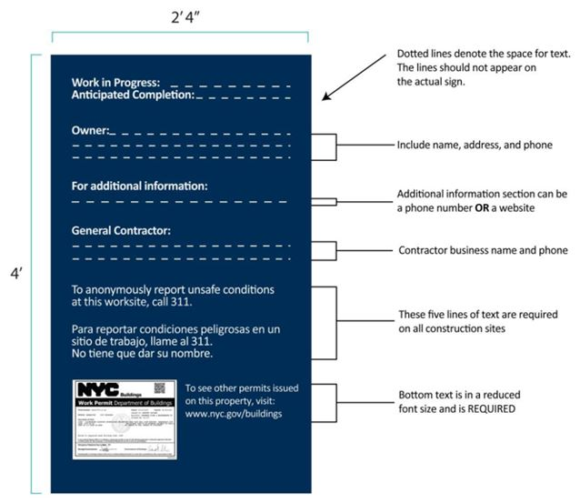
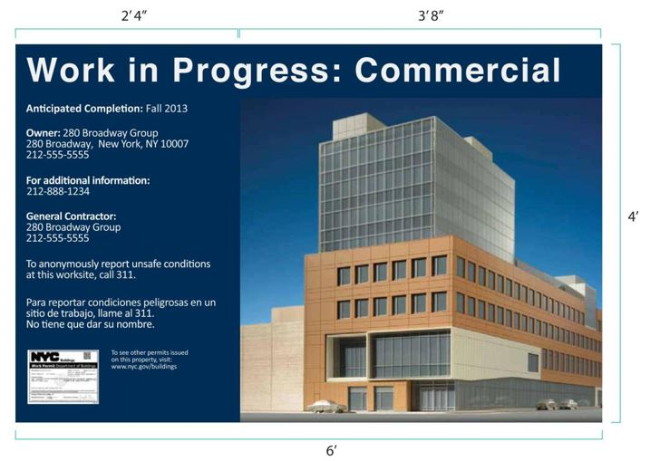
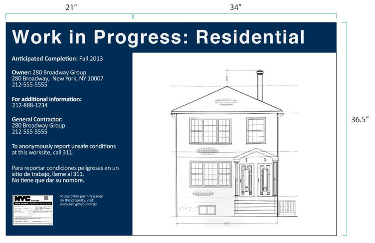
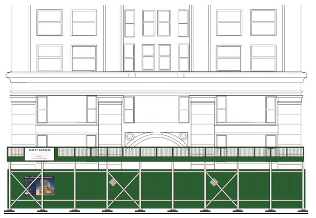

Chapter 33: Safeguards During Construction or Demolition
Section BC 3301: General
3301.1 Scope.
The provisions of this chapter shall govern the conduct of all construction or demolition operations with regard to the safety of the public and property. For regulations relating to the safety of persons employed in construction or demolition operations, OSHA standards shall apply.
3301.1.1 Responsibility for safety.
Nothing in this chapter shall be construed to relieve persons engaged in construction or demolition operations from complying with other applicable provisions of law, nor is it intended to alter or diminish any obligation otherwise imposed by law on any party engaged in a construction or demolition operation, including but not limited to the owner, construction manager, general contractor, subcontractors, material men, registered design professionals, or other party to engage in sound design and engineering, safe construction or demolition practices, including but not limited to debris removal, and to act in a reasonable and responsible manner to maintain a safe construction or demolition site.
3301.1.2 Fire code.
In addition to the requirements of this chapter, construction or demolition operations shall also be conducted in conformance with the New York City Fire Code.
3301.1.3 Manufacturer specifications.
See Section 3301.6.1.
3301.1.4 Sizes.
All sizes and dimensions prescribed in this chapter are minimum requirements, unless otherwise specified. Lumber sizes are nominal or commercial except where stated otherwise.
3301.2 Safety measures and safeguards.
Contractors, construction managers, and subcontractors engaged in construction or demolition operations shall institute and maintain all safety measures required by this chapter and provide all equipment or temporary construction installations necessary to safeguard the public and property affected by such contractor's operations.
3301.3 Site safety managers, coordinators and construction superintendents.
A site safety manager or site safety coordinator must be designated and present at the construction or demolition of a major building in accordance with Section 3310. A construction superintendent is required for the construction or demolition of buildings as identified in Section 3301.13.3.
3301.4 Inspection.
Structures, temporary construction installations, materials, operations, and equipment shall be inspected as required by this code, and records of such inspections shall be maintained as required by this code.
3301.4.1 Inspection of equipment where the code does not specifically require an inspection.
Where this code does not specifically require an inspection, any equipment, except hand tools, that would affect the safety of the public or property when operated shall be inspected by a competent person designated by the contractor using the equipment before the equipment is used at the site and on a periodic basis thereafter throughout the duration of the job. The results of the inspection shall be documented in an inspection checklist signed and dated by the competent person who performed the inspection.
(Am. L.L. 2023/077, 6/11/2023, eff. 6/11/2023)
Editor's note: For related unconsolidated provisions, see Appendix A at L.L. 2023/077.
3301.5 Unsafe conditions.
Any structure, temporary construction installation, material, operation, or equipment found to be defective or unsafe, and posing a risk to the public or property, shall be immediately secured and corrected, or removed from the site.
(Am. L.L. 2023/077, 6/11/2023, eff. 6/11/2023)
Editor's note: For related unconsolidated provisions, see Appendix A at L.L. 2023/077.
3301.6 Manufacturer specifications, design, and capacity.
The permit holder, or where there is no permit holder, the contractor or other entity causing the work to be performed, shall ensure compliance with manufacturer specifications, design documents, and capacity restrictions in accordance with Sections 3301.6.1 through 3301.6.5 and other applicable sections of the code. Where there is a discrepancy between a manufacturer specification, design document, capacity restriction, or other applicable code section, the more stringent requirement shall apply.
3301.6.1 Manufacturer specifications.
During construction or demolition operations, structures, building systems or components, temporary construction installations, materials, and equipment shall be installed, removed, and utilized in accordance with the specifications of their manufacturer, where such specifications exist.
3301.6.2 Design requirements.
Whenever design is required by this chapter, the design shall be in accordance with the requirements of this code. This requirement does not alleviate any other design requirements imposed by law or the manufacturer.
3301.6.3 Designer.
Where design is required by this chapter, the design shall be executed by or under the supervision of a registered design professional, who shall cause his or her seal and signature to be affixed to such documents that may be required for the work
Exception: Where this chapter specifically indicates that the design may be executed by another individual.
3301.6.4 Capacity.
No structure, building system or component, temporary construction installation, material, or equipment, including any partially or fully completed element or section, shall be utilized in excess of its capacity.
3301.6.5 Design documents.
Whenever design is required by this chapter, the design shall be indicated in plans and specifications and other written, graphic and pictorial documents that are prepared or assembled for describing the design, location, physical characteristics, and other elements of the project. Design documents shall be complete and of sufficient clarity to indicate the location and entire nature and extent of the work proposed, and shall show in detail that the work conforms to the provisions of this code and other applicable laws and rules.
3301.7 Documents to be maintained on site.
Where this chapter requires documents, including but not limited to construction documents, submittal documents, shop drawings, inspection reports, logs, checklists, meeting records, pre-construction surveys, designation letters, site safety plans, fire safety and evacuation plans, tenant protection plans, occupant protection plans, or monitoring plans, copies of such documents shall be maintained at the site for the duration of the job and made available to the commissioner upon request. Copies of required construction documents or other design drawings shall also be maintained by the permit holder and the designer. Copies of required inspection records, including but not limited to reports, logs, or checklists, shall also be maintained by the permit holder and the entity that performed the inspection. Copies of required plans shall also be maintained by the permit holder and the entity that developed the plan. Copies of all other documents required by this chapter shall also be maintained by the permit holder.
3301.7.1 Other obligations.
Where this chapter requires documents to be maintained by another specified entity, such documents shall be maintained by such specified entity.
(Am. L.L. 2023/077, 6/11/2023, eff. 6/11/2023)
Editor's note: For related unconsolidated provisions, see Appendix A at L.L. 2023/077.
3301.7.2 Manufacturer specifications.
Where compliance with manufacturer specifications is required by this chapter, copies of such manufacturer specifications shall be available at the site and made available to the commissioner upon request. Manufacturer specifications that can be readily downloaded from the manufacturer's website or that are stored in an electronic format acceptable to the commissioner shall satisfy the requirements of this section. A serial number, make and model number, or other similar identification shall be maintained in a legible condition on the item for which the manufacturer specification is required such that the identification can be used to match the item to the manufacturer specification.
Exception: Where this chapter specifically requires that the manufacturer specifications for a specific item be physically maintained at the site, downloadable or electronically formatted manufacturer specifications will not satisfy the accessibility and availability requirements of this section.
3301.8 Incidents and damage to adjoining property.
The department shall be notified immediately by the permit holder, or a duly authorized representative, of any incident at a construction or demolition site, or of any damage to adjoining property caused by construction or demolition activity at the site. Where required by Section 3301.13.11 or Section 3310.8.2.1, incidents or damage to adjoining property shall instead be reported by the construction superintendent or the site safety manager or coordinator.
3301.8.1 Additional notifications.
Nothing in this section shall diminish or relieve other notification requirements imposed by this chapter, including but not limited to, notifications by the site safety manager, site safety coordinator, concrete safety manager, or hoisting machine operator.
3301.8.2 Use and tampering prohibited.
Following an incident, no person shall permit any of the following without the permission of the commissioner, or without a lawful order from the New York city police or fire department:
1. Use or operation of any equipment or structure damaged or involved in the incident; or
2. Removal or alteration of any equipment, structure, material, or evidence related to the incident.
Exception: Immediate emergency procedures taken to secure structures, temporary construction installations, operations, or equipment that pose a continued imminent danger or to facilitate assistance for persons who are trapped or who have sustained bodily injury.
3301.9 Signs at a construction or demolition site.
Signs shall be posted at a construction or demolition site in accordance with Sections 3301.9.1 through 3301.9.8. It is the responsibility of the permit holder for the underlying construction or demolition work, or where there are no active permits, the building owner, to ensure such signs are posted and maintained at the site in accordance with Sections 3301.9.1 through 3301.9.8, and to ensure that such signs are updated in a timely fashion to reflect any revised information.
3301.9.1 Fence project information panel.
Where a site is enclosed with a fence in accordance with Section 3307.7, a project information panel meeting the requirements of Sections 3301.9.1.1 through 3301.9.1.6 shall be posted. Required project information panels shall be in place throughout the duration that the fence remains at the site.
Exception: Project information panels at government-owned sites or at sites with government funding may be modified in accordance with department rule.
3301.9.1.1 Project information panel content.
Project information panels shall contain the following information:
1. A rendering, elevation drawing, or zoning diagram of the building exterior that does not contain logos or commercially recognizable symbols;
2. A title line stating "Work in Progress:" and specifying the intended type(s) of zoning use(s) (e.g. Residential, Commercial, Manufacturing, Retail, Office, Hospital, School);
3. Anticipated project completion date;
4. The corporate name, address, and telephone number of the owner of the property;
5. Website address or phone number to contact for project information;
6. The corporate name and telephone number of the general contractor, or for a demolition site, the demolition contractor;
7. The statement, in both English and Spanish, "TO ANONYMOUSLY REPORT UNSAFE CONDITIONS AT THIS WORK SITE, CALL 311."; and
8. A copy of the primary project permit, with accompanying text "To see other permits issued on this property, visit: www.nyc.gov/buildings." The permit shall be laminated or encased in a plastic covering to protect it from the elements or shall be printed directly onto the project information panel.
Exception: A rendering, elevation drawing, or zoning diagram of the building exterior is not required for demolition projects.
3301.9.1.2 Posting of project information panels.
A project information panel shall be posted on the fence on each perimeter fronting a public thoroughfare. Where such perimeter is more than 150 feet (45 720 mm) in length, a project information panel shall be posted at each corner. Such panels shall be posted on the fence at a height of 4 feet (1219 mm) above the ground, with such distance measured from the ground to the bottom edge of the panel.
3301.9.1.3 Project information panel material.
Project information panels shall be constructed out of a durable and weatherproof material such as vinyl, plastic, or aluminum, and such material shall be flame retardant in accordance with NFPA 701 or listed under UL 214.
3301.9.1.4 Project information panel specifications.
Project information panels shall be 6 feet (1829 mm) wide and 4 feet (1219 mm) high, with the content required by Section 3301.9.1.1 arranged in accordance with Figures 3301.9.1.4(1) and 3301.9.1.4(2). The content required by Section 3301.9.1.1, items number 2 through 7 shall be written in the Calibri font or similar sans serif font style, with letters a minimum of 1 inch (25 mm) high, as measured by the upper case character. Such letters shall be white, on a blue background, with such blue color of a shade matching Pantone 296M, RGB 15, 43, 84, or CMYK 100, 88, 38, 35.
Exceptions:
1. The dimensions for a project information panel posted in conjunction with a demolition project shall be 2 feet 4 inches (711 mm) wide and 4 feet (1219 mm) high, in accordance with Figure 3301.9.1.4(1).
2. For construction sites with a street frontage less than 60 feet (18 288 mm), the dimensions for a project information panel, other than that posted in conjunction with a demolition project, shall be 55 inches (1397 mm) wide and 36.5 inches (927 mm) high, in accordance with Figure 3301.9.1.4(3).

Figure 3301.9.1.4(1) Fence Project Information Panel Text Detail For SI: 1 inch = 25.4 mm, 1 foot = 304.8 mm.

Figure 3301.9.1.4(2) Fence Project Information Panel Layout For SI: 1 inch = 25.4 mm, 1 foot = 304.8 mm.

Figure 3301.9.1.4(3) Fence Project Information Panel Layout for Small Lots For SI: 1 inch = 25.4 mm, 1 foot = 304.8 mm.
(Am. L.L. 2023/077, 6/11/2023, eff. 6/11/2023)
Editor's note: For related unconsolidated provisions, see Appendix A at L.L. 2023/077.
3301.9.1.5 Updating content.
When content required by Section 3301.9.1.1 changes, the project information panel shall be updated.
3301.9.1.6 Maintenance of project information panels.
Project information panels shall be maintained so that the panel remains legible, securely attached, and free of sharp edges, protruding nails, or similar hazards. Content required by Section 3301.9.1.1 shall not be obscured by panel attachments, including but not limited to grommets or grommet holes.
3301.9.2 Sidewalk shed parapet information panel.
Where a sidewalk shed is installed, a sidewalk shed parapet information panel meeting the requirements of Sections 3301.9.2.1 through 3301.9.2.6 shall be posted. Required sidewalk shed parapet information panels shall be in place throughout the duration that the sidewalk shed remains at the site.
3301.9.2.1 Sidewalk shed parapet information panel content.
Sidewalk shed parapet information panels shall contain the following information and be arranged in accordance with Figure 3301.9.2.1:
1. The street, address of the site;
2. Name (which may incorporate a logo) of the contractor responsible for the site or where there is no contractor, the name (which may incorporate a logo) of the owner of the site; and
Figure 3301.9.2.1 Sidewalk Shed Parapet Information Panel Layout
3301.9.2.2 Posting of sidewalk shed parapet information panels.
Sidewalk shed parapet information panels shall be posted on the parapet that runs along the long axis of the sidewalk shed. Where a sidewalk shed extends along multiple street frontages, not including incidental extensions at a street corner, a parapet information panel shall be posted along each long axis. Such sidewalk shed parapet information panel:
1. Shall not be posted above or below the level of the parapet; and
2. Shall be posted, as viewed from the perspective of an individual on the sidewalk opposite the long axis of the sidewalk shed and facing the sidewalk shed, in a location that is at least 3 feet (914 mm) but no more than 6 feet (1218 mm) to the right of the left edge of the sidewalk shed parapet, or where the sidewalk shed parapet extends beyond the projection of the property line, in a location that is at least 3 feet (914 mm) but no more than 6 feet (1218 mm) to the right of the projection of the property line through the left side of the sidewalk shed; or
3. Where a project information panel in accordance with Section 3301.9.1 is posted on the fence, the horizontal center of the sidewalk shed parapet information panel shall be in line with a vertical plane drawn through the horizontal center of the project information panel on the fence in accordance with Figure 3301.9.2.2.

Figure 3301.9.2.2 Panel Posting Elevation Diagram
3301.9.2.3 Sidewalk shed parapet information panel material.
Sidewalk shed parapet information panels shall be constructed out of a durable and weatherproof material such as vinyl, plastic, or aluminum, and such material shall be flame retardant in accordance with NFPA 701 or listed under UL 214.
3301.9.2.4 Sidewalk shed parapet information panel specifications.
Sidewalk shed parapet information panels shall be 3 feet (914 mm) high and 6 feet (1829 mm) wide, with the content required by Section 3301.9.2.1 arranged in accordance with Figure 3301.9.2.1. The sign shall have a white background. The content required by Section 3301.9.2.1 must be written in Calibri font or similar sans serif font style, and such letters shall be blue, with such blue color a shade matching Pantone 296, or RGB 15, 43, 84, or CMYK 100, 88, 38, 35.
3301.9.2.5 Updating content.
When content required by Section 3301.9.2.1 changes, the sidewalk shed parapet information panel shall be updated.
3301.9.2.6 Maintenance of sidewalk shed parapet information panels.
Sidewalk shed parapet information panels shall be maintained so that the panel remains legible, securely attached, and free of sharp edges, protruding nails, or similar hazards. Content required by Section 3301.9.2.1 shall not be obscured by sign attachments, including but not limited to grommets or grommet holes.
3301.9.3 Reserved.
3301.9.4 Reserved.
3301.9.5 Other temporary signs required by law.
Other temporary signs required by law to be displayed at a construction or demolition site shall be posted within the site, readily visible to workers, and shall not be posted in any location readily visible to the public unless otherwise required by law.
3301.9.6 Obscured lawful signs.
When a protective structure constructed in accordance with Section 3307 obscures from view a lawful and existing sign, a temporary sign may be posted on such protective structure. The temporary sign shall comply with the following requirements:
1. The temporary sign shall be securely fastened to the protective structure at a location directly in front of such business storefront;
2. The temporary sign shall be limited to a maximum height of 4 feet (1219 mm) and shall not exceed the square footage of the obscured lawful sign;
3. The temporary sign shall not project from the side or face of the protective structure;
4. When affixed to a sidewalk shed, the temporary sign shall not extend above or below the sidewalk shed parapet;
5. The temporary sign shall not be hung under the deck of a sidewalk shed or protective structure; and
6. Except where the sidewalk shed obscures a lawful projecting sign, the temporary sign shall not be placed on the end of a sidewalk shed that is perpendicular to the building.
3301.9.7 Other signs prohibited.
Except as specified by Sections 3301.9.1 through 3301.9.6 or as otherwise authorized by law, no sign, information, pictorial representation, or any business or advertising message shall be posted on any construction or demolition equipment or temporary construction installation, including but not limited to, protective structures.
3301.9.8 Illuminated signs prohibited.
No illuminated business or advertising sign shall be permitted on any construction or demolition equipment or temporary construction installation, including but not limited to, protective structures.
3301.10 Reserved.
3301.11 Site safety orientation and refresher.
Each permit holder at a site that requires a site safety manager, site safety coordinator, or construction superintendent shall ensure tat each construction or demolition worker employed or otherwise engaged at such site by the permit holder or performing subcontracted work for or on behalf of such permit holder receives a site safety orientation and refresher in accordance with the requirements of Sections 3301.11.1 through 3301.11.5.
(L.L. 2017/206, 11/17/2017, eff. 5/16/2018)
3301.11.1 Site safety orientation.
Each worker employed or otherwise engaged at such site by the permit holder or performing subcontracted work for or on behalf of such permit holder shall receive a site safety orientation before such worker commences any construction or demolition work at such site.
(L.L. 2017/206, 11/17/2017, eff. 5/16/2018)
3301.11.2 Site safety refresher.
Each worker employed or otherwise engaged at such site by the permit holder or performing subcontracted work for or on behalf of such permit holder shall receive a site safety refresher if such worker (i) has performed construction or demolition work at such site for one year or more and (ii) one year or more has elapsed since such worker received a site safety orientation or refresher with respect to such site.
(L.L. 2017/206, 11/17/2017, eff. 5/16/2018)
3301.11.3 Site safety orientation and refresher to be conducted by qualified person.
Site safety orientations and refreshers required by this section shall be conducted by a qualified person designated by the permit holder. Such qualified person shall have the ability to communicate with each worker who takes part in such orientation or refresher.
(L.L. 2017/206, 11/17/2017, eff. 5/16/2018)
3301.11.4 Site safety orientation and refresher content.
Site safety orientations and refreshers required by this section shall include a review of safety procedures at such site and any hazardous activities to be performed at such site. In addition, information pertaining to the site safety training required by Section 3321 shall be made available to each worker in the designated citywide languages, as such term is defined in Section 23-1101 of the Administrative Code, and any other language as may be required by rule of the department, in a form and manner established by the department.
A record of all orientations conducted for the site shall be maintained by the permit holder and kept at the site. Such record shall include for each such orientation or refresher:
1. The date and time of such orientation or refresher;
2. The name, title and company affiliations of each worker who participated; and
3. The name, title and company affiliation of the qualified person who conducted such orientation or refresher, along with such person's signature.
(L.L. 2017/206, 11/17/2017, eff. 5/16/2018)
3301.12 Pre-shift safety meetings.
Each permit holder at a site that requires a site safety manager, site safety coordinator, or construction superintendent shall ensure that each construction or demolition worker employed or otherwise engaged at such site by the permit holder or performing subcontracted work for or on behalf of such permit holder takes part in a safety meeting at the beginning of such worker's shift, but before such worker commences any construction or demolition work in such shift, in accordance with the requirements of Sections 3301.12.1 through 3301.12.3.
Exception: Where other sections of this code or rules promulgated thereunder specify pre-task or pre-shift meetings for specific types of work, those requirements shall instead apply.
(L.L. 2017/204, 11/17/2017, eff. 5/16/2018)
3301.12.1 Pre-shift safety meeting to be conducted by a competent person.
Pre-shift safety meetings shall be conducted at the beginning of each worker's shift, but before such worker commences any construction or demolition work in such shift, by a competent person designated by the permit holder, or where so authorized by the permit holder, by a competent person designated by the subcontractor. Such competent person shall have the ability to communicate with each worker who takes part in such meeting.
(L.L. 2017/204, 11/17/2017, eff. 5/16/2018)
3301.12.2 Pre-shift safety meeting content.
The pre-shift safety meeting shall include a review of activities and tasks to be performed during the shift, including specific safety concerns or risks associated with fulfilling such work.
(L.L. 2017/204, 11/17/2017, eff. 5/16/2018)
3301.12.3 Records.
The permit holder shall maintain, for each worker, a record of one pre-shift safety meeting per week. Such record shall include for each such meeting:
1. The date and time of each such meeting;
2. The name, title and company affiliation of each worker who participated; and
3. The name, title and company affiliation of the competent person who conducted such meeting, along with such person's signature.
(L.L. 2017/204, 11/17/2017, eff. 5/16/2018)
3301.13 Scope.
This section sets forth requirements for construction superintendents at certain construction or demolition sites.
3301.13.1 Site safety plan.
For jobs that require the designation of a primary construction superintendent pursuant to Section 3301.13.3, a site safety plan that meets the applicable requirements of Article 110 of Chapter 1 of Title 28 of the Administrative Code shall be kept on site and made available to the department upon request. Prior to the commencement of work, the permit holder must submit a statement to the department attesting that the site safety plan meets the requirements of Article 110 of Chapter 1 of Title 28 of the Administrative Code and coordinates with the scope of work intended.
Exception: For a major building subject to the provisions of Section 3310, the site safety plan requirements of Section 3310.3 shall apply.
(Am. L.L. 2021/149, 12/11/2021, eff. 11/7/2022)
Editor's note: For related unconsolidated provisions, see Appendix A at L.L. 2021/149.
3301.13.2 Definitions.
For the purposes of this section, the following terms shall have the following meanings:
Approved documents. For the purpose of this section, approved documents include construction documents as defined by this code, and any and all documents that set forth the location and entire nature and extent of the work proposed with sufficient clarity and detail to show that the proposed work conforms to the provisions of this code and other applicable laws and rules. In addition to construction documents, such documents include, but are not limited to, site safety plans, tenant or occupant protection plans, shop drawings, specifications, manufacturer's instructions and standards that have been accepted by the design professional of record or such other design professional retained by the owner for this purpose.
Job. A design and construction/demolition undertaking consisting of work at one building or structure, as well as related site improvements and work on accessory structures. A job may consist of one or more plan/work applications, and may result in the issuance of one or more permits.
Permit holder. The individual who receives the primary department-issued permit for the job.
(Am. L.L. 2021/149, 12/11/2021, eff. 11/7/2022)
Editor's note: For related unconsolidated provisions, see Appendix A at L.L. 2021/149.
3301.13.3 Designation of primary construction superintendent.
The permit holder shall designate a primary construction superintendent, who shall carry out all duties and responsibilities assigned to the construction superintendent by this chapter and rules promulgated by the commissioner, and notify the department of such designation prior to the commencement of work, for the following types of jobs:
1. The construction of a new building;
2. The full demolition of an existing building;
3. An alteration to an existing building that involves one or more of the following:
3.1 A vertical enlargement;
3.2 A horizontal enlargement;
3.3 The alteration or demolition of more than 50 percent of the gross floor area of the building during the course of work over any 12-month period;
3.4 The removal of one or more floors during the course of work over any 12-month period;
3.5 Work that requires a special inspection for underpinning; or
3.6 Work that requires a special inspection for the protection of sides of excavations; or
4. Other jobs that pose an enhanced risk to the public and property, as determined by the commissioner.
Exception: A construction superintendent is not required for work that solely involves a 1-, 2-, or 3-family building, or an accessory use to such building, provided the permit holder for such work is registered as a general contractor in accordance with Article 418 of Chapter 4 of Title 28 of the Administrative Code.
(Am. L.L. 2021/149, 12/11/2021, eff. 11/7/2022)
Editor's note: For related unconsolidated provisions, see Appendix A at L.L. 2021/149.
3301.13.4 Change of designation.
The permit holder must immediately notify the department of any permanent change to the primary construction superintendent.
3301.13.5 Alternate construction superintendent.
In the event the primary construction superintendent is temporarily unable to perform their duties, an alternate construction superintendent, designated by the permit holder, must act in place of the primary construction superintendent and carry out all duties and responsibilities assigned to the construction superintendent by this chapter and rules promulgated by the commissioner. In the event that an alternate construction superintendent will be acting in place of the primary construction superintendent for a period longer than two consecutive weeks, the permit holder must notify the department of such circumstance.
3301.13.6 Limitations on the designation of primary or alternate construction superintendents.
An individual may only be designated as a primary or alternate construction superintendent for that number of jobs for which he or she can adequately perform all required duties. No individual may be designated as the primary construction superintendent on more than ten jobs.
Exceptions:
1. If one of the jobs for which the construction superintendent is designated as a primary construction superintendent is on a building that meets the definition of a major building, the individual may only be designated as the primary construction superintendent for that job and may not serve as the primary construction superintendent for any other job.
2. Notwithstanding Exception 1, beginning on June 1, 2022, no individual may be designated as the primary construction superintendent for more than five jobs.
3. Notwithstanding Exception 1, beginning on January 1, 2024 or a later date established by the department, provided that such date is not later than January 1, 2025, no individual may be designated as the primary construction superintendent for more than three jobs.
4. Notwithstanding Exception 1, beginning on January 1, 2026 or a later date established by the department, provided that such date is not later than January 1, 2027, no individual may be designated as the primary construction superintendent for more than one job.
5. A construction superintendent designated as the primary construction superintendent at a job site may serve as a non-primary construction superintendent at another job site, provided there is no work requiring the presence of such individual occurring at the job site for which the individual has been designated as the primary construction superintendent.
6. Subject to the approval of the commissioner, a construction superintendent may serve as the primary construction superintendent for multiple non-major building jobs located on the same lot or on contiguous lots.
Editor's note: For related unconsolidated provisions, see Appendix A at L.L. 2021/149 and L.L. 2023/077
3301.13.7 Duties of construction superintendents.
The duties of a construction superintendent shall include:
1. Acting in a reasonable and responsible manner to maintain a safe job site and ensure compliance with this chapter and any rules promulgated thereunder at each job site for which the construction superintendent is responsible;
2. To the extent that a registered design professional or special inspection agency is not responsible, the construction superintendent must ensure compliance with the approved documents at each job site for which the construction superintendent is responsible;
3. Fulfilling the duties of a superintendent of construction assigned by Chapter 1 of Title 28 of the Administrative Code at each job site for which the construction superintendent is responsible; and
4. Visiting each job site for which the construction superintendent is responsible each day when active work is occurring; or, beginning January 1, 2026 or a later date established by the department, provided that such date is not later than January 1, 2027, where Section 3301.13.6 requires the construction superintendent to be dedicated to one job, being present at the job site for which the construction superintendent is responsible during all times when active work is occurring.
Exception: The construction superintendent is not required to be present at the site during the following activities, provided no other work is in progress:
1. Surveying that does not involve the disturbance of material, structure, or earth;
2. Use of a hoist exterior to the building to transport personnel only;
3. Use of a hoist that is fully enclosed within the perimeter of the building to transport personnel or material;
4. Work limited to finish troweling of concrete floors;
5. Work limited to providing the site with temporary heat, light, or water;
6. Truck deliveries to the site, provided the delivery occurs within the site while the gate is closed and flagpersons are provided to direct traffic while the truck is entering and exiting the site;
7. Painting; or
8. Landscaping that does not involve the disturbance of material, structure, or earth.
Editor's note: For related unconsolidated provisions, see Appendix A at L.L. 2021/149 and L.L. 2023/077
3301.13.8 Inspection by the construction superintendent.
Each time the construction superintendent visits a job site for which he or she is responsible, the construction superintendent must inspect all areas and floors where construction or demolition work, and ancillary activity, is occurring, and:
1. Verify work is being conducted in accordance with sound construction/demolition practices;
2. Verify compliance with the approved documents; and
3. Verify compliance with this chapter and any rules promulgated thereunder.
Exception: Where a site safety manager or coordinator has been designated for the job in accordance with Section 3310, the construction superintendent does not need to perform the inspections required by this section. Site safety inspections shall be performed by the site safety manager or coordinator in accordance with Section 3310.
(Am. L.L. 2021/149, 12/11/2021, eff. 11/7/2022)
Editor's note: For related unconsolidated provisions, see Appendix A at L.L. 2021/149.
3301.13.9 Correcting unsafe conditions.
In the event the construction superintendent discovers work or conditions at a job site for which he or she is responsible that are not being conducted in accordance with sound construction/demolition practices, not in compliance with approved documents, or not in compliance with this chapter and any rules promulgated thereunder, the construction superintendent must take all appropriate action to correct the unsafe work or condition, including but not limited to immediately notifying the person or persons responsible for creating the unsafe work or condition, and ordering the person or persons to correct the unsafe work or condition, to cease operations, or to leave the job site. Where unsafe work or an unsafe condition relates to an item which a registered design professional or special inspection agency is responsible for implementing or verifying, the construction superintendent must also notify the responsible registered design professional or special inspection agency of the unsafe work or condition. All such unsafe conditions, work, notices, orders, and corrective action must be recorded in the log required by Section 3301.13.13.
(Am. L.L. 2021/149, 12/11/2021, eff. 11/7/2022)
Editor's note: For related unconsolidated provisions, see Appendix A at L.L. 2021/149.
3301.13.10 Notification of conditions to the department.
The construction superintendent must immediately notify the department, when he or she discovers, at any job site for which the construction superintendent is responsible, any of the conditions listed in Section 3310.8.2.1. Notification to the department does not relieve the construction superintendent of their obligations under Section 3301.13.9.
Exception: Where a site safety manager or coordinator has been designated for the job in accordance with Section 3310, the construction superintendent does not need to provide the notification required by this section. Notifications shall be made by the site safety manager or coordinator in accordance with Section 3310.
(Am. L.L. 2021/149, 12/11/2021, eff. 11/7/2022)
Editor's note: For related unconsolidated provisions, see Appendix A at L.L. 2021/149.
3301.13.11 Reporting of incidents and damage to adjoining property.
The construction superintendent must immediately notify the department of any incident at any job site for which the construction superintendent is responsible, or any damage to adjoining property caused by construction or demolition activity at the job site.
Exception: Where a site safety manager or coordinator has been designated for the job in accordance with Section 3310, the construction superintendent does not need to provide the notification required by this section. Notifications shall be made by the site safety manager or coordinator in accordance with Section 3310.
(Am. L.L. 2021/149, 12/11/2021, eff. 11/7/2022)
Editor's note: For related unconsolidated provisions, see Appendix A at L.L. 2021/149.
3301.13.12 Competent person.
The construction superintendent must designate a competent person for each job site for which the construction superintendent is responsible and ensure such competent person is present at the designated job site at all times active work occurs when the construction superintendent is not at the site. The designation of a competent person does not alter or diminish any obligation imposed upon the construction superintendent. The competent person must carry out orders issued by the construction superintendent; be able to identify unsanitary, hazardous or dangerous conditions; take prompt corrective measures to eliminate such conditions; immediately report to the construction superintendent incidents at the job site or any damage to adjoining property caused by construction or demolition activity at the job site; and be able to effectively communicate workplace instructions and safety directions to all workers at the site.
Exception: Beginning January 1, 2026 or a later date established by the department, provided that such date is not later than January 1, 2027, where Section 3301.13.6 requires the construction superintendent to be dedicated to one job, the designation of a competent person is not authorized. In the event the primary construction superintendent cannot be present at the job site while active work is occurring, an alternate construction superintendent shall act on behalf of the primary construction superintendent in accordance with Section 3301.13.5.
(Am. L.L. 2021/149, 12/11/2021, eff. 11/7/2022)
Editor's note: For related unconsolidated provisions, see Appendix A at L.L. 2021/149.
3301.13.13 Log.
The construction superintendent must maintain a log at each job site for which the construction superintendent is responsible. Such log must be made available to the commissioner upon request. The construction superintendent must complete such log prior to departing the job site, or, where the job occurs on a building that meets the definition of a major building, by the end of the day. Each day's log entry must be signed and dated by the construction superintendent. Such log must contain, at a minimum, the following information:
1. The presence of the construction superintendent at the job site as evidenced by their printed name and signature and a notation indicating the times of arrival at, and departure from the site, which must be recorded immediately after arriving at the site and immediately prior to leaving the site, respectively;
2. The general progress of work at the job site, including a summary of that day's work activity;
3. The construction superintendent's activities at the job site, including areas and floors inspected;
4. Any unsafe condition(s) observed pursuant to Section 3301.13.9, and the time and location of such unsafe condition(s);
5. Orders and notice given by the construction superintendent pursuant to Section 3301.13.9, including the names of individuals issued orders or notices, any refusals to comply with orders or respond to notices given, follow up action taken by the construction superintendent, and where the condition giving rise to the order or notice is corrected, the nature of the correction;
6. Any violations, stop work orders, or summonses issued by the department, including date issued and date listed or dismissed;
7. Any incidents or damage to adjoining property caused by construction or demolition activity at the site;
8. The name of the competent person designated in accordance with Section 3301.13.12, along with an accompanying signature of the competent person. If the construction superintendent assigns a new competent person, the date and time of this change, along with the name of the new competent person, must be recorded, accompanied by the signature of the new competent person. If the construction superintendent is not at the job site when this occurs, the new competent person must instead make the log entry, which the construction superintendent must sign and date upon his or her next visit to the job site;
9. All construction superintendent personnel changes, accompanied by the signature of the new construction superintendent. Construction superintendent personnel changes include, but are not limited to: a change to the primary construction superintendent; an alternate construction superintendent acting in the place of the primary construction superintendent; or a new alternate construction superintendent taking over for the previous alternate construction superintendent; and
10. A record of the weekly safety meeting required by Section 3301.13.19, including date and time of meeting, summary of issues discussed, and the names and affiliation of those who attended.
Editor's note: For related unconsolidated provisions, see Appendix A at L.L. 2021/149 and L.L. 2023/077
3301.13.14 Reserved.
3301.13.15 Reserved.
3301.13.16 Obligation of others.
Nothing in this section is intended to alter or diminish any obligation otherwise imposed by law on others, including but not limited to, the owner, permit holder, construction manager, general contractor, contractor, materialman, architect, engineer, land surveyor, site safety manager, site safety coordinator, concrete safety manager, or other party involved in a construction project to engage in sound engineering, design, and construction practices, and to act in a reasonable and responsible manner to maintain a safe job site.
3301.13.17 Licensing of construction superintendents.
No person shall perform the duties and responsibilities of a construction superintendent, including but not limited to serving as a primary construction superintendent or as an alternate construction superintendent, unless such person is licensed as a construction superintendent in accordance with Article 428 of Title 28 of the Administrative Code.*
* Editor's note: Correct reference should be Article 428 of Chapter 4 of Title 28 of the Administrative Code.
3301.13.18 Release of the construction superintendent.
The department may release the construction superintendent from the job when the construction superintendent demonstrates, to the satisfaction of the commissioner, that the job is substantially complete.
3301.13.19 Weekly safety meeting.
The construction superintendent shall, for each job site for which the construction superintendent is responsible, lead a safety meeting with the designated representative of the general contractor, construction manager, and each subcontractor to ascertain that all contractors and subcontractors are complying with the applicable provisions of this chapter, the site safety plan, and the tenant or occupant protection plan. Where a site safety manager or coordinator has been designated for the job in accordance with Section 3310, the site safety manager or coordinator shall also attend the meeting. Such meeting shall occur at least once a week while active work is occurring.
(L.L. 2021/149, 12/11/2021, eff. 11/7/2022)
Editor's note: For related unconsolidated provisions, see Appendix A at L.L. 2021/149.
3301.14 Contractor shall inform personnel.
General contractors and subcontractors shall state to their directly employed personnel at the construction or demolition site, prior to such directly employed person commencing work at the site, that they are to follow all safety regulations at all times and that they are required to obey and implement all orders and directives issued by the general contractor/subcontractor, the general contractor's/subcontractor's designee, the construction superintendent, and the worker's direct supervisor relating to safety requirements. Where a site safety manager or coordinator is required, the general contractor or subcontractor shall also state to their directly employed personnel at the site, prior to such directly employed person commencing work at the site, that the site safety manager or coordinator is responsible for monitoring compliance with laws and rules governing site safety; and shall inform their supervisory personnel at the site, prior to such supervisor commencing work at the site, of the name and responsibilities of the site safety manager or coordinator.
Editor's note: For related unconsolidated provisions, see Appendix A at L.L. 2023/077.
Section BC 3303: Safeguards and Maintenance of Site
3303.1 Scope.
Sites shall be safeguarded and maintained in accordance with the provisions of this section to protect the public and property.
3303.2 Utilities.
Utilities at a site shall meet the requirements of Sections 3303.2.1 through 3303.2.6.
3303.2.1 Existing services.
The location of all existing utilities and service lines shall be determined and adequate measures taken, or devices provided, to safeguard the public and property before such utilities are disturbed.
3303.2.2 Maintaining essential services.
See Section 3303.9.
3303.2.3 Electrical work.
All temporary electrical equipment and wiring shall meet the requirements of the New York City Electrical Code, and shall be maintained in compliance with such requirements. Portions of permanent electrical installations may be used for temporary operations provided the requirements of the New York City Electrical Code are met.
3303.2.3.1 Temporary lighting for construction sites.
Temporary lighting for construction sites shall use high-efficacy lamps with the following minimum efficacies:
1. 60 lumens per watt for lamps over 40 watts;
2. 50 lumens per watt for lamps over 15 watts but less than or equal to 40 watts; and
3. 40 lumens per watt for lamps 15 watts or less.
3303.2.4 Sanitary facilities.
Sanitary facilities shall be provided during construction or demolition activities in accordance with the New York City Plumbing Code.
3303.2.5 Removing, relocating, or interrupting services.
If any utility is to be removed, relocated, or have its service interrupted, the utility company or city agency affected shall be notified at least 72 hours in advance.
3303.2.6 Disconnecting, capping, and certifications.
Prior to the removal of any service, the utility connection shall be discontinued and capped, and certifications to that effect issued by the representative utility company shall be filed with the department.
3303.3 Watchperson.
Where an individual building being constructed or demolished has a footprint of between 5,000 square feet (1524 m
2
) and 40,000 square feet (12 192 m
2
), a competent watchperson shall be on duty at the site during all hours when operations are not in progress, from the time when the foundation is poured to when all work has concluded and the certificate of occupancy or temporary certificate of occupancy has been issued. Where the building has a footprint of more than 40,000 square feet (12 192 m
2
), at least one additional watchperson shall be on duty for each additional 40,000 square feet (12 192 m
2
) of building footprint, or fraction thereof. The watchperson shall be familiar with emergency notification procedures to the Fire Department, shall possess a valid security guard registration with the State of New York, shall hold a valid watchperson certificate from the Fire Department, and shall have completed a course that is at least 10-hours in length and approved by OSHA in construction industry safety and health.
Exceptions:
1. Where the square footage of the building footprint requires two or more watchpersons, the number of watchpersons may be reduced, subject to the approval of the commissioner, where:
1.1 A video monitoring system is in place, or where the layout of the building allows a continuous line of sight across the entire building; and
1.2 At least one watchperson is provided.
2. The building is being actively monitored in accordance with a fire safety and evacuation plan approved by the Fire Department in accordance with the New York City Fire Code.
3303.4 Housekeeping.
Housekeeping at a site shall be in accordance with Sections 3303.4.1 through 3303.4.11.
3303.4.1 Slipping and tripping hazards.
Slipping and tripping hazards in areas used by the public shall be minimized in accordance with Sections 3303.4.1.1 and 3303.4.1.2.
3303.4.1.1 Maintenance of public areas.
All areas used by the public shall be maintained free from ice, snow, grease, debris, equipment, materials, projections, tools, or other items, substances, or conditions that may constitute a slipping, tripping, or other hazard.
3303.4.1.2 Location of hose lines, wires, ropes, pipes, chains, and conduits.
Hose lines, wires, ropes, pipes, chains, and conduits shall be located so that they will not constitute a tripping hazard to the public. Where it is necessary to carry such across sidewalks, or any public way, they shall either be suspended at least 8 feet (2438 mm) above ground or, if left on the ground, suitable chamfered planks or a pedestrian bridge shall be provided to cover such.
3303.4.2 Containers.
Sufficient containers, including but not limited to waste dumpsters, debris boxes, and skip boxes, shall be available for the storage of all debris or waste. Such containers shall comply with the following requirements:
1. Containers shall be made of metal, flame-retardant plastic, or other noncombustible material.
2. Containers with wheels shall be secured at the end of the workday by rope, cable, or chocking at the wheels in order to prevent movement.
3. Containers shall not be placed at the edge of an unenclosed perimeter at any time, except when being moved from the floor or building.
4. Containers holding debris or waste shall be covered at the end of the workday and at any time when full to near the rim. However, containers need not be covered when they are empty and not in use, or while stored in a fully enclosed space at the end of the workday and not full to near the rim.
Exception: Combustible debris shall not be permitted to accumulate and shall be removed from the site in accordance with Section 3303.5.1.
3303.4.3 Reserved.
3303.4.4 Control of debris.
Control of debris during construction and demolition work shall include the measures specified in Sections 3303.4.4.1 through 3303.4.4.3.
3303.4.4.1 Daily cleaning.
All areas of the construction or demolition site shall be cleaned of debris at least daily.
3303.4.4.2 Cleaning near unenclosed perimeters.
Areas that are at least 10 feet (3048 mm) from an unenclosed perimeter, as measured in all directions from the unenclosed perimeter, shall be cleaned of debris periodically throughout the day.
Exception: In locations where unenclosed perimeter protection has been temporarily removed, the requirements of Section 3308.10 shall apply.
3303.4.4.3 Securing debris that cannot be removed by the end of the shift.
Debris that cannot be removed from the site by the end of the shift shall be:
1. Placed in containers meeting the requirements of Section 3303.4.2; or
2. Secured overnight to protect the public and property and shall be removed from the site or placed in containers meeting the requirements of Section 3303.4.2 at the beginning of the next shift. For demolition operations, debris stored overnight on grade or earth, and neatly piled to prevent dislodgement, tipping, or spillage, shall be considered to be in compliance with this section.
Exception: Combustible debris shall not be permitted to accumulate and shall be removed from the site in accordance with Section 3303.5.1.
3303.4.5 Storage and safeguarding of materials and equipment during construction or demolition.
Material and equipment located at a site during construction or demolition operations shall comply with Sections 3303.4.5.1 and 3303.4.5.2.
3303.4.5.1 Open and exposed areas.
Material or equipment located on a working deck, unenclosed floor, roof, ground area, or similar exposed area shall be secured or otherwise safeguarded to prevent dislodgement by wind, vibration, accidental impact, or other means.
3303.4.5.2 Storage near unenclosed perimeters.
When not being used, material or equipment shall be stored at least 10 feet (3048 mm) from all unenclosed perimeters, as measured in all directions from the unenclosed perimeter. Material or equipment shall also be secured or safeguarded in accordance with the requirements of Section 3303.4.5.1.
Exceptions: Provided the material or equipment is secured against dislodgement by wind, vibration, accidental impact, or other means, in lieu of the 10-foot (3048 mm) set back distance:
1. Material or equipment that weighs 750 pounds (340.2 kg) or more may be stored at least 5 feet (1524 mm) from the unenclosed perimeter.
2. Where the gross floor area is less than 1,000 square feet (93 m
2
), material or equipment, regardless of weight, may be stored at least 5 feet (1524 mm) from the unenclosed perimeter.
3. Where located on a floor that is at or above the level of the horizontal safety netting in accordance with Section 3308, material or equipment may be stored at least 2 feet (610 mm) from the unenclosed perimeter.
4. Material related to concrete operations may overhang the unenclosed perimeter of the building or structure, provided:
4.1. The material is banded with a minimum of two equally spaced bands to prevent dislodgement;
4.2. The material is braced and secured in place by positive means as indicated on the site safety plan, or where there is no site safety plan, in accordance with drawings prepared by a registered design professional;
4.3. The material overhangs by no more than one-third of its length;
4.4. The material is stored in an area designated on the site safety plan, or where there is no site safety plan, in an area designated on drawings prepared by a registered design professional;
4.5. Such designated area is broom swept and cleared of all materials, equipment, and debris prior to the temporary removal of the vertical netting and placement of overhanging material in the designated area;
4.6. The perimeter of such designated area, except for the perimeter along the unenclosed perimeter, is protected by vertical netting meeting the requirements of Section 3308.5 or an alternative system acceptable to the commissioner;
4.7. Horizontal safety netting meeting the requirements of Section 3308.6 is provided at a level not more than two stories or 30 feet (9144 mm) below the overhanging material, whichever is less, with such nets in place for the full time the material is overhanging, except that the nets may be pulled in at the immediate time the material is being hoisted or lowered where such nets would conflict with the hosting or lowering operation; and
4.8. The material is relocated on the next workday.
3303.4.6 Storage of combustible material and equipment.
Storage of combustible material and other material and equipment that may present a fire hazard, shall comply with the New York City Fire Code.
3303.4.7 Storage near sidewalks, walkways, and pathways.
Material stored adjacent to a sidewalk, walkway, or pathway that remains open to the public shall not be piled higher than 3 feet (914 mm), or where a solid fence or barrier is provided, to within one foot (305 mm) of the top of such fence or barrier. For the purposes of this section, the term "adjacent to" shall be any area that is within a horizontal distance that is equal to or less than the vertical height of the piled material.
Exception: Material stored within a dumpster or similar solid container, provided such material is not piled above the top of such dumpster or container.
3303.4.8 Machinery.
All exposed, electrically charged, moving or otherwise dangerous parts of machines and construction or demolition equipment shall be located, guarded, shielded, or barricaded so as to prevent contact by the public.
3303.4.9 Internal combustion-powered equipment.
In addition to the requirements of this chapter, the use of internal combustion-powered equipment shall comply with the New York City Fire Code.
3303.4.10 Stairs, hallways, and other means of egress.
Stairs, hallways, pathways, and other means of egress, including but not limited to ladders used to facilitate access to a working level, shall not be encumbered by debris, material, or equipment.
3303.4.11 Daily inspection of housekeeping.
A daily inspection shall be made by a competent person to verify compliance with the housekeeping requirements of Sections 3303.4.1 through 3303.4.10. If the building is a major building, the occurrence of this inspection shall be noted in the site safety log. If the building is not a major building but requires a construction superintendent, the occurrence of this inspection shall be noted in the construction superintendent's log.
3303.5 Removal of material and debris.
Material and debris shall be removed in a manner that prevents injury or damage to the public or property.
3303.5.1 Removal of combustible debris.
Combustible debris shall not be permitted to accumulate, and shall be removed from the site at reasonable intervals in accordance with the requirements of the New York City Fire Code.
3303.5.2 Dropping or throwing prohibited.
No material, debris, or equipment shall be intentionally dropped or thrown from a building or structure.
3303.5.3 Clogging.
Precautions shall be taken to prevent concrete or mortar washings, sand, grit, or any other material that would cause clogging from entering a sewer, drain, vault, or subsurface structure. Concrete washout water shall also meet the requirements of Section 3303.15.
3303.5.4 Air pollution.
The provisions of the Air Pollution Control Code shall apply in order to prevent dust from becoming airborne.
(Am. L.L. 2015/038, 5/6/2015, eff. 5/6/2016)
3303.5.5 Chutes.
Chutes used in association with the removal of materials shall comply with Sections 3303.5.5.1 through 3303.5.5.5.
3303.5.5.1 Enclosures.
Chute enclosures shall comply with the following requirements:
1. Material chutes that are at an angle of more than 45 degrees (0.79 rad) with the horizontal shall be entirely enclosed on all sides, except for openings at the floor levels for the receiving of materials. Such openings shall not exceed 48 inches (1219 mm) in height, measured along the wall of the chute, and all openings, except the top opening, shall be closed and secured when not in use.
2. Chutes at an angle of less than 45 degrees (0.79 rad) with the horizontal may be open on the upper side.
3303.5.5.2 Chute construction.
Chute construction shall comply with the following requirements:
1. Every chute used to convey debris from a building or structure shall be rigidly supported and braced throughout its height.
2. Non-manufactured chutes less than 24 inches (610 mm) in maximum dimension shall be constructed of not less than 1-inch (25.4 mm) (nominal) wood, or 1/8-inch thick (3.18 mm) steel, or a material of equivalent strength and durability acceptable to the commissioner. Chutes more than 24 inches (610 mm) in maximum dimensions shall be constructed of not less than 2-inch (51 mm) (nominal) wood, or 3/16-inch thick (4.76 mm) steel, or a material of equivalent strength and durability acceptable to the commissioner.
3. Chutes shall be provided with a metal impact plate where material is forced to change direction while falling.
4. A gate shall be provided at the lower end of every chute to control the loading of material into trucks and to close the chute at all other times. Splash-boards or baffles shall be erected to prevent materials from rebounding into the street or under the sidewalk shed.
5. A bumper or curb at least 4 inches by 4 inches (102 by 102 mm) in section shall be provided at each chute opening where such opening is level with, or below, the floor or platform. Every space between the chute and the edge of the opening in the floor or platform shall be solidly planked.
6. Chutes that are over 75 feet (22 860 mm) in height, or utilized in Group I occupancy, shall also comply with the requirements of Section 3303.5.5.3.
3303.5.5.3 Chute construction where the chute is over 75 feet in height, or utilized in Group I occupancy.
Chutes that exceed 75 feet (22 860 mm) in height, or that are used in an occupied building where the main use or dominant occupancy is in Group I, shall either:
1. Be constructed of noncombustible material; or
2. Where constructed of combustible material, the combustible material of the chute shall be covered on the exterior of the chute with corrugated steel sheeting having a minimum thickness of 24 gauge through the entire height of the chute.
3303.5.5.4 Supports.
All structural supports of material chutes shall be of noncombustible material.
3303.5.5.5 Design and permit.
No chute shall be installed until a permit has been issued by the commissioner on the basis of drawings prepared by a registered design professional.
Exception: Design and permit is not required for a chute that meets all of the following criteria:
1. The chute is installed on the exterior of a building or structure at a height of 40 feet (12 192 mm) or less above the level of the adjoining ground;
2. The chute is a manufactured product and is installed in accordance with the manufacturer's specifications; and
3. The chute does not attach to or impart a load on a scaffold.
3303.6 Escape hatches.
Where portable fuel fired heaters or other heating equipment are used to provide temporary heating during the placing of concrete for a floor, an escape hatch shall be provided. The escape hatch shall be located as near to the center of the building or structure as practical.
Exceptions:
1. An escape hatch is not required where either the concrete placement floor or heating floor is the ground floor.
2. An escape hatch is not required provided at least one permanent stairway is available for use on the floor where the concrete is being placed and the stair shaft is enclosed from the top of the floor where concrete is being placed to at least the top of the heating floor with either its permanent construction, a temporary smoke proof 1-hour fire rated assembly, or a 1-hour fireproof tarp wrapped tightly around the stair shaft so that no smoke can penetrate.
3303.6.1 Required ladders and shields.
The escape hatch shall be constructed with at least two fixed, vertical ladders enclosed in a solid non-combustible shield. The ladders shall extend from a distance of 3 feet (914 mm) above the floor where the concrete is being placed to at least the story below the heating floor, or to the ground floor, whichever is less. The solid non-combustible shield shall enclose the ladders on all sides from the top of the floor where the concrete is being placed to at least the top of the heating floor. The inside dimensions between faces of the shield shall be not less than 3 feet 8 inches (1118 mm).
Exception: Extension ladders may be utilized where the horizontal dimension between the faces of the shields is equal to or greater than one-quarter the height of the shaft.
3303.6.2 Shield space and decking.
Any gap between the shield and the perimeter of the opening in the floor under construction and also between the shield and the perimeter of the opening in the heating floor shall be decked over with 2-inch (51 mm) or heavier planking covered with plywood or sheet metal so as to make the decking smoke tight. At the termination of the ladders, the opening in the floor shall be covered completely with 2-inch (51 mm) planking or other material of equivalent strength.
3303.7 Fire prevention and fire protection.
Firefighting equipment, firefighting access at the construction or demolition site, and the conduct of all construction or demolition operations affecting fire prevention and firefighting shall comply with the New York City Fire Code and the provisions of Sections 3303.7.1 through 3303.7.7.
3303.7.1 Water supply.
A water supply for fire protection shall be provided in accordance with the New York City Fire Code.
3303.7.1.1 Large footprint construction.
For a building that has a footprint of 100,000 square feet (30 480 m
2
) or more, regardless of the height of the building, and the building is substantially enclosed, permanent or temporary fire hydrants available for fire department use shall be provided during the course of construction:
1. Within 50 feet (15 240 mm) of the main entrance; and
2. Along the perimeter of the building, with the hydrants located so that there is at least one hydrant along every 250 feet (76 200 mm) of building perimeter, and with no hydrant more than 50 feet (15 240 mm) from the exterior wall.
3303.7.2 Fire extinguishers.
Fire extinguishers shall be provided in accordance with the New York City Fire Code.
3303.7.3 Smoking.
Smoking shall be prohibited at all construction and demolition sites. No smoking signs shall be posted at the site in accordance with the provisions of the New York City Fire Code.
3303.7.4 Sprinkler systems.
Existing sprinkler systems in buildings undergoing an alteration or demolition shall comply with the requirements of Sections 3303.7.4.1 through 3303.7.4.3.
3303.7.4.1 Sprinklers during alteration.
Existing sprinkler systems in buildings undergoing an alteration shall be maintained in accordance with Section 3303.9, except as provided in Section 3303.7.4.3. The red paint required pursuant to Section 903.6 shall be maintained during any alteration operation.
3303.7.4.2 Sprinklers during demolition.
When existing sprinkler systems with fire department hose connections are present in buildings undergoing full or partial demolition, such systems shall be maintained as a nonautomatic sprinkler system, except as provided in Section 3303.7.4.3. When demolition starts, the sprinkler risers shall be capped immediately below the floor being demolished so as to maintain the sprinkler system on all lower floors for Fire Department use. Cutting and capping of sprinklers during demolition work shall be performed only by a licensed master plumber or licensed master fire suppression piping contractor who has obtained a permit for such work. Fire department hose connections shall be kept free from obstruction and shall be marked by a metal sign reading "Sprinkler Connection" and by a red light at night. The red paint required pursuant to Section 903.6 shall be maintained during any demolition operations.
3303.7.4.3 Removal of damaged sprinklers.
Requests for a variance from the sprinkler requirements of this section shall be limited to requests to remove a damaged or inoperable sprinkler system or a portion of such system in connection with demolitions or gut rehabilitations. Applications for construction document approvals for such requests shall be filed with the department by a registered design professional in accordance with the following procedure:
1. The filed application shall include a complete report prepared by the professional describing the extent of the damage and attesting as to why the system cannot be restored; and
2. The variance shall not be approved by the department without the concurrence of the Fire Department as follows:
2.1. The applicant shall file the request for variance with the Fire Department;
2.2. The Fire Department shall review and recommend any necessary safety measures required as a condition of granting the variance; and
2.3. The applicant shall submit the Fire Department's recommendation to the department along with proof of satisfactory implementation of such safety measures.
3303.7.5 Standpipe systems.
Standpipe systems shall meet the requirements of Section 3303.8.
3303.7.6 Floor numbering and floor elevation.
During new building construction, a vertical or horizontal enlargement, or a demolition operation that results in the removal of one or more floors in a building that is greater than 420 feet (128 m) in height above grade, or in any building, regardless of height, with non-sequential floor numbers, the following shall be provided:
1. A sign at each hoistway landing prominently displaying the designated floor number and elevation above grade.
2. A sign at each stair landing prominently displaying the designated floor number and elevation above grade.
3. A sign or other acceptable marking immediately adjacent to the standpipe hose outlet on each floor indicating the elevation above grade of the standpipe hose outlet and, in multi-zone standpipe buildings, the zone of the riser (low, mid, high).
4. A chart of the entire building listing the designated floor number and the elevation above grade of the standpipe hose outlet on each floor. The chart shall be posted in each construction elevator or hoist, and at such ground floor locations as specified in the New York City Fire Code.
3303.7.7 Special provisions for Type IV construction.
In addition to the fire prevention and fire protection requirements imposed by this code, the New York City Fire Code, and other applicable law, the following provisions shall also apply during new building construction of structures categorized as Type IV construction by Chapter 6 of this code.
(Am. L.L. 2023/077, 6/11/2023, eff. 6/11/2023)
Editor's note: For related unconsolidated provisions, see Appendix A at L.L. 2023/077.
3303.7.7.1 Interior exit stair enclosures.
Notwithstanding the requirements of Section 3303.11, no wooden structural components shall be installed until the permanent stairs and interior exit stair enclosures have been constructed to a height of at least two floors above the topmost working deck, or to their full height, and enclosed with their permanent fire protected rated material. A temporary or permanent self-closing door that meets the requirements of Section 715 shall be installed at each level as soon as a walkable surface is in place at that floor level. Openings in the interior exit stair enclosures at levels where a walkable surface has not been placed shall be protected with guardrails that meet the requirements of Section 3308.7. The top of the interior exit stair enclosure, if not permanently enclosed, shall be covered with a tarp or other temporary weather protection. The stair shall be provided with temporary or permanent handrails. Permanent signs, markings, or anti-slip materials in the stairs are not required during construction.
3303.7.7.2 Standpipes.
A permanent or temporary standpipe system meeting the requirements of Sections 905 and 3303.8 shall be provided in each interior exit stair enclosure and kept in a state of readiness at all times for use by firefighting personnel, even if the site does not otherwise trigger the standpipe requirements of Section 3303.8, Item 1. The standpipe system shall be in place prior to the installation of wooden structural components and shall serve all levels where the interior exit stair enclosure has been constructed. No standpipe shall be considered to be in a state of readiness unless it is painted red in accordance with the provisions of Section 905.11. The standpipe system shall be maintained as a dry system and provided with an air pressurized alarm system in accordance with Section 3303.8.1. Where the building will not be provided with a permanent standpipe at the end of construction, the temporary standpipe system shall be removed once the sprinkler system for the building has been signed off.
3303.7.7.3 Progressive installation of enclosures and fire protection elements.
Fire-rated enclosures (e.g. corridors, fire compartmentalization, fire-rated doors), noncombustible exterior walls, heat detectors required by Section 3303.7.7.5, and sprinkler systems, if required for the building, shall be installed as soon as practical, and in no case shall they lag more than two floors below the topmost walkable surface. Sprinkler systems shall be temporary or permanent and shall be maintained as a dry system during construction. Openings in the facade for hoists or material loading platforms are permitted provided the opening is covered at the end of the shift with a flame resistant tarp made tight so that no smoke can penetrate.
3303.7.7.4 Temporary protection of structural connections.
Where a structural connection between a girder and column is not provided with its permanent fire-rated enclosure or protection, it shall be protected by a temporary 1-hour rated enclosure or protection. Such temporary enclosure or protection shall be installed as soon as practical after the connection has been made, and no later than by the end of the shift.
3303.7.7.5 Heat detectors.
Heat detectors shall be provided throughout the site. Such detectors shall send alerts to a dedicated monitoring location, either at the site or at a remote location that is monitored continuously, including days, nights, weekends, and holidays. The monitor shall be familiar with emergency contact procedures, the locations of heat detectors at the site, and shall be able to alert the New York City Fire Department as necessary and provide the fire department with the location of any heat detector that has been activated.
3303.7.7.6 Watchperson.
A watchperson meeting the requirements of Section 3303.3 shall be on duty during all times specified by Section 3303.3, even if the building has a footprint of less than 5,000 sq ft (1524 m
2
).
3303.7.7.7 Site safety orientation and refresher.
The site safety orientation and refresher required by Section 3301.11 shall contain instruction on site specific fire hazards, fire safety safeguards, and fire safety procedures.
3303.7.7.8 Pre-shift safety meetings.
The pre-shift safety meetings required by Section 3301.12 shall contain instruction on fire hazards, fire safety safeguards, and fire safety procedures applicable to the individual worker.
3303.7.7.9 Chutes.
Chutes shall comply with the requirements of Section 3303.5.5.3 even if the building does not otherwise meet the trigger thresholds of Section 3303.5.5.3.
3303.7.7.10 Doors.
Except when required to facilitate the active passage of personnel, material, debris, or equipment, fire rated doors shall be kept closed at all times, and all other doors shall be closed during non-working hours.
3303.7.7.11 Control of saw dust and combustible debris.
Sawdust shall be vacuumed as operations proceed. Combustible debris, including but not limited to sawdust and scrap lumber, shall be removed from the site as required by Section 3303.5.1.
3303.7.7.12 Storage of lumber.
During non-working hours, lumber shall be stored on the ground or street, or shall be stored in a fully enclosed room meeting its permanent fire rating. No more than 1,920 cubic feet (54.37 m
3
) of lumber shall be stored at the site at any one time.
Exception: Columns may be stored on the topmost working deck provided they are to be installed at the start of the next shift.
(Am. L.L. 2023/077, 6/11/2023, eff. 6/11/2023)
Editor's note: For related unconsolidated provisions, see Appendix A at L.L. 2023/077.
3303.8 Standpipe systems during construction, alteration or demolition.
During construction, alteration or demolition operations, standpipe systems shall comply with the following:
1. When, during the course of the construction of a new building, the topmost working deck reaches a height of 75 feet (22 860 mm) or greater above the ground in a building for which a standpipe system will be required, a permanent or temporary standpipe system meeting the requirements of Section 905 shall be kept in a state of readiness at all times for use by fire-fighting personnel. The standpipe system shall serve all floors that are at least 4 stories or 40 feet (12 192 mm) below the topmost working deck, whichever is less. No standpipe shall be considered to be in a state of readiness unless it is painted red in accordance with the provisions of Section 905.11. When freezing conditions may be encountered, the system in whole, or the part of the system subject to freezing conditions, shall be maintained as a dry system.
2. Existing standpipe systems in structures undergoing a full demolition shall be maintained as dry standpipes. At the commencement of demolition, the standpipe risers shall be capped above the outlet on the floor immediately below the floor being demolished so as to maintain the standpipe system on all lower floors for Fire Department use. Cutting and capping of standpipes during demolition work shall be performed only by a licensed master plumber or licensed master fire suppression piping contractor who has obtained a permit for such work. Standpipe hose, nozzles and spanners are not required to be maintained and may be removed at any time. The red paint required pursuant to Section 905.11 shall be maintained during any demolition operations. All existing house check valves shall remain in place until completion of the demolition work.
3. When, during the course of the construction of a new building which will have an occupiable space at a depth of 75 feet (22 860 mm) or greater below the level of the ground in a building for which a standpipe system will be required, a permanent or temporary standpipe system meeting the requirements of Section 905 shall be installed and shall be kept in a state of readiness at all times for use by firefighting personnel. The standpipe system shall serve all stories below grade and shall be installed as soon as the foundation is in place and the first elevated slab has been erected. No standpipe shall be considered to be in a state of readiness unless it is painted red in accordance with the provisions of Section 905.11. When freezing conditions may be encountered, the system in whole, or the part of the system subject to freezing conditions, shall be maintained as a dry system.
4. When, during the course of alteration or partial demolition operations in a building for which a standpipe system is required, the standpipe system shall be maintained in accordance with Section 3303.9. In an unoccupied building, an existing wet standpipe system may be maintained as a dry system subject to the approval of the commissioner and the commissioner of the fire department, and also provided the standpipe system is equipped with an air pressurized alarm system meeting the requirements of Section 3303.8.1. No standpipe shall be considered to be in a state of readiness unless it is painted red in accordance with the provisions of Section 905.11.
4.1. If the alteration work results in the addition of new stories to the structure at a height of 75 feet (22 860 mm) or greater above the level of the ground, the requirements of Item 1 of this section shall apply to such new stories during the course of the alteration operation.
4.2. If the alteration work results in the addition of new occupiable space at a depth of 75 feet (22 860 mm) or greater below the level of the ground, the requirements of Item 3 of this section shall apply to such new occupiable space below grade during the course of the alteration operation.
(Am. L.L. 2023/077, 6/11/2023, eff. 6/11/2023)
Editor's note: For related unconsolidated provisions, see Appendix A at L.L. 2023/077.
3303.8.1 Air pressurized alarm system for dry standpipe systems during construction or demolition operations.
Dry standpipe systems utilized during construction or demolition operations shall be provided with an air pressurized alarm system as set forth in Items 1 through 5 below. The provisions of NFPA 14, Chapter 12, as modified in Appendix Q, shall also apply.
1. Full demolitions. In buildings and structures undergoing a full demolition, all existing standpipes shall be maintained in a state of readiness as a dry system in accordance with Item 2 of Section 3303.8 and shall be provided with an air pressurized alarm system.
2. New construction, alteration, and partial demolition. Where a dry standpipe system is utilized during new construction, alteration, or partial demolition operations, such standpipe system shall be provided with an air pressurized alarm system.
3. Submission of application. An application to install an air pressurized alarm system shall be filed by a registered design professional and a permit obtained by a licensed master plumber or licensed master fire suppression piping contractor. A licensed electrician shall obtain all required electrical permits in accordance with Chapter 3 of Title 27 of the Administrative Code.
4. Specifications. The following provisions shall apply to the air pressurized alarm system:
4.1 Pressure. Pressure shall be maintained in the standpipe and cross connections at all times and shall not exceed 25 psig (172 kPag) by utilizing nitrogen or an air compressor with an air dryer. The supervisory pressure shall be as determined by a registered design professional.
4.2 Automatic air pressurized alarm activation. The alarm shall be automatically activated when the pressure drops below the supervisory pressure or rises above the maximum pressure of 25 psig (172 kPag). When the alarm is activated, notification shall be made to the Fire Department in accordance with the New York City Fire Code, all work at the site shall cease, except as provided in Item 4.2.1, and an investigation of the entire standpipe system and air compressor shall be immediately performed to determine the cause of the alarm. Unless authorized by the Fire Department, no construction or demolition work shall resume until the standpipe system is repaired and the appropriate pressure is restored, except that any repairs to the standpipe system needed to restore the required pressure shall be undertaken immediately and the standpipe system restored as soon as possible. There shall be compliance with the requirements of the New York City Fire Code while the standpipe system is out of service. Upon completion of repairs to the standpipe system, a full inspection of such system shall be performed, which shall include, among other things, visually tracing the standpipe, including risers, cross connections and fire department connections to verify that no breach exists and checking all gauges of the standpipe system to ensure the standpipe system has been restored to a state of readiness.
4.2.1 Notwithstanding the provisions of Item 4.2, the activation of the alarm shall not require the cessation of work necessary for the completion of concrete pouring operations in progress at the time of alarm activation, where such cessation would cause a cold joint that would impair the structural integrity of the finished construction. The continuation of such operations shall be permitted only until an orderly termination of such operations can be effectuated. The site safety manager or coordinator shall record the names and locations of any employees necessary for the completion of the concrete pouring operations and provide them to the Fire Department personnel who arrive on the scene.
4.3 Air compressor. The air compressor shall be designed to automatically cut in and cut out at the supervisory pressure and shall be tied into the standpipe system between the fire department connections and the house check valves. The air compressor shall utilize an air dryer during times when freezing conditions exist to condition the air entering the dry standpipe system.
4.4 Alarm. The standpipe alarm system shall utilize pressure switches and control equipment to annunciate a local audible alarm on site that can be heard during working and non-working hours. The audible signal of the horn shall be at least 15 dBA above the ambient noise level but no more than 110 dBA.
4.5 Power supply. The standpipe alarm system shall be connected to an active, dedicated power supply at all times.
4.6 Check valves. Check valves shall be installed to prevent water from entering the air compressor.
4.7 Locks and caps. All control valves shall be chained and locked in the appropriate position and shall be provided with capped outlets. All hose valves shall also be provided with capped outlets.
4.8 Fire Department connections. Three inch (76 mm) iron hose plugs with gaskets in Fire Department connection swivels shall be provided.
4.9 Drainage. Provisions shall be made to drain water in any trapped sections of the dry standpipe system that are subject to freezing.
4.10 Manual air release connection. A minimum 2.5-inch (64 mm) connection located immediately downstream of the fire department connection check valve shall be provided and piped to a location immediately adjacent to the fire department connections. This line shall be fitted with a 2.5-inch (64 mm) hose valve and shall allow for release of the pressurized air from the dry standpipe system. The number of air release valves provided shall be such that the air pressure shall be released in no more than 3 minutes, which shall be verifiable by an actual air release test performed at the time of the initial installation.
4.11 Construction documents. Plans shall identify all standpipe risers, cross connections, fire department connections, any intermediate check valves that have to be removed, proposed location of the air release connections, designation of the supervisory pressure, complete information regarding the alarm system, and procedures for the safe pressurization and depressurization of the system.
4.12 Signage. Signage shall be provided at all fire department connections indicating that the dry standpipe system is pressurized and showing the location of the manual air release.
4.13 Pressure gauges. A system of pressure gauges shall be installed at the compressor and at the most remote points of the system from the compressor.
5. Planned removal from service of standpipe system and standpipe air pressurized alarm. Whenever the standpipe system is to be placed out of service for the addition of a new section to the system, removal of an existing section as demolition operations progress, or other planned event, the standpipe alarm may be temporarily deactivated subject to compliance with the requirements of the New York City Fire Code. Where a site safety manager or coordinator is required by this code, all alarm activations, inspections, and repairs shall be logged into the log book maintained by such site safety manager or coordinator. If the standpipe system is not returned to a state of readiness and the alarm reactivated within 2 hours of such planned removal from service, all construction or demolition work at the site shall cease, unless otherwise approved by the Fire Department.
3303.8.2 Free from obstruction.
Fire department hose connections shall be kept free from obstruction and shall be marked by a metal sign reading, "Standpipe Connection" and by a red light at night.
3303.8.3 Use of standpipes for purposes other than supplying water for firefighting.
Standpipes may be used for a purpose other than to supply water for firefighting operations, including but not limited to supplying water or compressed air for construction or demolition operations, subject to the approval of the Fire Department and provided at least one standpipe riser is maintained at all times for firefighting operations. Where the standpipe is used to supply water for construction or demolition operations and freezing conditions may occur, the standpipe shall be completely drained after use to prevent freezing.
3303.9 Elements to be maintained in existing buildings.
Required means of egress, existing structural elements, fire protection devices, and sanitary safeguards shall be maintained at all times during construction or demolition operations in existing buildings. Required means of egress shall not be obstructed in any manner that would destroy the full effectiveness of such means of egress.
Exception: Where adequate alternate provisions are provided in accordance with the requirements of this code, or where the element is temporarily or permanently disconnected, removed, or demolished in accordance with the requirements of this code and of the agency or authority having jurisdiction to temporarily or permanently disconnect, remove, or demolish such element. Such alternative means, disconnection, removal, or demolition shall be shown on the approved plans. Fire protection systems, including but not limited to sprinklers, standpipes, and fire alarms, shall only be taken out of service in accordance with the requirements of the New York City Fire Code.
3303.10 Operations in occupied buildings.
When construction or demolition activity occurs in an occupied building, barricades, signs, drop cloths, and other protective means shall be installed and maintained as necessary to provide reasonable protection for the occupants against hazard and nuisance. Such protective means shall be indicated on an occupant protection plan, or where a tenant protection plan is required by Section 3303.10.1, on a tenant protection plan.
3303.10.1 Tenant protection plan.
In buildings containing any occupied dwelling units, including newly constructed buildings that are partially occupied where work is still ongoing within the building, all alteration, construction, or partial demolition work shall be performed in accordance with a tenant protection plan as required by Article 120 of Title 28 of the Administrative Code.
(Am. L.L. 2019/106, 6/8/2019, eff. 3/8/2020)
3303.10.2 Inspections of tenant protection plan.
The owner shall notify the department in writing not more than 72 hours, but not less than 24 hours prior to the commencement of any work requiring a tenant protection plan. The department shall conduct an inspection of 10 percent of such sites within seven days after the commencement of such work to verify compliance with the tenant protection plan. The department shall conduct follow up inspections of such sites every 180 days until such construction is completed to verify compliance with the building code and tenant protection plan. Thereafter, the department shall conduct an inspection within 10 days of receipt of a complaint concerning such work. Where the department receives a complaint alleging that dust is not being contained or controlled in accordance with a tenant protection plan, it shall conduct an inspection within 24 hours. The department shall, in collaboration with the department of health and mental hygiene, develop a procedure to complete a lead-contaminated dust test upon a determination that dust is not being contained or controlled during such tenant protection plan inspections or an inspection conducted in response to a complaint, and take any appropriate enforcement action, including the issuance of an order pursuant to Section 28-207.2 of the Administrative Code. The department of health and mental hygiene shall assist the department to implement such procedure, including submitting dust samples collected by the department to a laboratory for analysis. The department shall refer the result of any such inspection to the department of health and mental hygiene for review and further inspection in accordance with the New York city health code.
Editor's note: For related unconsolidated provisions, see Appendix A at L.L. 2023/077.
3303.10.3 Enforcement of tenant protection plan.
If work is not being performed in accordance with the tenant protection plan, the commissioner may issue a stop work order pursuant to Section 28-207.2 of the Administrative Code.
(Am. L.L. 2017/154, 8/30/2017, eff. 12/28/2017)
Editor's note: For related unconsolidated provisions, see Appendix A at L.L. 2017/154.
3303.11 Stairs during construction or demolition.
Stairs shall meet the requirements of Section 3303.11.1 through 3303.11.3 during construction or demolition work.
3303.11.1 Existing stairs.
Stairs in an existing building undergoing alteration or a partial demolition shall be maintained in accordance with Section 3303.9. Stairs in a building undergoing a full demolition shall comply with Section 3306.9.9.
3303.11.2 Stairs during building construction or enlargements.
During new building construction or the enlargement of an existing building, stairs shall be provided at all locations where a permanent stair will be required and shall serve all floors. At least one of the provided stairs must be of permanent construction for its full length; in all other locations, the stairs may be of temporary or permanent construction.
Exceptions:
1. Where a floor is open to the public, all stairs required for egress from the floor must be of their permanent construction from that floor to the ground level.
2. Stairs are not required where the floor is closed to the public and the floor is less than 4 stories or 40 feet (12 192 mm) below the topmost working deck, whichever is less.
3. During the construction or enlargement of a building whose primary structural system consists of structural steel, where it is not feasible to provide one or more permanent stairs to serve all floors that are at least 4 stories or 40 feet (12 192 mm) below the topmost working deck, whichever is less, all stairs shall be of their permanent construction up to the level of the topmost completed steel floor, and temporary stairs, acceptable to the commissioner, shall be brought up in all locations to serve all remaining floors that are at least 4 stories or 40 feet (12 192 mm) below the topmost working deck, whichever is less. At a minimum, the temporary stairs shall be made of non-combustible material, be equipped with adequate handrails, be provided with landings that are level with the adjoining floor, and have riser height and tread depths that are uniform, within 1/4 inch (6 mm), for each flight of stairs.
3303.11.3 Lighted and kept free of obstructions.
All stairs in a building undergoing construction or demolition shall be lighted at all times, and shall be kept free of equipment, debris, and material in accordance with Section 3303.4.10.
3303.12 Elevators and hoists during construction or demolition.
Elevators and hoists shall meet the requirements of Sections 3303.12.1 through 3303.12.5 during construction or demolition work.
3303.12.1 Publicly accessible floors.
Existing elevators serving publicly accessible floors in a building undergoing construction or demolition work shall be maintained in accordance with Section 3303.9.
3303.12.2 Floors closed to the public.
When required by Sections 3303.12.2.1 through 3303.12.2.4, floors closed to the public in a new or existing building undergoing construction or demolition work shall be served by, at least, either:
1. An elevator provided with Phase I and Phase II recall meeting the requirements of Chapter 30, which shall be kept in readiness at all times for Fire Department use; or
2. A hoist meeting the requirements of Section 3318, which shall be available at all times for Fire Department use.
Exception: An elevator or hoist is not required during the course of construction or demolition of a building that does not require a permanent elevator.
3303.12.2.1 Initial installation of an elevator or hoist during the construction or enlargement of a building whose height will exceed 75 feet.
During the construction or enlargement of a building, once the topmost working deck exceeds 75 feet (22 860 mm) in height above the lowest level of the ground, all floors that are closed to the public and within 40 feet (12 192 mm) above the lowest level of the ground shall be served by an elevator or hoist meeting the requirements of this section. Where this measurement lands between floors, the measurement shall be rounded such that the elevator or hoist is brought up to serve the higher floor.
3303.12.2.2 Increasing the height of the elevator or hoist during the construction or enlargement of a building.
During the construction or enlargement of a building, when the topmost working deck exceeds 75 feet (22 860 mm) in height above the lowest level of the ground and subsequent to complying with Section 3303.12.2.1, all floors that are closed to the public and that are at least 4 stories or 48 feet (14 630 mm) below the topmost working deck, whichever is less, or for a building whose primary structural system consists of structural steel, at least 4 stories or 64 feet (19 507 mm) below the topmost working deck, whichever is less, shall be served by an elevator or hoist meeting the requirements of this section. However, no more than two weeks after the topmost working deck has become a walkable floor, a hoist or elevator meeting the requirements of this section shall be brought up to serve all remaining floors in the building that are closed to the public.
3303.12.2.3 During demolition.
During the demolition of a building where one or more floors are removed from the building, all floors in the building that are closed to the public and that are more than 7 stories or 75 feet (22 860 mm) below the topmost working deck, whichever is less, shall be served by an elevator or hoist meeting the requirements of this section.
3303.12.2.4 Other instances.
During the alteration of a building that would require a permanent elevator and where the scope of work does not constitute an enlargement or involve the removal of one or more floors from the building, all floors in the building that are closed to the public shall be served by an elevator or hoist meeting the requirements of this section.
3303.12.3 Deep excavations.
Where the proposed lowest level of a building with a footprint of 10,000 square feet (929 m
2
) or greater is constructed at a depth greater than 75 feet (22 860 mm), a hoist meeting the requirements of Section 3318 shall be available at all times for Fire Department use once the foundation is in place and the first elevated slab has been erected. The hoist shall serve the level at grade and all stories below grade.
Exception: Subject to the approval of the commissioner, alternate means available at all times for Fire Department use, including but not limited to a vehicular ramp, shall be provided.
3303.12.4 Converting elevators.
Where an existing elevator is converted from passenger or freight use the department shall be notified in accordance with the requirements of Chapter 30.
3303.12.5 Hoist travel.
If the travel of the hoist cannot be increased or decreased to fulfill the requirements of this section due to inclement weather, it shall be increased by the end of the next working day.
3303.12.6 Stretcher accommodation.
Where a hoist is provided, it must be capable of accommodating two standing individuals and a stretcher that is 84 inches in length by 24 inches in width (2134 mm by 610 mm).
3303.13 Interrupted or abandoned and discontinued operations.
Where construction or demolition work has been interrupted or abandoned and discontinued, the owner of the site shall ensure the site is secured, protected, and maintained to safeguard the public and property, and that the site is in compliance with the requirements of Sections 3303.13.1 through 3303.13.3.
3303.13.1 Fencing.
A fence meeting the requirements of Section 3307.7 shall be maintained throughout the duration of time that operations at the site are interrupted or abandoned and discontinued.
3303.13.2 Safety monitoring plan.
Where work has been interrupted or abandoned and discontinued for a period of at least three months, a safety monitoring plan satisfactory to the commissioner shall be prepared by a qualified person on behalf of the owner of the property and submitted to the department by the owner. Such safety monitoring plan shall be specific to the site, shall identify safeguards to be instituted and maintained to secure the site, and shall specify monitoring to be performed during the duration of suspension of work. The owner of the property shall be responsible for ensuring compliance with such plan.
3303.13.3 Filling and grading.
Where work has been interrupted or abandoned and discontinued for a period of at least three months, all open excavations shall be filled and graded to eliminate all steep slopes, holes, obstructions or similar sources of hazard. Fill shall consist of clean, noncombustible material. The final surface shall be graded in such a manner as to drain the lot, eliminate pockets in the fill, and prevent the accumulation of water without damaging any foundations on the premises or on adjoining property.
Exception: Filling and grading is not required for abandoned, discontinued, or interrupted excavations that are:
1. Secured in accordance with Section 3303.13.2, and
2. Inspected periodically by an engineer to verify continued stability of the excavation, with a record of such inspections signed, sealed, and dated by the engineer.
3303.14 Water conditions.
The requirements of Sections 3303.14.1 through 3303.14.5 shall be followed to control the accumulation of water.
3303.14.1 Drainage.
No condition shall be created as a result of construction or demolition operations that will interfere with natural surface drainage. Water courses, drainage ditches, etc., shall not be obstructed by debris, refuse, waste building materials, earth, stones, tree stumps, branches, or other objects that may interfere with surface drainage or cause the impoundment of surface waters.
3303.14.2 Protection of foundations.
Provision shall be made to prevent the accumulation of water or water damage to any foundations on the premises or to adjoining property.
3303.14.3 Drainage of excavations.
All excavations shall be drained, and the drainage shall be maintained as long as the excavation continues or remains. Where necessary, pumping shall be used, provided proper permits are obtained from the New York City Department of Environmental Protection.
3303.14.4 Clogging.
The requirements of Section 3303.5.3 shall apply.
3303.14.5 Dewatering.
The contractor or other entity performing the soil or foundation work shall dewater the site, as needed, for the progress of the work, and shall take all necessary measures to prevent settlement, slope failure, and damage to buildings, structures, and property affected by the dewatering operations.
3303.14.5.1 Dewatering plan.
Where dewatering is performed to drawdown or control the level of the water table, the dewatering operation shall proceed in accordance with a site specific plan developed by a registered design professional. The dewatering plan must incorporate all the conditions and findings identified in the geotechnical report required by Section 1803.6, the evaluation analysis required by Section 1817, and the preconstruction survey required by Section 3309.4.3. At a minimum, the plan shall indicate:
1. Height of the water table, including all seasonal fluctuations;
2. Anticipated schedule of dewatering operations;
3. The location of wells, settlement tanks, observation points, and dewatering equipment;
4. Maximum discharge;
5. Permissible drawdown outside of the limits of the excavation;
6. Thresholds for anticipated settlement;
7. Thresholds for anticipated lateral movement; and
8. The program to monitor and control water table drawdown and settlement/movement of affected structures, property, and temporary construction installations. Program criteria to be specified shall include, but not be limited to, the monitoring frequency, plan to periodically test the discharge from the pumps to determine if the water being extracted contains unanticipated fine grain soil or sand, plan to account for fluctuations in the water table (due to seasonal conditions, weather, or other factors), reporting requirements for the monitoring program, and procedures to be implemented when thresholds are exceeded.
3303.15 Concrete washout water.
Concrete washout water shall not be allowed to enter any sewer, catch basin, drain, or body of water or to leach into the ground.
3303.15.1 Collection and containment.
All concrete washout water shall be collected and contained in or on the concrete mixer truck or in pre-manufactured watertight containers specifically designed and fabricated for the purpose of collecting and containing concrete washout water on-site. Such containers shall be of sufficient quantity and size to accommodate all rinsing operations required on-site so as not to delay the timely return of concrete ready mix trucks to the concrete plant and shall be protected from breach or overflow at all times.
3303.15.2 Location.
Rinsing operations and concrete washout water containers shall not be located less than 30 feet from any sewer, drain, catch basin, or body of water without the written approval of the commissioner.
3303.15.3 Disposal.
Collected concrete washout water shall be transported off site for treatment and disposal or contained on site until completely evaporated. Any hardened concrete remaining after evaporation shall be disposed of, reused or recycled.
3303.16 Worker sheds, contractor sheds, contractor offices, and similar structures.
Worker sheds, contractor sheds, contractor offices, and similar structures shall:
1. Be provided with a hardwire or battery powered smoke detector that meets the requirements of this code and the New York City Fire Code;
2. Be equipped with an automatic sprinkler system or a non-water automatic fire-extinguishing system, including a dry-chemical extinguishing system, that meets the requirements of this code and the New York City Fire Code, when the shed or office is installed or predominantly used to facilitate work at a building that requires an automatic sprinkler system;
3. Meet the door width, travel distances, and occupancy load requirements of Chapter 10 of the building code; and
4. Be constructed to comply with either 4.1, 4.2, or 4.3:
4.1. Meet the requirements of this code for Types I or II fire-resistance-rated construction where:
4.1.1. Located within a building or structure; or
4.1.2. Located 30 feet (9144 mm) or less from another building or structure within the fire district.
4.2. Meet the requirements of this code for Type III fire-resistance-rated construction where:
4.2.1. Located outside of a building or structure; and
4.2.2. Located more than 30 feet (9144 mm) from another building or structure within the fire district.
4.3. Meet the requirements of this code for Type III fire-resistance-rated construction where:
4.3.1. Located outside of a building or structure; and
4.3.2. Located outside of the fire district.
3303.16.1 Permit required.
No worker shed, contractor shed, contractor office, or similar structure shall be installed until a permit for the shed or office has been issued by the commissioner in accordance with the requirements of Chapter 1 of Title 28 of the Administrative Code.
Exception: A permit is not required for a worker shed, contractor shed, contractor office, or similar structure that does not exceed 1 story in height and 120 square feet (36.58 m
2
) in area, and further provided that the shed, office, or similar structure is located more than 30 feet (9144 mm) from another shed, or office, or similar structure.
(Am. L.L. 2023/077, 6/11/2023, eff. 6/11/2023)
Editor's note: For related unconsolidated provisions, see Appendix A at L.L. 2023/077.
3303.16.2 Utility hookups.
No electrical, plumbing, or other utility hook up shall be made to a worker shed, contractor shed, contractor office, or similar structure until a permit for the hookup has been issued by the commissioner in accordance with the requirements of Chapter 1 of Title 28 of the Administrative Code. Where required by Chapter 4 of Title 28 of the Administrative Code, the utility hookup must be made by or under the direct and continuing supervision of a licensed individual.
Section BC 3304: Soil and Foundation Work
3304.1 Scope.
The provisions of this section shall apply to all soil and foundation work, including but not limited to drilling or excavations made for the purposes of taking earth, sand, gravel, rock, or other material, as well as to soil and foundation work related to accessory uses such as garages, pools, and decks, and also to the underpinning or bracing of buildings or structures, in order to safeguard the public and property from such work. In addition to the requirements of this section, the applicable sections of Chapter 18 shall also apply to soil and foundation work.
Exceptions: This section shall not apply to:
1. Soil or foundation work not related to the underpinning or bracing of an existing building or structure, and which is performed in connection with utility or infrastructure work occurring within a public right of way, including but not limited to the construction, alteration, maintenance, repair, or demolition of bridges, streets, sidewalks, highways, railroads, subways, water tunnels, or utility lines.
2. Soil or foundation work on cemetery grounds for burials.
3. Soil or foundation work performed within an industrial or commercial quarry, plant, or yard and not related to the construction or demolition of a building or structure on the property of such quarry, plant, or yard.
3304.1.1 Measurements.
The depth of all soil and foundation work shall be measured from the level of the adjacent ground surface to the lowest point of the soil and foundation work. The height of all soil and foundation work shall be measured from the level of the adjacent ground surface to the highest point of the soil and foundation work. Where soil and foundation work occurs within a basement or cellar, the soil and foundation work shall be measured from the level of the adjacent slab.
3304.1.2 Safety of the public and property.
Soil and foundation work shall be performed and, as necessary, supported, in a manner to prevent injury to the public, damage to property, or collapse, subsidence, or uncontrolled loss of earth or rock.
3304.2 Permit.
A permit shall be obtained prior to the commencement of soil or foundation work when required by Chapter 1 of Title 28 of the Administrative Code.
3304.3 Notification.
Prior to the commencement of soil or foundation work, notification shall be provided as follows.
3304.3.1 Notification of the department.
No soil or foundation work within the property line shall commence unless the permit holder, or where there is no permit holder the person causing the soil or foundation work to be made, notifies the department, via phone or electronically, at least 24 hours, but no more than 48 hours prior to the commencement of such work. The notification shall state the date that such soil or foundation work is to commence and include a "Call before you dig" confirmation number verifying compliance with the notification requirements of Section 3304.3.7. Should the notification date fall on a weekend or official holiday, the permit holder, or where there is no permit holder the person causing the soil or foundation work to be made, shall notify the department on the last business day before the commencement date.
In the event that the soil or foundation work does not begin on the date provided in the notification to the department, the permit holder, or where there is no permit holder the person causing the soil or foundation work to be made, shall notify the department of its cancellation not more than 24 hours prior to but no later than the date for which the soil or foundation work was scheduled. Should the cancellation date fall on a weekend or an official holiday, the permit holder, or where there is no permit holder the person causing the soil or foundation work to be made, shall notify the department on the next business day after the intended commencement date. The permit holder, or where there is no permit holder the person causing the soil or foundation work to be made, shall notify the department of a new intended commencement date pursuant to the provisions above.
Exceptions: Notification to the department is not required for the following:
1. Hand excavation work that extends less than 5 feet (1524 mm) in depth and is 2 feet (610 mm) or more from an existing footing or foundation. This exception shall not apply to any hand excavation work performed anywhere in existing or demolished basements or cellars that adjoin existing foundations.
2. Excavations for a geotechnical investigation that do not exceed 10 feet (3048 mm) in length, width, or diameter, and that are conducted under the supervision of a registered design professional.
3. Emergency work performed by the Department of Housing Preservation and Development (HPD) or other agency as directed by the commissioner or work on unsafe buildings performed by HPD or other agency pursuant to a precept.
4. Soil or foundation work related to gardening or landscaping work, provided no excavation occurs to a depth of 5 feet (1524 mm) or greater; and either:
4.1 The excavation occurs more than 5 feet (1524 mm) from all footings and foundations; or
4.2 Where the excavation occurs within 5 feet (1524 mm) or less from a footing or foundation, such excavation does not occur below the level of the footing or foundation.
5. Soil or foundation work related to the pouring of a slab or pavement, provided no excavation to a depth greater than 2 feet (610 mm) occurs in conjunction with such work.
6. Where notification is required by Section 3306.3, separate notification for the removal of a foundation is not required.
3304.3.2 Notification of adjoining property owners.
When an excavation to a depth of 5 feet to 10 feet (1524 mm to 3048 mm) is to be made within 10 feet (3048 mm) of an adjacent footing or foundation, or when any excavation over 10 feet (3048 mm) is to be made anywhere on a site, the person causing the excavation to be made shall provide written notice to the owners of the adjoining property not less than 10 days prior to the scheduled starting date of the excavation. The written notice shall provide a description of the work to be performed, the timeframe and schedule, the contact information of the person causing the excavation to be made, and the contact information of the department.
Exception: Notification is not required where the excavation is set back from the edge of the adjacent footing or foundation or adjoining property by a ratio of 2 horizontal to 1 vertical, as measured from the deepest point of the excavation.
Editor's note: For related unconsolidated provisions, see Appendix A at L.L. 2008/026.
3304.3.3 Notification to the Department of Environmental Protection.
Whenever soil or foundation work, for any purpose, is proposed to a depth greater than 50 feet (15 240 mm) in the borough of the Bronx or on or north of 135th Street in the borough of Manhattan, or greater than 100 feet (30 480 mm) in the borough of Brooklyn, Queens, or Staten Island or south of 135th Street in the borough of Manhattan, the owner of the premises, engineer, architect or contractor shall notify the New York City Department of Environmental Protection prior to commencement of such activity in accordance with Section 24-367 of the Administrative Code and any rules promulgated thereunder. The issuance of any permit or approval by the department shall not relieve the applicant, owner, engineer, architect or contractor of the obligation to comply with any notification or permitting requirements of the New York City Department of Environmental Protection. Whether or not a permit is required from the department for work, including but not limited to drilling for borings or geothermal wells, the owner of the premises, engineer, architect or contractor shall still comply with the notification and permitting requirements of the New York City Department of Environmental Protection.
(Am. L.L. 2018/065, 1/19/2018, eff. 1/19/2019)
3304.3.4 Excavations requiring permit from the New York State Department of Environmental Conservation.
Whenever soil or foundation work is planned deeper than 500 feet (152 m) below grade, a permit may be required from the New York State Department of Environmental Conservation. The issuance of any permit or approval by the department shall not relieve the applicant of the obligation to comply with any approval or permitting requirements of the New York State Department of Environmental Conservation. Whenever any drilling for borings or geothermal wells is planned, the owner of the premises or the contractor shall notify the New York State Department of Environmental Conservation prior to commencement of such activity to determine if a permit is necessary.
3304.3.5 Notification and approval of the New York City Transit Authority, the Metropolitan Transportation Authority, and the Port Authority of New York and New Jersey.
Whenever an excavation of any depth is proposed within 200 feet (60 960 mm) of any facility, infrastructure, or property under the jurisdiction of the New York City Transit Authority, the Metropolitan Transportation Authority, or the Port Authority of New York and New Jersey, including but not limited to rail and subway lines, stations, station entrance and access points, bridges, tunnels, bus depots, access roads, fan plants, pump rooms, substations, shops and yards, duct lines, and easements, an approval shall be obtained from such authority having jurisdiction. The owner of the premises or the contractor shall notify the authority having jurisdiction prior to commencement of any such activity. The issuance of any permit or approval by the department shall not relieve the applicant of the obligation to comply with any approval requirements of the New York City Transit Authority, the Metropolitan Transportation Authority, or the Port Authority of New York and New Jersey.
3304.3.6 Notification and permit requirements of the New York City Fire Department.
Soil or foundation work that is to be done with the use of explosives shall also be subject to the notification and permit requirements set forth in the New York City Fire Code.
3304.3.7 Call before you dig notification.
"Call before you dig" notification shall be provided in accordance with the requirements of 16 NYCRR Part 753. The notification must address all street frontages associated with the soil and foundation work.
3304.4 Protection of sides of excavations.
The sides of excavations shall be protected in accordance with the requirements of Sections 3304.4.1 through 3304.4.6.
3304.4.1 Support of excavation construction documents.
Means of supporting excavations, including related or resulting embankments, rock faces, and soil slopes, shall be indicated on construction documents. Such means of supporting excavations shall be installed and maintained in accordance with the construction documents. The construction documents shall be prepared by a registered design professional who has demonstrated knowledge or experience in the design of retaining structures or bracing systems for the support of excavation. Where the excavation exceeds 20 feet (6096 mm) in depth, the registered design professional shall be a New York State licensed professional engineer.
Exceptions: Construction documents indicating the means of supporting the excavation are not required if:
1. The excavation meets the conditions specified in Items 1.1 through 1.4:
1.1. Is less than 5 feet (1524 mm) in depth;
1.2. Occurs above the level of the water table;
1.3. Occurs more than 5 feet (1524 mm) from all streets, sidewalks, tunnels, railroad tracks, public right of ways, and retaining walls; and
1.4. Occurs either:
1.4.1. More than 5 feet (1524 mm) from all footings and foundations; or
1.4.2. When within 5 feet (1524 mm) or less from a footing or foundation, does not extend below the level of the footing or foundation.
2. The excavation meets the conditions specified in Items 2.1 through 2.3:
2.1. Occurs more than 5 feet (1524 mm) from all footings, foundations, streets, sidewalks, tunnels, railroad tracks, public right of ways, and retaining walls;
2.2. Does not exceed 20 feet (6096 mm) in depth; and
2.3. Either:
2.3.1. The slope of the excavation does not exceed 1.5 horizontal to 1 vertical (34 degrees measured from the horizontal), with no benching allowed; or
2.3.2. A registered design professional determines the soil type, and the excavation is properly sloped or benched for the soil type in accordance with the requirements of Section 3304.4.2. Determination of the soil type shall be based upon a site specific evaluation, and documentation of the determination, signed and sealed by the registered design professional, shall be kept at the site.
3. A trench box is utilized in accordance with the manufacturer's specifications, provided a physical copy of the manufacturer specifications are available onsite.
4. It is a trench that complies with Table 3304.4.1, including all notes to the table.
5. The excavation is performed in conjunction with the installation or removal of an exterior in-ground pool, provided such pool is an accessory to a one-or two-family home, is limited to 400 square feet (121.92 m
2
) in area, and further provided that the distance from the edge of the pool to any building, structure, or lot line is greater than the depth of the deepest portion of the pool.
6. Where demolition drawings are required by Section 3306.5, separate support of excavation construction documents for the removal of the foundation are not required, provided the details required for a support of excavation drawing are instead shown on the demolition drawings.
Table 3304.4.1 Minimum Sizes of Timber Bracing and Timber Sheet Piling for Trenches Not Exceeding 10 Feet (3048 mm) in Depth and 15 Feet (4572 mm) in Width
Depth of trench
Width of trench
Nominal size of cross bracing at 6 feet (1829 mm) horizontal spacing
Shoring
Up to 10 ft (3048 mm)
Up to 9 ft (2743 mm)
6 in x 8 in (152 mm x 203 mm)
Sheet Piling, 2 in x 6 in (51 mm x 152 mm), spaced tight, and Wales, 12 in x 12 in (305 mm x 305 mm), with 5 ft (1524 mm) maximum vertical spacing
Up to 15 ft (4572 mm)
8 in x 8 in (203 mm x 203 mm)
Notes to Table 3304.4.1:
1. All timber or equivalent substitute to have bending strength of 850 psi or above.
2. The depth of the trench shall be considered the depth from top of grade, not top of shoring structure should a portion of the support of excavation be by benching or sloping methods.
3. Table shall not be utilized if any of the following are met:
a. Trench exceeds the specified dimensions.
b. Stored material or structures are present within a distance equal to the depth of the trench.
c. Equipment surcharge loading exceeds 20,000 lb (9071.85 kg).
d. Surcharge load exceeds 2 ft (610 mm).
e. Cross bracing is subject to any vertical load that meets or exceeds a load equivalent to a 240-lb (109 kg) gravity load distributed over a 12 in (305 mm) section of the center of the bracing member.
(Am. L.L. 2023/077, 6/11/2023, eff. 6/11/2023)
Editor's note: For related unconsolidated provisions, see Appendix A at L.L. 2023/077.
3304.4.1.1 Content of support of excavation construction documents.
Support of excavation construction documents shall, at a minimum:
1. Be specific to the site;
2. Be fully dimensioned;
3. Account for the entire scope of work;
4. Indicate all items required by Section 107.8;
5. Indicate soil or rock type and bearing capacity;
6. Indicate the water table elevation;
7. Indicate if dewatering is needed, and if a dewatering plan is required by Section 3303.14.5, note that a dewatering plan is required and the depth at which the dewatering plan must be put into effect. Further, where a dewatering plan is required by Section 3303.14.5, note the depth at which work must stop if a dewatering plan has not been provided; such depth must be equal to or shallower than the depth specified for the dewatering plan to be put into effect;
8. Indicate the support of excavation, including but not limited to sloping, benching, sheeting, shoring, and bracing;
9. For an excavation in rock, any supplemental support of the rock face;
10. Indicate all structures, utilities, infrastructure, and subsurface structures impacted by the soil or foundation work;
11. Indicate the design load imposed for temporary construction installations, material, and equipment, including but limited to sidewalk sheds, scaffolds, runback structures, cranes, excavators, and stored or piled material, and note that all temporary construction installations or equipment that will impose a load on the support of excavation in excess of the design load imposed must be reviewed for acceptability by the designer of the support of excavation;
12. Indicate the sequence of the excavation operation and the installation and removal of the support of excavation, including all relevant phasing, and including the depth at which support of excavation must be installed;
13. Account for the provisions of Section 3304.4.5;
14. Reference the monitoring plan, where a monitoring plan is required;
15. Specify required inspections and inspection intervals for the support of excavation, including special inspections; and
16. Where slurry is utilized to support the excavation, the information required by Section 3304.12 shall also be indicated.
3304.4.1.2 Geotechnical analysis and relevant reports.
The support of excavation construction documents shall be developed based upon site specific testing and analysis performed by a registered design professional who has demonstrated knowledge or experience in geotechnical evaluation. The support of excavation construction documents must incorporate all the conditions and findings identified in the geotechnical report required by Section 1803.6, the evaluation analysis required by Section 1817, and the preconstruction survey required by Section 3309.4.3.
3304.4.2 Limitation on sloping and benching.
Where sloping or benching is utilized to support an excavation, the slope or bench step shall be appropriate for conditions at the site, including but not limited to soil type, environmental conditions, and surcharge loads. In no case shall the maximum slope or bench step for an excavation that is 5 feet (1524 mm) or greater in depth exceed the values specified in Table 3304.4.2. For layered soil conditions, the most restrictive value among the soil types present at the excavation location shall be utilized unless otherwise specified by the registered design professional and indicated on the construction documents required by Section 3304.4.1.
Exception: The limitations of Table 3304.4.2 shall not apply to excavations made in Class 1a, 1b, or 1c rock, as classified by Chapter 18, provided the geotechnical report required by Section 1803.6 substantiates the safety of the proposed slope, cut, or bench step, and further provided that the resulting slope, cut, or bench step, as well as any supplemental support of the rock face, is indicated on the construction documents required by Section 3304.4.1.
Table 3304.4.2 Maximum Allowable Slopes and Steps
Soil Type
Maximum Allowable Slopes (Horizontal: Vertical)
Maximum Allowable Bench Step
Type A soil
1:1 (45º)
5 feet (1524 mm)
Type B soil
1:1 (45º)
4 feet (1219 mm)
Type C soil
1 1/2:1 (34º)
Not allowed
3304.4.3 Fence.
Every site with an excavation shall be enclosed with a fence that meets the requirements of Section 3307.7.
3304.4.4 Guardrail system.
All open edges of an excavation that are 6 feet (1829 mm) or greater in depth shall be protected by a guardrail system meeting the requirements of Sections 3308.7.1 through 3308.7.5, or by a solid enclosure at least 3 feet 6 inches (1067 mm) high. For the purpose of a guardrail system installed in accordance with this section to protect the open edge of an excavation, the term "floor" in Sections 3308.7.1 through 3308.7.5 shall mean "ground."
Exceptions:
1. A toeboard is not required where the sheeting, shoring, bracing, or any other support of excavation extends at least 3 1/2 inches (89 mm) above the top of the excavation.
2. A guardrail system or a solid enclosure is not required where access to the adjoining area is precluded.
3. A guardrail system or a solid enclosure is not required where side slopes are three horizontal by one vertical (33-percent slope) or flatter.
4. In lieu of a guardrail system, wells, pits, excavation shafts, or similar excavations may be protected by an adequate cover capable of supporting, without failure, at least twice the weight of persons, equipment, and materials that may be imposed on the cover at any one time, or where located in roadways and vehicular aisles, at least twice the maximum axle load of the largest vehicle expected to cross over the cover. The cover shall be secured when installed so as to prevent accidental displacement by the wind, equipment, or persons, and shall be color coded or marked with the word "HOLE" or "COVER" to provide warning of the hazard.
5. The edges of ramps shall be protected in accordance with Section 3315.
(Am. L.L. 2023/077, 6/11/2023, eff. 6/11/2023)
Editor's note: For related unconsolidated provisions, see Appendix A at L.L. 2023/077.
3304.4.4.1 Openings.
To provide necessary openings for intermittent operations, one or more sections of the guardrail system or solid enclosure may be hinged or supported in sockets. When supported in sockets, rails shall be so constructed that they cannot be jolted out. A button or hook may be used to hold the guardrail system or solid enclosure in a fixed position. As an alternative to hinged or socketed sections, substantial chains or ropes may be used to guard such openings in such guardrail system or solid enclosure. Where so used, the chains or ropes shall meet the tautness and height requirements as the rails of a standard guardrail system.
3304.4.5 Placing of soil or foundation work equipment and excavated material.
Excavated material and superimposed loads, including but not limited to equipment and trucks used for soil or foundation work, shall not be placed closer to the edge of the excavation than a distance equal to one and one-half times the depth of such excavation unless the sides of the excavation have been sloped or sheet piled (or sheeted) and shored to withstand the lateral force imposed by such superimposed loads, or the registered design professional has determined the side of the excavation can adequately support the load imposed, with such support or determination shown on construction documents required by Section 3304.4.1. In the case of open excavations with side slopes, the edge of excavation shall be taken as the top of the slope.
3304.4.6 Installation of protection.
Required protection for the sides of the excavation shall be installed as the excavation advances. The placement of permanent structures or fill in areas requiring support of excavation shall not begin until the support of excavation has been completed for such areas.
3304.5 Inspections.
Soil and foundation work shall be inspected in accordance with the requirements of Sections 3304.5.1 and 3304.5.2.
3304.5.1 Rainstorms.
All sides or slopes of excavations or embankments shall be inspected after rainstorms, or any other hazard-increasing event, and safe conditions shall be restored.
3304.5.2 Special inspections.
Special inspections shall be performed in accordance with Chapter 17.
3304.6 Retaining walls.
The requirements of Article 305 of Title 28 of the Administrative Code, as well as Sections 1806 and 3309 of the building code shall apply as applicable.
3304.7 Access.
Every excavation shall be provided with at least one safe means of ingress and egress that is kept available at all times. For a trench that has a depth of 4 feet (1219 mm) or greater, and with a width of 15 feet (4572 mm) or less, as measured between the soil, forms, or structure at the bottom of the trench, one or more stairways, ladders, ramps, or other safe means of ingress and egress shall be located in the trench so as to require no more than 25 feet (7620 mm) of lateral travel.
3304.8 Drainage.
The requirements of Section 3303.14 shall apply.
3304.9 Utilities.
The requirements of Section 3303.2 shall apply.
3304.10 Dewatering.
The requirements of Section 3303.14 shall apply.
3304.11 Underpinning requirements.
The requirements of Section 1814 and Section 3309 shall apply.
3304.12 Slurry.
Where slurry is utilized to support an excavation, trench, or drilled or bored hole, slurry mix proportions and installation procedures shall be provided by a registered design professional on signed and sealed design and installation procedures. The installation procedures shall account for all imposed loads, including those from the earth, adjacent structures, and adjacent equipment. Where construction documents are required for the support of excavation by Section 3304.4.1, slurry mix proportions, slurry installation procedures, and slurry parameters necessary for stability, including but not limited to viscosity, unit weight, fluid loss, sand content, and pH, shall be indicated on such construction documents. The use of slurry to support excavations shall be subject to special inspection in accordance with Chapter 17.
Section BC 3305: Material Placement and Installation
3305.1 Scope.
Materials shall be placed and installed in accordance with the requirements of this section and in a manner such that the safety of the public and property will not be endangered.
3305.1.1 Handling and storing materials.
Materials to be placed or installed shall be handled and stored in such a manner as to prevent damage to the material, including but not limited to:
1. Being shipped and handled in a manner to avoid permanent deformation to the material or damage to protective coatings;
2. Being protected against corrosion that results in a loss of structural integrity; and
3. Not being dropped, thrown, or dragged.
3305.1.2 Rigging.
The requirements of Section 3316.9 and rules promulgated by the commissioner shall apply to the conduct of all rigging operations.
3305.2 Structural steel assembly.
Structural steel assembly shall be in accordance with the requirements of AISC 360 and the requirements of Chapter 22 and Sections 3305.2.1 through 3305.2.8 of this code.
3305.2.1 Shop drawings.
The requirements of Section 2205.3.1 shall apply.
3305.2.2 Field connections.
The requirements of Section 2205.3.2 shall apply.
3305.2.3 Repair of damage.
Any damage to protective coatings shall be repaired prior to the application of fireproofing, the placement of concrete around the steel, or any other action that would otherwise conceal the steel. Any loss of section, bends, crimps or other evidence of permanent deformations shall be repaired by methods approved by the registered design professional of record or the piece shall be rejected.
3305.2.4 Open web steel joists.
The placement and installation of open web steel joists shall comply with the requirements of Sections 3305.2.4.1 through 3305.2.4.3.
3305.2.4.1 Attached to support structure.
Open web steel joists shall be attached to the support structure, at least at one end on both sides of the seat, immediately upon placement in the final erection position and before additional joists are placed.
Exception: Open web steel joists that have been pre-assembled into panels with bridging shall be attached to the structure at each panel corner with sufficient bolted or welded connections before the hoisting cables are released.
3305.2.4.2 Connection to bays.
Connections of individual open web steel joists to steel structures in bays of 40 feet (12 192 mm) or more shall be fabricated to allow for field bolting of connections during erection.
Exception: Open web steel-joists that have been pre-assembled into panels.
3305.2.4.3 Landing and placing loads.
The landing and placing of loads on open web steel joists shall be in accordance with the following requirements:
1. No load shall be placed on open web steel joists until they are permanently fastened in place or otherwise secured in accordance with methods approved by the registered design professional of record, and the special inspector responsible for the open web steel joists has signed and dated a report indicating compliance with the requirements of this item.
2. During the construction period, the contractor shall ensure that all loads placed on the steel are distributed so as not to exceed the carrying capacity of any open web steel joist.
3. Except as provided in item number 5, no construction loads are allowed on the steel joists until all bridging is installed and anchored and all joist-bearing ends are attached.
4. The weight of a bundle of joist bridging shall not exceed a total of 1,000 pounds (454 kg). A bundle of joist bridging shall be placed on a minimum of three steel joists that are secured at one end. The edge of the bridging bundle shall be positioned within 1 foot (305 mm) of the secured end.
5. No bundle of decking may be placed on steel joists until all bridging has been installed and anchored and all joist bearing ends attached, unless all of the following conditions are met:
5.1. The contractor has first determined from a qualified person and documented in a site-specific erection plan that the structure or portion of the structure is capable of supporting the load;
5.2. The bundle of decking is placed on a minimum of three steel joists;
5.3. The joists supporting the bundle of decking are attached at both ends;
5.4. At least one row of bridging is installed and anchored;
5.5. The total weight of the bundle of decking does not exceed 4,000 pounds (1816 kg); and
5.6. Placement of the bundle of decking shall be in accordance with item number 6.
6. The edge of the construction load shall be placed within 1 foot (305 mm) of the bearing surface of the joist end.
(Am. L.L. 2023/077, 6/11/2023, eff. 6/11/2023)
Editor's note: For related unconsolidated provisions, see Appendix A at L.L. 2023/077.
3305.2.5 Reserved.
3305.2.6 Erection of trusses.
Trusses shall be braced or guyed, as necessary, for the safety of the structure.
3305.2.7 Erection of frames.
Structural frames shall be properly braced with shores, guyed cables, turnbuckles, or other devices, as necessary, for the safety of the structure.
3305.2.8 Permanent flooring and steel erection in tiered buildings.
The permanent floors of such buildings or other structures shall be installed as soon as possible as the erection of structural steel members progresses. In no case shall there be more than eight stories, floors or equivalent levels or 120 feet (36 576 mm), whichever is less, between the working deck and the uppermost permanent floor.
Exception: Where otherwise designed, in accordance with the approved construction documents, by the registered design professional of record.
3305.3 Concrete formwork.
Concrete formwork shall be in accordance with the requirements of Sections 3305.3.1 through 3305.3.7.
3305.3.1 General requirements.
The design, fabrication and erection of forms shall comply with the requirements of Sections 3305.3.1.1 through 3305.3.1.6.
3305.3.1.1 Safe support of loads.
Formwork, including all related braces, shoring, framing, and auxiliary construction, shall be proportioned, erected, supported, braced, and maintained so that it will safely support all vertical and lateral loads that might be applied until such loads can be supported by the permanent construction.
3305.3.1.2 Vertical and lateral loads.
Vertical and lateral loads shall be carried to the ground by the formwork system, by the new construction after it has attained adequate strength for that purpose, or by existing structures. Forms and their supports shall be designed so as not to damage previously placed structures.
3305.3.1.2.1 Use of existing structures to support vertical or lateral loads.
The use of existing structures to support vertical or lateral loads imposed by concrete construction operations shall require an evaluation by a registered design professional of the adequacy of the existing structure to support the loads to be imposed. The registered design professional shall prepare design drawings documenting the findings of the evaluation, indicate the location of formwork elements, and the interface between the formwork and the existing structure. The placement of concrete against a stay form adjacent to an existing structure, against insulation in a seismic gap, or against other elements that have the potential to transfer loads to an existing structure shall be assumed to impose a load on an existing structure, and shall always require an evaluation by a registered design professional in accordance with the requirements of this section. Where the evaluation determines the use of such elements does not impose a load, as documented on design drawings in accordance with this section, the requirement set forth in Item 8 of Section 3305.3.2.1 shall not apply.
(Am. L.L. 2023/077, 6/11/2023, eff. 6/11/2023)
Editor's note: For related unconsolidated provisions, see Appendix A at L.L. 2023/077.
3305.3.1.3 Bracing.
Forms shall be properly braced or tied together so as to maintain position and shape, and shall conform to the sizes and shapes of members as shown on the design drawings.
3305.3.1.4 Ramps, runways and platforms.
Ramps, runways, and platforms utilized in connection with concrete placement shall comply with Section 3315.
3305.3.1.5 Design.
Concrete formwork shall be designed in accordance with Section 3305.3.2.
3305.3.1.6 Forms for prestressed and post-tensioned concrete.
Forms for prestressed and post-tensioned concrete members shall be designed and constructed to permit movement of the member without damage during application of the prestressing or post-tensioning forces, or during installation of the prestressing steel.
3305.3.2 Design of concrete formwork.
Design of formwork, including but not limited to forms, proprietary formwork products, shores, and shoring foundations, shall comply with ACI 318, Section 26.11, and the requirements of Sections 3305.3.2.1 through 3305.3.2.8 of this code.
3305.3.2.1 Design drawings.
Site-specific formwork design drawings prepared by a registered design professional shall be required in the following cases:
1. For concrete formwork in a structure classified as a major building;
2. Wherever the shore or form height exceeds 14 feet (4267 mm);
3. Wherever the total vertical load on the forms exceeds 150 pounds per square foot (732 kg/m
2
);
4. Wherever power buggies are used;
5. Wherever multi-stage shores are used;
6. Wherever the slab thicknesses or beam heights equal or exceed 10 inches (254 mm);
7. Wherever there are concentrated loads exceeding 2,000 pounds (907 kg) imposed on the formwork; or
8. Wherever there are loads are imposed on existing structures in accordance with Section 3305.3.1.2.1.
Exception: Design drawings prepared by a registered design professional are not required for formwork installed in conjunction with slabs supported directly on grade or footings where such slab or footing does not impart any load on an adjacent structure.
3305.3.2.2 Vertical loads.
Vertical loads shall include the total dead and live loads. Dead load shall include the weight of the formwork plus the weight of the reinforcement and fresh concrete. Live load shall allow for the weight of the workers and equipment, with allowance for impact, but in no case shall be less than 20 pounds per square foot (98 kg/m
2
).
3305.3.2.3 Lateral concrete pressure.
Design of forms, ties and bracing shall satisfy the minimum lateral pressures of fresh concrete specified in Table 3305.3.2.3. Maximum rate of placement shall be shown on the design drawings.
Table 3305.3.2.3 Minimum Lateral Pressures to be Assumed for Fresh Concrete Weighing 150 Pounds Per Cubic Foot a, b, c
Type of Work
Minimum Lateral Pressure Assumed (psf)
Limitations
Columns: Ordinary work with normal internal vibration
p = 150 + (9000R/T)
Maximum 3,000 psf or 150h, whichever is less
Walls: Rate of placement at 7 feet per hour or less
p = 150 + (9000R/T)
Maximum 2,000 psf or 150h, whichever is less
Walls: Rate of placement at greater than 7 feet per hour
p = 150 + (43400/T) + (2800R/T)
Maximum 2,000 psf or 150h, whichever is less
Slabs
p = 150h
None
For SI: 1 inch = 25.4 mm, 1 foot per second = 0.305 m/s, 1 pound per cubic foot = 16.02 kg/m
3
, 1 pound per square foot = 4.882 kg/m
2
, °C = (°F-32)/1.8.
where:
R = rate of placement, feet per hour.
T = temperature of concrete in the forms, °F.
h = height of fresh concrete above point considered, feet.
a. Allowances for change in lateral pressure shall be made for concrete weighing other than 150 pcf; for concrete containing pozzolanic additions or cements other than Type I, for concrete having slumps greater than 6 inches, or for concrete consolidated by revibration or external vibration of forms.
b. Where retarding admixtures are employed under hot weather conditions, an effective value of temperature less than that of the concrete in the forms shall be used in the above formula.
c. If retarding admixtures are used in cold weather, the lateral pressure may be assumed as that exerted by a fluid weighing 150 pcf.
3305.3.2.4 External loads.
Braces and shores shall be designed to resist all external loads, including, but not limited to, wind, cable tensions, inclined supports, dumping of concrete, and starting and stopping of equipment. In no case shall the assumed value of lateral load acting in any direction at each floorline be less than 100 plf applied along the edge or 2 percent of total dead load of the floor, whichever is greater. Except for foundation walls that are poured against a rigid backing, wall forms shall be designed for a minimum lateral load of 10 pounds per square foot (49 kg/m
2
), and bracing for wall forms shall be designed for a lateral load of at least 100 pounds per linear foot (148.8 kilograms per linear meter) of wall, applied at the top. The lateral load acting on walls greater than 14 feet (4267 mm) high shall be determined by analysis of conditions applicable to the site and building.
3305.3.2.5 Special loads.
The formwork shall be designed for any special conditions of construction likely to occur, such as unsymmetrical placement of concrete, impact of machine-delivered concrete, uplift and concentrated loads.
3305.3.2.6 Shoring and bracing.
Shoring and bracing shall comply with Sections 3305.3.2.6.1 through 3305.3.2.6.4.
3305.3.2.6.1 Approval.
When patented or commercial devices that are not susceptible to design are used for shoring, bracing, or splicing, they shall be approved by the commissioner.
3305.3.2.6.2 Splices.
Splices shall develop the full strength of the spliced members.
3305.3.2.6.3 Bracing.
Where shore height exceeds 10 feet (3048 mm), or when necessary to provide structural stability, diagonal bracing shall be provided. Struts, anchored into masonry or to panel joints of adjacent braced bays may be used to prevent buckling of individual members not supported by the diagonal bracing, but bracing an entire tier of shores with struts without diagonal bracing shall be prohibited unless the system can be demonstrated to be braced by other rigid construction.
3305.3.2.6.4 Unbraced length of shores.
The unbraced length of shores shall not exceed the maximum length determined in accordance with the requirements of this code for the structural material used.
3305.3.2.7 Foundations.
Foundations for shores more than 10 feet (3048 mm) high and supported on the ground shall be designed by a registered design professional.
3305.3.2.8 Settlement.
Formwork shall be so constructed that vertical adjustments can be made to compensate for take-up and settlements. Wedges, jacks or other positive means shall be provided for this purpose.
3305.3.3 Formwork inspection and observation.
Formwork shall be inspected and observed in accordance with the requirements of Sections 3305.3.3.1 through 3305.3.3.3.
3305.3.3.1 Inspection by contractor.
Formwork, including shores, reshores, braces and other supports, shall be inspected prior to placement of reinforcing steel to verify the adequacy and proper installation of the formwork, and where construction documents and form design drawings are provided, that the formwork conforms to the construction documents and form design drawings. Subsequently, during and after concreting, periodic inspections shall be performed to detect incipient problems, and the elevations, camber, and vertical alignment of formwork systems shall be inspected using tell-tale devices. Such inspections shall be performed by a qualified person designated by the contractor; nothing shall prohibit the concrete safety manager from performing such inspection where so designated. The results of such inspections shall be documented in an inspection report signed and dated by the qualified person who performed the inspection. The names of the persons responsible for such inspections and the foreman in charge of the formwork shall be posted in the field office.
3305.3.3.2 Formwork observation.
In addition to the inspections by the contractor required pursuant to Section 3305.3.3.1, visual observations of the formwork for the general conformance with the design intent shall be performed by:
1. The formwork designer;
2. An employee of the formwork designer under his or her direct supervision;
3. A registered design professional retained by the formwork designer; or
4. An employee of such retained registered design professional under the direct supervision of such retained registered design professional.
Exceptions: Formwork observation pursuant to Section 3305.3.3.2 shall not be required for:
1. Formwork that does not require design drawings pursuant to Section 3305.3.2.1; and
2. One- two- and three-family dwellings and accessory uses to such buildings.
3305.3.3.2.1 Intervals.
Formwork shall be observed at intervals permitting observation of representative configurations throughout the project duration. The formwork designer shall maintain a log of such observations at the construction site. At a minimum, observations shall be made:
1. Immediately after formwork related incidents or violations are issued; and
2. When concrete construction operations are significantly modified such as changes to form materials, concrete placement cycle, or form and support layout prior to use of the change.
3305.3.3.2.2 Discrepancies from the formwork design.
Where the individual performing the formwork observation pursuant to Section 3305.3.3.2 discovers a discrepancy from the formwork design, such discrepancy shall be immediately brought to the attention of the concrete contractor. The concrete contractor shall be responsible for correcting the discrepancy. In addition, the site safety manager, site safety coordinator, and concrete safety manager, as applicable, shall be notified of discrepancies from the formwork design that relate to site safety. Follow-up observations to confirm corrective action has been taken shall be made by the formwork designer or his or her qualified designee pursuant to Section 3305.3.3.2.
3305.3.3.2.3 Hazardous formwork conditions.
Where an observed formwork condition hazardous to life, safety, or health is not immediately corrected by the responsible contractor, the formwork designer or his or her qualified designee pursuant to Section 3305.3.3.2 shall immediately report such hazardous formwork condition and such failure to correct the hazardous formwork condition to the commissioner.
3305.3.3.3 Special inspection.
The requirements of Chapter 17 shall apply.
3305.3.4 Construction.
Concrete formwork, including but not limited to forms, shores, and shoring foundations, shall be constructed in conformance with the design drawings, where such drawings are required by Section 3305.3.2.1, and shall also be constructed to comply with the requirements of Sections 3305.3.4.1 through 3305.3.4.5.
3305.3.4.1 Field-constructed lap splices.
Field-constructed lap splices, other than approved devices, shall not be used more often than for every other shore under slabs or for every third shore under beams and shall develop the full strength of the members. Such spliced shores shall be uniformly distributed throughout the work. Splices shall not be located near the midheight of the shores unless lateral support is provided, nor midway between points of lateral support.
3305.3.4.2 Vertical shores.
Vertical shores incorporated in multi-stage shores shall be set plumb and in alignment with lower tiers so that loads from upper tiers are transferred directly to the lower tiers, or adequate transfer members shall be provided. Provision shall be made to transfer the lateral loads to the ground or to completed construction of adequate strength. Vertical shores shall be so erected that they cannot tilt, and shall have firm bearing. Inclined shores and the bearing ends of all shores shall be braced against slipping or sliding. The bearing surfaces shall be cut square and have a tight fit at splices.
3305.3.4.3 Runways.
Runways for moving equipment shall be provided with struts or legs as required and shall be supported directly on the formwork or structural member and not on the reinforcement.
3305.3.4.4 Unsafe conditions.
Any unsafe condition or necessary adjustment revealed by inspection shall be remedied immediately. If, during construction, any weakness develops and the formwork shows any undue settlement or distortion, the work shall be stopped, the affected construction removed if permanently damaged, and the formwork strengthened.
3305.3.4.5 Formwork interconnection.
Horizontal formwork deck panels and beam formwork shall be positively connected to all formwork support systems. Connections located within 16 feet (4877 mm) from the building perimeter shall be installed continuously throughout the day as the formwork is installed and shall be in place prior to the end of the shift.
3305.3.5 Removal of forms and shoring.
The removal of forms and shoring shall comply with the requirements of Sections 3305.3.5.1 through 3305.3.5.6.
3305.3.5.1 Removal schedule.
Before starting construction, the contractor shall develop a procedure and schedule for removal of shores and installation of reshores and for calculating the loads transferred to the structure during the process.
3305.3.5.1.1 Data and analysis.
The structural analysis and concrete strength data used in planning and implementing form removal and reshoring shall be furnished by the registered design professional responsible for the removal schedule to the commissioner when so requested.
3305.3.5.1.2 Support and removal.
No construction loads shall be supported on, nor any shoring removed from, any part of the structure under construction except when that portion of the structure in combination with the remaining forming and shoring system has sufficient strength to support safely its weight and the loads placed thereon.
3305.3.5.1.3 Concrete strength.
Sufficient strength shall be demonstrated by structural analysis of the proposed loads, the strength of the forming and shoring system, and concrete strength data. Concrete strength data shall be based on tests of field-cured cylinders. As an alternative, the concrete strength is permitted to be estimated using the maturity method performed in accordance with ASTM C 1074, provided that the strength is at least 500 psi (3447.38 kPa) higher than the specified compressive strength necessary for formwork or shoring removal, as applicable. Other procedures for evaluating concrete strength are also permitted when approved by the commissioner.
3305.3.5.2 Construction loads.
No construction loads exceeding the combination of superimposed dead load plus specified live load shall be supported on any unshored portion of the structure under construction, unless analysis indicates adequate strength to support such additional loads.
3305.3.5.3 Prestressed members.
Form supports for pre-stressed concrete members shall not be removed until sufficient prestressing has been applied to prestressed members to carry their dead load, anticipated construction loads, and prestress transfer forces.
3305.3.5.4 Manner of removal.
Forms shall be removed in such a manner as to ensure the complete safety of the public and property.
3305.3.5.5 Shores support.
Where the structure as a whole is supported on shores, beam and girder sides, columns and similar vertical forms may be removed after the concrete is sufficiently hard to withstand damage from the removal. In no case shall the supporting forms or shoring be removed until the members have acquired sufficient strength to safely support their weight and the load thereon.
3305.3.5.6 Control tests.
The results of control tests, including concrete cylinder specimens prepared in accordance with ASTM C 31, cast-in-place cores, or other device that will produce test specimens representative of the condition of the concrete in place, of suitable size and proportions, and approved by the registered design professional of record shall be evidence that the concrete has attained sufficient strength or the strength as may be specified on the drawings.
3305.3.6 Reshoring.
Reshoring shall be provided to support the construction where forms and shores are stripped before the concrete has attained sufficient strength to support the superimposed loads due to construction above. Reshoring shall comply with Sections 3305.3.6.1 through 3305.3.6.8.
3305.3.6.1 Reshores limitations.
Reshores shall comply with the requirements of Sections 3305.3.6.1.1 through 3305.3.6.1.7.
3305.3.6.1.1 Secureness of reshores.
Reshores of wood or metal shall be screw adjusted or jacked and locked and wedged to make them secure. Reshores shall not be jacked or screwed so tightly that they preload the floor below or remove the normal deflection of the slab above.
3305.3.6.1.2 Reshores in proximity to unenclosed perimeters.
Reshores within 10 feet (3048 mm) of an unenclosed perimeter of a building shall be secured to prevent them from falling off the building.
3305.3.6.1.3 Wedges.
Wedges shall not be used within 10 feet (3048 mm) of the facade or at such other locations as determined by the commissioner.
3305.3.6.1.4 Stresses.
In no case shall shores be so located as to alter the pattern of stresses determined in the original structural analysis or to induce tensile stresses where reinforcing bars are not provided.
3305.3.6.1.5 Angle to surface.
Reshores shall be perpendicular to the surface that they are supporting.
3305.3.6.1.6 Adjusting devices.
Adjusting devices shall not be used if heavily rusted, bent, dented, rewelded or having broken weldments or other defects.
3305.3.6.1.7 Metal shoring and accessory parts.
Metal shoring and accessory parts shall be fully operative when in use.
3305.3.6.2 Site safety provisions.
Reshoring shall comply with the requirements of Sections 3305.3.6.2.1 through 3305.3.6.2.3.
3305.3.6.2.1 Emergency.
Extra shores or material and equipment that might be needed in an emergency shall be furnished.
3305.3.6.2.2 Stripping.
Care shall be taken while stripping is underway to ensure that material does not fall off the building.
3305.3.6.2.3 Building materials.
Building materials shall be properly piled and tied or contained.
3305.3.6.3 Bracing.
Lateral bracing shall be provided during reshoring operations, and reshores shall be located as close as practical to the same position on each floor to provide continuous support from floor to floor.
3305.3.6.4 Reshoring beam and girder construction.
Where reshoring of beam and girder construction is required, the forms shall not be removed from more than one girder at a time, and the girder shall be reshored before any other supports are removed. After the supporting girders are reshored, the form shall be removed from one beam with its adjacent slabs and the beam shall be reshored before any other supports are removed. Slabs spanning 10 feet (3048 mm) or more shall be reshored along the centerline of the span.
3305.3.6.5 Reshoring flat slabs.
Where reshoring of flat-slab construction is required, the formwork cannot be stripped until the concrete has acquired sufficient strength to safely support its weight and the load thereon, or temporary preshores are provided supporting the slab at intervals of no more than 8 feet (2438 mm) on center to be replaced by reshores prior to placing concrete on the floor above. Reshores must be installed and remain in place until the concrete reaches full or sufficient strength to sustain the superimposed loads to which the concrete will be subjected.
3305.3.6.6 Stripping operation.
Debris generated as a result of stripping operations shall be immediately contained and removed at reasonable intervals. Stripping operations on concrete structures shall not be performed more than three stories below the story being formed.
3305.3.6.7 Prestressed construction.
Solid safety shields shall be provided at end anchorages of prestressing beds, or where necessary, for protection against breakage of prestressing strands, cables, or other assemblies during prestressing or casting operations.
3305.3.6.8 Reshoring Schedule.
A signed and sealed reshoring schedule shall be provided and maintained at the construction site whenever reshoring is employed.
Exception: A separate reshoring schedule is not required when the required reshoring information is covered on the approved construction documents prepared by the applicant of record.
3305.3.7 Alternate methods.
The contractor may submit alternate methods of stripping, shoring, reshoring, and strength control for approval by the registered design professional of record, subject to review by the commissioner.
3305.4 Precast concrete construction.
Precast concrete members shall be adequately braced and supported during erection to ensure proper alignment and structural integrity until permanent connections are completed.
3305.4.1 Cracking or deflections.
Any cracking or deflections inconsistent with the design drawings observed during handling shall be subject to assessment by a registered design professional prior to erection.
3305.4.2 Design of temporary shores.
Temporary shores shall be designed by a registered design professional.
3305.5 Aluminum erection.
In addition to the requirements of Section 2002, the erection of aluminum used for structural purposes shall comply with the requirements of Sections 3305.5.1 through 3305.5.4.
3305.5.1 Reserved.
3305.5.2 Temporary bracing.
Temporary bracing shall be provided to support all loads imposed upon the framework during construction that are in excess of those for which the framework was designed.
3305.5.3 Temporary connections.
As erection progresses, the work shall be securely bolted or welded to resist all dead loads, wind, and erection stresses.
3305.5.4 Alignment.
The structure shall be properly aligned before riveting, permanent bolting, or welding is performed.
The installation of cold-formed steel light-frame construction, the installation of decking on cold-formed steel light-frame construction, as well as the use of such framing and decking during construction or demolition operations shall be in accordance with the requirements of AISI S240 and the following sections. The design of cold-formed steel light-frame construction and decking on cold-formed steel light-frame construction shall meet the requirements of Chapter 22.
3305.8.1 Cutting, notching, and splicing.
Cutting, notching, and splicing of cold-formed steel structural members shall be performed only in accordance with specifications as indicated on drawings, including but not limited to erection drawings, approved by a registered design professional.
3305.8.2 Uniform bearing surface.
A uniform bearing surface shall be provided under cold-formed steel structural members. In no case shall the gap between the bottom track and the uniform bearing surface exceed 1/4 of an inch (6.4 mm). Leveling shall be subject to the approval of a registered design professional and shall be achieved through the use of either load bearing shims or grout.
3305.8.3 Corrosion protection.
The following precautions shall be taken to prevent corrosion of cold-formed steel structural members:
1. Dissimilar metals shall not be used in direct contact with cold-formed steel framing members unless approved for that application by the registered design professional of record for the cold-formed steel framing system.
2. Cold-formed steel framing members shall not be embedded in concrete unless approved for that application by the registered design professional of record for the cold-formed steel framing system.
3. Fasteners shall have a corrosion-resistant treatment, or be manufactured from material not susceptible to corrosion.
4. Welded connections shall be protected with a treatment, approved by the registered design professional of record for the cold-formed steel framing system, to retain corrosion resistance of the welded area.
3305.8.4 Screw connections.
Screw fasteners in cold-formed steel structural members shall extend through the steel connection with a minimum of three exposed threads.
3305.8.4.1 Stripped screws in direct tension prohibited.
Stripped screws in direct tension shall not be permitted.
3305.8.4.2 Stripped screws in shear connections.
Stripped screws in shear connections shall only be permitted if the number of stripped screw fasteners does not exceed 25 percent of the total number of fasteners in the connection.
(Am. L.L. 2023/077, 6/11/2023, eff. 6/11/2023)
Editor's note: For related unconsolidated provisions, see Appendix A at L.L. 2023/077.
3305.8.5 In-line framing.
Each joist, rafter, truss, and structural wall stud (above or below) shall be aligned vertically in accordance with the limits depicted in Figure B1.2.3-1 of AISI S240.
Exception: The alignment tolerance depicted in Figure B1.2.3-1 of AISI S240 shall not be required to be met when a structural load distribution member is specified in accordance with the approved construction documents.
3305.8.6 Joists, decking, and shoring and bracing.
Joists, temporary decking, permanent decking, and shoring and bracing for joists and decking shall be installed in accordance with the requirements of Section 3305.8.6.1 through 3305.8.6.9.
3305.8.6.1 Installed as indicated on drawings.
Joists, temporary decking, permanent decking, and shoring and bracing for joists and decking shall be installed as indicated on drawings, including but not limited to erection drawings, approved by a registered design professional. Such drawings shall be specific to the site and shall, at a minimum, indicate the following details:
1. Joists;
2. Permanent decking material;
3. Allowable temporary decking material;
4. Members and fasteners, including bridging, strapping, stiffeners, and placement of diaphragm;
5. Shoring and bracing, whether permanent or temporary, for joists, trusses, and decking, through all phases of work, including interim sequences;
6. Allowable designated temporary loading areas, or if no designated temporary loading areas are specified, a note that no temporary loading is allowed;
7. Types of materials and maximum loads allowed in each temporary loading area;
8. The permissible live and construction loads of the decking (temporary and permanent) and structure outside of temporary loading areas;
9. The minimum spacing of deck screws required for loading of the deck (temporary and permanent) during construction; and
10. Conditions to be satisfied before temporary shoring and bracing can be removed.
3305.8.6.2 Lateral bracing of floor joists.
Floor joists shall be laterally braced. Types of bracing to maintain structural integrity include but are not limited to steel straps screwed to top and bottom flanges, bridging between joists, web reinforcement, cross bracing, diagonal strap bracing, wall anchorage or any other details as specified on the approved drawings.
3305.8.6.3 Ceiling joists and roof trusses.
Ceiling joists and roof trusses shall be installed in accordance with one of the following:
1. With full bearing over the width of the bearing wall beneath;
2. Minimum 1 1/2 inch (38 mm) bearing end condition; or
3. In accordance with design drawings approved by a registered design professional.
3305.8.6.4 Account for all loads during construction.
Framing and decking, whether temporary or permanent, shall be designed to sustain all anticipated loads to be imposed by construction activity, including construction loads, concentrated loading caused by material delivery and loads generated by the movement of material and equipment.
3305.8.6.5 Bracing and shoring for temporary loading areas.
Bracing and shoring shall be provided for all temporary loading areas and shall be designed to support the maximum load allowed in the temporary loading area. In no case shall the required shoring be designed for a construction load of less than 100 psf. Bracing and shoring shall ultimately bear upon permanent structure or earth capable of sustaining the loads transmitted. The design shall also specify the criteria for the removal of any temporary bracing or shoring.
3305.8.6.6 Floor joists to be braced prior to installation of decking.
No decking or section of decking shall be placed on a joist until the joist has been fully installed and braced in accordance with Sections 3305.8.5 and 3305.8.6.
3305.8.6.7 Placing loads on cold-formed steel.
Loads shall be placed on cold-formed steel in accordance with section 3305.8.7.
3305.8.6.8 Removal or modification of temporary shoring and bracing.
No temporary shoring or bracing shall be removed until the cold-formed steel special inspector required by Chapter 17 has verified the shoring or bracing is no longer required in accordance with Item 10 of Section 3305.8.6.1. Modifications to temporary shoring or bracing shall be verified by the special inspector. In addition to the documentation required by Chapter 17, the special inspector shall document the verification in accordance with the checklist required by Section 3305.8.8.
(Am. L.L. 2023/077, 6/11/2023, eff. 6/11/2023)
Editor's note: For related unconsolidated provisions, see Appendix A at L.L. 2023/077.
3305.8.6.9 Deviations.
Deviations from the drawings required by Section 3305.8.6.1 that are not immediately corrected shall be brought to the attention of the registered design professional who prepared the drawings.
3305.8.7 Placing loads on cold-formed steel.
The placing of loads during construction or demolition work on cold-formed steel framing or on decking on cold-formed steel framing shall be in accordance with the requirements of Sections 3305.8.7.1 through 3305.8.7.6.
3305.8.7.1 System in place.
No person, material, or equipment shall be permitted on any joist, temporary decking or permanent decking, until all members, fasteners, shoring and bracing have been installed as indicated on the drawings required by Section 3305.8.6.1.
3305.8.7.2 Maximum loads.
Loading shall not exceed that as indicated on the drawings required by Section 3305.8.6.1.
3305.8.7.3 Placed as indicated on plans.
Construction loads shall only be placed in areas and to the extent as indicated on the drawings required by Section 3305.8.6.1.
3305.8.7.4 Marking the temporary loading area.
Temporary loading areas shall be clearly marked on the deck by spray paint or equivalent means. The markings shall indicate the boundaries of the loading area and the maximum loads allowed in the temporary loading area as specified in the drawings required by Section 3305.8.6.1.
3305.8.7.5 Verification by special inspector.
No construction load shall be placed on a floor or portion of a floor until the temporary or permanent decking for the floor or such portion is in place and the cold-formed steel special inspector required by Chapter 17 has verified compliance with Section 3305.8.6, including but not limited to the drawings required by Section 3305.8.6.1. At a minimum, this special inspection shall be performed at least once for each floor. In addition to the documentation required by Chapter 17, the special inspector shall document the verification in accordance with the checklist required by Section 3305.8.8.
(Am. L.L. 2023/077, 6/11/2023, eff. 6/11/2023)
Editor's note: For related unconsolidated provisions, see Appendix A at L.L. 2023/077.
3305.8.7.6 Verification inspection by a competent person.
Immediately prior to the placement of any person, material or equipment on a section of cold-formed steel framing for the first time, or on a section of decking on cold-formed steel framing for the first time, a competent person designated by the construction superintendent, or where the project does not require a construction superintendent, a competent person designated by the permit holder, shall determine that the structure is ready to receive the person, material or equipment by performing an inspection that:
1. Verifies compliance with applicable drawings, specifications, and regulations, including but not limited to the approved construction documents, the erection drawings, the manufacturer specifications, and the requirements of Section 3305.8;
2. Ascertains the weight of the material or equipment to be placed, and determines it does not exceed that specified in the drawings required by Section 3305.8.6.1;
3. Confirms that any special inspections for the cold-formed steel required by Chapter 17 and Section 3305.8 have been successfully completed; and
4. Verifies compliance with the requirements of Sections 3305.8.7.1 through 3305.8.7.4.
3305.8.7.6.1 Record of designation of competent person.
The designation of the competent person required by Section 3305.8.7.6 shall be recorded in the construction superintendent's log required by Section 3301.13.13, or where the project does not require a construction superintendent, the designation of the competent person shall be documented in the form of a notarized letter on the letterhead of the permit holder. The record letter shall state the name and contact information of the competent person, the date of designation and shall be signed and dated by the permit holder, the competent person and the person who designated the competent person.
3305.8.7.6.2 Record of inspection.
The results of the inspection shall be documented in accordance with the checklist required by Section 3305.8.8.
3305.8.7.6.3 Does not diminish responsibility.
The designation of a competent person does not alter or diminish any obligation imposed upon the construction superintendent or the permit holder to maintain a safe site and ensure compliance with the requirements of this code.
3305.8.8 Inspection checklist.
The results of the verification inspections required by Sections 3305.8.6.8, 3305.8.7.5 and 3305.8.7.6 shall be documented on a verification inspection checklist signed and dated by the person who performed the inspection. The verification inspection checklist shall be developed by the designer who prepared the drawings required by Section 3305.8.6.1.
(Am. L.L. 2021/148, 12/11/2021, eff. 11/7/2022)
Editor's note: For related unconsolidated provisions, see Appendix A at L.L. 2021/148.
Section BC 3306: Demolition
3306.1 Scope.
All full demolition and partial demolition operations shall be performed in accordance with the requirements of this section so that the safety of the public and property will not be endangered by demolition operations.
3306.2 Protection of pedestrians and adjoining property.
Demolition operations shall not commence until the applicable pedestrian and adjoining property protection is in place as required by Sections 3307, 3308, and 3309. In addition, safety zones and measures to prevent access shall be implemented as required by Sections 3306.2.1 and 3306.2.2.
3306.2.1 Preventing access.
The permit holder, or where there is no permit holder, the person causing the demolition work to be performed, shall institute and maintain measures to prevent persons other than workers from entering areas where demolition work is occurring, debris is stored, or equipment is located.
3306.2.2 Safety zone for exterior demolition.
Where demolition work occurs on the exterior of a building, the permit holder, or where there is no permit holder, the person causing the demolition work to be performed, shall institute and maintain a safety zone around the site to prevent persons other than workers from entering such safety zone. Where the safety zone precludes access to the entire demolition site, it shall be considered to satisfy the requirements of Section 3306.2.1.
Exception: A safety zone is not required for the following types of work. Relief from the safety zone requirements does not grant relief from applicable pedestrian and adjoining property protection required by Sections 3307, 3308, and 3309, nor from the requirements of Section 3306.2.1.
1. Demolition work whose scope is limited to a minor alteration or ordinary repair, and is accomplished without any mechanical demolition equipment, other than handheld devices.
2. Work whose scope is limited to the alteration, maintenance, or repair of a facade, and which does not constitute a facade recladding as defined in rules promulgated by the commissioner, and is accomplished without any mechanical demolition equipment, other than handheld devices.
3. Demolition work accomplished without any mechanical demolition equipment, other than handheld devices, provided the entire exposure where demolition work is to occur is covered by either:
3.1. A supported scaffold with netting and guardrails in accordance with Section 3314.8; or
3.2. A site specific engineered enclosure system in accordance with Section 3309.17.
3306.2.2.1 Approval of the commissioner.
Where a safety zone is required by Section 3306.2.2, it shall be approved by the commissioner.
3306.2.2.2 Size of safety zone for mechanical demolition.
Where mechanical demolition equipment, other than handheld devices, is to be used for the full or partial demolition of a building, the safety zone shall be equal to or greater than half the height of the building to be demolished; such safety zone may be reduced by the same ratio as the building is being demolished.
3306.3 Notification.
The permit holder shall notify the department and adjoining property owners prior to the commencement of full and partial demolition operations in accordance with Sections 3306.3.1 and 3306.3.2.
Exceptions:
1. Notification to the department or adjoining property owners is not required for partial demolition operations limited to the interior components of a building provided no mechanical demolition equipment, other than handheld devices, are used.
2. Notification to the department or adjoining property owners is not required for partial demolition that occurs on the exterior of a building, provided such work is a minor alteration or ordinary repair, and is accomplished without any mechanical demolition equipment, other than handheld devices.
3306.3.1 Notification of the department.
The permit holder shall notify the department via phone or electronically at least 24 hours, but no more than 48 hours prior to the commencement of such work. If the notification date falls on a weekend or official holiday, the permit holder shall notify the department on the last business day before the commencement date.
3306.3.2 Notification of adjoining property owners.
Adjoining property owners shall be notified of upcoming demolition operations in writing not less than 10 days prior to the scheduled starting date of the demolition. The written notice shall provide a description of the work to be performed, the timeframe and schedule, and contact information of the person causing the demolition work and of the department. Demolition or removal work that is to be done with the use of explosives shall also be subject to the notification requirements set forth in the New York City Fire Code.
Editor's note: For related unconsolidated provisions, see Appendix A at L.L. 2008/026.
3306.4 Mechanical demolition equipment.
Where mechanical demolition equipment, other than handheld devices, is to be used in the full or partial demolition of a building or structure, or is to be used within a structure to remove debris or move material, approval of the commissioner for the use of the mechanical demolition equipment must be obtained prior to the commencement of demolition operations.
Exception: Approval of the commissioner is not required where the structure has been demolished to grade and mechanical equipment, located on the ground or a slab on grade, is utilized to remove the slab or foundation of the structure or to remove debris or move material.
3306.5 Submittal documents for demolition.
Full and partial demolition operations shall be conducted in accordance with submittal documents. Such submittal documents shall comply with Sections 3306.5.1 through 3306.5.7.
Exceptions: Section 3306.5 shall not apply to:
1. Demolitions performed as emergency work pursuant to Section 28-215.1 of the Administrative Code when such work is monitored by a qualified person with experience in demolition operations who is employed by the city agency that has been directed to perform or arrange for the performance of such work. If the department or such city agency determines that there is a need for supervision of the work by a registered design professional, such city agency shall retain a registered design professional or cause a registered design professional to be retained to supervise the demolition operations.
2. The full demolition of a detached one- two- or three-family dwelling, or both halves of a semi-detached one- two- or three-family dwelling, or a detached accessory structure to a one- two- or three-family dwelling, provided such dwelling or accessory structure is three stories or fewer in height, and also provided that the demolition is to be accomplished without any mechanical demolition equipment, other than handheld devices.
3. The full demolition of a fully detached building that is three stories or fewer and with a gross floor area of 5,000 square feet (464.5 m
2
) or less per story, provided such demolition is to be accomplished without any mechanical demolition equipment, other than handheld devices.
4. The removal, with mechanical demolition equipment, of the remaining slab or foundation of a structure described in Exemption 2 or 3 above once the structure has been demolished to grade, or the removal of landscaping elements, on grade parking or driveways, or pools that are accessory to a structure described in Exemption 2 or 3 above, provided during all such removal work the mechanical demolition equipment is located on the ground or a slab on grade.
5. Partial demolition operations accomplished without any mechanical demolition equipment, other than handheld devices, provided such work is a minor alteration or ordinary repair.
6. Demolition operations that do not require a permit.
(Am. L.L. 2023/077, 6/11/2023, eff. 6/11/2023)
Editor's note: For related unconsolidated provisions, see Appendix A at L.L. 2023/077.
3306.5.1 Required documents.
Submittal documents shall be approved by the department before demolition work begins. Such submittal documents shall be signed, sealed, and submitted by a registered design professional and shall contain, at a minimum, the following:
1. Basic structure of the building, or portion thereof, to be demolished, including general sizes and types of main structural members and an identification of the general structural lateral system;
2. A statement that the condition of the existing structure to be demolished has been assessed and a determination regarding whether it is a weakened structure in accordance with Section 3306.7;
3. Plans, sections, and details of the building, or portion thereof, to be demolished clearly showing the extent and sequence of the demolition, including, but not limited to:
3.1. Work involving a full demolition, a demolition performed in conjunction with work that meets the requirements of Article 101.4.5 of Title 28 of the Administrative Code,* a demolition that results in the demolition of more than 50 percent of the gross floor area of the building during the course of work over any 12-month period, or a demolition that results in the removal of one or more floors during the course of work over any 12-month period, a clear and detailed demolition sequence provided in narrative and illustrated in the plans shall also be provided. All phases shall be designated by a number or letter to clearly depict the required sequence of the work. Structural stability must be demonstrated through all phases of demolition. A "preparation phase" must be included indicating but not limited to the following: glass removal, sealing of windows, removal of equipment/fixtures, and cutting of services. A note must indicate that any required permits for termination of services will be obtained, including necessary Fire Department and Department of Buildings variances.
* Editor's note: Correct reference should be Section 28-101.4.5 of the Administrative Code.
3.2. Work involving a full demolition, or for a partial demolition that razes a portion of a building to grade, plan and section views detailing the end-of-demolition conditions, including any remaining foundation elements and means of stabilizing those elements and the adjoining property via complete backfill, berms, shoring/bracing, or a similar approved method, shall be provided.
3.3. Work involving a demolition that involves the removal of foundation elements, a detailed section showing the elevation of the footings of the building being demolished as it relates to the footings of all adjoining property shall be provided.
3.4. Work involving a demolition that involves an excavation component or the removal of foundation elements, a sequence showing coordination between the demolition work and the installation of sheeting, shoring, bracing, underpinning, berming, backfill, or other methods of supporting excavations and/or adjoining property shall be provided.
4. Bracing, shoring¸ and other stabilization measures necessary to support all demolition operations, and adjoining ground, or structures, as needed, through all sequences of the demolition. If shoring, bracing, or other stabilization measures must be taken prior to demolition, a clear and detailed sequence of this work, along with clear identification that this work is required to be performed prior to the start of any demolition activity shall be included;
5. Where interior walls are to be demolished, a statement shall be provided indicating that the removal of the interior walls has been coordinated with the load capacity of the exterior walls and floors;
6. Partitions required for the stability of the structure or required for egress shall be clearly indicated on the plans, and the sequence of operations shall indicate when the partitions can be safely removed;
7. Where mechanical demolition equipment, other than handheld devices, is to be used, a listing and description of all such proposed equipment to be used in the demolition, including the scope of equipment work and positioning of equipment on the existing structure. The description of the equipment shall include the gross weight of the equipment and calculations showing the adequacy of the existing structure to support loads imposed by such equipment. Any conditions imposed on the use or position of the equipment must be noted. If more than one piece of demolition equipment is proposed to be used at the same time, the effect of the simultaneous loads imposed on the existing structure shall be described and investigated. The plans may allow for alternate types of equipment within the same weight range and type. Such alternatives must be listed on the plans. A list of cranes to be utilized, if applicable, must also be provided, including their location along with a note that any department-required permit for the crane shall be obtained;
8. A description of compliance with the applicable provisions of Sections 3306.8 and 3306.9 of this code;
9. A statement regarding whether the building where demolition operations are to occur shares a party wall or party foundation with an adjoining structure;
10. For demolition work that occurs on the exterior of a building, or for demolition operations that will disturb elements shared between buildings, including but not limited to party walls or party foundations, the adjoining properties shall be indicated, with property lines, addresses, block and lot numbers, stories and heights of all buildings, and horizontal offset dimensions of all adjacent structures from the property lines of structure being demolished and from the structure clearly shown. Any encroachments on adjoining property, including but not limited to fencing, barriers, or safety zones, along with a note stating that permission shall be obtained from the adjoining property owner, shall also be clearly indicated;
11. Pedestrian protection, unenclosed perimeter protection, or adjoining property protection installed in accordance with Sections 3307, 3308, or 3309, including but not limited to, as applicable:
11.1. Fencing/gates, including type, location, and dimensions, as well as the location of the project information sign on the fence;
11.2. Sidewalk sheds, including locations and dimensions;
11.3. Supported scaffolding and netting, including heights above the building being demolished, details of anchorage to building, and netting type; and
11.4. Adjoining roof, mechanical equipment, and yard protection, including types, locations, and dimensions.
12. The boundaries of the demolition work zone and demolition safety zone, as required by Section 3306.2, and the method of defining those zones and preventing access (e.g. fencing, barriers, etc.);
13. All means and methods of debris removal from the point of demolition to the public roadway (carting), including openings in floors, chutes, etc., as well as the location of any debris sorting operation and barriers to separate the operation from other demolition activity;
14. Means of egress for all phases of the demolition;
15. The elevator or hoist in readiness, if required;
16. Measures to protect, stabilize, and brace, as necessary, fire escapes, cornices, flues, and chimneys;
17. Where fire separation elements are to be breached or diminished during demolition operations in an occupied building, or between adjoining occupied or unoccupied buildings, temporary measures to maintain fire separation;
18. The methods of remediating adjoining lot line walls, including weatherproofing, repair, floor-to-wall anchorage, etc.;
19. A listing of required special inspections;
20. Application numbers for associated filings (e.g. fencing, pedestrian protection, adjoining property protection, scaffolding, netting, underpinning, support of excavation, etc.); and
21. Reference to the monitoring plan, when a monitoring plan is required by Section 3306.12.
(Am. L.L. 2023/077, 6/11/2023, eff. 6/11/2023)
Editor's note: For related unconsolidated provisions, see Appendix A at L.L. 2023/077.
3306.5.1.1 Submittal documents for full or partial demolition using mechanical equipment other than handheld.
Submittal documents for full or partial demolition using mechanical equipment other than handheld shall be signed, sealed and submitted by a registered design professional.
3306.5.2 Maintenance of submittal documents.
The approved set of submittal documents shall be kept at the site at all times and be accessible for inspection in accordance with Section 3301.7. It shall be a violation of this code to use mechanical equipment, whether handheld or other than handheld, to perform full or partial demolitions unless the approved submittal documents required by Section 3306.5.1 are available for inspection. Failure to make submittal documents available on site may result in the issuance of a stop work order.
3306.5.3 Filing requirements.
Where submittal documents are required in connection with full or partial demolition in accordance with Section 3306.5, applications shall be filed by the registered design professional in accordance with Article 104 of Chapter 1 of Title 28 of the Administrative Code and shall be approved prior to issuance of the work permit.
3306.5.4 Assessment of structure to be demolished.
Submittal documents required by Section 3306.5 shall be based upon an assessment of the structure where demolition operations are to occur. The assessment shall be performed by a registered design professional. The assessment shall, at a minimum, consist of an interior and exterior physical inspection of the structure where demolition operations are to occur, in which all areas to be demolished are accessed during the inspection. The results of the assessment shall be documented in an assessment report prepared by the person who performed the assessment. If the assessment was performed by a registered design professional other than the registered design professional who prepares the submittal documents, the report shall be provided to the registered design professional who prepares the submittal documents.
3306.5.5 Assessment of adjoining structures.
Where a bearing masonry or wood framed building shares a party wall or party foundation with a building that is to undergo a full demolition, a demolition performed in conjunction with work that meets the requirements of Section 101.4.5 of Title 28 of the Administrative Code,* a demolition that results in the demolition of more than 50 percent of the gross floor area of the building during the course of work over any 12-month period, or a demolition that results in the removal of one or more floors during the course of work over any 12-month period, the submittal documents required by Section 3306.5 shall be based upon an assessment of such bearing masonry or wood framed building. The assessment shall be performed by a registered design professional. The assessment shall, at a minimum, consist of an interior and exterior visual inspection of the structure where demolition operations are to occur. The results of the assessment shall be documented in an assessment report prepared by the person who performed the assessment. If the assessment was performed by a registered design professional other than the registered design professional who prepares the submittal documents, the report shall be provided to the registered design professional who prepares the submittal documents.
* Editor's note: Correct reference should be Section 28-101.4.5 of the Administrative Code.
3306.5.6 Review of pertinent plans and records.
Submittal documents required by Section 3306.5 shall be based upon a review of all pertinent plans and records of the structure where demolition operations are to occur. In addition, where a building is to undergo a full demolition, a demolition performed in conjunction with work that meets the requirements of Section 101.4.5 of Title 28 of the Administrative Code,* a demolition that results in the demolition of more than 50 percent of the gross floor area of the building during the course of work over any 12-month period, or a demolition that results in the removal of one or more floors during the course of work over any 12-month period, the submittal documents shall further be based upon a review of all pertinent plans and records of all adjoining structures. The review shall be performed by the registered design professional who prepares the submittal documents.
* Editor's note: Correct reference should be Section 28-101.4.5 of the Administrative Code.
3306.5.7 Incorporate all other relevant reports.
The demolition submittal documents must incorporate all the conditions and findings identified in the geotechnical report when such report is required by Section 1803.6, the evaluation analysis when such analysis is required by Section 1817, the assessment reports required by Section 3306.5.4 and 3306.5.5, and the preconstruction survey when such survey is required by Section 3309.4.3.
3306.6 Special inspection.
Demolition shall be subject to special inspection in accordance with Chapter 17.
3306.7 Demolition of weakened structures.
Where a structure to be demolished has been partially wrecked or weakened by fire, flood, explosion, age, or other causes, it shall be shored or braced to the extent necessary to permit orderly full demolition or partial demolition without collapse. The necessary measures to ensure a safe demolition shall be determined by the owner's registered design professional and shall be approved by the commissioner.
Exception: Shoring or bracing are not required for the full demolition of a building, subject to the approval of the commissioner, provided:
1. The demolition is conducted with mechanical demolition equipment, other than handheld devices; and
2. No demolition operation occurs, or equipment is located, within the structure of the building.
3306.8 Demolition sequence.
Any structural member that is being dismembered shall not support any load other than its own weight. No wall, chimney, or other structural part shall be left in such condition that it may collapse or be toppled by wind, vibration or any other cause. The method of removal of any structural member shall not destabilize remaining members. All handling and movement of material or debris shall be controlled such that it will not develop unaccounted impact loads on the structure.
3306.8.1 Structural steel, reinforced concrete, and heavy timber buildings.
Structural steel, reinforced concrete, and heavy timber buildings, or portions thereof, shall be demolished column length-by-column length and tier-by-tier. Structural members shall be chained or lashed in place to prevent any uncontrolled swing or drop.
Exception: Where the design applicant who prepared the submittal documents required by Section 3306.5 has demonstrated the adequacy of alternate means of demolition through plans, calculations, or the establishment of safety zones, as appropriate, the commissioner may accept such alternative means of demolition.
3306.8.2 Masonry buildings with wooden floors.
Demolition of masonry buildings with wooden floors shall comply with the following requirements:
1. Demolition of walls and partitions shall proceed in a systematic manner, and all work above each tier of floor beams shall be completed before any of the supporting structural members are disturbed.
2. Sections of masonry walls shall not be loosened or permitted to fall in such masses as to affect the carrying capacity of floors or the stability of structural supports.
3. No section of masonry wall with a height to thickness ratio greater than 22 shall be permitted to stand without the wall being braced. Such bracing shall be designed by a registered design professional.
3306.9 Safeguards.
Demolition shall be conducted in accordance with the requirements of Sections 3306.9.1 through 3306.9.16.
3306.9.1 Utilities and service lines.
The requirements of Section 3303.2 shall apply.
3306.9.2 Party wall exits, fire exits.
The requirements of Section 3303.9 shall apply.
3306.9.3 Dust.
Dust producing operations shall be wetted down to the extent necessary to control the dust.
3306.9.4 Water accumulation.
The requirements of Section 3303.14 shall apply.
3306.9.5 Temporary elevators and standpipe systems.
The requirements of Sections 3303.8 and 3303.12 shall apply.
3306.9.6 Sprinkler systems.
The requirements of Section 3303.7.4 shall apply.
3306.9.7 Use of explosives.
The use of explosives in demolition operations shall conform to the requirements and limitations imposed by the New York City Fire Code and Section 3312.
3306.9.8 Hazards to be removed.
Prior to the commencement of demolition operations, hazards shall be removed in accordance with Sections 3306.9.8.1 through 3306.9.8.4.
3306.9.8.1 Combustible content.
Prior to the commencement of demolition operations, the area authorized to be demolished by the work permit shall be thoroughly cleaned of combustible content and debris, including but not limited to building contents and exterior finishes, down to the structural elements.
3306.9.8.2 Asbestos.
Prior to the commencement of demolition operations, all asbestos shall be removed from the area authorized to be demolished by the department work permit, and certification to that effect shall be filed with the department and the Department of Environmental Protection. Such asbestos removal shall be in accordance with Section 28-106 of the Administrative Code and rules promulgated by the commissioner of the Department of Environmental Protection.
3306.9.8.3 Glass.
Prior to the commencement of demolition operations, all glass located in the area authorized to be demolished by the work permit, including but not limited to glass in windows, doors, skylights, and fixtures, shall be removed.
Exception: Demolition operations relating to the alteration, maintenance, or repair of a facade.
3306.9.8.4 Steam and fuel.
Prior to the commencement of demolition operations, all pipes, tanks, boilers, or similar devices containing steam or fuel and located in the area authorized to be demolished by the work permit shall be purged of such steam or fuel.
Exception: Pipes, tanks, boilers, or similar devices containing steam or fuel located in the area authorized to be demolished by the work permit and which will not be disturbed during the course of the demolition operation may, in lieu of being purged, be safeguarded so as to prevent their being damaged during the course of demolition operations.
3306.9.9 Stairs.
All enclosed vertical shafts and stairs shall be maintained enclosed at all floors except the topmost floor being demolished, and all work on the topmost floor shall be completed before stair and shaft enclosures on the floor below are disturbed. All hand rails and banisters shall be left in place until actual demolition of such floor is in progress.
3306.9.10 Floors.
The safeguards of Sections 3306.9.10.1 through 3306.9.10.3 shall apply to demolition operations involving floors.
3306.9.10.1 Bearing partitions and headers.
No bearing partition shall be removed from any floor until the floor framing system on the floor above has been removed and lowered. All header beams and headers at stair openings and chimneys shall be carefully examined and, where required, shall be shored from the cellar floor through successive floors. All operations shall be continually monitored by a qualified person designated by the permit holder as the work progresses to detect any hazards that may develop.
3306.9.10.2 Floor openings not to aggregate more than 25 percent of the gross floor area.
Openings in any floor shall not aggregate more than 25 percent of the area of that floor unless it can be shown by submission from a registered design professional to the satisfaction of the commissioner that larger openings will not impair the stability of the structure.
3306.9.10.3 Covering of floor openings.
Floor openings used for the removal of debris shall comply with Section 3306.9.12.1. Every opening not used for the removal of debris in any floor shall be clearly marked and solidly planked over by planking not less than 2 inches (51 mm) in thickness, or equivalent solid material, laid close.
3306.9.11 Storage of material.
Material shall not be stored on catch platforms, working platforms, floors, or stairways of any structure, except that any one floor of a building to be demolished may be used for the temporary storage of material when such floor can be evaluated by a registered design professional and proven to be of adequate strength to support one and one-half times the load to be superimposed. Such evaluation by the registered design professional shall be maintained by the permit holder and made available to the department upon request.
3306.9.11.1 Avoid interference.
Storage spaces shall not interfere with access to any stairway or passageway, and suitable barricades shall be provided so as to prevent material from sliding or rebounding into any space accessible to the public. All material shall be safely stored or piled in such storage locations in a manner that will not overload any part of the structure or create any hazard.
3306.9.11.2 Examination of connections.
Before any material is stored on any floor, the existing flooring adjacent to bearing walls, shear walls, beams and columns shall be removed and the connections of the floor framing system to the bearing walls, shear walls, beams and columns shall be carefully examined by a competent person designated by the permit holder to ascertain their condition and adequacy to support such material. If the connections are found to be in poor condition or inadequate to support the stored material, no material shall be deposited on the floor until these connections are shored from the cellar floor through each successive floor or otherwise strengthened to safely support such material.
3306.9.11.3 Removal of floor slabs for storage.
In buildings of noncombustible construction, floor slabs to an elevation of not more than 25 feet (7620 mm) above the legally established curb level may be removed to provide temporary storage for debris, provided that:
1. The stored debris is piled with sufficient uniformity to prevent lateral displacement of interior walls or columns as determined by a registered design professional.
2. The height of the piled material will not burst the exterior walls due to horizontal loading as determined by a registered design professional.
3. The operation does not otherwise endanger the stability of the structure.
3306.9.11.4 Cellar or basement storage.
Debris stored in the cellar or basement shall not be piled above the level of the adjacent exterior grade unless the demolition contractor provides sheet-piling, shoring, bracing, or such other means necessary to insure the stability of the walls and to prevent any wall from collapsing due to horizontal loading created by the debris as determined by a registered design professional. Where debris is stored against a party wall, the requirements of Section 3306.9.11.5 shall also apply.
3306.9.11.5 Examination of party walls.
Party walls shall be carefully examined by a competent person designated by the permit holder to ascertain the condition and adequacy of the party wall prior to the placement of any material that will impose a load upon such party wall. If the party wall is found to be in poor condition or inadequate to support the stored material, no material shall be deposited on the floor until the party wall is shored or otherwise strengthened as determined by a registered design professional to safely support such material.
3306.9.12 Removal of material.
Debris, bricks, and similar material shall be removed through openings in the floors of the structure, or by means of chutes, buckets, or hoists that comply with the provisions of this chapter.
3306.9.12.1 Floor openings used for the removal of debris.
Every opening in a floor used for the removal of debris shall be tightly enclosed with a shaftway, extending from floor to floor, with such shaftway enclosed with:
1. Planking not less than 2 inches (51 mm) in thickness, or equivalent solid material; or
2. Where the opening is used for the removal of noncombustible material, wire mesh may be utilized in lieu of planking, provided such mesh is not less than number 18 gauge wire mesh, with openings in the wire no larger than 1/2 inch (13 mm), and also provided that the wire mesh is securely attached, in accordance with drawings developed by a registered design professional, to the shaftway so that the wire mesh enclosure in any location does not deflect more than 2 inches (51 mm) when a force of at least 200 pounds (890 n) is applied along any horizontal portion of such wire mesh enclosure.
Exceptions:
1. In buildings not more than six stories or 75 feet (22 860 mm) in height, whichever is less, a shaftway is not required. Instead openings in the floor shall be clearly marked and solidly planked over while not in use by planking not less than 2 inches (51 mm) in thickness, or equivalent solid material, and laid close.
2. A shaftway is not required at the working deck. Instead, openings in the working deck shall be clearly marked and solidly planked over while not in use by planking not less than 2 inches (51 mm) in thickness, or equivalent solid material, laid close.
3306.9.12.1.1 Temporary removal of protection.
Wherever a shaftway or planking required by Section 3306.9.12.1 has been temporarily removed to permit debris removal, the floor opening shall be protected by a guardrail system that meets the requirements of Sections 3308.7.1 through 3308.7.5. Such protection required by Section 3306.9.12.1 shall be promptly replaced in position upon the ceasing of such work at the end of each workday.
3306.9.12.2 Protection of wall openings.
In any building more than 25 feet high (7620 mm), any window or other exterior wall opening that is within 20 feet (6096 mm) of a floor opening used for the passage of debris from levels above shall be solidly boarded up or otherwise substantially covered, unless such window or opening is so located as to preclude the possibility of any person being injured by material that may fall from such window or opening.
3306.9.12.3 Chutes.
Chutes used in association with the removal of materials shall comply with Section 3303.5.5.
3306.9.13 Rodent extermination.
A licensed exterminator shall effectively treat the premises for rodent extermination as per the requirements of the Department of Health and Mental Hygiene for the following work:
1. Where the proposed construction work involves 50% or more of the floor area of a building;
2. Where the proposed vertical or horizontal enlargement increases the amount of building floor area by more than 25% over the amount of existing floor area of the building;
3. Where the proposed demolition involves more than 50% of the floor area of a building;
4. Where full demolition work is proposed.
(Am. L.L. 2022/109, 11/18/2022, eff. 5/17/2023)
3306.9.14 Chimneys.
Where brick or masonry chimneys cannot be safely toppled or dropped, all materials shall be dropped down on the inside of such chimneys.
3306.9.15 Partitions.
Partitions required for the stability of the structure or required for egress, as identified in the submittal documents required by Section 3306.5, shall be clearly marked prior to the commencement of demolition operations. Such partitions shall not be removed until a competent person designated by the permit holder has determined the demolition sequence, as identified in the submittal documents, has reached the point the partitions can be safely removed, and authorizes their removal.
3306.9.16 Temporary weather protection.
Temporary weather protection shall be installed and maintained by the demolition contractor, as necessary, to protect building systems or elements that may be susceptible to exposure to the weather during periods where the permanent weather protection has been breached, diminished, or is not yet in place. Such building systems or elements include, but are not limited to, walls, party walls, roofs, areas of missing brick, loose lain brick, and exposed electrical conduit.
3306.10 Removal of foundations and slabs.
Where a building, or any portion, has been demolished to grade, the floor slab or foundation of such building, or portion, shall be removed and the site backfilled to grade.
Exceptions:
1. Cellar floors may remain provided the cellar floor slab is broken up to the extent necessary to provide ground drainage and prevent accumulation of water, and also provided that all fixtures or equipment that would cause voids in the fill are removed.
2. Where portions of a foundation, underpinning, or similar elements, other than a cellar floor, are to remain and be covered with backfill, a waiver approved by the commissioner shall be obtained. Drawings prepared by a registered design professional depicting the remaining buried structure shall be submitted with the waiver request.
3. Where a floor slab or foundation is to remain and not be backfilled, a waiver approved by the commissioner shall be obtained. Such request for waiver shall be accompanied by a statement and drawings prepared by a registered design professional demonstrating the necessity for retaining the existing floor slab or foundation for future construction or site remediation, as well as demonstrating positive cellar drainage to an approved place of disposal.
3306.10.1 Evaluation of fill on adjoining foundations.
Where the installation of fill will impart a load on an adjoining foundation, a registered design professional shall evaluate the foundation prior to the placement of the fill. If necessary, sheeting, shoring, or bracing shall be provided as indicated by the registered design professional.
3306.11 Completion of demolition operations.
All work required for structural stability and permanent waterproofing of adjacent buildings must be completed prior to demolition sign-off.
3306.12 Monitoring of adjoining structures during demolition.
Where a bearing masonry or wood framed building shares a party wall or party foundation with a building that is to undergo a full demolition, a demolition performed in conjunction with work that meets the requirements of Section 101.4.5 of Title 28 of the Administrative Code,* a demolition that results in the demolition of more than 50 percent of the gross floor area of the building during the course of work over any 12-month period, or a demolition that results in the removal of one or more floors during the course of work over any 12-month period, such bearing masonry or wood framed building shall be monitored during the demolition operation. The monitoring shall be in accordance with a monitoring plan prepared or accepted by the registered design professional who prepared the submittal documents in accordance with Section 3306.5. The monitoring plan shall be acceptable to the commissioner and shall include but not be limited to, the monitoring frequency, reporting requirements for the monitoring program, anticipated movement and settlement thresholds, and procedures to be implemented when thresholds are exceeded.
* Editor's note: Correct reference should be Section 28-101.4.5 of the Administrative Code.
3306.13 Additional monitoring required by the commissioner.
When, in the opinion of the commissioner, a demolition operation poses a potential hazard to an adjacent building, elevations of the building under demolition or the adjacent building, or both, shall be recorded or other monitoring procedures shall be implemented by a registered design professional at intervals of 24 hours or less as determined by the commissioner to ascertain if movement has occurred.
Section BC 3307: Protection of Pedestrians
3307.1 Scope.
Pedestrians shall be protected during construction or demolition activities as required by this section and by the Department of Transportation.
3307.2 Streets, including bicycle lanes and sidewalks, as well as walkways and pathways.
Streets, including bicycle lanes and sidewalks, as well as walkways and pathways, either within the public way or within a site, shall meet the requirements of Sections 3307.2.1 through 3307.2.6, and the requirements of the Department of Transportation.
3307.2.1 Obstruction of streets, including bicycle lanes and sidewalks.
The requirements of the Department of Transportation shall apply with regard to the closing of streets, including bicycle lanes and sidewalks, or to the obstruction of any part thereof.
3307.2.2 Temporary public walkway in the street.
Where authorized by the Department of Transportation, a temporary walkway open to the public may be provided in the street in front of the site. Such temporary walkway shall be protected in accordance with the requirements of the Department of Transportation. Department of Transportation authorization is required where a temporary walkway and a temporary or permanent bicycle lane will share the same space.
3307.2.3 Temporary public walkway within the site.
Where authorized by the commissioner, a temporary walkway open to the public may be provided through a site that is otherwise fenced and closed to the public. Such temporary walkway shall be:
1. Protected by a sidewalk shed, or where acceptable to the commissioner, provided with overhead protection and lighting equivalent to that afforded by a sidewalk shed;
2. Enclosed along the side facing the site with a solid fence that meets the requirements of Section 3307.7. Where the sidewalk shed or equivalent overhead protection extends beyond 8 feet (2438 mm) in height, the fence shall extend to the top of the overhead protection, or the gap between the top of the fence and the overhead protection shall be enclosed with a wire screen comprised of not less than number 18 gauge wire mesh, or equivalent synthetic netting that is flame retardant in accordance with NFPA 701, with openings in the wire or synthetic mesh no larger than 1/2 inch (13 mm) in the vertical or horizontal dimensions and 3/4 inch (19 mm) in any other dimension; and
3. Enclosed along the side facing the street in accordance with Section 3307.4.7.
3307.2.4 Pathways.
Where a means of ingress/egress to a building or structure remains open to the public during the course of construction or demolition, an adequate pathway shall be provided between such means of ingress/egress and the sidewalk, or in lieu of the sidewalk, the temporary public walkway provided in accordance with Section 3307.2.2.
3307.2.5 Foot bridges.
Where foot bridges are utilized as part of a sidewalk, walkway, or pathway, they shall be provided with guardrails for the entire length, and shall have cleats to prevent slipping. Where planks are used to pave the walkway of the foot bridge, the planks shall be laid close and securely fastened to prevent displacement. Planks shall be of uniform thickness, and all exposed ends on ramps shall be provided with beveled fillers to eliminate tripping hazards.
3307.2.6 Requirements for sidewalks, temporary walkways, foot bridges, and pathways.
Sidewalks, walkways, foot bridges, and pathways that remain open to the public shall be accessible and shall be provided with:
1. A continuous clear path, free of obstruction, at least 5 feet (1524 mm) in width;
2. A durable walking surface capable of supporting all imposed loads and in no case shall the design live load be less than 150 pounds per square foot (732.4 kg/m
2
);
3. Mirrors at locations where a pedestrian's or bicyclist's view is obstructed, including but not limited to blind corners, blind turns, and points where fencing or similar barriers project into a sidewalk, temporary walkway, foot bridge, or pathway;
4. For a temporary walkway or foot bridge where there is a change in elevation along the walkway or foot bridge, a ramp with a running slope not steeper than one unit vertical in 12 units horizontal (8-percent slope) with a level landing at least 5 feet long at the top and bottom of each run, and if there is a total rise greater than 6 inches (152 mm), handrails; and
5. For a temporary walkway or foot bridge where the running slope of such walkway or foot bridge is steeper than one unit vertical in 20 units horizontal (5-percent slope) and there is a total rise greater than 6 inches (152 mm), handrails.
Exception: Where it is not possible to provide the continuous clear path to the extent required by Item 1, the sidewalk, temporary walkway, or pathway shall be kept open to the extent required by the Department of Transportation, and shall also comply with applicable provisions of ICC A117.1, the ADA Accessibility Guidelines for Buildings and Facilities and/or the ADA Accessibility Guidelines for Pedestrian Facilities in the Public Right-of-Way, as applicable.
(Am. L.L. 2023/077, 6/11/2023, eff. 6/11/2023)
Editor's note: For related unconsolidated provisions, see Appendix A at L.L. 2023/077.
3307.3 Sidewalk sheds and fences.
Sidewalk sheds shall be provided as required by Section 3307.6. Fences shall be provided as required by Section 3307.7.
3307.4 Warning signs, personnel, and barriers.
Warning signs, personnel, or barriers shall be provided to protect the public from hazards generated by construction or demolition activity in or adjacent to a public way as set forth in Sections 3307.4.1 through 3307.4.7.
3307.4.1 Obstructions and openings.
Obstructions or openings located in a public way shall be marked and guarded by barriers, flags, or signs in accordance with the requirements of the Department of Transportation.
3307.4.2 Dangerous areas.
In areas where special danger to the public exists, including but not limited to vehicle entrances and exits, hoisting areas, points of storage of explosives or highly flammable material, blasting areas, or discharge ends of chutes, descriptive warning signs shall be provided in accordance with the requirements of the Department of Transportation.
3307.4.3 Vehicular traffic.
Whenever any work is being performed over, on, or in close proximity to a highway, street, or similar public way, control and protection of traffic shall be provided by barriers, signals, signs, flagpersons, or other devices, equipment, and personnel in accordance with the requirements of the Department of Transportation.
3307.4.4 Areas open to persons other than workers.
A flagperson shall be provided whenever intermittent operations are conducted on, or adjacent to, areas open to use by persons other than workers, or when dangerous operations, such as blasting, may affect such areas. Where required by the Department of Transportation, designated personnel shall also be provided in addition to flag persons.
3307.4.5 Additional signs.
In addition to the requirements of this section, information panels and signs shall also be provided as required by Section 3301.9.
3307.4.6 Prohibited signs.
See Section 3301.9.
3307.4.7 Work or storage zones.
Where work or storage related to the construction or demolition of a building or structure is occurring adjacent to a sidewalk shed or equivalent overhead protection, and such work or storage area is not contained within the enclosed and fenced area of the site as specified in Section 3307.7, fencing, barriers, or netting complying with Items 1, 2, or 3 of this section shall be provided to separate the sidewalk, walkway, foot bridge, or pathway from the work or storage area.
1. In an area where a material hoist, personnel hoist, hoistway, chute, or hoisting zone is located, a solid opaque fence or barrier shall be provided. Such fence or barrier shall be securely attached to the sidewalk shed or equivalent overhead structure, and shall extend from the level of the ground to the deck of the sidewalk shed or equivalent overhead protection.
2. In an area where a special hazard exists, including but not limited to areas of high pile storage or areas where operations that produce sparks or debris are occurring, such as cutting or grinding, a fence or barrier shall be provided. Such fence or barrier shall be securely attached to the sidewalk shed or equivalent overhead structure, and shall extend from the level of the ground to the deck of the sidewalk shed or equivalent overhead protection. Portions of the fence or barrier at a height of 4 feet (1219 mm) or less shall be comprised of solid opaque material. Portions of the fence or barrier above a height of 4 feet (1219 mm) shall be comprised of material sufficient to protect the public from the special hazard and shall be transparent so as to allow a clear view into and from the area protected by the sidewalk shed or equivalent overhead protection, for example, chain link fencing, neatly framed panels consisting of nonfrangible acrylic paneling, or wire screen comprised of not less than number 18 gauge wire mesh, or equivalent synthetic netting that is flame retardant in accordance with NFPA 701, with openings in the wire or synthetic mesh no larger than 1/2 inch (13 mm) in the vertical or horizontal dimensions and 3/4 inch (19 mm) in any other dimension.
3. In all other instances, one of the following shall be provided:
3.1. A chain link fence that is at least 8 feet (2438 mm) high;
3.2. A solid barrier that is at least 32 inches (813 mm) high, topped by a chain link fence extending to a height of at least 8 feet (2438 mm) above the level of the ground; or
3.3. A wire screen comprised of not less than number 18 gauge wire mesh, or equivalent synthetic netting that is flame retardant in accordance with NFPA 701, with openings in the wire or synthetic mesh no larger than 1/2 inch (13 mm) in the vertical or horizontal dimensions and 3/4 inch (19 mm) in any other dimension. Such wire screen or synthetic netting shall extend from the ground to a height of at least 8 feet (2438 mm) above the level of the ground and shall be securely attached to the sidewalk shed or equivalent overhead protection. A solid barrier that is at least 32 inches (813 mm) high may be installed in lieu of bringing the netting fully to the ground, provided the bottom of the netting is also securely attached to the solid barrier.
(Am. L.L. 2023/077, 6/11/2023, eff. 6/11/2023)
Editor's note: For related unconsolidated provisions, see Appendix A at L.L. 2023/077.
3307.5 Watchperson and flagperson.
Watchpersons shall be provided as required by Section 3303.3. Flagpersons shall be provided as required by Section 3307.4.
3307.6 Sidewalk sheds.
Sidewalk sheds shall be provided as required by this section to protect pedestrians from construction or demolition operations.
3307.6.1 Permit.
No sidewalk shed shall be installed without a permit in accordance with the requirements of Chapter 1 of Title 28 of the Administrative Code.
3307.6.2 Where required.
A sidewalk shed shall be installed and maintained to protect all sidewalks, walkways, and pathways within the property line of a site, and all public sidewalks that abut the property, as follows:
1. When such sidewalk, walkway, or pathway is to be located immediately below a scaffold, mast climber, or chute. The sidewalk shed shall be installed prior to the installation of such equipment and shall not be removed until such equipment has been dismantled and/or removed from the area being protected;
2. When a structure higher than 40 feet (12 192 mm) or greater is to be constructed, and the sidewalk, walkway, or pathway is within a perpendicular distance from the new structure that is equal to or less than half the height of the new structure. The sidewalk shed shall be installed when the structure reaches the planned height of the shed. Such shed shall not be removed until the structure is enclosed, all exterior work has been completed and the sash is glazed above the second story, the facade has been cleaned down, and all exterior chutes, scaffolds, mast climbers, and hoisting equipment have been dismantled and removed from the site;
3. When a portion of a facade over 40 feet (12 192 mm) above curb level is to be constructed, altered, maintained, or repaired, or a vertical or horizontal enlargement is to occur at a height over 40 feet (12 192 mm) above curb level, and the sidewalk, walkway, or pathway is within a perpendicular distance from the structure that is equal to or less than half the height of such facade work or vertical or horizontal enlargement. The sidewalk shed shall be installed prior to the commencement of work at a height greater than 40 feet (12 192 mm) above curb level. Such shed shall not be removed until the building is enclosed, all exterior work has been completed and the sash is glazed above the second story, the facade has been cleaned down, and all exterior chutes, scaffolds, mast climbers, and hoisting equipment have been dismantled and removed from the site; or
4. When a structure higher than 25 feet (7620 mm) is to undergo a full demolition, or when exterior partial demolition, other than that performed in conjunction with the construction, alteration, maintenance, or repair of a facade, is to occur at a height greater than 25 feet (7620 mm) above curb level, and the sidewalk, walkway, or pathway is within a perpendicular distance from the structure that is equal to or less than half the height of the demolition work. The sidewalk shed shall be installed prior to the commencement of demolition work. Such shed shall remain in place until the building has been razed to the height of the shed, or where the building is not being fully demolished, until all demolition work has been completed and all exterior chutes, scaffolds, mast climbers, and hoisting equipment have been dismantled and removed from the site.
Exceptions: Except where specifically required by the commissioner to protect the public from unique hazards at the site, sidewalk sheds are not required for:
1. Sidewalks, walkways, and pathways, or portions thereof, that are closed to the public.
2. Temporary walkways in accordance with Section 3307.2.3 that are provided with lighting and overhead protection equivalent to that afforded by a sidewalk shed.
3. Inspections, including a facade inspection, provided no work occurs during the inspection.
4. Sign hanging occurring by or under the direct and continuing supervision of a licensed sign hanger.
5. Window washing.
6. Work confined to the roof of an existing building, provided that:
6.1. The edge of the roof is enclosed to a height of 42 inches (1067 mm) with a solid parapet;
6.2. Such parapet is of sufficient strength to resist accidental impact during construction;
6.3. The work does not exceed the height of the parapet or is set back from the edge of the roof at a distance that is equal to or greater than half the height of the work; and
6.4. No work occurs on the parapet itself, and no material is placed or stored on the parapet during the course of the work.
7. Subject to the approval of the commissioner, work of limited scope and duration provided that:
7.1. During the course of the work the area immediately under the work zone is temporarily closed to the public by means of barriers, cones, or caution tape, and flagpersons are provided to direct pedestrian traffic;
7.2. At the end of the day the facade of the building is left in a safe condition and fully enclosed; and
7.3. There is compliance with Section 3307.2.1.
8. Locations where a cantilevered platform has been installed, provided that:
8.1. The cantilevered platform is approved by the commissioner;
8.2. The cantilevered platform provides overhead protection equivalent to a sidewalk shed; and
8.3. The cantilevered platform is installed below the level of work to be performed, excluding work performed at the first story.
9. Areas along an exposure that are located more than 5 feet (1524 mm) beyond those required for compliance with Item 1 of Section 3307.6.2, provided that:
9.1. The work is limited to the alteration, maintenance, or repair of a facade, and does not constitute a facade recladding as defined in rules promulgated by the commissioner; and
9.2. The entire exposure where facade work is to occur is covered by either:
9.2.1. A supported scaffold with netting and guardrails in accordance with Section 3314.8; or
9.2.2. A site specific engineered enclosure system in accordance with Section 3309.17.
3307.6.2.1 Sidewalk shed alternatives.
The department shall promulgate rules for the use of containment netting as an alternative to a sidewalk shed for areas with no public access or for use on a building exposure adjoining the exposure where facade work is to occur.
(L.L. 2025/047, 4/17/2025, eff. 8/15/2025)
Editor's note: For related unconsolidated provisions, see Appendix A at L.L. 2025/047.
3307.6.3 Area to be protected.
The decking of the sidewalk shed shall extend:
1. The full length of the area that falls within the zone specified in Section 3307.6.2, plus an additional 5 feet (1524 mm) beyond such length, or to within 18 inches (457 mm) of the curb line, whichever is less; or where the sidewalk shed is installed to protect against an unenclosed facade, work, or equipment that is greater than 100 feet (30 480 mm) above the ground, the decking of the sidewalk shed shall extend the full length of the area that falls within in the zone specified in Section 3307.6.2, plus an additional 20 feet (6096 mm) on both ends beyond such length, or to within 18 inches (457 mm) of the curb line, whichever is less.
2. The full width of the sidewalk, walkway, or pathway that falls within the zone specified in Section 3307.6.2, except for a clearance to avoid existing obstructions, not to exceed 18 inches (457 mm) along the curb.
Exceptions:
1. Where it is not possible to bring the deck tightly against the face of an abutting building, structure, or fence, the deck shall be brought to within 1 inch (25 mm) of the face of such building, structure, or fence, with the resulting gap sealed or covered by material of sufficient manner and strength capable of trapping falling debris.
2. Openings in the deck to avoid tree trunks and branches, provided such opening is brought as close to the tree as practical without damaging the tree.
3. When installed exclusively for the maintenance or repair of an existing facade of a building, and the building does not have any setbacks above the second story, nor any permanent or temporary projections above the second story, other than air conditioning units or window lintels or sills, the sidewalk shed decking need not cover sidewalks, walkways, or pathways, or portions thereof that are more than 40 feet (12 192 mm) from such building unless the commissioner orders a larger area to be covered due to a unique hazard at the site.
(Am. L.L. 2025/047, 4/17/2025, eff. 8/15/2025)
Editor's note: For related unconsolidated provisions, see Appendix A at L.L. 2025/047.
3307.6.4 Design and construction of sidewalk sheds.
Sidewalk sheds shall be designed and constructed in accordance with the requirements of Section 3307.6.4.1 through Section 3307.6.4.11. The requirements set forth in sections 3307.6.4.1 through 3307.6.4.11 may be added to, deleted, or modified by rules of the department as necessary to support the implementation of new sidewalk shed designs. Upon promulgation of such rules, the design and construction of sidewalk sheds shall be in accordance with such rules.
(Am. L.L. 2025/047, 4/17/2025, eff. 8/15/2025)
Editor's note: For related unconsolidated provisions, see Appendix A at L.L. 2025/047.
3307.6.4.1 Design required.
All sidewalk sheds shall be designed by a registered design professional. The sidewalk shed design shall be detailed on plans developed by the registered design professional. The plans shall be specific to the site and shall, at a minimum, include a plan view and an elevation view, with full dimensions, detailing:
1. The site;
2. The sidewalk shed;
3. Design load of the sidewalk shed (e.g. light duty, heavy duty);
4. All obstructions at the site that may interfere with the sidewalk shed, including but not limited to those listed in Section 3307.6.4.9;
5. Dunnage, blocking, or other founding material for the sidewalk shed, including details necessary to satisfy the requirements of Item 2.3 of Section 3307.6.4.10;
6. Anchorage of the sidewalk shed to the sidewalk or building, if necessary;
7. Materials or items to be placed or stored on the sidewalk shed, if authorized, in accordance with the requirements of Section 3307.6.4.2.2;
8. Any items connected to or attached to the sidewalk shed;
9. Locations, dimensions, and connection details of all signage, including parapet information panels, to be installed on the sidewalk shed; and
10. Location of any scaffolds and reference to a related application, if applicable.
3307.6.4.2 Design loads.
All sidewalk sheds shall be designed as a heavy duty sidewalk shed to carry a live load of at least 300 pounds per square foot (1464.7 kg/m). However, where the shed is installed to protect from work performed at a height of less than 100 feet (30 480 mm) above the ground, the sidewalk shed may be designed as a light duty sidewalk shed to carry a live load of at least 150 pounds per square foot (732.4 kg/m
2
), provided that no item is stored or placed upon the shed.
3307.6.4.2.1 Wind and other loads.
The effect of wind and other loads on the sidewalk shed, and any item placed or attached on or to the shed, shall be considered in the design in accordance with Chapter 16.
3307.6.4.2.2 Storage.
Storage on sidewalk sheds shall be as follows:
1. No item shall be stored or placed upon a sidewalk shed designed as a light duty sidewalk shed under Section 3307.6.4.2.
2. Material may be stored or placed upon a sidewalk shed designed as a heavy duty sidewalk shed under Section 3307.6.4.2, provided conditions 2.1 through 2.4 are met:
2.1. The shed is designed for such storage, with such areas of storage or placement clearly designated on the drawings.
2.2. Where an item is to be stored or placed upon a heavy duty sidewalk shed, and such storage or placement is not in excess of 150 pounds per square foot (732.4 kg/m
2
) on any square foot area of the sidewalk shed, the design live load of 300 pounds per square foot (1464.7 kg/m
2
) need not be increased.
2.3. Where an item is to be stored or placed upon a heavy duty sidewalk shed, and such storage or placement is in excess of 150 pounds per square foot (732.4 kg/m
2
) on any square foot area of the sidewalk shed, such shed shall be designed to carry:
2.3.1. The live load of 300 pounds per square foot (1464.7 kg/m
2
) required of a heavy duty sidewalk shed; and
2.3.2. The load of the item to be placed or stored upon the shed, minus 150 pounds per square foot (732.4 kg/m
2
).
2.4. The decking of the sidewalk shed does not consist of light-transmitting plastic material.
3307.6.4.3 Materials.
Sidewalk sheds shall be constructed out of wood, steel, or other material possessing equivalent strength and suitability.
3307.6.4.4 Vertical members and beams.
Vertical members and beams of the sidewalk shed shall conform with the following:
1. Vertical members and beams shall be adequately braced and connected to prevent displacement or distortion of the framework.
2. The vertical members of the sidewalk shed shall be plumb, with a tolerance of L/100, with "L" measured as the distance from the ground to the first cross brace or bottom of the beam.
3. Vertical members shall not be placed into the street unless approved by the Department of Transportation and protected in accordance with Department of Transportation requirements.
4. Vertical members placed on the sidewalk shall not be placed closer than 18 inches from the face of the curb line.
5. Vertical members shall be placed at least 7 feet (2134 mm) from the edge of a curb cut or vehicular access point, or where placed closer, the vertical members nearest the curb cut or vehicular access point shall be protected against displacement by vehicles, or shall be identified with high visibility marking.
6. Vertical members, cross bracing, struts, and similar lateral support shall be placed in such a manner that the sidewalk, walkway, or pathway continues to comply with the requirements of Section 3307.2.6 and avoids interference in accordance with Section 3307.6.4.9.
7. Where the sidewalk shed is installed in conjunction with the construction of a new major building, a horizontal span of at least 10 feet (3048 mm), as measured down the length of the sidewalk, walkway, or pathway, shall be provided between all vertical members, except where a shorter span is needed to avoid the curb or obstructions in accordance with Section 3307.6.4.9; and all cross bracing, struts, and similar lateral support between vertical members shall be placed a minimum of 8 feet (2438 mm) above the level of the sidewalk, walkway, or pathway. However, cross bracing, struts, and similar lateral support between vertical members may be placed lower where it is installed to guard against a tripping hazard in accordance with Item 2.5 of Section 3307.6.4.10. Mast sections, box towers, or similar elements used as vertical members shall, for the purposes of this item, be considered to be one vertical member, provided its base does not exceed 24 inches by 24 inches (610 x 610 mm). In the alternative, a sidewalk shed that is of a model whose prototype won a design competition recognized by the city may be installed instead.
8. Where the decking of the sidewalk shed consists of light-transmitting plastic material, all cross bracing, struts, and similar lateral support between vertical members shall be placed a minimum of 8 feet (2438 mm) above the level of the sidewalk, walkway, or pathway. However, cross bracing, struts, and similar lateral support between vertical members may be placed lower where it is installed to guard against a tripping hazard in accordance with Item 2.5 of Section 3307.6.4.10.
3307.6.4.5 Deck.
The deck of the sidewalk shed shall conform with the following:
1. The deck shall consist of 2-inch (51 mm) thick wood plank or equivalent material, or shall consist of light-transmitting plastic material, which shall include an anti-slip walking surface integral to the material or as an applied coating.
2. The deck shall be capable of sustaining the loads required by Section 3307.6.4.2.
3. The deck shall be solid, or shall consist of planking or panels laid close and made tight.
4. Where wood plank is used, corrugated metal or equivalent material shall be installed under the deck to catch fine grain material.
5. The deck of the sidewalk shed shall be brought tight to the face of any abutting building, structure, or fence, except for permissible gaps in accordance with Section 3307.6.3.
3307.6.4.6 Parapet.
A vertical parapet at least 3 feet 6 inches (1067 mm) high, but no more than 4 feet (1219 mm) high, as measured from the deck of the sidewalk shed, shall be constructed along all edges of the sidewalk shed. Such parapet shall consist of galvanized wire screen not less than No. 16 steel wire gauge with a 1/2 inch (13 mm) mesh. Parapets shall be securely attached to the shed with braced uprights. Parapet braces shall be made of metal. Temporary removal of a portion of the parapet is permitted for the handling of material, provided the parapet is immediately restored at the end of the handling operation.
Exceptions:
1. A parapet is not required along the edge of the sidewalk shed that abuts a building or structure.
2. A parapet is not required along the edge of a sidewalk shed that abuts an area that is closed to the public.
3. Where the sidewalk shed is installed in conjunction with the full or partial demolition of a building or structure, other than work limited to a facade project, the parapet shall consist of plywood or other equivalent solid material.
4. Where a sign, including a parapet information panel, is installed on a sidewalk shed, the parapet backing for the sign may consist of plywood or other equivalent solid material.
3307.6.4.7 Height.
The passageway under the shed shall have a minimum clear ceiling height of 12 feet (3658 mm). A lower height may be allowed if necessary to avoid interference with required light, air, or egress.
Exception: Lights that extend no more than 8 inches (203 mm) below the level of the deck shall be excluded from the clear ceiling height measurement.
(Am. L.L. 2025/047, 4/17/2025, eff. 8/15/2025)
Editor's note: For related unconsolidated provisions, see Appendix A at L.L. 2025/047.
3307.6.4.8 Lighting.
Sidewalk shed lighting shall be in conformance with the following:
1. The underside of sidewalk sheds shall be illuminated at all times either by daylight or electric light. The level of illumination shall be uniformly distributed along the entire length of the shed with a minimum of 1.5 footcandle (17 lux) measured at the level of the walking surface, or 5 footcandle (55 lux) measured at the level of the walking surface when the walking surface is within 10 feet (3048 mm) of a subway entrance, bus shelter, or similar transit facility, with a minimum luminous efficacy of 90 lumens per watt or greater and be rated to operate at temperatures of 5°F (-15°C) and higher.
2. All lamps shall be enclosed in water-resistant and vandal-resistant fixtures, and all lamps, wiring, and accessory components shall conform to the requirements of the New York City Electrical Code.
3. Photosensors may be used to control electric lighting according to the amount of daylight available. All photosensors shall be equipped for fail-safe operation ensuring that if the sensor or control fails, the lamps will provide the lighting levels required by this section.
4. LED lighting shall be used to satisfy the requirements of this section.
5. Where a lighting fixture serving a sidewalk shed is within a 20-foot (6096 mm) radius of the fenestration of a dwelling unit, such lighting fixture shall be equipped with directional adjustment or shielding to eliminate light trespass toward such dwelling unit.
Editor's note: For related unconsolidated provisions, see Appendix A at L.L. 2025/047.
3307.6.4.9 Avoid interference.
Sidewalk sheds shall be installed and located so to not unreasonably obstruct, either visually or physically, traffic, curb cuts, curb ramps, vehicular access points, street lighting poles, traffic lights or signs, fire hydrants, fire department connections, water sampling stations, bus shelters, or other street furniture, trees, adjacent show windows, means of ingress/egress, subway entrances, or access points to vaults, manholes, or other underground structures.
3307.6.4.10 Founding.
Sidewalk shed founding shall be in accordance with the following:
1. The surface upon which the shed ultimately bears, such as the street, sidewalk, or ground, shall be capable of supporting the design loads of the sidewalk shed, including any item placed or stored upon the shed, without damage, settlement, or deformation to such surface.
2. Vertical members of the sidewalk shed shall bear upon base plates, mud sills, dunnage, or other adequate firm foundation. Such items shall be:
2.1. Made of suitable firm material. Supports such as barrels, boxes, loose brick, loose stone, hollow block, or other unstable materials shall not be used.
2.2. Capable of transmitting and distributing the load imposed by the sidewalk shed vertical member to the underlying surface.
2.3. Secured against movement in any direction. When consisting of several pieces of material, such as multiple wood blocks, the material shall be nailed or otherwise positively connected together to prevent dislodgement. When more than 1 inch (25 mm) thick, the material shall be nailed or otherwise positively connected to the sidewalk shed vertical member.
2.4. Installed in such a manner that the sidewalk shed vertical member is fully supported across all horizontal dimensions.
2.5. Installed in such a manner that no portion extends more than 1.5 inches (38 mm) beyond any horizontal edge of the sidewalk shed vertical member, or where it extends beyond such distance, is adequately guarded or barricaded to prevent tripping hazards; the installation of cross bracing, struts, and similar lateral support between the corresponding vertical members of the sidewalk shed will satisfy this requirement.
3307.6.4.11 Color.
Sidewalk sheds shall meet the following color requirements:
1. Parapet frames and braces, legs and vertical members, beams, cross bracing, and metallic elements shall be a solid acceptable color.
2. Parapet panels shall be a solid acceptable color, or display artwork pursuant to Section 3307.11.
3. Acceptable colors are hunter green, metallic gray, or white. In addition, when the shed is installed for an existing building, other than one undergoing a full demolition or subject to the provisions of Section 28-101.4.5 of the Administrative Code, a color matching the facade, trim, cornice, or roof of the building, if the roof is sloped and visible from the street, is acceptable.
4. Where a fence is installed at the site in accordance with Section 3307.7, the fence and shed shall be the same color.
Exceptions: Regardless of the color of the shed:
1. Metallic elements and components of the shed may be painted metallic gray.
Editor's note: For related unconsolidated provisions, see Appendix A at L.L. 2025/047.
3307.6.5 Installation, adjustment, maintenance, repair, use, inspection, and removal of sidewalk sheds.
Sidewalk sheds shall be installed, adjusted, maintained, repaired, used, inspected, and removed in accordance with the following requirements.
3307.6.5.1 Safe condition.
Sidewalk sheds shall be maintained in a safe condition and used in a manner that eliminates hazards to the public. Any hazardous conditions or defects discovered with the sidewalk shed shall immediately be brought to the attention of the permit holder for the shed.
3307.6.5.2 Supervision of installation, adjustment, repair, and removal.
The installation, adjustment, repair, or removal of a sidewalk shed shall be performed under the supervision of a competent person designated by the permit holder for the sidewalk shed.
3307.6.5.3 Responsibility for maintenance and use.
Sidewalk sheds shall be maintained and used by the general contractor, or where there is no general contractor, the contractor causing the work to be performed, or where there is no active work, the building owner.
3307.6.5.4 Storage or placement of items.
No item shall be stored or placed upon a sidewalk shed unless such shed has been designed for such storage or placement in accordance with Section 3307.6.4.2.2. Where such shed has been so designed items shall be stored or placed only in the area designated on the drawings for storage. Any item placed or stored upon a sidewalk shed shall be secured in a manner to prevent dislodgement, displacement by wind, and shall be distributed so as not to exceed the design limits of the sidewalk shed.
3307.6.5.5 Cleaning.
The decks of sidewalk sheds shall be broom swept and cleaned of material daily while active work is occurring at the site.
3307.6.5.6 Sharp edges.
Where located in an area that could pose a danger to the public, bolts and screws without a cap, and sharp edges, shall be protected to prevent injury to the public.
3307.6.5.7 Installation inspection.
Upon completion of the installation of a sidewalk shed, the shed shall be inspected by a qualified person designated by the designer, the permit holder for the shed, or a third party acceptable to both the designer and the permit holder to verify that the sidewalk shed is in a safe condition and has been installed in accordance with drawings and the requirements of this chapter.
3307.6.5.8 Periodic inspection.
A periodic inspection of the sidewalk shed shall be performed six months following the last installation, adjustment, or repair inspection required by Section 3307.6.5.7 or 3307.6.5.9, or where no such inspection has occurred within six months, six months following the last periodic inspection. The periodic inspection shall be performed by a qualified person designated by the designer, the permit holder for the shed, or a third party acceptable to both the designer and the permit holder to verify that the sidewalk shed is in a safe condition and is in compliance with drawings and the requirements of this chapter.
3307.6.5.9 Inspection following an adjustment or repair.
Following a repair or adjustment at a site, the sidewalk shed shall be inspected by a qualified person designated by the designer, the permit holder for the shed, or a third party acceptable to both the designer and the permit holder to verify the adequacy of the repair or adjustment and to verify the sidewalk shed is in a safe condition and is in compliance with drawings and the requirements of this chapter.
3307.6.5.10 Daily inspection.
Sidewalk sheds shall be visually inspected daily by a person designated by the general contractor, or where there is no general contractor, the contractor causing the work to be performed, or where there is no active work, by the building owner to verify compliance with Items 1 through 5 of this section.
1. The lights are functioning;
2. No brace or rail is hanging unattached at one or more ends;
3. No portions of the support structure are disconnected;
4. No section of parapet is missing; and
5. All legs remain on their support and are supported to the ground, and any wood blocking is free of visible rot.
Exception: The inspections for a scaffold suspended or supported above a sidewalk shed shall be in accordance with Section 3314.
3307.6.5.11 Inspection reports.
The results of an inspection required by Sections 3307.6.5.7 through 3307.6.5.10 shall be recorded in an inspection report that is prepared, signed, and dated by the person who performed the inspection. In lieu of compliance with the requirements of Section 3301.7, copies of the inspection reports required by Sections 3307.6.5.7 through 3307.6.5.10 shall be maintained at the site by the general contractor, or where there is no general contractor, the contractor causing the work to be performed, or where there is no active work, by the building owner.
3307.6.5.12 Discovery of defects.
Defects discovered during the course of performing an inspection required by Sections 3307.6.5.7 through 3307.6.5.10 shall immediately be brought to the attention of the permit holder for the shed.
3307.6.5.13 Notification of removal.
The permit holder for the shed shall notify the department no more than two business days following the complete removal of a sidewalk shed.
3307.6.5.14 Signage.
Only signage, including parapet information panels, allowed by Section 3301.9, and indicated on the sidewalk shed design drawings in accordance with Section 3307.6.4.1, shall be installed on the sidewalk shed. Sidewalk shed signage shall only be installed, adjusted, maintained, repaired, and removed by the permit holder for the shed or an entity authorized by the permit holder.
3307.6.5.15 Permit issuance notification.
No later than the fifth day of each month, the commissioner shall send an e-mail notification to all council members and community boards containing a report of all new sidewalk shed permits issued during the immediately preceding month. Such report shall be disaggregated by council district and community district and shall include the reason for each sidewalk shed installation.
(L.L. 2026/001, 1/3/2026, eff. 1/3/2026)
3307.7 Fences.
All sites where a new building is being constructed, or a building is being demolished to grade, shall be enclosed with a fence. Fences shall also be installed to fully or partially enclose sites, as necessary, where there exists an open excavation, an unenclosed portion of a building accessible at grade, or other hazard to the public. Such fences shall be at least 8 feet (2438 mm) high, built solid for their entire length out of wood or other suitable material, and shall be returned at the ends to the extent necessary to effectively close off the site.
Exceptions:
1. The commissioner may approve the use of a chain link fence to:
1.1. Secure a site where work has been interrupted or abandoned and discontinued, and a registered design professional has certified that all construction or demolition equipment and material that pose a hazard to the safety of the public or property have been removed from the site or safely secured. Prior to the resumption of work, the chain link fence shall be replaced by a solid fence meeting the requirements of this section.
1.2 Secure portions of a site where a one- two- or three-family building that is 40 feet (12 192 mm) or less in height, or a commercial building 40 feet (12 192 mm) or less in height, is being constructed or demolished and such building is setback at least 15 feet (4572 mm) from sidewalks or spaces accessible to the public and 5 feet (1524 mm) from adjoining buildings or structures.
2. Chain link fence shall be installed and maintained to secure a site where work has been discontinued for not less than two continuous years after a registered design professional has certified that all construction or demolition equipment and material that pose a hazard to the safety of the public or property have been removed from the site or safely secured. Prior to the resumption of work, the chain link fence shall be replaced by a solid fence meeting the requirements of this section.
Editor's note: For related unconsolidated provisions, see Appendix A at L.L. 2021/074 and L.L. 2023/077.
3307.7.1 Location of fence.
Where the fence is installed to fully enclose a site, the fence shall be constructed along the inside edge of the sidewalk or walkway and along the edges of the property line. Where a fence is installed to partially enclose a site, the fence shall be installed as necessary to prevent public access to any excavation or unenclosed portion of the building accessible at grade. Fences shall be installed and located so to not unreasonably obstruct, either visually or physically, traffic, curb cuts, curb ramps, vehicular access points, street lighting poles, traffic lights or signs, fire hydrants, fire department connections, water sampling stations, bus shelters, or other street furniture, trees, means of ingress/egress, or access points to vaults, manholes, or other underground structures.
Exceptions:
1. Fences may encroach onto the sidewalk in accordance with Department of Transportation requirements.
2. A fence is not required to be installed along the party wall of an adjoining property, provided no material is stored along such wall during the course of work.
3307.7.2 Gates.
Gates shall be sliding or shall swing into areas not accessible to the public, and shall be provided only where required for access to the site or to facilitate the work. Gates shall consist of the same material and construction as the rest of the fence. Gates shall be kept closed at all times except during actual loading and unloading operations, when individuals or vehicles are actively entering or leaving the site, or as needed to facilitate active work around the gate.
Exception: Where approved by the commissioner, chain link gates may be utilized in a solid fence.
3307.7.3 Viewing panels.
Viewing panels shall be provided in solid fences erected on or after July 1, 2013, at a rate one for every 25 linear feet (7.6 m) per frontage, with a minimum of one per frontage. Viewing panels shall be 12" x 12" (305 x 305 mm) in size and shall be blocked with nonfrangible acrylic paneling or equivalent material. The top of the viewing panel shall be located no more than 6 feet (1829 mm) above the level of the ground, and the bottom of the viewing panel shall be located no less than 3 feet (914 mm) above the level of the ground.
3307.7.4 Chain link fences or gates.
Where a chain link fence or gate is utilized, the following requirements shall apply:
1. The fence or gate shall be made of new materials or, where salvaged, the fence shall be in good condition;
2. The fence posts shall be of galvanized steel pipe of a diameter that provides rigidity. Posts shall be suitable for setting in concrete footings, for driving into the ground, or for inserting in precast concrete blocks. Such posts shall be spaced in a manner that maintains the required rigidity to form a safe exterior fence;
3. The fence or gate shall be constructed of woven, galvanized steel wire mesh and shall be of sufficient strength and rigidity to prevent access to the site; and
4. The fence or gate shall be covered with an opaque sturdy cloth "windscreen" fabric or equivalent netting at all locations. Fabric or equivalent netting shall be securely attached to the fence or gate in accordance with manufacturer specifications. The fabric, or equivalent netting, and the fence shall be maintained in a neat, rigid and taut appearance.
3307.7.5 Design of fences.
Fence installations shall be designed by a registered design professional. The effect of wind on the fence shall be considered in the design in accordance with Chapter 16.
Exception: Fences installed in connection with the construction or demolition of a one-, two-, or three-family building that is 40 feet (12 192 mm) or less in height.
3307.7.6 Installation and removal of fences.
Fences required by this section shall be installed prior to the commencement of work. Such required fences shall not be removed until:
1. The site has been filled and graded and all hazards to the public removed; or
2. The facade has been enclosed, with all doors and windows installed, and all exterior work, except for incidental work including but not limited to landscaping, painting, weatherproofing, or installation of signs or fixtures, has been completed.
3307.7.7 Condition of fences.
All fences and related windscreens or netting shall be installed, adjusted, repaired, and maintained in a sound condition, free of protruding or loose nails, wood, or metal, and with posts in an upright position restrained to prevent the fence from leaning or overturning.
3307.7.8 Inspection of fences.
Fences and related windscreens or netting shall be visually inspected at least once a week, or where a sidewalk shed is installed at the site, daily, by a person designated by the general contractor, or where there is no general contractor, the contractor causing the work to be performed, or where there is no active work, by the building owner to verify the fence and related windscreens or netting remains in a safe condition in accordance with Section 3307.7.7.
3307.7.8.1 Inspection reports.
The results of the inspection shall be recorded in an inspection report that is prepared, signed, and dated by the person who performed the inspection. In lieu of compliance with the requirements of Section 3301.7, copies of the inspection report shall be maintained at the site by the general contractor, or where there is no general contractor, the contractor causing the work to be performed, or where there is no active work, by the building owner.
3307.7.8.2 Discovery of defects.
Defects discovered during the course of performing the inspection shall immediately be brought to the attention of the permit holder for the fence.
3307.7.9 Color.
Solid fences shall meet the following color requirements:
1. Acceptable colors are hunter green, metallic gray, or white. In addition, when the fence is installed for an existing building, other than one undergoing a full demolition or subject to the provisions of Section 28-101.4.5 of the Administrative Code, a color matching the facade, trim, cornice, or roof of the building, if such roof is sloped and visible from the street, is acceptable.
2. Where a sidewalk shed is installed at the site in accordance with Section 3307.6, the fence and shed shall be the same color.
(Am. L.L. 2025/047, 4/17/2025, eff. 8/15/2025)
Editor's note: For related unconsolidated provisions, see Appendix A at L.L. 2025/047.
3307.8 Maintaining Department of Transportation pedestrian and bicyclist protection in place.
Notwithstanding other provisions of law, pedestrian and bicyclist protection required by the Department of Transportation shall be maintained in place and kept in good order for the entire length of time pedestrians and/or bicyclists may be endangered.
3307.9 Removing protection at conclusion of work.
Public property shall be left in as good a condition following the completion of the construction or demolition work as it was before such work was commenced. Except where otherwise required by this code, the owner or the owner's agent shall, upon the completion of the construction or demolition work, immediately remove all sidewalk sheds, fences, guard rails, temporary walkways, material, and other obstructions in or adjacent to the public way.
3307.10 Facilitating city work.
In the event a duly authorized city agency must repair, maintain, or install city property, including but not limited to intersection control signs, electrical equipment, traffic signals, lane markings, sewer and water manholes, bus shelters, street lighting, other street furniture, or fire hydrants, at a location where pedestrian protection required by this chapter is located, such pedestrian protection shall be removed as directed by the department of buildings as long as the removal is deemed to be safe and, if necessary, suitable appropriate pedestrian protection that does not interfere with the work of such city agency is installed.
3307.11 Artwork on temporary protective structures.
To the extent permissible under the zoning resolution, approved artwork or alternative artwork, as selected by the owner of a property at which a temporary protective structure has been installed, shall be displayed on such temporary protective structure as provided in this section.
(L.L. 2021/163, 12/24/2021, eff. 9/1/2023)
3307.11.1 Temporary protective structure types.
Temporary protective structures covered by this section include (i) sidewalk sheds, (ii) construction fences, and (iii) supported scaffolds when such temporary protective structures have been installed for at least 90 days.
(L.L. 2021/163, 12/24/2021, eff. 9/1/2023)
3307.11.2 Approved artwork.
For purposes of this section, the term "approved artwork" means a work of art approved by the department of cultural affairs or other agencies as designated by the department of cultural affairs for display on temporary protective structures pursuant to Section 2508 of the New York City Charter.
The owner of a property where a temporary protective structure has been installed may solicit a work or works of art for display on such temporary protective structure in lieu of approved artwork. Such owner shall notify, at a minimum, the council member in whose district such property is located and the community board of the community district in which such property is located, of a request for a work of art to be displayed on temporary protective structures at such property. Such owner may additionally notify community-based organizations based in the community district in which such property is located and any school, as such term is defined in subdivision g of Section 522 of the New York City Charter, located in the community district in which such property is located, of a request for works of art to be displayed on temporary protective structures at such property. Notifications made pursuant to this section must be made timely in accordance with a schedule established by rules of the department. Prior to installation of such work of art, such owner must obtain the approval for such work of art from the department of cultural affairs.
Approved artwork or alternative artwork affixed to or painted on a temporary protective structure pursuant to this section shall not obscure any sign required to be posted pursuant to Section 3301.9.
Notwithstanding any other provision of the building code, approved artwork or alternative artwork may be affixed to a sidewalk shed or construction fence or painted directly on a sidewalk shed or construction fence. Approved artwork or alternative artwork affixed to or painted directly on a sidewalk shed or construction fence pursuant to this section shall not include any illumination, electronic signage, protrusions, or projections. Approved artwork or alternative artwork affixed to a sidewalk shed or construction fence shall be printed on completely flat surfaces on materials that are durable, flame retardant, able to withstand all weather conditions, and designed to meet loads on temporary installations, including but not limited to wind, as prescribed in Chapter 16. All hardware and connection materials used to affix approved or alternative artwork shall also be durable, flame retardant, able to withstand all weather conditions, and designed to meet loads on temporary installations, including but not limited to wind, as prescribed in Chapter 16. The department may promulgate rules concerning materials used for the installation of approved artwork or alternative artwork.
Approved artwork or alternative artwork may be affixed to or painted directly on a sidewalk shed. Approved artwork or alternative artwork affixed to a sidewalk shed shall be printed on lightweight, solid material that can be installed on the outer sides and ends of sheds either by stretching such material over the shed and fastening to the back or by affixing such material to self-adhesive panels that adhere directly to the shed. Approved artwork or alternative artwork shall not extend above or below the shed parapet.
Approved artwork or alternative artwork may be affixed to or painted directly on a construction fence. Approved artwork or alternative artwork affixed to construction fences shall be printed on lightweight, solid material that can be installed on the outside of the construction fence either by stretching such material over the fence and fastening to the back or by affixing such material to self-adhesive panels that adhere directly to the fence. Approved artwork or alternative artwork shall not extend beyond the top of the fence.
Approved artwork or alternative artwork displayed on supportive scaffolds shall be printed directly onto debris netting meeting the requirements of Section 3314.8.2.
A temporary protective structure displaying approved artwork or alternative artwork pursuant to this section may display a barcode that can be read by a smartphone, or successor technology, and directs the user to the website of the department of cultural affairs containing information posted on such website pursuant to subdivision c of Section 2508 of the New York City Charter.
The department shall include in its process for an initial application for a permit for a new sidewalk shed, construction fence or supported scaffold or for an amendment to an existing sidewalk shed, construction fence or supported scaffold permit an option for the owner of the property for which such permit is filed to opt out of participation in the program established by this section and Section 2508 of the New York City Charter. If a property owner fails to affirmatively opt out, the requirements of this section and Section 2508 of the New York City Charter shall apply. Opting out pursuant to this section shall not be grounds for denial or delay of issuance of a permit for a sidewalk shed, construction fence or supported scaffold or for any other permit issued by the department. The department shall by rule allow the owner of such property to opt out of such program at a later time.
An owner of a property for which a sidewalk shed, construction fence or supported scaffold permit has been filed may not opt out if the project site is owned by the city of New York or receives capital funding from the city of New York or an agency, provided that this exception shall not apply if (i) approved artwork has been approved for display at 100 or more such sites within a two-year period, or (ii) no appropriation has been made for participation in the program established by this section and Section 2508 of the New York City Charter. For the purposes of this section, the term "agency" has the same meaning as such term is defined in Section 1-112 of the Administrative Code.
Approved artwork or alternative artwork displayed on a temporary protective structure pursuant to this section shall be affixed to or painted directly on the temporary protective structure in conformity with rules promulgated by the department in consultation with the department of cultural affairs, and may remain on display for as long as the temporary protective structure remains in place pursuant to a valid permit. An owner who has participated in this program shall be deemed to have satisfied the requirements of Section 3307.11.
Protection shall be provided along unenclosed perimeters as required by this section and rules promulgated by the commissioner, including but not limited to safety netting systems, guardrail systems, cocoon systems, climbing formwork, and enclosure panels. Except where this section authorizes the temporary removal of unenclosed perimeter protection, no work shall occur, nor shall materials be stored on any level where required unenclosed perimeter protection is not installed.
3308.2 Permit.
A permit is required for the installation of unenclosed perimeter protection.
Exceptions: A permit is not required for:
1. Vertical safety netting systems that are in accordance with Sections 3308.5;
2. Horizontal safety netting systems that are in accordance with Section 3308.6; or
3. Guardrail systems that are in accordance with Section 3308.7.
3308.3 Design and documentation of unenclosed perimeter protection.
Unenclosed perimeter protection shall be designed and provided with documentation in accordance with Sections 3308.3.1 through 3308.3.5.
Exception: The requirements of Sections 3308.3.1, and 3308.3.3 through 3308.3.5, shall not apply to guardrail systems. The requirements of Section 3308.7 shall apply to guardrail systems.
3308.3.1 Design.
Unenclosed perimeter protection shall be designed by a registered design professional to meet temporary loads, including but not limited to wind, as prescribed in Chapter 16. The registered design professional shall take the supporting structure into account when designing the installation and shall include details of connections, anchorages, and supports. The minimum loads for vertical net cables required by Section 3308.5.3 need not be added to wind loads in determining the maximum lateral force, but in no event shall the maximum design load for the cables be less than that required by Section 3308.5.3. A reduction in the surface area due to the openings in vertical or horizontal net fabric or partially enclosed perimeter panel is permitted provided that the force at design wind speed is derived from manufacturers' test data or other testing or methods acceptable to the commissioner.
3308.3.2 Site safety plans.
Details of the unenclosed perimeter protection shall also be shown on the site safety plan, where such plan is required by this chapter.
3308.3.3 Make and model.
The make and model of unenclosed perimeter protection, along with the connections and supports, shall be acceptable to the registered design professional responsible for the design of the unenclosed perimeter protection in accordance with Section 3308.3.1. The make and model, along with acceptance of the make and model by such registered design professional, shall be indicated as a note on the drawings, or in the form of a signed, sealed, and dated letter from such registered design professional that is kept with the drawings.
3308.3.4 Flame retardant.
Vertical and horizontal safety netting used for unenclosed perimeter protection shall be flame retardant in accordance with NFPA 701. Documentation of such shall be provided by the manufacturer and shall be noted on the drawings by the registered design professional responsible for the design of the safety netting systems in accordance with Section 3308.3.1, or shall be recorded by such registered design professional in the form of a signed, sealed, and dated letter from such registered design professional, with such letter kept with the drawings.
3308.3.5 Tensile strength.
The tensile strength for the structural net utilized in connection with a horizontal safety netting system shall be noted on the drawings by the registered design professional responsible for the design of the safety netting systems in accordance with Section 3308.3.1, or shall be recorded by such registered design professional in the form of a signed, sealed, and dated letter from such registered design professional, with such letter kept with the drawings. Where required by Section 3308.6.3, the strength shall be confirmed by testing; the results of the test shall be documented in the form of a signed, sealed, and dated letter from the registered design professional responsible for the design of the safety netting systems in accordance with Section 3308.3.1. Such letter shall be kept with the drawings.
3308.4 Responsibility and supervision.
The permit holder for the project, or where a permit is required by Section 3308.2, the holder of such permit, shall be responsible for complying with the requirements of Section 3308. A competent person designated by such responsible permit holder shall supervise the installation, reinstallation, adjustment, maintenance, repair, and temporary or permanent removal of all unenclosed perimeter protection, along with any support, connection, or component. The inspection of unenclosed perimeter protection shall be conducted in accordance with the requirements of Section 3308.9.3.
3308.5 Vertical safety netting systems.
Vertical safety netting shall be installed, maintained, and provided along all unenclosed perimeters.
Exceptions:
1. Vertical safety netting is not required for:
1.1. The story at grade, provided it is less than 6 feet (1829 mm) above the level of the adjoining ground or structure; or
1.2. The working deck; or
1.3. Any story in concrete construction where the formwork has not been stripped, provided such floor is no more than four stories or 40 feet (12 192 mm) below the working deck, whichever is less; or
1.4. Any story in steel construction where the concrete slab has not been placed, provided that no work, other than steel erection or metal deck placement, is occurring on that story.
2. Vertical safety netting is not required at a location where a supported scaffold has been installed provided the scaffold is decked even with the building at such level where the unenclosed perimeter exists, with no gap between the scaffold deck and the building deck greater than 3 inches (76 mm), and also provided that the scaffold is provided with netting and guardrails in accordance with Section 3314.8.
3. Vertical safety netting is not required to protect an unenclosed window opening, provided such window opening is enclosed with a sill not less than 3 feet 6 inches (1067 mm) in height.
4. Vertical safety netting is not required for a building whose final height will be no more than 4 stories or 40 feet (12 192 mm) in height, whichever is less.
5. Vertical safety netting is not required for a minor alteration or ordinary repair.
6. Vertical safety netting is not required at a location where an equivalent alternative system acceptable to the commissioner, including but not limited to cocoon systems, climbing formwork, or enclosure panels, has been installed.
(Am. L.L. 2023/077, 6/11/2023, eff. 6/11/2023)
Editor's note: For related unconsolidated provisions, see Appendix A at L.L. 2023/077.
3308.5.1 Openings.
The largest opening area for debris netting when used vertically shall not be larger than 1 square inch (645 mm
2
), with no opening larger than 1 inch (25 mm) in the vertical or horizontal dimensions and 1 1/2 inch (38 mm) in any other dimension.
3308.5.2 Height.
Where required, vertical safety netting shall extend to cover all openings in the unenclosed perimeter to a height of at least 60 inches (1524 mm) above the floor or, where installed at the roof level, the roof.
3308.5.3 Cables.
Vertical safety netting shall be secured to non-corrosive wire cable capable of withstanding a load of at least 200 pounds (90.7kg) applied in any direction except upward. The cables shall be located at a height of 60 inches (1524 mm), 42 inches (1067 mm), 21 inches (533 mm), and 0 inches (0 mm) above the level of the floor or, where installed at the roof level, the roof. Where the vertical safety netting extends above 60 inches (1524 mm) in height, a cable shall also be placed at the top of the netting, with intermediate cables between the 60 inch (1524 mm) cable and the top cable as needed to satisfy the design requirements of Section 3308.3.
Exceptions: In lieu of a cable:
1. At 60 inches (1524 mm) or above, a toprail made of wood, pipe, or structural angle meeting the requirements of Section 3308.7.3.
2. At 42 inches (1067 mm) and 21 inches (533 mm), midrails made of wood, pipe, or structural angle meeting the requirements of Section 3308.7.3.
3. At 0 inches (0 mm), a toeboard meeting the requirements of Sections 3308.7.2 and 3308.7.3, provided the net is secured to the toeboard.
3308.5.3.1 Zero cable.
Zero cables shall be secured to the deck and be maintained in contact with the deck such that debris cannot accumulate nor pass beneath the cable.
3308.5.4 Taut systems.
Where the vertical safety netting relies upon a taut system, the net and cables shall be maintained taut. A positive tensioning system such as a turnbuckle shall be provided to keep the cable taut.
3308.5.5 Friction connections.
Wood installations that utilize a friction connection are not permitted.
3308.5.6 Temporary removal.
The requirements of Section 3308.10 shall apply.
3308.5.6.1 Supplemental requirement for removal of toeboard or zero cable.
The toeboard or zero cable may be temporarily removed to facilitate the placement and curing of a concrete floor slab, provided no other work occurs on such floor, and provided an alternative measure is utilized to secure the bottom of the netting as close to the deck as practical.
3308.5.7 Permanent removal.
Vertical safety netting systems may be removed from floors where the facade has been installed and all such openings in the facade, including for windows, have been permanently enclosed to a height of at least 60 inches (1524 mm) above the floor. Vertical safety netting systems may be removed from the roof where the final parapet or guardrail has been installed.
3308.6 Horizontal safety netting systems.
Horizontal safety netting shall meet the requirements of Sections 3308.6.1 through 3308.6.4.
3308.6.1 Where required.
Horizontal safety netting shall be installed and maintained as follows.
3308.6.1.1 During construction.
When, during the course of new building construction, or during the vertical or horizontal enlargement of an existing building, the topmost walkable floor reaches a height of six stories or 75 feet (22 860 mm), whichever is less, above the level of the ground or an adjoining roof, horizontal safety netting shall be provided at a level not more than two stories or 30 feet (9144 mm), whichever is less, below:
1. In concrete structures: the stripping floor; or
2. In steel structures: at the topmost story where the concrete floor slab has been placed.
Exception: When tarpaulins encase one or more floors immediately below the finished concrete floor in order to maintain temporary heat, the horizontal netting may be located no more than three floors below the finished concrete floor.
3308.6.1.2 During demolition.
When the demolition of the exterior walls or the roof of a building occurs at a height greater than six stories or 75 feet (22 860 mm), whichever is less, horizontal safety netting shall be provided at a level not more than two stories or 30 feet (9144 mm), whichever is less, below the story from which the exterior walls and roof are being removed.
Exception: Demolition of exterior walls only for the purposes of the alteration, maintenance, or repair of a facade shall be in accordance with Section 3308.6.1.3.
3308.6.1.3 During facade alteration, maintenance, or repair.
Where unique hazards associated with the alteration, maintenance, or repair of a facade exist to the public and property, horizontal safety netting shall be provided as required by the commissioner.
3308.6.1.4 Alternative systems.
Alternative systems may be used in lieu of horizontal safety netting in accordance with the requirements of Sections 3308.6.1.4.1 or 3308.6.1.4.2.
3308.6.1.4.1 Supported scaffold alternative.
Horizontal safety netting is not required at a location where a supported scaffold has been installed provided the scaffold is decked even with the building at the level where the horizontal safety net would otherwise be required to be installed and all levels above where the horizontal nets would otherwise be required, with no gap between the scaffold deck and the building deck greater than 3 inches (76 mm), and also provided that the scaffold is provided with netting and guardrails in accordance with Section 3314.8.
3308.6.1.4.2 Other alternative systems.
Horizontal safety netting is not required at a location where an equivalent alternative system acceptable to the commissioner, including but not limited to cocoon systems or climbing formwork, covers the full height of the unenclosed perimeter at and above all levels where horizontal nets are required.
3308.6.1.5 Hoisting area.
Where approved by the commissioner, horizontal safety netting may be omitted in designated crane, derrick, or hoisting areas.
3308.6.1.6 Temporary removal.
The requirements of Section 3308.10 shall apply.
3308.6.1.7 Permanent removal.
Horizontal safety netting systems may be permanently removed as follows:
1. Horizontal safety netting systems installed for the construction of a building in accordance with Section 3308.6.1.1 may be removed after all concrete has been placed at the highest level and all concrete stripping work at the highest level has been completed.
2. Horizontal safety netting systems installed for the demolition of a building in accordance with Section 3308.6.1.2 may be removed after the demolition has progressed to within six stories or 75 feet (22 860 mm), whichever is less, above the ground or adjoining roof level.
3. Horizontal safety netting systems installed for facade work in accordance with Section 3308.6.1.3 may be removed after all facade work above the level of the nets has been completed.
3308.6.2 Horizontal safety netting systems requirements.
Horizontal safety netting systems shall meet the requirements of Sections 5, 6.3, 6.4, 6.5, 6.6, 7, 8, 10.1, 10.4, 10.5, 10.6, 10.7, 11, and 13 of ANSI/ASSP A10.11, as modified as follows.
3308.6.2.1 Personnel net.
Throughout the standard, the term "personnel net" shall be amended to read "structural net."
3308.6.2.2 Should and shall.
Throughout the standard, the term "should" shall be amended to read "shall."
3308.6.2.3 Entanglement.
The phrase, "and to minimize entanglement of the persons head, arms, and legs when arresting the fall," shall be deleted from Section 6.3 of ANSI/ASSP A10.11.
3308.6.2.4 Arresting a fall.
The phrase "when arresting a fall," shall be deleted from Section 6.4 of ANSI/ASSP A10.11.
3308.6.2.5 Size of debris net openings.
Section 6.6 of ANSI/ASSP A10.11 shall be amended by adding a new sentence at the end of the section, as follows, "However, in no case shall the largest opening area for debris netting when used horizontally be larger than one-half square inch (323 mm
2
), with no opening larger than 1/2 inch (13 mm
2
)* in the vertical or horizontal dimensions and 3/4 inch (19 mm) in any other dimension."
Editor's note: As set forth in L.L. 2021/126; correct measurement is 1/2 inch (13 mm).
3308.6.2.6 Projection of nets.
The phrase, "as to capture falling personnel" in Section 10.6 of ANSI/ASSP A10.11 shall be amended to read "as to capture falling material".
3308.6.2.7 Supports.
The phrase, "or personnel" in Section 10.7 of ANSI/ASSP A10.11 shall be amended to read, "or material."
3308.6.2.8 Inspection.
Section 11.1 of ANSI/ASSP A10.11 shall be deleted in its entirety and replaced with the following, "Horizontal safety netting systems shall be inspected in accordance with Section 3308.9.3."
3308.6.2.9 Dates tested.
The phrase "Dates inspected" in item number 5 of Section 11.4 of ANSI/ASSP A10.11 shall be amended to read "Dates tested".
3308.6.2.10 Moving.
Section 11.4 of ANSI/ASSP A10.11 shall be amended to add a new item number 9, which shall read, "Dates nets were moved to a higher or lower level."
3308.6.2.11 Cleaning.
Section 13.2 of ANSI/ASSP A10.11 shall be deleted and replaced with the following: "Horizontal safety netting shall not be used for storing material. Horizontal netting shall be cleaned, at least daily, to remove any items that fall into the nets."
3308.6.3 Tensile strength test.
The tensile strength of netting mesh and/or twine of a structural net utilized in conjunction with a horizontal safety netting system shall be confirmed by testing in accordance with ASTM D 5034 or ASTM D 5035. The testing criteria shall be developed by the registered design professional who designed the safety netting system in accordance with Section 3308.3. Such testing shall occur prior to the installation of the net at the site for any net that has previously been used, and for any net that has been installed at the site for two years and every two years thereafter. Nets that do not meet the specified tensile strength as required by Section 3308.3.5 shall not be utilized or shall be replaced.
3308.6.4 Identification of nets.
Structural netting shall be identified in accordance with Section 7 of ANSI/ASSP A10.11. Debris netting shall be identified by a letter or other documentation from the manufacturer stating the description and model. The identification for structural netting and debris netting shall be kept at the site until the netting is removed.
3308.7 Guardrail system.
A guardrail system shall be installed, maintained, and provided along all unenclosed perimeters.
Exceptions: A guardrail system is not required at:
1. The story at grade, provided that it is less than 6 feet (1829 mm) above the level of the adjoining ground or structure.
2. Locations where vertical safety netting is installed in accordance with Section 3308.5.
3. Locations where a supported scaffold has been installed provided the scaffold is decked even with the building at such level where the unenclosed perimeter exists, with no gap between the scaffold deck and the building deck greater than 3 inches (76 mm), and also provided that the scaffold is provided with netting and guardrails in accordance with Section 3314.8.
4. Locations where an equivalent alternative system acceptable to the commissioner, including but not limited to cocoon systems, climbing formwork, or enclosure panels, has been installed.
3308.7.1 Components.
Guardrail systems shall include a toprail, midrail, toeboard, and posts.
3308.7.2 Height of railings and toeboard.
Toprails, midrails, and toeboards shall be located as follows:
1. The top of the toprail shall be located at a height of 39 to 45 inches (991 and 1143 mm) above the floor.
2. The midrail shall be located at a height approximately midway between the toprail and the floor, or where more than one midrail is utilized, each shall be located equidistant from each other, the floor, and the toprail.
3. The toeboard shall be at least 3 1/2 inches (89 mm) high and shall be installed so that there is not more than a 1/4 inch (6 mm) gap between the floor and the bottom of the toeboard.
Exception: When conditions warrant, the height of the toprail may exceed the 45-inch (1143 mm) height provided additional midrails are installed so that there is no vertical gap larger than 24 inches (610 mm) between any toeboard, midrail, or toprail.
3308.7.3 Dimensions and materials.
Toprails, midrails, toeboards, and posts shall have the following dimensions and be constructed out of the following materials:
1. Toprails shall, at a minimum, consist of:
1.1. 2 inch by 4 inch (51 mm by 102 mm) 1,500 foot pounds per square inch (1.05 kgf/mm
2
) fiber (stress grade) construction grade lumber;
2.3. 2 inch by 2 inch by 3/8 inch (51 mm by 51 mm by 10 mm) structural angle; or
2.4. 1/4 inch (6 mm) diameter non-corrosive wire cable made of mild plow steel.
3. Toeboards shall, at a minimum, consist of:
3.1. 1 inch by 4 inch (25 mm by 102 mm) lumber; or
3.2. Metal plank at least 3 1/2 inches (89 mm) high.
4. Toprails, midrails, and toeboards shall be securely fastened to upright posts spaced not more than 8 feet (2438 mm) apart. Such posts shall, at a minimum, consist of:
4.1. 2 inch by 4 inch (51 mm by 102 mm) 1,500 foot pounds per square inch (1.05 kgf/mm
2
) fiber (stress grade) construction grade lumber;
4.3. 2 inch by 2 inch by 3/8 inch (51 mm by 51 mm by 10 mm) structural angle; or
4.4. A building column.
Exceptions:
1. Guardrail systems designed by a registered design professional capable of withstanding, without failure:
1.1. A force of at least 200 pounds (890 N) applied within 2 inches (51 mm) of the top edge, in any outward or downward direction, at any point along the top edge. Where the force is applied in a downward direction, the top edge shall not deflect more than 6 inches (152 mm) and in no case to a height less than 39 inches (991 mm) above the floor; and
1.2. A load of at least 50 pounds (222 N) applied in any downward or horizontal direction at any point along the toeboard.
2. Posts supporting wire cable toprails and midrails, as well as the toeboards utilized in connection with such wire cable toprails and midrails, may be spaced more than 8 feet (2438 mm) apart provided that the posts are spaced such that where a force of 200 pounds (890 N) is applied in a downward direction along the top edge, the top edge shall not deflect more than 6 inches (152 mm) and in no case to a height less than 39 inches (991 mm) above the floor.
(Am. L.L. 2023/077, 6/11/2023, eff. 6/11/2023)
Editor's note: For related unconsolidated provisions, see Appendix A at L.L. 2023/077.
3308.7.4 Horizontal gap.
The guardrail system shall be installed so that there exists no horizontal gap larger than 1 inch (25 mm) as measured along the perimeter of the building from the edge of the guardrail system to any building column or facade.
3308.7.5 Tensioning system.
When made of wire cable, toprails and midrails shall be provided with a positive tensioning system, such as a turnbuckle, to keep the cable taught.
3308.7.6 Dislodgement.
Guardrail systems shall be secured to prevent dislodgement by impact or wind.
3308.7.7 Temporary removal.
The requirements of Section 3308.10 shall apply.
3308.7.8 Permanent removal.
Guardrail systems installed to protect unenclosed perimeters may be removed where vertical safety netting systems meeting the requirements of Section 3308.5 have been installed.
3308.8 Modifications.
The commissioner may, based upon a written request from a registered design professional, modify the requirements for unenclosed perimeter protection in accordance with Section 28-103.3 of the Administrative Code.
3308.9 Unenclosed perimeter protection inspection, use, adjustment, maintenance, and repair.
Unenclosed perimeter protection shall be inspected, used, adjusted, maintained, repaired, and replaced in accordance with the design drawings, manufacturer specifications, and the requirements of this code. Where there is a discrepancy, the stricter standard shall apply.
3308.9.1 Safe condition.
Unenclosed perimeter protection shall be maintained in a safe condition and used in a manner that eliminates hazards to the public and property. Any hazardous conditions or defects discovered with such shall immediately be brought to the attention of the responsible permit holder under Section 3308.4.
3308.9.2 Precautions.
Precautions shall be taken to prevent unenclosed perimeter protection from being damaged by sunlight, abrasion, sand, rust, welding, cutting operations, chemicals, and airborne contaminants, where such systems are susceptible to damage by such.
3308.9.3 Inspections.
Unenclosed perimeter protection shall be inspected for compliance with this code, manufacturer specifications, and required drawings at least daily, as well as before and after each removal and restoration in accordance with Section 3308.10.3, and after each impact loading event, installation, reinstallation, adjustment, maintenance, or repair of the unenclosed perimeter protection or any part or component of such. Where the job requires a site safety manager or coordinator in accordance with Section 3310, the inspection shall be performed by the site safety manager or coordinator, and a written record of such inspection maintained as part of the site safety log. Where the job does not require a site safety manager or coordinator, the inspection shall be performed by a competent person designated by the permit holder in accordance with Section 3308.4, with a record of such inspection prepared, initialed, and dated by such competent person.
3308.9.4 Removing from service.
Unenclosed perimeter protection showing signs of mildew, corrosion, wear, tears, breaks, frays, damage, or deterioration that may substantially affect the strength of such shall be immediately removed from service.
3308.9.5 Repair.
Repairs to unenclosed perimeter protection shall be in accordance with the specifications of the manufacturer of such and shall provide the original manufacturer factor of safety, or where manufacturer specifications do not exist, shall be repaired in accordance with specifications developed by the registered design professional responsible for the design of the unenclosed perimeter protection in accordance with Section 3308.3.1.
Exception: Structural nets and debris nets shall not be repaired.
3308.9.6 Vacuum cleaning.
Areas in the vicinity of operations related to the installation, reinstallation, adjustment, maintenance, repair, temporary removal, or permanent removal of unenclosed perimeter protection systems that produce or typically produce small debris shall be vacuumed as the operation progresses. Examples of operations that produce small debris include, but are not limited to, the installation or removal of fasteners for a vertical netting system, chipping to expose curtain wall clips, preparation of the slab to install or receive exterior walls, and chopping or core drilling at perimeter for mechanical risers. Vacuum equipment shall be tethered or otherwise secured to prevent the equipment from falling.
3308.10 Temporary removal of unenclosed perimeter protection.
Unenclosed perimeter protection, or portions thereof, may be temporarily removed in the immediate area where active loading or unloading operations are occurring, or to the extent necessary to facilitate active work at the perimeter, including but not limited to inspections or the relocation of unenclosed perimeter protection to a higher level, provided there is compliance with the following items:
1. All material, equipment, and debris on the floor is secured against dislodgement by wind or accidental impact;
2. A controlled access zone is established to prevent unauthorized personnel from entering the area where the unenclosed perimeter protection has been removed;
3. Prior to removal the floor is cleared of all material, equipment, and debris to a distance of at least 10 feet (3048 mm) in all directions from the area where the unenclosed perimeter protection is to be removed, except for material or equipment that is related to the active loading or unloading operation or active work at the perimeter, or that is stored in accordance with Section 3303.4.5.2;
4. Immediately prior to removal the floor is broom-swept to a distance of at least 10 feet (3048 mm) in all directions from the area where the unenclosed perimeter protection is to be removed and, in addition, areas in the immediate vicinity of the unenclosed perimeter protection are vacuumed, including areas around zero cables, toeboards, and spaces where trapped debris may have accumulated;
5. During removal operations areas are vacuumed as required by Section 3308.9.6;
6. A competent person supervises the operation as required by Section 3308.10.2;
7. Where vertical safety netting, guardrails, or equivalent alternative systems are removed, the removal does not extend past the column bays where the active loading or unloading operations are occurring or where active work at the perimeter is occurring; and
8. Where horizontal safety netting or equivalent alternative systems are removed, none of the following types of work occurs at or above the level where the horizontal safety netting or equivalent alternative system has been removed:
8.1. Concrete work, including formwork placement or stripping;
8.2. Structural steel placement or assembly; or
8.3. Any other work within 10 feet (3048 mm) from an unenclosed perimeter of the building.
Unenclosed perimeter protection shall be reinstalled immediately following the end of the active loading or unloading operation or active work at the perimeter, or at the end of the shift, whichever occurs sooner. Immediately prior to restoring a guardrail system, vertical netting system, or equivalent alternative system, areas in the vicinity of the edge shall be vacuumed, and other areas to a distance of at least 10 feet (3048 mm), in all directions from the area where the unenclosed perimeter protection is removed, shall be broom-swept. Vacuum equipment shall be tethered or otherwise secured to prevent the equipment from falling.
Exceptions:
1. Where material overhangs overnight in accordance with Section 3303.4.5.2, guardrails shall be reinstalled the next work day immediately following the relocation of the material.
2. Where a toeboard or zero cable has been temporarily removed to facilitate the placement and curing of a concrete floor slab, the toeboard or zero cable shall be reinstalled as soon as practical.
3308.10.2 Competent person.
The competent person designated in accordance with Section 3308.4 shall supervise the temporary removal and reinstallation of unenclosed perimeter protection, including all ancillary activities, such as preparing the area for the removal of the unenclosed perimeter protection, and shall ensure compliance with the requirements of Section 3308.10.
3308.10.3 Inspection.
An inspection shall be performed immediately prior to the removal of unenclosed perimeter protection to verify compliance with the provisions of Section 3308.10. An inspection shall be performed immediately prior to restoring a guardrail system, vertical netting system, or equivalent alternative system to verify compliance with the cleaning provisions of Section 3308.10.1. An inspection shall be performed immediately after unenclosed perimeter protection is restored to verify compliance with this code, manufacturer specifications, and required drawings. These inspections shall be performed by the site safety manager, site safety coordinator, or competent person in accordance with Section 3308.9.3, and recorded in accordance with Section 3308.9.3.
Section BC 3309: Protection of Adjoining Property
3309.1 Protection required.
Adjoining public and private property, including persons thereon, shall be protected from damage and injury during construction or demolition work. Protection must be provided for footings, foundations, party walls, chimneys, skylights and roofs as specified by this section. Provisions shall also be made to control water run-off and erosion during construction or demolition activities. Where the New York City Department of Environmental Protection has issued a stormwater construction permit for a covered development project, such run-off and erosion controls shall be installed and maintained in accordance with the rules of the Department of Environmental Protection and this code.
(Am. L.L. 2017/097, 5/30/2017, eff. 6/1/2019)
3309.1.1 Notification.
Where a construction or demolition project will require access to adjoining property in accordance with this section, written notification shall be provided to the adjoining property owner at least 60 calendar days prior to the commencement of work. Such notification shall describe the nature of work, estimated schedule and duration, details of inspections or monitoring to be performed on the adjoining property, protection to be installed on the adjoining property, and contact information for the project. Where no response is received, a second written notification shall be made no more than 45 calendar days, and not less than 30 calendar days, prior to the commencement of work.
3309.2 License to enter adjoining property.
The responsibility of affording any license to enter adjoining property shall rest upon the owner of the adjoining property involved; and in case any tenant of such owner fails or refuses to permit the owner to afford such license, such failure or refusal shall be a cause for the owner to dispossess such tenant through appropriate legal proceedings for recovering possession of real property. Nothing in this chapter shall be construed to prohibit the owner of the property undertaking construction or demolition work from petitioning for a special proceeding pursuant to Section 881 of the Real Property Actions and Proceedings Law.
3309.3 Physical examination.
When permission to enter upon adjoining property has been obtained, a physical examination of such property shall be conducted by the person causing the construction or demolition operations prior to the commencement of the operations and at reasonable periods during the progress of the work. Observed conditions shall be recorded by the person causing the construction or demolition operations, and such records shall be made available to the department upon request.
3309.4 Soil or foundation work affecting adjoining property.
Whenever soil or foundation work occurs, regardless of the depth of such, the person who causes such to be made shall, at all times during the course of such work and at his or her own expense, preserve and protect from damage any adjoining structures, including but not limited to footings and foundations, provided such person is afforded a license in accordance with the requirements of Section 3309.2 to enter and inspect the adjoining buildings and property, and to perform such work thereon as may be necessary for such purpose. If the person who causes the soil or foundation work is not afforded a license, such duty to preserve and protect the adjacent property shall devolve to the owner of such adjoining property, who shall be afforded a similar license with respect to the property where the soil or foundation work is to be made.
3309.4.1 Additional safeguards during excavation.
The following additional requirements shall apply during excavation:
1. The person causing the excavation shall support the vertical and lateral load of the adjoining structure by proper foundations, underpinning, or other equivalent means where the level of the foundations of the adjoining structure is at or above the level of the bottom of the new excavation.
2. Where the existing adjoining structure is below the level of the construction or demolition, provision shall be made to support any increased vertical or lateral load on the existing adjoining structure caused by the construction or demolition.
3. Where the construction or demolition will result in a decrease in the frost protection for an existing foundation below the minimums established in Section 1809.3.1, the existing foundation shall be modified as necessary to restore the required frost protection.
3309.4.2 Support of party walls.
Where a party wall will be affected by excavation, regardless of the depth, the person who causes the excavation to be made shall preserve such party wall at his or her own expense so that it shall be, and shall remain, in a safe condition. Where an adjoining party wall is intended to be used by the person causing an excavation to be made, and such party wall is in good condition and sufficient for the uses of the existing and proposed buildings, it shall be the duty of such person to protect such party wall and support it by proper foundations, so that it shall be and remain practically as safe as it was before the excavation was commenced.
3309.4.3 Preconstruction survey.
No excavation work to a depth of 5 feet to 10 feet (1524 mm to 3048 mm) within 10 feet (3048 mm) of an adjacent building, or an excavation over 10 feet (3048 mm) anywhere on the site shall commence until the person causing an excavation to be made has documented the existing conditions of all adjacent buildings in a preconstruction survey. In addition to the preconstruction survey, a geotechnical report in accordance with Section 1803.6, and an evaluation analysis in accordance with Section 1817, shall be prepared when required by Chapter 18.
3309.4.4 Monitoring.
During the course of excavation work the following shall be monitored in accordance with Section 3309.16:
1. Buildings that are within a distance from the edge of the excavation that is equal to or less than the maximum depth of the excavation.
2. Historic structures that are contiguous to or within a lateral distance of 90 feet (27 432 mm) from the edge of the lot where an excavation is occurring.
Exception: Monitoring is not required for excavations to a depth of five feet (1523 mm) or less, provided:
1. The excavation occurs more than 5 feet (1524 mm) from all footings and foundations; or
2. Where the excavation occurs within five feet (1524 mm) or less from a footing or foundation, such excavation does not occur below the level of the footing or foundation.
3309.4.5 Potential hazard.
When, in the opinion of the commissioner, a potential hazard exists as a result of soil or foundation work, elevations of the adjacent buildings shall be recorded or other monitoring procedures shall be implemented by a registered design professional at intervals of 24 hours or less as determined by the commissioner to ascertain if movement has occurred.
3309.5 Underpinning or alternate methods of support of buildings and adjacent property.
Whenever underpinning or an alternate method of support of buildings and adjacent property is required to preserve and protect an adjacent property from construction, demolition, or excavation work, the person who causes such work shall, at his or her own expense, underpin or otherwise support the adjacent building and property provided such person is afforded a license in accordance with the requirements of Section 3309.2 to enter and inspect the adjoining buildings and property, and to perform such work thereon as may be necessary for such purpose. If the person who causes the construction, demolition, or excavation work is not afforded a license, such duty to preserve and protect the adjacent property shall devolve to the owner of the adjoining property, who shall be afforded a similar license with respect to the property where the construction, demolition, or excavation is to be performed.
Whenever subsurface operations, other than excavation or fill, are conducted that may impose loads or movements on adjoining property, including but not limited to the driving of piles, compaction of soils, or soil solidification, the effects of such operations on adjoining property and structures shall be monitored in accordance with Section 3309.16.
Exception: Monitoring during underpinning or alternate methods of support of buildings and adjacent property shall be in accordance with Section 1817.
3309.6.1 Change in ground water level.
Where placement of a foundation will cause changes in the ground water level under adjacent buildings, the effects of such changes on the stability and settlement of the adjacent foundations shall be investigated and provision shall be made to prevent damage to such buildings.
3309.6.2 Potential hazard.
When, in the opinion of the commissioner, a potential hazard exists as a result of subsurface operations, elevations of the adjacent buildings shall be recorded or other monitoring procedures shall be implemented by a registered design professional at intervals of 24 hours or less as determined by the commissioner to ascertain if movement has occurred.
3309.7 Retaining structures.
The requirements of Article 305 of Chapter 3 of Title 28 of the Administrative Code shall apply to the regulation of retaining structures.
3309.8 Adjoining walls.
When any construction or demolition operation exposes or breaches an adjoining wall, including load bearing and nonload-bearing walls as well as party walls and non party walls, the person causing the construction or demolition operation shall, at his or her own expense, perform the following:
1. Maintain the structural integrity of such walls and adjoining structure, and have a registered design professional investigate the stability and condition of the wall and adjoining structure, and take all necessary steps to protect such wall and structure.
2. Maintain all required fire exits and passageways or provide substitutions meeting the requirements of this code.
3. Cut off close to the walls all beams in party walls, remove stub ends without weakening existing masonry, clean beam pockets of loose mortar, bend over all wall anchors at the beam ends in the standing wall, and brick-up all open beam holes with sound brick and compatible mortar.
4. During demolition operations, where the floor beams of the adjacent building bear on the party wall, the person causing the demolition shall ascertain that such beams are anchored into the wall and, where such anchorage is lacking, shall provide anchorage or otherwise brace the standing wall.
5. During demolition operations, all nonload-bearing chimney breasts, projections and any other debris exposed on party walls shall be examined and monitored by the person causing the demolition. Removal of such items shall be made under the supervision of a registered design professional only if the stability of the adjacent building or structure will not be affected. All openings shall be bricked up flush on the exposed side of the party wall. All masonry that is in poor condition shall be pointed and patched.
3309.9 Weatherproof integrity of adjoining buildings.
Where the waterproof integrity of an adjoining wall or building has been impaired due to construction or demolition operations, the person causing the construction or demolition operations shall, at his or her own expense, provide all necessary measures to permanently waterproof the adjoining wall or building in order to establish or restore the weatherproof integrity of such adjoining wall or building. This shall include, but is not limited to:
1. Bending over and flashing all roofing material of adjoining buildings;
2. Sealing and permanently waterproofing all doors or other openings in party walls;
3. Properly sealing all cornices, where cut;
4. Pointing up and making waterproof any walls and parapets and any walls that have been disturbed;
5. Removing all exposed furring, lath, and plaster on party walls; and
6. Removing, replacing, and firmly anchoring any loose wall material.
3309.10 Protection of roofs.
Whenever any building is to be constructed or demolished above the roof of an adjoining building, it shall be the duty of the person causing such work to protect from damage at all times during the course of such work and at his or her own expense the roof, skylights, other roof outlets, and equipment located on the roof of the adjoining building, and to use every reasonable means to avoid interference with the use of the adjoining building during the course of such work, provided such person causing such work is afforded a license in accordance with the requirements of Section 3309.2 to enter and inspect the adjoining building and perform such work thereon as may be necessary for such purpose; otherwise, the duty of protecting the roof, skylights, other roof outlets, and equipment on the roof of the adjoining building shall devolve upon the owner of such adjoining building.
Adjoining roof protection shall be secured to prevent dislodgement by wind. Where construction or demolition work occurs at a height of at least 48 inches (1219 mm) above the level of the adjoining roof, adjoining roof protection shall consist of 2 inches (51 mm) of flame-retardant foam under 2 inches (51 mm) of flame-retardant wood plank laid tight and covered by flame-retardant plywood, or shall consist of equivalent protection acceptable to the commissioner, and shall cover all areas of the adjoining roof that are within a horizontal distance from the building being constructed or demolished equal to the height above the adjoining roof of the highest working level of the building being constructed or demolished, to a maximum of 20 feet (6096 mm), or to a greater maximum when ordered by the commissioner due to a unique hazard at the site.
Exceptions:
1. Adjoining roof protection is not required along an exposure where a site specific engineered enclosure system that is acceptable to the commissioner and meets the requirements of Section 3309.17 has been installed to cover the entire exposure where work is occurring.
2. Where vents, equipment, or similar obstructions are present on the roof, the roof protection shall be elevated to avoid interference, or an equivalent elevated system, designed by a registered design professional, shall be installed.
3. Occupiable spaces on an adjoining roof, such as a roof terrace, observation deck, rooftop bar, or residential balcony, that will not be closed during the work, shall instead be protected in accordance with Section 3309.13.
(Am. L.L. 2023/077, 6/11/2023, eff. 6/11/2023)
Editor's note: For related unconsolidated provisions, see Appendix A at L.L. 2023/077.
3309.11 Protection of trees.
No trees outside the property line within the public right-of-way shall be disturbed or removed without the permission of the commissioner of the department of parks and recreation. Protection meeting the requirements of the department of parks and recreation shall be provided for all such trees, and written notification shall also be made to the department of parks and recreation at least 48 hours prior to commencement of such work.
3309.11.1 Deleterious, caustic, or acid materials.
No deleterious, caustic, or acid materials shall be dumped or mixed within 10 feet (3048 mm) of any tree within the public right-of-way, nor shall salt for the removal of ice or snow be applied when runoff will drain to a tree within the public right-of-way.
Exceptions:
1. Mixing, delivery, or placement of concrete from a concrete mixer or concrete truck.
2. Application of de-icing materials as necessary to prevent slipping and tripping hazards in areas accessible to the public during periods where freezing conditions are to be encountered.
3309.12 Protection of chimneys.
Any person having the duty to alter or maintain chimneys of any adjoining building under and pursuant to the provisions of this code, the New York City Mechanical Code, the New York City Fuel Gas Code, or other applicable laws and rules shall be afforded a license in accordance with the requirements of Section 3309.2 to enter and inspect such adjoining building and perform such work thereon as may be necessary for such purpose; otherwise, such duty shall devolve upon the owner of such adjoining building.
3309.13 Protection of adjoining equipment and spaces.
Whenever a building is constructed or demolished, it shall be the duty of the person causing such work to protect from damage, at all times during the course of such work and at his or her own expense, all mechanical, electrical, and similar equipment on the adjoining property, and to protect all publicly accessible spaces on the adjoining property, and also to use every reasonable means to avoid interference with the use of such equipment and spaces during the course of such construction or demolition work, provided such person causing such work is afforded a license in accordance with the requirements of Section 3309.2 to enter and inspect the adjoining property and perform such work thereon as may be necessary for such purpose; otherwise, the duty of protecting such adjoining equipment and spaces shall devolve upon the owner of such adjoining property.
Adjoining equipment and space protection shall be secured to prevent dislodgement by wind. Where the construction or demolition work requires a site safety plan in accordance with Section 3301.13 or 3310 and access to the equipment or space is not precluded, adjoining equipment and space protection shall be designed to provide a level of overhead protection equivalent to that provided by a sidewalk shed in accordance with Section 3307, and shall cover all adjoining equipment or spaces that are within a horizontal distance from the building being constructed or demolished equal to the height of the highest working level of the building being constructed or demolished, to a maximum of 20 feet (6096 mm), or to a greater maximum when ordered by the commissioner due to a unique hazard at the site.
Exceptions:
1. Equipment on an adjoining roof shall be protected in accordance with Section 3309.10.
2. Adjoining equipment and space protection is not required along an exposure where a site specific engineered enclosure system, acceptable to the commissioner, and meeting the requirements of Section 3309.17, has been installed to cover the entire exposure where work is occurring.
3309.14 Protection of windows.
Whenever exterior construction or demolition work occurs, and such work results in an unenclosed perimeter, it shall be the duty of the person causing such work to protect from damage, at all times during the course of such work and at his or her own expense, all windows on adjoining private property that face such work and are 20 feet (508 mm) or less from an unenclosed perimeter, provided such person causing such work is afforded a license in accordance with the requirements of Section 3309.2 to enter and inspect the adjoining property and perform such work thereon as may be necessary for such purpose; otherwise, the duty of protecting the adjoining windows shall devolve upon the owner of such adjoining building.
Where the window provides required means of natural lighting, natural ventilation, or egress, such protection shall not be allowed to interfere with such required means.
Exceptions: Window protection is not required for:
1. Minor alterations and ordinary repairs.
2. Work performed on a 1-, 2- or 3-family detached house or accessory use to such.
3. Locations where the unenclosed perimeter of the building under construction or demolition is protected along the entire exposure by vertical netting that meets the requirements of Section 3308.5, supported scaffolding provided with guardrails and netting in accordance with Section 3314.8, or an equivalent alternative system acceptable to the commissioner.
3309.15 Modifications and alternate methods.
The commissioner may, in accordance with Section 28-103.3 of the Administrative Code, and based upon a written request from a registered design professional, modify the requirements for adjoining property protection required by this section, including but not limited to authorizing the installation or use of alternative methods of surveying, monitoring, inspection, or protection.
3309.16 Monitoring plan.
Where monitoring is required by Section 3309, such monitoring shall be in accordance with a monitoring plan developed by a registered design professional and acceptable to the commissioner. The monitoring plan shall be specific to the structures to be monitored and operations to be undertaken, and shall specify the scope and frequency of monitoring, acceptable tolerances, and reporting criteria for when tolerances are exceeded. Monitoring plans shall also comply with the applicable requirements of Chapter 18 and Sections 3303, 3304, and 3306.
3309.17 Site specific engineered enclosure system.
Site specific engineered enclosure systems authorized by this section shall meet the following requirements:
1. The engineered enclosure system shall be designed by a registered design professional. The design shall be specific to the site and shall meet all temporary load requirements, including but not limited to wind, as prescribed in Chapter 16;
2. The engineered enclosure system shall be acceptable to the commissioner;
3. The engineered enclosure system shall be positioned exterior of the building under construction or demolition and shall cover all areas along the exposure where work is occurring or openings in the building are present;
4. The lowest horizontal level of the engineered enclosure system shall be designed to meet the design loads required for a sidewalk shed in accordance with Section 3307.6.4.2, shall be positioned such that it is located at or below the lowest level of work and openings in the building along the exposure, and shall be brought tight to the face of the building under construction or demolition, except that a gap, not to exceed 1 inch (25 mm), along the face of the building is permissible, provided the resulting gap is sealed or covered by material of sufficient manner and strength capable of trapping falling objects;
5. The vertical surfaces of the engineered enclosure system shall be covered fully by material capable of stopping material or debris generated by the work. Such vertical covering shall be brought tight to the face of the engineered enclosure system. Where necessary to control material or debris, the material shall be rigid and solid, or shall, at a minimum, be a rigid galvanized welded wire screen of not less than No. 16 steel wire gauge, with no opening larger than 1/2 inch (13 mm) in the vertical or horizontal dimensions and 3/4 inch (19 mm) in any other dimension, backed by fine debris netting located interior of the steel wire screen;
6. The engineered enclosure system shall be installed, inspected, repaired, maintained, adjusted, used, and removed as indicated on the plans for the engineered enclosure system. Inspections shall be performed, at a minimum, following each installation or reinstallation, each day while in use, periodically while not in use, prior to forecasted inclement weather events, and subsequent to inclement weather events; and
7. A controlled access zone, acceptable to the commissioner, or protection in accordance with Sections 3309.10 or 3309.13, shall be provided to protect the adjoining property whenever the engineered enclosure system is installed or removed, and when otherwise warranted during repairs, maintenance, or adjustments. Such controlled access zone or protection shall be indicated on the plans for the engineered enclosure system.
Section BC 3310: Requirements for the Construction or Demolition of Major Buildings
3310.1 Scope.
This section shall apply to:
1. The construction of a new major building;
2. The vertical or horizontal enlargement of a major building;
3. The full or partial demolition of a major building;
4. The alteration, maintenance, or repair of a facade of a major building, provided the building is more than 14 stories or 200 feet (60 960 mm) in height, whichever is less, and also provided the facade work requires a sidewalk shed to be installed; and
5. Any construction or demolition work, including the alteration, maintenance, or repair of a facade, in a building so designated by the commissioner.
Exception: The requirements of this section shall not apply to partial demolition operations limited to the interior components of a major building provided no mechanical demolition equipment, other than handheld devices, are used.
3310.1.1 Applicability of other laws.
Nothing contained herein shall diminish or supersede any other applicable city, state, or federal regulation. Nothing in this section shall relieve persons engaged in construction or demolition work of their obligations under this chapter, including but not limited to Sections 3301.1 and 3301.2, or from complying with other applicable provisions of law.
3310.2 Major buildings.
See the definition of "Major building" in Chapter 2.
3310.3 Site safety plan.
No permit shall be issued for the type of work listed in Section 3310.1 until a site safety plan that meets the requirements of Article 110 of Chapter 1 of Title 28 of the Administrative Code has been approved by the department.
3310.4 Site safety monitoring program.
For a project that requires a site safety plan, the general contractor shall enact and maintain a site safety monitoring program to implement such site safety plan. The site safety monitoring program shall, at a minimum, comply with Sections 3310.5 through 3310.10.
Exception: Subject to the approval of the commissioner, a site safety monitoring program may be waived, reduced, or modified in accordance with Section 3310.11.
3310.5 Site safety manager or coordinator to be designated.
A primary site safety manager shall be designated by the owner, agent, construction manager, or general contractor. Where more than one site safety manager is to serve at the site, all such entities shall agree to designate one such site safety manager as the primary site safety manager, or where there is only one site safety manager, such manager shall automatically be designated as the primary site safety manager. The primary site safety manager shall carry out all duties and responsibilities assigned to the site safety manager or coordinator by this chapter and rules promulgated by the commissioner, and shall be certified by the department in accordance with Article 402 of Chapter 4 of Title 28 of the Administrative Code.
Exceptions:
1. A site safety coordinator, certified by the department in accordance with the requirements of Article 403 of Chapter 4 of Title 28 of the Administrative Code, may be designated in lieu of a site safety manager for the construction, vertical or horizontal enlargement, or full or partial demolition of a major building, provided such building:
1.1. Is less than 15 stories or 200 feet (60 960 mm) in height, whichever is less; and
1.2. Has a building footprint of 100,000 square feet (30 480 m
2
) or less.
2. Facade or roof projects that comply with Section 3310.12.
(Am. L.L. 2021/149, 12/11/2021, eff. 11/7/2022)
Editor's note: For related unconsolidated provisions, see Appendix A at L.L. 2021/149.
3310.5.1 Notification to the department of the primary manager or coordinator.
The department shall be notified of the primary site safety manager or coordinator prior to the commencement of work. In the event that an alternate site safety manager or coordinator will be acting in place of the primary site safety manager or coordinator for a period longer than two consecutive weeks, the department must be so notified. Any permanent change of the primary site safety manager or coordinator requires immediate notification to the department.
3310.5.2 Presence at the site.
For the construction or alteration of a building, the site safety manager or coordinator shall be present at the site during all times while active work is occurring and through all phases of work, beginning with excavation and continuing until the building is enclosed and the sidewalk shed removed.
For the demolition of a building, the site safety manager or coordinator shall be present at the site during all times while active work is occurring and through all phases of work, beginning with the removal of any glass, asbestos, or facade and, for a full demolition, continuing until the site has been backfilled to grade, or for a partial demolition until the building is enclosed and the sidewalk shed removed.
Exceptions:
1. The site safety manager or coordinator is not required to be present at the site during the following activities, provided no other work is in progress:
1.1. Surveying that does not involve the disturbance of material, structure, or earth;
1.2. Use of a hoist exterior to the building to transport personnel only;
1.3. Use of a hoist that is fully enclosed within the perimeter of the building to transport personnel or material;
1.4. Work limited to finish troweling of concrete floors;
1.5. Work limited to providing the site with temporary heat, light, or water;
1.6. Truck deliveries to the site, provided the delivery occurs within the site while the gate is closed and flagpersons are provided to direct traffic while the truck is entering and exiting the site;
1.7. Painting; or
1.8. Landscaping that does not involve the disturbance of material, structure, or earth.
2. Subject to the approval of the commissioner, the requirement for a site safety manager, or where a site safety coordinator is authorized by this code, a site safety coordinator, may be waived entirely, or reduced to a part time basis with such part time basis determined by the commissioner, in accordance with Section 3310.11.
(Am. L.L. 2021/149, 12/11/2021, eff. 11/7/2022)
Editor's note: For related unconsolidated provisions, see Appendix A at L.L. 2021/149.
3310.5.3 Alternate primary site safety manager or coordinator.
Where the primary site safety manager or coordinator is unable to be at the site, an alternate site safety manager or coordinator shall act in place of the primary site safety manager or coordinator and carry out all duties and responsibilities assigned to the site safety manager or coordinator by this chapter and rules promulgated by the commissioner. Such shall be recorded in the site safety log as required by Section 3310.8.4.2, and where required by Section 3310.5.1 notification shall be provided to the department.
3310.5.4 Limitation on primary site safety manager or coordinator serving at another site.
No site safety manager or coordinator designated as the primary site safety manager or coordinator at a site shall serve as a site safety manager or coordinator at any other site.
Exceptions:
1. A site safety manager or coordinator designated as the primary site safety manager or coordinator at a site may serve as a non-primary site safety manager or coordinator at another site, provided there is no work requiring the presence of such individual in accordance with Section 3310.5.2 occurring at the site for which the individual has been designated as the primary site safety manager or coordinator.
2. A site safety manager may be designated as the primary site safety manager for two or more sites, provided all sites meet the criteria set forth in Section 3310.12.
3310.6 Reserved.
3310.7 Contractor shall inform personnel.
The requirements of Section 3301.14 shall apply.
3310.8 Site safety manager's and coordinator's duties.
The site safety manager or coordinator shall monitor compliance with the site safety plan, the tenant or occupant protection plan, and the requirements of this chapter and any rules promulgated thereunder by performing the duties required by Sections 3310.8.1 through 3310.8.5 and by performing all other safety duties assigned by the owner or general contractor to meet legal requirements.
Editor's note: For related unconsolidated provisions, see Appendix A at L.L. 2021/149 and L.L. 2023/077.
3310.8.2 Notification of violations.
In the event the site safety manager or coordinator discovers a violation of this chapter or any rules promulgated thereunder, the site safety plan, or the tenant or occupant protection plan, he or she shall immediately notify the person or persons responsible for creating the violation, whether these persons are employed by the general contractor or by subcontractors. If the site safety manager or coordinator is unable to obtain the cooperation of these persons in correcting the violation, he or she shall immediately inform the direct supervisor of the person or company responsible for creating the violation and request that the supervisor order the necessary corrective action. If such supervisor is not present at the site or is otherwise unavailable, or if informing the direct supervisor does not result in the violation being corrected, the site safety manager or coordinator shall notify the construction superintendent, or if the job does not require a construction superintendent, any other supervisory personnel of the permit holder or any other responsible manager or officer of the permit holder. All such violations and corrective work shall be recorded in the daily log.
Editor's note: For related unconsolidated provisions, see Appendix A at L.L. 2021/149 and L.L. 2023/077.
3310.8.2.1 Notification of conditions to the department.
The site safety manager or coordinator shall immediately notify the department directly if he or she discovers any of the following conditions in the routine performance of the job:
1. A person is operating a crane, derrick or hoisting equipment on the site without a permit and refuses to desist from operating the equipment;
2. A crane is being operated by an unlicensed operator and such unlicensed operator refuses to desist from operating the crane;
3. No flagperson is present during crane operation where required by this chapter;
4. Sidewalk sheds required by the site safety plan are not in place during construction or demolition activity;
5. Permits have not been issued for the sidewalk sheds;
6. The designer and/or supplier of sidewalk sheds has not certified that the sheds have been erected in accordance with the approved drawings;
7. Any incident has occurred;
8. Required standpipe is not in place at each story below the construction or demolition floor;
9. Required standpipe valves are not in place at each story below the construction or demolition floor;
10. Required standpipe is not capped;
11. Required standpipe is not connected to a water source or fire department connection;
12. Required standpipe fire department hose connection is obstructed;
13. Required standpipe fire department hose connections are not marked by a red light and a sign reading, "Standpipe Connection";
14. A breach exists in the required standpipe risers, cross connections, or fire department connections;
15. The standpipe alarm activates;
16. Stairs are not provided in accordance with Section 3303.11; or
17. An elevator or hoist is not available in accordance with Section 3303.12.
3310.8.2.1.1 Responsibility.
Upon proper notification to the department of the existence of any of the above-noted circumstances, any responsibility the site safety manager or coordinator has under this code arising out of, relating to, or as a result of the existence of that circumstance, shall cease.
3310.8.2.1.2 Notification of construction superintendent.
For a job that requires a construction superintendent, upon notification of the above conditions to the department, the site safety manager or coordinator shall notify the construction superintendent of the condition and that notification has been made to the department.
(L.L. 2021/149, 12/11/2021, eff. 11/7/2022)
Editor's note: For related unconsolidated provisions, see Appendix A at L.L. 2021/149.
3310.8.3 Inspections.
Site safety inspections shall be performed and documented as required by Sections 3310.8.3.1 through 3310.8.3.4.
3310.8.3.1 Spot checks.
The safety manager or coordinator shall personally perform spot checks of the site on a regular basis throughout the day for compliance with the site safety plan, the tenant or occupant protection plan, the requirements of this chapter, and any rules promulgated thereunder.
(Am. L.L. 2021/149, 12/11/2021, eff. 11/7/2022)
Editor's note: For related unconsolidated provisions, see Appendix A at L.L. 2021/149.
3310.8.3.2 Enumerated inspections.
The following inspections shall be performed by the site safety manager or coordinator, or by one or more individuals designated by the site safety manager or coordinator and certified as a site safety manager or coordinator in accordance with Chapter 4 of Title 28 of the Administrative Code:
1. Daily, weekly, and other checks as specified in rules promulgated by the commissioner.
2. Daily checks to ensure that a standpipe system is available and in a state of readiness at all times for use by firefighting personnel by verifying:
2.1. That valves are in place at each story below the construction floor;
2.2. That standpipes are connected to a water source or fire department connection; and
2.3. That fire department hose connections are free from obstruction and are marked by a red light and sign that reads, "Standpipe Connection".
3. Weekly checks to verify that no breach exists in the standpipe system by visually tracing the standpipe, including risers, cross connections and fire department connections.
3310.8.3.3 Delegation.
Nothing in this code shall be read to prohibit the site safety manager from delegating enumerated inspections to an individual certified as a site safety coordinator at a site where a primary site safety manager is required; however, the site safety manager or coordinator may not delegate their general responsibility to perform spot checks of the site throughout the day. Delegation does not relieve the site safety manager or coordinator from the responsibility to ensure such inspections are adequately performed.
3310.8.3.4 Record of inspections.
A record of all such inspections shall be maintained by such site safety manager or coordinator in the site safety log in accordance with Section 3310.8.4.
3310.8.4 Site safety log.
A site safety log shall be maintained and kept at the site. The log, or where there is more than one log, the logs in total, shall, at a minimum, contain the following information:
1. Date and location of inspections performed in accordance with Section 3310.8.3;
2. Date and names of individuals met with to satisfy the requirements of Section 3310.8.1;
3. Any unsafe acts and/or conditions, and dates and locations of said unsafe acts and/or conditions;
4. Companies and representatives notified of unsafe acts and/or conditions;
5. Dates of notification of unsafe acts and/or conditions;
6. Dates of correction of unsafe acts and/or conditions and nature of correction;
7. Any incident;
8. Any violations, stop work orders, or summonses issued by the department, including date issued and date lifted or dismissed;
9. Dates and location where horizontal and vertical safety netting have been installed, replaced and/or repaired;
10. Date horizontal safety netting is removed;
11. Date when building reaches a height of 75 feet (22 860 mm); and
12. Date when the building is topped off.
3310.8.4.1 Recording inspections in the site safety log.
Inspections shall be recorded by the end of the day by the site safety manager or coordinator who performed the inspection. The site safety log, or where there is more than one log, each individual log, shall be completed and signed by the site safety manager or coordinator, and if the inspection is performed by another individual, by the site safety manager or coordinator who performed the inspection.
Exception: Where a part time site safety manager or coordinator is approved by the commissioner in accordance with Section 3310.11, the site safety manager or coordinator shall sign the log when he or she arrives at the site and leaves the site, and all entries in the site safety log shall be completed and signed prior to leaving the site.
3310.8.4.2 Recording change in site safety manager or coordinator.
If at any point during the day an alternate site safety manager or coordinator acts as the primary site safety manager, this shall be noted in the log, and the alternate site safety manager shall log in. If a site safety manager or coordinator is relieved of his or her responsibilities at the site, or a site safety manager or coordinator leaves the site for any reason, this shall be indicated in the site safety log, and another site safety manager or coordinator shall assume the duties of such relieved or absent site safety manager or coordinator by signing in.
3310.8.4.3 Review and signature by the construction superintendent.
Prior to the start of the subsequent work day, the previous day's entries in the site safety log shall be reviewed by the construction superintendent, and an entry shall be made in the site safety log, signed and dated by the construction superintendent, that he or she has reviewed all of the previous day's entries.
(L.L. 2021/149, 12/11/2021, eff. 11/7/2022)
Editor's note: For related unconsolidated provisions, see Appendix A at L.L. 2021/149.
3310.8.5 Permit log.
Any equipment brought onto the job that requires permits, as well as a description of the equipment, where it is to be located, permit number, issue and expiration date of the permit, and certificate of inspection, if required, shall be entered on a separate permit log that shall be maintained at the site by the site safety manager or coordinator and kept at the site.
3310.8.6 Reserved.
3310.9 Additional site safety personnel.
The following additional personnel shall be employed to oversee concrete operations at a major building and such other classes of buildings or operations as the commissioner may designate by rule. These personnel shall coordinate directly with the site safety manager or coordinator. In all instances, the site safety manager or coordinator retains responsibility for ensuring compliance with the provisions of Section 3310 of this code and all applicable rules, and for signing the site safety log. The name and contact information of the additional site safety personnel shall be recorded in the site safety log.
Editor's note: For related unconsolidated provisions, see Appendix A at L.L. 2008/040.
3310.9.1 Concrete safety manager.
A concrete safety manager shall be designated by the concrete contractor at those sites where the concrete portion of the project involves the pouring of a minimum of 2,000 cubic yards of concrete or such lesser amount as the commissioner may determine by rule. Concrete safety managers shall have five years of experience in concrete operations and shall have satisfactorily completed, within the five calendar years prior to registration, a thirty hour course approved by the commissioner that is sufficient to qualify the individual as a competent person under OSHA standards to oversee concrete operations, including such topics as formwork design, construction and stripping operations, rebar handling, and rigging. Concrete safety managers shall register with the department in the same manner as construction superintendents, and shall provide evidence of meeting the eligibility requirements set forth herein. No person shall perform the duties of a concrete safety manager without being registered as such with the department. The commissioner shall promulgate rules establishing the duration that such registration shall be valid and the requirements for renewal of the registration. The concrete safety manager shall be present during all concrete operations. For purposes of this section, "concrete operations" shall mean the pouring of concrete and the construction and stripping of concrete forms and related activities as specified by the commissioner.
Editor's note: For related unconsolidated provisions, see Appendix A at L.L. 2008/040.
3310.10 Orientation and training.
All workers employed at a major building site shall receive orientation and training as required by this section and Section 3321.
3310.10.1 Orientation.
The requirements of Section 3301.11 shall apply.
(Am. L.L. 2017/206, 11/17/2017, eff. 5/16/2018)
3310.11 Modifications to the site safety monitoring program.
The commissioner may, based upon a written request from a registered design professional, waive, reduce, or modify the requirements for the site safety monitoring program for a job of a limited scope or duration in accordance with Section 28-103.3 of the Administrative Code.
3310.12 Facade projects.
Where authorized in accordance with rules promulgated by the commissioner for a project whose scope is limited to the alteration, maintenance, or repair of a facade or roof, the inspection, documentation, reporting, and other activities required by Sections 3310.5 through 3310.9 may instead be assigned to a qualified person. The qualified person shall also perform all other duties assigned by rules promulgated by the commissioner. The qualified person shall work under the direct and continuing supervision of a site safety manager, or a licensed master or special rigger, and shall meet all training and experience prerequisites established by rules promulgated by the commissioner.
Section BC 3311: Explosive Powered and Projectile Tools
3311.1 Scope.
Explosive powered tools, including but not limited to powder-actuated tools and projectile tools, used in connection with the construction or demolition of a building or structure shall be in accordance with the requirements of this section.
3311.2 Projectile tools.
Projectile tools shall comply with the requirements of Sections 3311.2.1 through 3311.2.3.
3311.2.1 Basic requirements.
Design and construction of the tool must be such as to safely retain all internal pressures that may occur during its operation. The discharge mechanism shall be such that the projectile cannot be discharged by dropping the tool. The discharge mechanism shall be such that the discharge of each projectile shall be dependent on a separate and distinct act by the operator, and all safety features shall be durable. A tool shall have such other characteristics as the commissioner may find necessary. Such other characteristics may include devices and materials external to the tool itself but associated with its function, and may also include, in respect to high velocity projectile tools, the basic requirements set forth above for explosive powered tools that discharge projectiles with comparable velocities.
3311.2.2 Maintenance.
Every projectile tool shall be properly maintained. No such tool shall be used if any part necessary to retain internal pressures or to prevent accidental discharge of a projectile is not in sound and operable condition.
3311.2.3 Operation.
The operation of projectile tools shall comply with the following:
1. A projectile tool shall be operated only by an authorized operator who shall be the owner, lessee, or other person having custody of the tool, or any other person whom he or she may authorize to operate it.
2. While a projectile tool is in the care and custody of an authorized operator, no other person shall handle or in any way utilize or modify it.
3. No authorized operator of a projectile tool shall leave it unattended while it is in a condition to discharge a projectile.
4. No person shall use a projectile tool for any purpose other than that for which it was manufactured.
5. No person shall point a projectile tool at another person or hold it at an angle that allows the projectile to fly free.
6. No person shall use a projectile tool in such a way as to endanger persons who may be in the vicinity.
3311.3 Explosive powered tools.
The provisions of ANSI A10.3, as modified in Section 3311.4, shall apply to explosive powered tools, including but not limited to powder-actuated tools. The storage, handling and use of explosives shall also comply with the New York City Fire Code and Section 3307.4.2.
3311.4 Modifications to ANSI A10.3.
The text of ANSI A10.3 shall be modified as indicated in Sections 3311.4.1 through 3311.4.12.
3311.4.1 ANSI A10.3, Section 4.2.2.
Delete Sections 4.2.2.2, 4.2.2.3 and 4.2.2.4 in their entirety and modify Section 4.2.2.1 to read as follows:
4.2.2.1 Medium-velocity tools, indirect-acting (piston) type, as defined in Section 3, shall not be used.
3311.4.2 ANSI A10.3, Section 4.2.3.
Delete Sections 4.2.3.2, 4.2.3.3 and 4.2.3.4 in their entirety and modify Section 4.2.3.1 to read as follows:
4.2.3.1 High velocity tools, direct-acting or indirect-acting type, as defined in Section 3, shall not be used.
3311.4.3 ANSI A10.3, Section 4.3.
Delete Section 4.3 in its entirety.
3311.4.4 ANSI A10.3, Section 5.5.
Add a new section 5.5 to read as follows:
5.5 Selection of load. No employer shall knowingly furnish to an employee for use in a tool any cartridge or load not suitable for safe use in that tool, whether by reason of excessive power, improper design or poor material. The operator shall use due care to select the proper cartridges or power loads, or other means of controlling the force of the explosion so that the tool develops no more than the necessary pressure to bring about the desired penetration. In doing so, the operator shall be guided by the manufacturer's specifications.
5.5.1 Proper load. When doubt exists as to proper load, the operator shall make a trial shot to test the surface and the strength of the material to be penetrated. The trial shot shall be made with the lowest power level and then increasing strength until a proper fastening is made. During this test, the operator and all bystanders shall adhere to all safety rules including but not limited to, wearing goggles and hard hats required for the job.
3311.4.5 ANSI A10.3, Section 7.9.
Add the following sentence at the beginning of Section 7.9:
7.9 The operator shall always verify the thickness and type of material into which the stud, pin or fastener is to be driven.
3311.4.6 ANSI A10.3, Section 9.4.
Add a new section 9.4 to read as follows:
9.4 Storage of power loads shall be in accordance with the requirements of the New York City Fire Code and regulations of the Fire Department.
3311.4.7 ANSI A10.3, Section 10.3.1.
Add a new Section 10.3.1 to read as follows:
10.3.1 The authorized instructors' card shall list the specific models of powder actuated tools for which training may be given.
3311.4.8 ANSI A10.3, Section 10.6.
Add a new section 10.6 to read as follows:
10.6 All authorized instructors shall hold a Certificate of Fitness issued by the Fire Department.
3311.4.9 ANSI A10.3, Section 11.4.1.
Add a new section 11.4.1 to read as follows:
11.4.1 The qualified operator's card shall list the specific models of powder actuated tools that may be used.
3311.4.10 ANSI A10.3, Section 11.6.
Add a new Section 11.6 to read as follows:
11.6 All qualified operators shall hold a Certificate of Fitness issued by the Fire Department.
3311.4.11 ANSI A10.3, Section 12.
Delete Section 12 in its entirety and add a new Section 12 to read as follows:
12 Equipment acceptance.
12.1 Powder-actuated tools using ammunition (power loads) shall be approved by the commissioner or other approved agency.
12.2 Labeling. A certificate or label indicating that the tool is approved shall be attached to the toolbox or operator's manual and shall be made available for inspection upon request of the commissioner.
3311.4.12 ANSI A10.3, Section 13.
Add a new Section 13 to read as follows:
13 Fire Department requirements.
13.1 The requirements of the New York City Fire Code and regulations of the Fire Department shall apply.
Section BC 3312: Explosives and Blasting
3312.1 General.
All handling, transporting, and use of explosives, as defined by the New York City Fire Code, shall comply with the New York City Fire Code and Section 3307.4.2. The use of explosives is strictly prohibited unless the written consent of the commissioner and the Fire Department is obtained.
Exception: Explosive powered or projectile tools that comply with Section 3311.
Section BC 3313: Flammable and Combustible Mixtures, Compressed Gases, and Other Hazardous Materials
3313.1 General.
The transportation, handling, storage, installation, connection, ventilation, and use of all volatile flammable oils, flammable and combustible mixtures, compressed gases, and other hazardous materials shall comply with the New York City Fire Code, and shall also be safeguarded in accordance with the requirements of Section 3307.4.2.
Section BC 3314: Scaffolds
3314.1 Scope.
Scaffolds utilized in conjunction with the construction or demolition of a building or structure shall be erected and maintained in accordance with the requirements of this section so that the safety of public and property will not be endangered by falling material, debris, or equipment, or by collapse of the scaffold.
Exceptions:
1. The requirements of this section shall not apply to window washing equipment permanently anchored to the building and subject to the jurisdiction of the New York State Department of Labor. However, this exemption shall not apply when such equipment is used for activities other than window washing.
2. Mast climbers are only required to comply with the requirements of Section 3314.19.
3314.1.1 Height.
For the purposes of this section, the height of a scaffold shall be measured from the base of the scaffold to the top of the uppermost vertical member of the scaffold, with any temporary structure, but not any permanent structure, on which the scaffold rests included in the height measurement.
3314.2 Permit.
Prior to the installation and use of a scaffold the contractor or licensee who is to install the scaffold, or a designated representative of the installer, shall obtain a permit for such scaffold. The permit requirements of this section are independent of the design requirements of Section 3314.3. Sections 3314.3.1 through 3314.3.4 may require a scaffold to be designed even if Section 3314.2 does not require a permit for such scaffold.
Exceptions:
1. A permit is not required for a two-point, single tier, suspended scaffold suspended from a parapet using C-hooks.
2. A permit is not required for a suspended scaffold provided Items 2.1 through 2.3 are complied with:
2.1. The scaffold is installed and used in conjunction with a construction, alteration, or demolition project that holds a valid permit from the department for such project;
2.2. The site is closed to the public and enclosed with a fence in accordance with Section 3307.7; and
2.3. The installation, use, and removal of the scaffold is confined within the site or over an area protected by sidewalk sheds or roof protection.
3. A permit is not required for a single tier nonadjustable suspended scaffold whose platform is 40 square feet (3720 mm
2
) or less in size.
4. A permit is not required for a supported scaffold, provided Items 4.1 through 4.6 are complied with:
4.1. The scaffold is not an outrigger scaffold (thrust out);
4.2. No hoisting equipment with a manufacturer's rated capacity greater than 2,000 pounds (907kg) will be located on the scaffold;
4.3. The scaffold will not be loaded, or designed to be loaded, in excess of 75 pounds per square foot (366.15 kg/m
2
) (e.g. a light duty scaffold, a medium duty scaffold, or a heavy duty scaffold);
4.4. The scaffold is less than 40 feet (12 192 mm) in height;
4.5. Side-arm or end-arm scaffold brackets are used exclusively for the support of workers; and
4.6. Where the scaffold has a height-to-base ratio (including outriggers supports, if used) of more than four to one (4:1), it is restrained in accordance with Section 3314.9.1.
3314.3 Design.
Scaffolds shall be designed in accordance with Sections 3314.3.1 through 3314.3.4. The design requirements of this section are independent of the permit requirements of Section 3314.2. Sections 3314.3.1 through 3314.3.4 may require a scaffold to be designed even if Section 3314.2 does not require a permit for such scaffold.
3314.3.1 Supported scaffolds and outrigger scaffolds (thrust out).
Supported scaffolds and outrigger scaffolds (thrust out) shall be designed by a registered design professional. Where the scaffold is to be located upon a sidewalk shed, the requirements of Section 3307.6.4.2.2 shall also apply.
Exception: Design is not required for a supported scaffold, provided Items 1 through 6 are complied with:
1. The scaffold is not an outrigger scaffold (thrust out);
2. No hoisting equipment with a manufacturer's rated capacity greater than 2,000 pounds (907kg) will be located on the scaffold;
3. The scaffold will not be loaded, or designed to be loaded, in excess of 75 pounds per square foot (366.15 kg/m
2
) (e.g. a light duty scaffold, a medium duty scaffold, or a heavy duty scaffold);
4. The scaffold is less than 40 feet (12 192 mm) in height;
5. Side-arm or end-arm scaffold brackets are used exclusively for the support of workers; and
6. Where the scaffold has a height-to-base ratio (including outriggers supports, if used) of more than four to one (4:1), it is restrained in accordance with Section 3314.9.1.
3314.3.2 Suspended scaffolds.
Suspended scaffolds shall be designed by a registered design professional.
Exceptions:
1. Design is not required for a single tier non-adjustable suspended scaffold whose platform is 40 square feet (3720 mm
2
) or less in size.
2. In lieu of a registered design professional, a two-point, single tier, suspended scaffold may be designed by a licensed rigger provided Items 2.1 and 2.2 are complied with and either Items 2.2.1 or 2.2.2 are complied with:
2.1. The scaffold or scaffold outrigger beam or suspension member support structure is not anchored to the building or structure, other than tiebacks; and
2.2. The scaffold will not be loaded, or designed to be loaded, in excess of 75 pounds per square foot (366.15 kg/m
2
); and either
2.2.1. The scaffold utilizes c-hooks; or
2.2.2. The distance from floor or roof on which the support structure is located to the top of the outrigger beam or suspension member support structure is less than 15 feet.
3. In lieu of a registered design professional or a licensed rigger, a two-point, single tier, suspended scaffold meeting the requirements of Item 2 of these exceptions that is used exclusively for sign hanging work may be designed by a licensed sign hanger.
3314.3.3 Drawings.
Where design is required by this section, the drawings shall be specific to the site and shall, at a minimum, include a plan view and an elevation view, with full dimensions, detailing:
1. The scaffold and location of the scaffold;
2. The base structure (e.g. roof and parapet, sidewalk shed);
3. Connections and attachments to the base structure, including but not limited to anchorages, fastenings, tie-ins, tie-backs, and lifelines;
4. Any temporary or permanent structural modifications required to the base structure;
5. Netting with specific type and manufacturer indicated, overhead protection, or any other equipment attached to the scaffold. The effect of wind on the netting shall be accounted for in the design of the scaffold;
6. Any hoisting equipment located on the scaffold;
7. Platform levels, support centers, and offsets, along with the maximum number of levels to be loaded simultaneously and the maximum loads to be imposed;
8. Temporary construction, such as platforms, runback structures, other scaffolds, mast climbers, cranes, derricks, hoists, horizontal netting, cocoon systems, climbing formwork, sidewalk sheds, fences, and barricades that may present interference for the scaffold;
9. For a suspended scaffold, ropes, number of clips, and counterweights, outrigger beams, c-hooks, or other support devices, blocking, saddles, or equivalent, and the rated load of the scaffold motor (hoist) as established by the manufacturer;
10. For a suspended scaffold, the location of the scaffold during out of service periods, and if the scaffold will not be lowered to the street, sidewalk shed, building setback, equivalent adequate structure, or ground during out of service periods, how the scaffold will be secured while work is not being performed;
11. For a supported scaffold, structural members, as well as the founding of the scaffold, including but not limited to sidewalk sheds, floors, roofs, or ground;
12. References to related job numbers (e.g. the sidewalk shed upon which the scaffold rests, the underlying permit for facade or construction work); and
13. Where anchors are utilized:
13.1. Type of anchor and manufacturer of anchor;
13.2. Procedures for the installation, maintenance, and use of the anchor as specified by the manufacturer of the anchor; and
13.3. Procedures for the testing and inspection of the anchor as specified by the manufacturer of the anchor, as well as special inspection requirements when special inspection is required by Chapter 17.
(Am. L.L. 2023/077, 6/11/2023, eff. 6/11/2023)
Editor's note: For related unconsolidated provisions, see Appendix A at L.L. 2023/077.
3314.3.4 Loads imposed.
Where a supported scaffold requiring design in accordance with Section 3314.3.1 imparts a load on a temporary or permanent structure, including but not limited to a sidewalk shed, roof, setback, or vault, the design drawings required by Section 3314.3.3 shall either be:
1. Sealed and stamped "reviewed for loads imposed" by the registered design professional responsible for the underlying structure and contain a note signed and sealed by such registered design professional indicating that either no structural modifications are required to the underlying structure, or indicating that structural modifications to the underlying structure have been incorporated into the drawings for the underlying structure;
2. Accompanied by a signed and sealed letter from the registered design professional responsible for the underlying structure indicating that he or she has reviewed the scaffold drawings for loads imposed on the underlying structure, with the drawing numbers and drawing dates referenced, and a statement indicating that either no structural modifications are required to the underlying structure, or indicating that structural modifications to the underlying structure have been incorporated into the drawings for the underlying structure; or
3. For a project where there is no registered design professional responsible for the underlying structure, a signed and sealed letter from the registered design professional who developed the design drawings required by Section 3314.3.3 indicating that he or she has investigated the underlying structure, and a statement indicating that either no structural modifications are required to the underlying structure, or indicating that structural modifications to the underlying structure have been incorporated into the plans required by Section 3314.3.3.
3314.4 Installation, inspection, repair, maintenance, adjustment, use, and removal of scaffolds.
Scaffolds shall be installed, inspected, repaired, maintained, adjusted, used, and removed in accordance with the specifications of the manufacturer, where such specifications exist, and the requirements of Section 3314.4.1 through 3314.4.8.
3314.4.1 Installation and removal.
Scaffolds shall be installed and removed in accordance with the requirements of Section 3314.4.1.1 through 3314.4.1.5. Where modifications to the base structure are required to support the scaffold, the scaffold shall not be installed until such modifications have been completed.
3314.4.1.1 Supervision of suspended scaffold installation and removal.
Suspended scaffolds shall be installed and removed by or under the direct and continuing supervision of a licensed rigger.
Exceptions: In lieu of direct and continuing supervision by a licensed rigger:
1. The installation and removal of a suspended scaffold utilized exclusively for sign hanging work may be performed by or under the direct and continuing supervision of a licensed sign hanger.
2. The installation and removal of a suspended scaffold may be supervised by a competent person designated by the scaffold permit holder, or where there is no scaffold permit holder, designated by the scaffold controlling entity, provided such scaffold is installed and removed in conjunction with:
2.1. The construction of a new building;
2.2. The full demolition of an existing building;
2.3. The vertical or horizontal enlargement of an existing building; or
2.4. The alteration, maintenance, or repair of a facade of a major building where a site safety plan is required by Section 3310.3.
3. The lateral relocation of a wheel or track mounted scaffold and tiebacks may be supervised by a competent person designated by the scaffold controlling entity provided the design developed by the registered design professional allows for such relocation, and also provided such lateral relocation occurs without the addition or removal of any part, component, attachment, counterweight, anchorage, or connection to the base building or structure, other than tie-backs so long as such tie-backs are placed as designated on the approved plan.
3314.4.1.2 Supervision of supported scaffold installation and removal.
The installation and removal of a supported scaffold shall be supervised by a competent person designated by the contractor installing or removing the scaffold.
3314.4.1.3 Supervisor to be present at the site.
The licensee or competent person supervising the installation or removal of a scaffold shall be present at the site during all installation and removal work and shall have the ability to communicate with all individuals involved in the installation or removal work. Where only one person is installing or removing a scaffold, such person shall be deemed to be the supervisor present at the site and must have the qualifications and training required by this chapter to serve as a supervisor for such work.
Exception: The licensed rigger or sign hanger does not have to be present at the site, provided a suspended scaffold foreman is present at the site during all installation and removal work and provided such suspended scaffold foreman has the ability to communicate with all individuals involved in the installation or removal work.
3314.4.1.4 Training.
All individuals involved in the installation or removal of a supported scaffold or an adjustable suspended scaffold, including the person supervising such work, shall have been trained as required by Section 3314.4.5.
3314.4.1.5 Notification of adjustable suspended scaffold installation and removal.
Prior to the initial installation of the adjustable suspended scaffold at a site, and prior to the final removal of the adjustable suspended scaffold at a site, the department shall be notified at least 24 hours, but not more than 48 hours, prior to such installation or removal. Should the notification date fall on a weekend or official holiday, the notification shall be made on the last business day before the commencement date of the installation or removal. Such notification:
1. Where the installation or removal occurs under the direct and continuing supervision of a licensed rigger or sign hanger, shall be made by such licensee; or
2. Where the installation or removal does not occur under the direct and continuing supervision of a licensed rigger or sign hanger, shall be made by the designer of the scaffold.
3314.4.2 Use of scaffolds.
Scaffolds shall be used in accordance with the requirements of Sections 3314.4.2.1 through 3314.4.2.5.
3314.4.2.1 Supervision of suspended scaffold use.
Suspended scaffolds shall be used by or under the direct and continuing supervision of a licensed rigger.
Exceptions:
1. In lieu of direct and continuing supervision by a licensed rigger, the use of a suspended scaffold utilized exclusively for sign hanging work may be performed by or under the direct and continuing supervision of a licensed sign hanger.
2. In lieu of direct and continuing supervision by a licensed rigger, the use of a suspended scaffold may be supervised by a competent person designated by the scaffold controlling entity, provided such scaffold is used in conjunction with:
2.1. The construction of a new building;
2.2. The full demolition of an existing building;
2.3. The vertical or horizontal enlargement of an existing building; or
2.4. The alteration, maintenance, or repair of a facade of a major building where a site safety plan is required by Section 3310.3.
3. Where a scaffold is used by or under the direct and continuing supervision of a licensed rigger, a registered design professional who is not in the direct employ of the licensee or business of the licensee may ride on a suspended scaffold to perform inspections provided the registered design professional:
3.1. Does not perform construction, maintenance, repair, or demolition work from the scaffold;
3.2. Does not operate the scaffold; and
3.3. Is familiar with the use of the scaffold, safety equipment, and emergency procedures.
4. Where a scaffold is used by or under the direct and continuing supervision of a licensed rigger, a specialty crew who is not in the direct employ of the licensee or business of the licensee may use the suspended scaffold, provided:
4.1. The work requires a specialty trade, including but not limited to work with hazardous materials or chemicals;
4.2. The crew is in accordance with rules promulgated by the commissioner; and
4.3. The members of the crew are approved by the commissioner.
3314.4.2.2 Supervision of supported scaffold use.
The use of a supported scaffold shall be supervised by a competent person designated by the scaffold controlling entity.
3314.4.2.3 Installer who is not the scaffold controlling entity.
Where the contractor or licensee that installed the scaffold is not the scaffold controlling entity, the installer shall have no supervisory responsibility for the use of the scaffold.
3314.4.2.4 Supervisor to be present at the site.
The licensee or competent person supervising the use of a scaffold shall be present at the site during all times the scaffold is in use and shall have the ability to communicate with all individuals using the scaffold; however, such supervisor does not need to be on the scaffold.
Exception: The licensed rigger or sign hanger does not have to be present at the site, provided a suspended scaffold foreman is present at the site during all times the scaffold is in use and provided such suspended scaffold foreman has the ability to communicate with all individuals using the scaffold. Such suspended scaffold foreman does not need to be on the scaffold.
3314.4.2.5 Training.
All individuals using a supported scaffold or an adjustable suspended scaffold, including the person supervising such use, shall have been trained as required by Section 3314.4.5.
3314.4.3 Inspections.
Scaffolds shall be inspected in accordance with the requirements of Sections 3314.4.3.1 through 3314.4.3.6.
3314.4.3.1 Inspection prior to the installation of a suspended scaffold.
Prior to the installation of a suspended scaffold, all suspended scaffold support devices, including but not limited to outrigger beams and C-hooks, along with the support surface/structure upon which they rest (e.g. roof, parapet), shall be inspected by a qualified person. The qualified person shall:
1. Where the installation or removal occurs under the direct and continuing supervision of a licensed rigger or sign hanger, be designated by such licensee; or
2. Where the installation or removal does not occur under the direct and continuing supervision of a licensed rigger or sign hanger, be designated by the designer of the scaffold.
Exception: An inspection is not required for a nonadjustable suspended scaffold that, pursuant to Section 3314.3.2, is not required to be designed.
3314.4.3.1.1 Special provision for parapet clamps.
Where parapet clamps are to be utilized, the qualified person who inspects the support surface/structure as required by Section 3314.4.3.1 shall be a registered design professional. The registered design professional shall confirm, based on the inspection and evaluation of the support surface/structure, that the support surface/structure is capable of supporting the loads to be imposed, including any eccentric load introduced by the parapet clamp.
3314.4.3.1.2 Documentation of parapet clamp inspection and evaluation.
Documentation of the inspection and evaluation required by Section 3314.4.3.1.1 shall be included with the installation inspection report required by Section 3314.4.3.2.1. Such documentation shall be signed, sealed, and dated by the registered design professional that performed the inspection and evaluation.
3314.4.3.2 Installation inspection for suspended scaffolds.
Upon completion of the installation of a suspended scaffold, the scaffold, all components of and attachments to the scaffold, and all supports and anchorages of the scaffold shall be inspected prior to use to verify that they are in a safe condition and, where design is required, installed in accordance with the design drawings. The individual performing the inspection shall have completed the training required by Section 3314.4.5.3 and shall be:
1. Where the scaffold was designed by a licensed rigger or sign hanger, or installed by or under the direct and continuing supervision of a licensed rigger or sign hanger:
1.1. The licensee; or
1.2. A suspended scaffold foreman; or
2. Where the scaffold was not designed by a licensed rigger or sign hanger, or installed by or under the direct and continuing supervision of a licensed rigger or sign hanger:
2.1. The scaffold designer;
2.2. An employee of the scaffold designer under his or her direct supervision;
2.3. A registered design professional retained by the scaffold designer; or
2.4. An employee of such retained registered design professional under the direct supervision of such retained registered design professional.
Exceptions: An installation inspection is not required for:
1. A non-adjustable suspended scaffold that, pursuant to Section 3314.3.2, is not required to be designed; or
2. The lateral relocation of a wheel or track mounted scaffold and tiebacks, provided the design developed by the registered design professional allows for such relocation, and also provided such lateral relocation occurs without the addition or removal of any part, component, attachment, counterweight, anchorage, or connection to the base building or structure, other than tie-backs. Following such lateral relocation, the scaffold, and any re-installed tie-back, shall be inspected and documented under the requirements of Section 3314.4.3.4.
3314.4.3.2.1 Installation inspection report.
The results of the inspection shall be documented in an installation inspection report signed and dated by the person who performed the inspection. The scaffold shall not be used until it has passed such inspection and the installation inspection report has been completed.
Exception: An installation inspection report is not required for a non-adjustable suspended scaffold that, pursuant to Section 3314.3.2, is not required to be designed.
3314.4.3.3 Installation inspection for supported scaffolds.
Upon completion of the installation of a supported scaffold, the scaffold, all components of and attachments to the scaffold, and all supports and anchorages of the scaffold shall be inspected prior to use to verify that they are in a safe condition and, where design is required, installed in accordance with the design drawings. Such inspection shall be performed by a qualified person who has completed the training required by Section 3314.4.5.1 and who is designated by the designer, the installer, or a third party acceptable to both the designer and the installer. The results of the inspection shall be documented in an installation inspection report signed and dated by the person who performed the inspection. The scaffold shall not be used until it has passed such inspection and the installation inspection report has been completed.
Exceptions:
1. Where additional components or attachments are installed to an existing supported scaffold, or where existing deck planking or guardrails are relocated to a different level or location, the installation inspection and installation inspection report shall be limited to such components or attachments and related anchorages.
2. An inspection and report is not required for a supported scaffold that, pursuant to Section 3314.3.1, is not required to be designed.
3314.4.3.4 Pre-shift inspection for a suspended scaffold.
Suspended scaffolds shall be inspected prior to each shift, and after any occurrence which could affect a scaffold's structural integrity, in accordance with a pre-shift inspection checklist that meets the requirements of Section 3314.4.3.4.2. The scaffold shall not be used until it has passed such inspection and the results have been documented on the checklist. The checklist shall be kept at the site by the scaffold controlling entity.
Exception: A pre-shift inspection is not required for a non-adjustable suspended scaffold that, pursuant to Section 3314.3.2, is not required to be designed.
3314.4.3.4.1 Responsibility for performing the inspection and signing the checklist.
The inspection required by Section 3314.4.3.4 shall be performed by, and the checklist required by Section 3314.4.3.4.2 shall be signed and dated by the licensee, suspended scaffold foreman, or competent person who is onsite and responsible for supervising the scaffold under the provisions of Section 3314.4.2.4. Such individual shall have completed the training required by Section 3314.4.5.3.
The pre-shift inspection checklist shall be based on the manufacturer requirements for the inspection of the scaffold, where such requirements exist, and shall, at a minimum, include an inspection prior to each shift to verify the scaffold, all components of and attachments to the scaffold, and all supports and anchorages of the scaffold, remain in a safe condition for use, and shall also include a comprehensive inspection following high winds. Such checklist shall be:
1. Where the scaffold was designed by a licensed rigger or sign hanger, or installed by or under the direct and continuing supervision of a licensed rigger or sign hanger, developed by the licensee; or
2. Where the scaffold was not designed by a licensed rigger or sign hanger, or installed by or under the direct and continuing supervision of a licensed rigger or sign hanger, developed by the registered design professional who designed the scaffold.
Exception: A pre-shift inspection checklist is not required for a non-adjustable suspended scaffold that, pursuant to Section 3314.3.2, is not required to be designed.
3314.4.3.5 Pre-shift inspection for a supported scaffold.
Prior to each shift, and after any occurrence which could affect a scaffold's structural integrity, the supported scaffold shall be inspected by the competent person supervising the use of the scaffold in accordance with Section 3314.4.2.2 to verify the scaffold, all components of and attachments to the scaffold, and all supports and anchorages of the scaffold, remain in a safe condition for use. Such competent person shall have completed the training required by Section 3314.4.5.2. The results of the inspection shall be documented in a pre-shift inspection report signed and dated by the person who performed the inspection. The scaffold shall not be used until it has passed such inspection and the pre-shift inspection report has been completed.
Exception: An inspection report is not required for a supported scaffold that is not required to be designed under Section 3314.3.1.
3314.4.3.6 Inspection following a site repair or adjustment.
Following a repair or adjustment to a scaffold at a site, the portion adjusted or repaired shall be inspected by the person who supervised the adjustment or repair in accordance with Sections 3314.4.6 or 3314.4.7 to verify the adequacy of such adjustment or repair. A description of the adjustment or repair, and the results of the inspection, shall be recorded, signed, and dated by such supervisor and kept with the inspection report required by Sections 3314.4.3.4 or 3314.4.3.5. The scaffold shall not be used until it has passed such inspection and the results of the inspection have been documented.
Exceptions:
1. The scaffold may be used prior to the inspection where authorized in accordance with Section 3314.4.4.7.
2. An inspection and report is not required for a non-adjustable suspended scaffold that, pursuant to Section 3314.3.2, is not required to be designed.
3314.4.4 Safeguards.
The safeguards required by Sections 3314.4.4.1 through 3314.4.4.12 shall be observed at all times.
3314.4.4.1 Safe working order.
Scaffolds, including all components of and attachments to the scaffold, and all supports and anchorages of the scaffold, shall be provided to the site in a safe working order by their respective owner, with no known hazardous conditions, defective repairs, or maintenance problems that could compromise the safety of the public or property. All scaffolds shall be kept in a safe condition at the site by the scaffold controlling entity. Every damaged or weakened scaffold shall be immediately repaired or secured and shall not be used until satisfactory repairs have been completed, and the scaffold is inspected under the provisions of Section 3314.4.3.
(Am. L.L. 2023/077, 6/11/2023, eff. 6/11/2023)
Editor's note: For related unconsolidated provisions, see Appendix A at L.L. 2023/077.
3314.4.4.2 Loads.
At no time shall a scaffold be loaded beyond the capacity of the scaffold or the ground or structure upon which it rests or is supported. Loads shall not be concentrated so as to cause stresses in excess of the allowable values designated for the applicable material described in this code.
3314.4.4.3 Capacity.
Scaffolds shall meet the following capacity requirements.
3314.4.4.3.1 Scaffold and components.
Each scaffold, and its components, shall be capable of supporting, without failure, its own weight and at least four times the maximum intended load applied or transmitted to it. Where applicable, scaffolds and their connections to the building or structure shall be designed to meet the anticipated loads during construction or demolition work, including wind loads as prescribed in Chapter 16.
3314.4.4.3.2 Suspension rope on nonadjustable suspended scaffolds.
Each suspension rope, including connecting hardware, used on nonadjustable suspended scaffolds shall be capable of supporting, without failure, at least six times the maximum intended load applied or transmitted to the rope.
3314.4.4.3.3 Suspension rope on adjustable suspended scaffolds.
Each suspension rope, including connecting hardware, used on adjustable suspension scaffolds shall be capable of supporting, without failure, at least six times the maximum intended load applied or transmitted to that rope with the scaffold operating at the rated load of the hoist.
3314.4.4.3.4 Direct connections to roofs, floors, and counterweights.
Direct connections to roofs and floors, and counterweights used to balance adjustable suspension scaffolds, shall be capable of resisting at least four times the tipping moment imposed by the scaffold operating at the rated load of the hoist.
3314.4.4.4 Stable and secure.
The scaffold and all materials and equipment located on or used from the scaffold shall be kept stable and secure at all times to prevent the scaffold from losing balance, overturning, or collapsing, and to prevent any object from falling from the scaffold.
3314.4.4.5 Dislodgement.
Material and equipment susceptible to dislodgment shall not be stored on a scaffold while work is not being performed.
3314.4.4.6 Winds.
Where sustained winds or wind gusts at the site exceed 30 miles per hour, the installation, repair, maintenance, adjustment, use, operation, and removal of scaffolds located on the roof or setback of a building, exterior to a building or structure, on a working deck, or in an area with an unenclosed perimeter shall cease and the scaffold shall be secured. If the manufacturer or designer of the scaffold recommends work to cease at a lower wind speed, such recommendation shall instead apply. Wind speed shall be determined based on data from the nearest United States weather bureau reporting station, or an anemometer located at the site, freely exposed to the wind, and calibrated in accordance with ASTM D 5096. No scaffold installation, repair, maintenance, adjustment, use, operation, or removal work shall commence where the weather forecast indicates the work will not be able to be safely completed and the scaffold secured before sustained winds or wind gusts exceed the thresholds established by this section.
3314.4.4.7 Use during installation, repairs, maintenance, adjustments, or removal.
Only personnel, materials, and uses authorized by the person responsible for supervising the installation, repair, maintenance, adjustment, or removal of a scaffold shall be located on and using the scaffold during such work.
3314.4.4.8 Non-combustible construction.
With the exception of the planking, the following scaffolds shall be constructed of non-combustible materials:
2. Interior scaffolds exceeding 21 feet (6401 mm) in height.
3. All scaffolds used in the alteration, repair, or partial demolition of buildings in Occupancy Groups I-1 to I-4.
3314.4.4.9 Capacity identification for suspended scaffolds.
Suspended scaffold motors shall contain a plate from the manufacturer of the motor indicating the rated load of the motor. Swaged attachments or spliced eyes on wire suspension ropes shall be tagged in accordance with the requirements of Section 3314.11.8. Identification required by this section shall be maintained so as to be legible during the life of the element. Missing or illegible identification shall be replaced by a qualified person in accordance with the requirements of the manufacturer of the component or the testing entity authorized by Section 3314.11.8.
3314.4.4.10 Prohibition on shore or lean-to scaffolds.
The use of shore or lean-to scaffolds is prohibited.
3314.4.4.11 Accumulation of debris.
Debris shall not be allowed to accumulate on platforms.
3314.4.4.12 Precautions while working around powerlines.
The clearance between scaffolds and power lines shall be as specified in Table 3314.4.4.12. Scaffolds shall not be erected, used, dismantled, altered, or moved such that they or any conductive material handled on them might come closer to exposed and energized power lines than as specified in Table 3314.4.4.12.
Exception: Scaffolds and materials may be closer to power lines than specified in Table 3314.4.4.12 where such clearance is necessary for performance of work, and only after the utility company, or electrical system operator, has been notified of the need to work closer and the utility company, or electrical system operator, has deenergized the lines, relocated the lines, or installed protective coverings to prevent accidental contact with the lines.
Table 3314.4.4.12 Minimum Distances from Power Lines
Insulated Lines
Voltage
Minimum Distance
Alternatives
Less than 300 volts
3 feet (914 mm)
Two times the length of the line insulator, but never less than 10 feet (3048 mm)
300 volts to 50 kilovolts
10 feet (3048 mm)
More than 50 kilovolts
10 feet (3048 mm) plus 0.4 inches (10 mm) for each 1 kilovolt over 50 kilovolts
Uninsulated Lines
Voltage
Minimum Distance
Alternatives
Less than 50 kilovolts
10 feet (3.1 m)
Two times the length of the line insulator, but never less than 10 feet (3048 mm)
More than 50 kilovolts
10 feet (3048 mm) plus 0.4 inches (10 mm) for each 1 kilovolt over 50 kilovolts
3314.4.5 Training.
Only those who are qualified to install, adjust, maintain, repair, use, or remove a scaffold, and are trained in accordance with the requirements of this section, shall perform such work or supervise such work. No person shall knowingly permit or cause an individual who does not have the experience and training required by this section to install, adjust, modify, repair, use, or remove a scaffold.
3314.4.5.1 Training for supported scaffold installers, adjusters, repairers, maintainers, or removers.
Workers who install, adjust, repair, maintain, or remove a supported scaffold that is 40 feet (12 192 mm) or more in height, including the person supervising such, shall, at a minimum, have completed a department-approved training program or course that is at least 32 hours long and shall complete a department-approved 8-hour refresher program or course every 4 years thereafter. Workers who install, adjust, repair, maintain, or remove a sidewalk shed that provides a base for a supported scaffold that is 40 feet (12 192 mm) or more in height, including the person supervising such, are subject to the above requirements.
Exceptions:
1. The installation, adjustment, maintenance, repair, or removal of a supported scaffold performed by an employee of a public utility, including the person supervising such, where such supported scaffold is located within the interior of a structure owned or operated by such utility, and when such utility has a training safety program or course of not less than 32 hours for its employees who perform such scaffold work.
2. Where existing supported scaffold deck planking or guardrails are being relocated to a different level of the scaffold in accordance with the design, such may be performed by individuals who have completed the training required by Section 3314.4.5.2.
3314.4.5.2 Training for supported scaffold users.
Individuals who use a supported scaffold, including the person supervising such, shall, at a minimum, have completed a department-approved training program or course that is at least 4 hours long and, every four years thereafter, retake the 4-hour training program or course.
Exceptions:
1. Employees of a public utility performing work while using a supported scaffold, including the person supervising such, provided that such employees are trained to be able to recognize the hazards associated with the type of supported scaffold being used and to understand the procedures to control those hazards.
2. A registered design professional who has not completed the training may use a supported scaffold to perform inspections provided the registered design professional does not perform construction, maintenance, repair, or demolition work from the scaffold.
3. The use of a stair tower/scaffold stairway/scaffold stair tower that is not connected to a scaffold work platform and is dedicated to providing temporary ingress or egress to the building or structure.
3314.4.5.3 Training for suspended scaffold supervisors.
Individuals who exercise supervisory responsibility in accordance with the requirements of Sections 3314.4.1 through 3314.4.4 for the installation, adjustment, repair, maintenance, use, or removal of a suspended scaffold shall, at a minimum, have completed a department-approved training program or course that is at least 32 hours long and, four years following completion of the 32-hour program or course, and every four years thereafter, complete a department-approved 8-hour refresher program or course.
Exception: Individuals supervising the installation, adjustment, modification, repair, use, or removal of a single tier nonadjustable suspended scaffold whose platform is 40 square feet (3720 mm
2
) or less in size.
3314.4.5.4 Training for suspended scaffold installers, adjusters, repairers, maintainers, users, or removers.
Individuals who install, adjust, repair, maintain, use, or remove a suspended scaffold shall, at a minimum, have completed a department-approved training program or course that is at least 16 hours long and, four years following completion of the 16-hour program or course, and every four years thereafter, complete a department-approved 8-hour refresher program or course.
Exceptions:
1. A registered design professional who has not completed the training may ride on a suspended scaffold to perform inspections provided the registered design professional does not perform construction, maintenance, repair, or demolition work from the scaffold, or operate the scaffold, and provided the registered design professional is familiar with the use of the scaffold, safety equipment, and emergency procedures.
2. Individuals who install, adjust, repair, maintain, use, or remove a single tier nonadjustable suspended scaffold whose platform is 40 square feet (3720 mm
2
) or less in size.
3. A person who possesses a valid challenge examination certificate issued prior to January 1, 2014, need not take a new 16-hour initial program or course but shall be required to complete the 8-hour refresher program or course every 4 years, beginning from the date of enactment of this code.
3314.4.5.5 Course providers.
Training programs or courses required by this section shall be conducted by a registered New York State Department of Labor apprenticeship training program or by an educational institution or school chartered, licensed or registered by the New York State Department of Education or by a provider approved by the department and presented by an instructor acceptable to the commissioner.
3314.4.5.6 Course curriculums.
All training programs or courses required by this section shall be based on the scaffold requirements of this chapter and shall include, but not be limited to, instruction on the type of scaffold the training covers and associated hazards, common causes of scaffold incidents and steps to avoid such incidents, scaffold components, scaffold connections to a structure, scaffold inspection, the maximum intended load and load-handling capacities of scaffolds, and the prevention of overload conditions. Curriculums for scaffold users shall be focused on the proper use of the scaffold. Curriculums for scaffold installers, adjusters, maintainers, repairers, and removers shall be focused on the proper execution of such work. Curriculums in excess of eight hours in length shall include a significant portion of hands-on training.
3314.4.5.7 Evaluation.
Successful completion of a training program or course that is more than 4 hours in length shall be based upon a written performance evaluation. For courses that are 16 hours or greater in length, successful completion shall also be based upon passage of a hands-on performance evaluation.
3314.4.5.8 Certificate card.
Successful completion of the training program or course shall be evidenced by a wallet size certificate card issued by the training provider and acceptable to the commissioner. Such certificate card shall be readily available to the commissioner upon request and shall contain, at a minimum, the name and photograph of the individual to whom it was issued, as well as any other information required pursuant to rules promulgated by the commissioner for a department approved training course.
3314.4.5.9 Grace period.
For individuals who fail to complete the required refresher program or course within any 4 year period, a refresher program or course shall be considered timely if completed within 1 year after the expiration date of the last previously completed initial or refresher program or course. During such period, such individual shall not perform or supervise any activity for which the lapsed training is required to perform or supervise such activity until such individual has successfully completed such refresher program or course. Where more than 1 year has lapsed, such individual shall be required to successfully recomplete the initial training program or course.
3314.4.6 Adjustments.
Scaffolds, all components of and attachments to the scaffold, and all supports and anchorages of the scaffold installed at a site shall be adjusted under the supervision of a competent person designated by the contractor or licensee who installed the scaffold. Individuals who perform adjustments, and the person supervising such, shall be trained in accordance with Section 3314.4.5. Following the adjustment, the scaffold shall be inspected in accordance with Section 3314.4.3.6.
Exception: Where a sidewalk shed provides the base for a supported scaffold, the sidewalk shed shall be adjusted in accordance with the requirements of Section 3307.6.
3314.4.7 Repairs.
Scaffolds, all components of and attachments to the scaffold, and all supports and anchorages of the scaffold installed at a site shall be repaired under the supervision of a competent person designated by the equipment owner. Individuals who perform repairs, and the person supervising such, shall be trained in accordance with Section 3314.4.5. Following the repair, the scaffold shall be inspected in accordance with Section 3314.4.3.6.
Exceptions:
1. Where a sidewalk shed provides the base for a supported scaffold, the sidewalk shed shall be repaired in accordance with the requirements of Section 3307.6.
2. Components and attachments may be replaced under the supervision of a competent person designated by the contractor or licensee who installed the scaffold.
3314.4.8 Maintenance.
Scaffolds, all components of and attachments to the scaffold, and all supports and anchorages of the scaffold installed at a site shall be maintained in a good condition by a qualified person designated by the scaffold controlling entity. Individuals maintaining a scaffold shall have been trained in accordance with Section 3314.4.5. Individuals who maintain an adjustable suspended scaffold hoist shall also have been trained and authorized by the manufacturer of the scaffold hoist. A description of the maintenance shall be recorded, signed, and dated by the person who performed the maintenance and kept with the inspection checklist or report required by Sections 3314.4.3.4 or 3314.4.3.5.
Exceptions:
1. Where a sidewalk shed provides the base for a supported scaffold, the sidewalk shed shall be maintained in accordance with the requirements of Section 3307.6.
2. A description of the maintenance is not required for a non-adjustable suspended scaffold that, pursuant to Section 3314.3.2, is not required to be designed.
3314.5 Platform construction.
Platforms on all working levels of a scaffold shall be fully planked or decked between the front uprights and the guardrail system supports in accordance with Sections 3314.5.1 through 3314.5.7.
Exception: Platforms used solely as walkways or used solely by workers installing or removing the scaffold shall be planked to the extent necessary to ensure the safety of the public and property.
3314.5.1 Platform spacing.
Each platform unit (e.g., scaffold plank, fabricated plank, fabricated deck, or fabricated platform) shall be installed so that the space between adjacent units and the space between the platform and the uprights is no more than 1 inch (25 mm) wide except where a qualified person can demonstrate that a wider space is necessary.
3314.5.2 Maximum span for wood plank.
All lumber used in scaffolds or their supports shall be at least equal in strength and quality to construction grade lumber in accordance with Section 2301. See Table 3314.5.2 for the maximum span for scaffold planks.
Table 3314.5.2 Maximum Permissible Spans for 2-Inch Plank Used on Scaffolds
Material
Full Thickness Undressed Lumber
Lumber of Nominal Thickness
Working Load (psf)
25
50
75
25
50
75
Permissible Span (ft)
10
8
6
8
6
5
For SI: 1 inch = 25.4 mm, 1 pound per square foot = 47.88 Pa, 1 foot = 304.8 mm.
3314.5.3 Minimum overhang.
The end of a platform shall extend over the centerline of its support a minimum of 6 inches (152 mm) unless cleated or otherwise restrained by hooks or equivalent means.
3314.5.4 Maximum cantilever.
The maximum cantilever shall be as follows.
3314.5.4.1 Ten feet or less.
The end of a platform 10 feet (3048 mm) or less in length shall not extend over the centerline of its support more than 12 inches (305 mm) unless the platform and its tiedown are designed by a qualified person or the platform has guardrails to prevent access to the cantilevered end.
3314.5.4.2 More than ten feet.
The end of a platform more than 10 feet (3048 mm) in length shall not extend over the centerline of its support more than 18 inches (457 mm) unless the platform and its tiedown are designed by a qualified person or the platform has guardrails to prevent access to the cantilevered end.
3314.5.5 Platform tiedown.
All platforms shall be tied down or otherwise positively restrained by hooks or equivalent means to prevent dislodgment in all directions.
3314.5.6 Platform deflection.
Platforms shall not deflect more than 1/60 of the span when loaded.
3314.5.7 Unsuitable platforms.
Unstable objects shall not be used as working platforms.
3314.6 Footings and anchorage.
The footings and anchorage for every scaffold shall be sound and rigid, capable of carrying the maximum load without settlement or deformation and secure against movement in any direction. Supports such as barrels, boxes, loose brick, loose stone, or other unstable materials shall not be used.
3314.6.1 Safe points of anchorage.
Safe points of anchorage include structural members of a building. Window washing anchors, window frames, mullions, handrails, standpipes, vents and other piping systems, electrical conduit, counterweights or similar elements shall not be used as anchors or braceback points.
Exception: Window washing anchor points that are part of the base building structure may be utilized as an anchor or braceback point for a scaffold, subject to the approval of the commissioner. The anchor points shall be inspected by a registered design professional prior to use to verify their ability to support all loads imposed. At the end of the job, the anchor points shall be restored to their original condition, any damage repaired, and inspected by a registered design professional to verify such. A report verifying such restoration and inspection shall be prepared by the registered design professional and submitted to the department.
3314.6.2 Lifeline anchorage.
Vertical lifelines shall be fastened to a fixed safe point of anchorage and shall be independent of the scaffold. Horizontal lifelines shall only be utilized where the individual who designed the scaffold in accordance with Section 3314.3 has determined vertical lifelines are not feasible (for example, lower platforms of a multi-level suspended scaffold). Where utilized, horizontal lifelines shall be secured to two or more structural members of the scaffold, or they may be looped around both suspension and independent suspension lines (on scaffolds so equipped) above the hoist and brake attached to the end of the scaffold. Horizontal lifelines shall not be attached only to the suspension ropes. Vertical and horizontal lifelines shall be protected from sharp edges and abrasion.
3314.6.3 Lifelines and suspension ropes.
Vertical lifelines, tiebacks, and suspension ropes shall each be attached to a different point of anchorage.
3314.6.4 Scaffolds supported on structure.
Loads from supported and suspended scaffolds imposed on an existing roof or floor or similar structure shall:
1. Not be concentrated so as to cause stresses in excess of the allowable values designated for the applicable material described in this code; or
2. Be distributed with dunnage or shoring so as to prevent such load from exceeding the allowable values designated for the applicable material described in this code.
3314.7 Outrigger beams.
Outrigger beams shall be made of structural metal or equivalent strength material and shall be restrained to prevent movement.
3314.7.1 Overhang.
The overhang of outrigger beams shall not exceed that specified by the design and the inboard length of beam shall be at least one and one-half times the outboard length unless otherwise designed by a registered design professional.
3314.7.2 Placement.
Outrigger beams shall be placed so that the suspension ropes will hang vertically.
3314.7.3 Outrigger beam end of suspension ropes.
Suspension ropes shall be securely fastened to the outrigger beams by steel shackles, thimbles, or equivalent means.
3314.7.4 Load end of wire suspension ropes.
The load end of wire suspension ropes shall be equipped with proper size thimbles and secured by eyesplicing or equivalent means. Where applicable, such equivalent means shall be in accordance with Section 3314.11.8.
3314.8 Guardrail system and debris netting.
The open sides and ends of scaffold platforms shall be provided with a guardrail system that meets the requirements of Section 3314.8.1 and debris netting that meets the requirements of Section 3314.8.2.
Exceptions:
1. A guardrail system and debris netting are not required while the scaffold is being installed or removed but shall be in place before the scaffold is used.
2. A guardrail system and debris netting is not required along the edge of a scaffold facing a building or structure, provided the distance from the edge of the scaffold platform to the face of the building or structure is:
2.1. For an outrigger scaffold, 3 inches (76 mm) or less;
2.2. For a scaffold used in conjunction with plastering and lathing operations, 18 inches (457 mm) or less; or
2.3. For all other scaffolds, 14 inches (356 mm) or less.
3. Debris netting is not required for a scaffold where the scaffold is set back from all adjoining property and areas that remain open to the public at a distance that is equal to or greater than half the height of scaffold, except where the scaffold is installed to provide an alternative to demolition safety zones, sidewalk sheds, safety netting, or adjoining property protection in accordance with Sections 3306, 3307, 3308, 3309, or the scaffold is installed at the edge of an unenclosed perimeter in accordance with Section 3314.9.4.
4. Debris netting is not required for a scaffold that does not require a design in accordance with Section 3314.3, except where the scaffold is installed to provide an alternative to demolition safety zones, sidewalk sheds, safety netting, or adjoining property protection in accordance with Sections 3306, 3307, 3308, or 3309, or the scaffold is installed at the edge of an unenclosed perimeter in accordance with Section 3314.9.4.
5. A guardrail system and debris netting is not required for a supported scaffold whose topmost platform is 6 feet (1829 mm) or less above the level of the ground or floor, except as otherwise required by Section 3314.9.4.
3314.8.1 Guardrail system.
Where required by Section 3314.8, the guardrail system for a scaffold shall meet the requirements of Section 3308.7.1 through 3308.7.7.
Exceptions: For the purposes of this section:
1. The term "floor" in Section 3308.7.1 through 3308.7.7 shall mean "platform."
2. The height of the toprail, as prescribed in Section 3308.7.2, may be as low as 38 inches (965 mm) in a guardrail system utilized in connection with a scaffold, and such toprail may deflect to a height of not less than 38 inches (965 mm) when designed in accordance with exception number 1 to Section 3308.7.3.
3. Alternate guardrail systems under exception number 1 to Section 3308.7.3 may be designed by the designer of the scaffold or the manufacturer of the scaffold to be capable of withstanding, without failure a force of at least:
3.1. For toprails or equivalent members, a force applied in any downward or horizontal direction at any point along its top edge of at least 100 pounds (445 N) for guardrail systems installed on single-point adjustable suspended scaffolds or two-point adjustable suspended scaffolds, and at least 200 pounds (890 N) for guardrail systems installed on all other scaffolds.
3.2. For midrails, screens, mesh, intermediate vertical members, solid panels, or equivalent members, a force applied in any downward or horizontal direction at any point along the midrail or other member of at least 75 pounds (333 N) for guardrail systems with a minimum 100 pound (445 N) toprail capacity, and at least 150 pounds (666 N) for guardrail systems with a minimum 200 pound (890 N) toprail capacity.
3.3. For toeboards, a force of at least 50 pounds (222 N) applied in any downward or horizontal direction at any point along the toeboard.
4. Where intermediate supports, such as ballisters or additional rails are used, they shall not be more than 19 inches (483 mm) apart.
3314.8.2 Debris netting.
Where required by Section 3314.8, the scaffold shall be enclosed with a debris netting consisting of a wire screen comprised of not less than number 18 gauge wire mesh, or equivalent synthetic netting that is flame retardant in accordance with NFPA 701, with openings in the wire or synthetic mesh no larger than 1/2 inch (13 mm) in the vertical or horizontal dimensions and 3/4 inch (19 mm) in any other dimension. Such netting shall be securely attached to the scaffold and shall enclose all open sides, ends, and bottom of the scaffold for the full height of all platform levels where work is occurring. The effect of wind on the netting shall be accounted for in the design of the scaffold, where such design is required by Section 3314.3.
Exceptions:
1. Netting is not required to protect the bottom of the scaffold platform provided the netting is securely fastened to the scaffold deck and the scaffold platform planks are laid tight or the deck of the scaffold is solid.
2. Where netting is provided on the upper level of a supported scaffold, or when provided on a suspended scaffold, the netting need only extend to the height of the toprail.
3. Where the scaffold is installed as an alternative to sidewalk sheds, vertical nets, or adjoining property protection in accordance with Sections 3307, 3308, and 3309 respectively, the netting shall enclose the scaffold for its full height.
3314.9 Supported scaffold.
Supported scaffolds shall meet the requirements of Sections 3314.9.1 through 3314.9.4.
3314.9.1 Height-to-base ratio.
A supported scaffold with a height-to-base ratio (including outriggers supports, if used) of more than four to one (4:1) shall be restrained from tipping by guying, tying, bracing or equivalent means as follows:
1. Guys, ties, or braces shall be installed at locations where horizontal members support both inner and outer legs.
2. Guys, ties, or braces shall be installed in accordance with the design drawings required by Section 3314.3, or where design is not required, in accordance with the manufacturer's specifications. If design is not required and there are no manufacturer's specifications, the first guy, tie or brace shall be installed at a horizontal member and not more than a distance four times the least plan dimension from the base support and be repeated vertically at locations of horizontal members every 20 feet (6096 mm) or less thereafter for scaffolds 3 feet (914 mm) wide or less, and every 26 feet (7925 mm) or less thereafter for scaffolds greater than 3 feet (914 mm) wide. In every instance, the capacity of requirements of Section 3314.4.4.3 shall apply, which may necessitate guys, ties or braces being installed at smaller intervals.
3. The top guy, tie, or brace shall be placed no further than four times the least plan dimension from the top. Such guys, ties, or braces shall be installed at each end of the scaffold and at horizontal intervals not to exceed 30 feet (9144 mm) measured from one end (not both) towards each other.
4. Guys, ties, braces, or outriggers shall be used to prevent tipping of supported scaffolds in all circumstances where an eccentric load, such as a cantilevered work platform, is applied or is transmitted to the scaffold.
3314.9.2 Foundation.
Supported scaffold poles, legs, posts, frames and uprights shall bear on base plates and mud sills or other adequate firm foundation to distribute the weight of the scaffold into the ground, structure, or sidewalk shed upon which it rests. Unstable objects shall not be used to support scaffolds or platform units.
3314.9.3 Plumb.
Supported scaffold poles, legs, posts, frames, and uprights shall be plumb and braced to prevent swaying and displacement. The tolerance shall not exceed L/100, where L is the distance measured from the ground or grade elevation to the first cross brace or bottom of the first bearer or frame horizontal member.
3314.9.4 Supported scaffolds at the edge.
Supported scaffolds located on a floor, working deck, or roof and located within a distance from the edge of the roof or an unenclosed perimeter that is equal to or less than one and one-half times the height of the scaffold shall:
1. Be positively anchored or tie-backed, and with all wheels or rollers secured by rope, cable, or chocking at the wheels in order to prevent movement; and
2. Have all sides of the scaffold facing an unenclosed perimeter or the edge of a roof within a distance that is equal to or less than one and one-half times the height of the scaffold provided with guardrails and debris netting in accordance with Section 3314.8; or
3. Have all material and equipment susceptible to dislodgement, and not being actively held by a person, secured in a manner to prevent dislodgement by wind or accidental impact.
Exception: The above requirements shall not apply where vertical safety netting that meets the requirements of Section 3308.5, or an approved alternate system, extends to cover the full height and width of all unenclosed perimeters within a distance from the scaffold equal to or less than one and one-half times the height of the scaffold.
3314.10 Suspended scaffold.
Suspended scaffolds shall meet the requirements of Sections 3314.10.1 through 3314.10.14.
3314.10.1 Suspended elements to be kept vertical and parallel.
Suspended scaffolds shall be installed and used in such a manner that the ropes or similar suspension elements are vertical and/or in a plane parallel to the wall at all times.
Exception: Ropes or similar suspension elements do not have to be vertical and/or in a plane parallel to the wall provided such occurs in accordance with design drawings prepared by a registered design professional. Such design drawings shall be based on an investigation of the support surface/structure (e.g. roof, parapet) and anchorage of the scaffold conducted by such registered design professional. A signed, sealed, and dated report prepared by the registered design professional documenting such investigation shall accompany the design drawings.
3314.10.2 Support.
All suspended scaffold support devices, such as outrigger beams, C-hooks, parapet clamps, and similar devices shall be supported by surfaces/structure (e.g. roof, parapet) capable of supporting at least four times the load imposed on them by the scaffold operating at the rated load of the hoist. The support shall be inspected prior to installation in accordance with the requirements of Section 3314.4.3.1.
3314.10.3 Outrigger beam location.
Outrigger beams shall be placed perpendicular to the face of the building or structure.
Exception: Where a licensed rigger or registered design professional can demonstrate to the commissioner's satisfaction that it is not possible to place an outrigger beam perpendicular to the face of the building or structure, the outrigger beam may be placed at a different angle, provided opposing angle tiebacks are used.
3314.10.4 Outrigger beam stabilization.
The inboard ends of the suspended scaffold outrigger beam shall be stabilized by bolts or other direct connections to the floor or roof deck, or they shall have their inboard ends stabilized by counterweights.
Exception: Multipoint adjustable suspended scaffolds shall not be stabilized by counterweights.
3314.10.5 Outrigger beams secured by tiebacks.
Outrigger beams which are not stabilized by bolts or other direct connections to the floor or roof deck shall be secured by tiebacks.
3314.10.6 Outrigger beam installation.
Outrigger beams shall be installed with all bearing supports perpendicular to the beam centerline and shall set and maintain the web in a vertical position. The shackle or clevis with which the rope is attached to the outrigger beam shall be placed directly over the centerline of the stirrup.
3314.10.7 Counterweight material.
Only those items specifically designed as counterweights shall be used to counterweight scaffold systems. Counterweights shall be made of a nonflowable material. Sand, gravel and similar materials that can be easily dislocated shall not be used. Construction materials such as, but not limited to, masonry units and rolls of roofing felt, shall not be used as counterweights.
3314.10.8 Counterweight securement.
Counterweights shall be secured by mechanical means to the outrigger to prevent accidental dislodgment.
3314.10.9 Counterweight removal.
Counterweights shall not be removed from an outrigger beam until the scaffold is disassembled.
3314.10.10 Tiebacks.
Tiebacks shall be equivalent in strength to the suspension ropes. Tiebacks shall be secured to a structurally sound anchorage on the building or structure in accordance with Section 3314.6.
3314.10.11 Horizontal tieback location.
Horizontal tiebacks shall be installed perpendicular to the face of the building or structure, or opposing angle tiebacks shall be installed. Single tiebacks installed at an angle are prohibited.
3314.10.12 Support devices.
Suspended scaffold support devices, such as C-hooks, cornice hooks, roof hooks, roof irons, parapet clamps or other similar devices shall meet the following requirements:
1. Support devices shall be made of steel, wrought iron or materials of equivalent strength.
2. Such devices shall be supported by bearing blocks.
3. Support devices shall be secured against movement by tiebacks installed perpendicular to the face of the building or structure or by opposing angle tiebacks installed and secured to a structurally sound point of anchorage as prescribed in Section 3314.6.
4. Tieback rope shall be at least equal in strength to the suspension rope.
(Am. L.L. 2023/077, 6/11/2023, eff. 6/11/2023)
Editor's note: For related unconsolidated provisions, see Appendix A at L.L. 2023/077.
3314.10.13 Securing suspended scaffolds.
At the end of the shift, and when otherwise required by Section 3314.4.4.6, the suspended scaffold shall be cleared of all equipment and material susceptible to dislodgement and shall be lowered to the street, sidewalk shed, or other location specified in the design drawings required by Section 3314.3.3, or shall be secured to the roof, building, or other structure in accordance with the design drawings required by Section 3314.3.3.
3314.10.14 Stand-off brackets prohibited.
The installation or use of a stand-off bracket is prohibited.
3314.11 Suspension rope.
Suspension ropes on suspended scaffolds shall meet the requirements of Section 3314.11.1 through 3314.11.8.
3314.11.1 Wraps of rope.
When winding drum hoists are used on a suspended scaffold, they shall contain not fewer than four wraps of the suspension rope at the lowest point of scaffold travel. When other types of hoists are used, the suspension ropes shall be long enough to allow the scaffold to be lowered to the level below without the rope end passing through the hoist, or the rope end shall be configured or provided with means to prevent the end from passing through the hoist.
3314.11.2 Repaired rope.
The use of repaired wire rope as suspension rope is prohibited.
3314.11.3 Rope replacement.
Ropes shall be replaced or removed if any of the following conditions exist, and as otherwise prescribed by rule of the department:
1. Any physical damage that impairs the function and strength of the rope.
2. Presence of kinks that might impair the tracking or wrapping of the rope around the drums or sheaves.
3. Presence of abrasion, corrosion, scrubbing, flattening or peening causing the loss of more than one-third of the original diameter of the outside wires.
4. Heat damage caused by a torch or any damage caused by contact with electrical wires.
5. Evidence that the secondary brake has been activated during an overspeed condition and has engaged the suspension rope.
3314.11.4 Shielding.
Suspension ropes shall be shielded from heat-producing processes.
3314.11.5 Corrosive substances.
When acids or other corrosive substances are used on a scaffold, the ropes shall be shielded, treated to protect against corrosive substances, or made of a material that will not be damaged by the corrosive substance being used.
3314.11.6 Suspended scaffold welding precautions for arcing prevention.
Precautions shall be taken to prevent the possibility of arcing through the suspension wire rope during welding operations.
3314.11.6.1 Insulated thimble.
An insulated thimble shall be used to attach each suspension wire rope to its hanging support. Excessive suspension wire rope and any additional independent lines from grounding shall be insulated.
3314.11.6.2 Insulating material.
The suspension wire rope shall be covered with insulating material extending at least 4 feet (1219 mm) above the hoist. If there is a tail line below the hoist, it shall be insulated to prevent contact with the platform. The portion of the tail line that hangs free below the scaffold shall be guided or retained or both so that it does not become grounded.
3314.11.6.3 Protective covers.
Each hoist shall be covered with insulated protective covers.
3314.11.6.4 Grounding conductor.
In addition to a work lead attachment required by the welding process, a grounding conductor shall be connected from the scaffold to the structure. The size of the connector shall be at least the size of the welding process work lead, and this conductor shall not be in series with the welding process or the work piece.
3314.11.6.5 Disconnected grounding lead.
If the scaffold grounding lead is disconnected at any time, the welding machine shall be shut off or the welding lead shall be removed from the scaffold.
3314.11.6.6 Welding rod or lead.
An active welding rod or uninsulated welding lead shall not be allowed to make contact with the scaffold or its suspension system.
3314.11.7 Wire rope clips.
Wire rope clips used on suspended scaffolds shall be in accordance with Sections 3114.11.7.1 through 3314.11.7.4.
3314.11.7.1 Minimum number of clips to be installed.
Where wire clips are used on suspended scaffolds, there shall be a minimum of three wire rope clips installed a minimum of six rope diameters apart.
3314.11.7.2 Installed to manufacturer specifications.
The clips shall be installed according to the manufacturer's specifications.
3314.11.7.3 Retightening of clips.
The clips shall be retightened to the manufacturer's specifications after initial loading. Clips shall be inspected and retightened to the manufacturer's specifications at the start of each work shift thereafter.
3314.11.7.4 U-bolt clips.
When U-bolt clips are used, the U-bolt shall be placed over the dead end of the rope and the saddle shall be placed over the live end of the rope.
Exception: U-bolt clips shall not be used at the point of suspension.
3314.11.8 Swaged attachments or spliced eyes.
Swaged attachments or spliced eyes on wire suspension ropes shall not be used unless they are made by the wire rope manufacturer or a qualified person. Where swaged attachments or spliced eyes are made by a qualified person, a representative sample of the assembly shall be tested under the supervision of a licensed rigger or a registered design professional to confirm the assembly will supply the clamping force specified by the wire rope manufacturer or the manufacturer of the hardware. Swaged attachments or spliced eyes shall be provided with a tag by the wire rope manufacturer or the testing entity indicating the capacity of the assembly.
Exception: J-bolts shall be designed by a manufacturer and installed in accordance with the manufacturer's specifications.
3314.12 Wood pole scaffolds.
Wood pole scaffolds shall meet the requirements of Sections 3314.12.1 through 3314.12.9.
3314.12.1 Standard designs.
All wood pole scaffolds 40 feet (12 192 mm) high or less shall be constructed in accordance with the minimum nominal sizes and maximum spacings shown in Tables 3314.12.1(1) through 3314.12.1(6). Wood pole scaffolds more than 40 feet (12 192 mm) high shall be designed in accordance with Section 3314.3.
Table 3314.12.1(1) Minimum Size and Maximum Spacing of Members of Single Wood Pole Light Duty Scaffolds.
Uniformly Distributed Load Not to Exceed 25 psf
Max. height of scaffold (ft)
20'
40'
60'
75'
Uniformly Distributed Load Not to Exceed 25 psf
Max. height of scaffold (ft)
20'
40'
60'
75'
Poles or uprights (min.)
2" x 4"
3" x 4"
4" x 4"
Top 60' 4" x 4"
Lower Sect. 4" x 6"
Pole foundation (min.)
2" x 9"
Max. pole spacing (longitudinal)
10' - 0"
Max. width of scaffold
5' - 0"
Bearers or putlogs (min.)
3" x 4" or 2" x 6" (on edge)
Ledgers (minimum):
With 6'-0" pole space
1" x 6" (on edge)
With 10'-0" pole space
1 1/4" x 9" (on edge)
Vertical spacing of ledgers (max.)
7' - 0"
Non-supporting stringers
1" x 4"
Tie-ins
1" x 4"
Bracing
1" x 4"
Planking:
Not more than 6' span
1 1/4" x 9"
Up to 10' span
2" x 9"
Toeboards
1" x 6"
Guard rails
2" x 4"
Note: For SI: 1 inch = 25.4 mm, 1 foot = 304.8 mm, 1 pound per square foot = 47.88 Pa.
Table 3314.12.1(2) Minimum Size and Maximum Spacing of Members of Single Wood Pole Medium Duty Scaffolds
Uniformly Distributed Load Not to Exceed 50 psf
Max. height of scaffold (ft)
20'
40'
60'
75'
Uniformly Distributed Load Not to Exceed 50 psf
Max. height of scaffold (ft)
20'
40'
60'
75'
Poles or uprights (min)
3" x 4" or 2" x 6"
4" x 4"
4" x 6"
Top 60' 4" x 6"
Lower Sect. 4" x 6"
Pole foundation (min.)
2" x 9"
Max. pole spacing (longitudinal)
8' - 0"
Max. width of scaffold
5' - 0"
8' - 0"
Bearers or putlogs (min.)
3" x 4" or 2" x 6" (on edge)
3" x 5" or 2" x 9" (on edge)
Max. spacing of bearers or putlogs
8' - 0"
Ledgers (minimum)
2" x 9" (on edge)
Vertical spacing of ledgers (max.)
7' - 0"
Non-supporting stringers
1" x 6" or 1 1/4" x 4"
Tie-ins
1" x 6"
Bracing
1" x 6"
Planking:
Not more than 6' span
1 1/4" x 9 1/4"
Up to 8' span
2" x 9"
Toeboards
2" x 9"
Guard rails
2" x 4"
Note: For SI: 1 inch = 25.4 mm, 1 foot = 304.8 mm, 1 pound per square foot = 47.88 Pa.
Table 3314.12.1(3) Minimum Size and Maximum Spacing of Members of Single Wood Pole Heavy Duty Scaffolds.
Uniformly Distributed Load Not to Exceed 75 psf
Max. height of scaffold (ft)
20'
40'
60'
75'
Uniformly Distributed Load Not to Exceed 75 psf
Max. height of scaffold (ft)
20'
40'
60'
75'
Poles or uprights (min)
3" x 4" or 2" x 6"
4" x 4"
4" x 6"
Top 60' 4" x 6"
Lower Sect. 6" x 6"
Pole foundation (min.)
2" x 9"
Max. pole spacing (longitudinal)
6' - 0"
Max. width of scaffold
5' - 0"
8' - 0"
Bearers or putlogs (min.)
3" x 5"
3" x 6" or 2" x 9"
Max. spacing of bearers or putlogs
6' - 0"
Ledgers (minimum)
2" x 9" (on edge)
Vertical spacing of ledgers (max.)
7' - 0"
Non-supporting stringers
2" x 4"
Tie-ins
1" x 6"
Bracing
1" x 6"
Planking
2" x 9"
Toeboards
2" x 9"
Guard rails
2" x 4"
Note: For SI: 1 inch = 25.4 mm, 1 foot = 304.8 mm, 1 pound per square foot = 47.88 Pa.
Table 3314.12.1(4) Minimum Size and Maximum Spacing of Members of Independent Wood Pole Light Duty Scaffolds
Uniformly Distributed Load Not to Exceed 25 psf
Max. height of scaffold (ft)
20'
40'
60'
75'
Uniformly Distributed Load Not to Exceed 25 psf
Max. height of scaffold (ft)
20'
40'
60'
75'
Poles or uprights (min)
2" x 4"
3" x 4" or 2" x 6"
4" x 4"
Top 60' 4" x 6"
Lower Sect. 6" x 6"
Pole foundation (min.)
2" x 9"
Max. pole spacing (longitudinal):
With 1 1/4" x 9" ledgers
6' - 0"
With 2" x 9" ledgers
10' - 0"
Max. pole spacing (transverse)
10 - 0"
a
Ledgers (minimum)
1 1/4" x 9" (on edge) or 2" x 9"
Vertical spacing of ledgers (max.)
7' - 0"
Bearers (minimum)
1 1/4" x 9" (on edge)
Non-supporting stringers
1" x 4"
Bracing
1" x 4"
Planking:
Not more than 6' span
1 1/4" x 9 1/4"
Up to 8' span
2" x 9"
Toeboards
1" x 6"
Guard rails
2" x 4"
Note: For SI: 1 inch = 25.4 mm, 1 foot = 304.8 mm, 1 pound per square foot = 47.88 Pa.
Note for Table 3314.12.1(4):
a Total base dimension in both directions to be at least 25 percent of height.
Table 3314.12.1(5) Minimum Size and Maximum Spacing Members of Independent Wood Pole Medium Duty Scaffolds
Uniformly Distributed Load Not to Exceed 50 psf
Max. height of scaffold (ft)
20'
40'
60'
75'
Poles or uprights (min)
3" x 4" or 2" x 6"
4" x 4"
4" x 6"
Top 60' 14" x 6"
Lower Sect. 6" x 6"
Pole foundation (min.)
2" x 9"
Max. pole spacing (longitudinal)
8' - 0"
Max. pole spacing (transverse)
10' - 0"
a
Ledgers (minimum)
2" x 9" (on edge)
Vertical spacing of ledgers (max.)
6' - 0"
Bearers (minimum)
2" x 9" (on edge)
Non-supporting stringers
1 1/4" x 4" or 1" x 6"
Bracing
1" x 6"
Planking:
Not more than 6' span
1 1/4" x 9 1/4"
Up to 6' span
2" x 9"
Toeboards
2" x 9"
Guard rails
2" x 4"
Note: For SI: 1 inch = 25.4 mm, 1 foot = 304.8 mm, 1 pound per square foot = 47.88 Pa.
Note for Table 3314.12.1(5):
a Total base dimension in both directions to be at least 25 percent of height.
Table 3314.12.1(6) Minimum Size and Maximum Spacing of Members of Independent Wood Pole Heavy Duty Scaffolds
Uniformly Distributed Load Not to Exceed 75 psf
Max. height of scaffold (ft)
20'
40'
60'
75'
Uniformly Distributed Load Not to Exceed 75 psf
Max. height of scaffold (ft)
20'
40'
60'
75'
Poles or uprights (min)
4" x 4"
4" x 4"
4" x 6"
Top 60' 4" x 6"
Lower Sect. 6" x 6"
Pole foundation (min.)
2" x 9"
Max. pole spacing (longitudinal)
6' - 0"
a
Max. pole spacing (transverse)
10' - 0"
a
Ledgers (minimum)
2" x 9" (on edge)
Vertical spacing of ledgers (max.)
5' - 0"
Bearers (minimum)
2" x 9" (on edge)
Non-supporting stringers
1 1/4" x 9 1/4"
Bracing
1" x 6"
Planking
2" x 9"
Toeboards
2" x 9"
Guard rails
2" x 4"
Note: For SI: 1 inch = 25.4 mm, 1 foot = 304.8 mm, 1 pound per square foot = 47.88 Pa.
Note for Table 3314.12.1(6):
a Total base dimension in both directions to be at least 25 percent of height.
3314.12.2 Erection and removal.
When a new working level is desired, the existing planks shall be left undisturbed until the new working level is framed. As the platform level is abandoned with the progress of the work, all members other than the planking, railing and toeboards shall be left intact. When removing a scaffold, the sequence of removing the members shall be the reverse of that used in erection.
3314.12.3 Materials and construction for wood pole scaffolds.
Wood pole scaffold materials and construction shall comply with the following requirements:
1. All lumber used in wood pole scaffolds or their supports shall be at least equal in strength and quality to construction grade lumber in accordance with Section 2301.
2. All lumber and timber shall be fastened at the various joints with sufficient nails or bolts of a suitable size to produce a secure joint capable of withstanding the design load. Table 3314.12.3 provides minimum requirements for size and number of nails. All nails shall be driven full length.
3. Any other suitable material, or dimensions other than those indicated, may be used for wood pole scaffold construction provided it is at least equivalent in strength and suitability to the comparable wood scaffold it is designed to replace, and approval of the commissioner has been obtained.
Table 3314.12.3 Size and Number of Nails Required for Scaffold Construction
Thickness of Smaller Member (in.)
Trade Size of Nail
Length of Nail (in.)
1
8d
2 1/2
2
20d
4
3
60d
6
4
—
8
Width of Smaller Member (in.)
Minimum Number of Nails Required
4
2
6
3
8
4
10
5
12
5
3314.12.4 Poles.
Wooden scaffold poles shall be plumb and the foot ends shall be secured against lateral movement. Where wood poles are spliced, the squared end of the upper section shall bear uniformly on the squared end of the lower section and the two ends shall be rigidly fastened together with two or more wood splice plates, each at least 4 feet (1219 mm) in length. The plates shall be placed at right angles to each other, shall overlap the abutting ends of the pole equally, and shall have a combined sectional area not less than 50 percent of the cross sectional area of the pole. Splicing of adjacent poles shall be staggered. Splices shall be close to ledgers, but so located as not to interfere with the fastenings.
3314.12.5 Bracing.
Wood pole scaffolds shall be braced and stayed to prevent movement away from the building. Diagonal or equivalent bracing shall be provided to prevent the poles from moving in a direction parallel to the building face and shall be so installed that every spliced section of every pole is braced to adjacent poles.
3314.12.6 Planking.
Planking shall comply with Items 1 through 3.
1. Where planks are butted end to end, parallel putlogs or bearers shall be provided not more than 8 inches (203 mm) apart so that the butted ends rest on separate putlogs or bearers. Ends shall be nailed or cleated.
2. Where platform planks are used with overlapping ends, the ends of both the upper and lower planks shall overlap the putlog or bearer by at least 6 inches (152 mm).
3. Planks shall be laid close together and shall be of sufficient length to extend over three bearers.
3314.12.7 Connections.
Ledgers shall not be spliced between poles but shall overlap the poles at each end by at least 4 inches (102 mm). Where ledgers lap each other, bearing-blocks attached to the pole shall be provided to support the ledger.
3314.12.7.1 Braces.
The ends of all wooden braces shall overlap the nailed fastenings by an amount sufficient to prevent the ends of the braces from splitting.
3314.12.8 Putlogs for single pole scaffolds.
All putlogs shall be set with the greater dimension vertical and shall be long enough to project beyond the outer edge of the poles by at least 12 inches (305 mm). Putlogs shall be supported on the ledger and located against the side of the poles and fastened to either the pole or the ledger. The other end of the putlog shall rest in the wall of the building, with at least a 4 inch (102 mm) bearing, and shall not be notched or cut down, except for light duty scaffolds, which may be notched or cut down to fit into a space made by the removal of a brick. In such cases, the notch shall be made on the top of the putlog just deep enough to permit it to be inserted in the hole in the wall.
3314.12.9 Bearers for independent pole scaffolds.
Bearers shall be set with their greater dimensions vertical, and shall be long enough to project over the ledgers beyond the outer row of poles by at least 12 inches (305 mm) and beyond the inner row of poles by at least 2 inches (51 mm). Bearers shall be supported on the ledgers, located against the sides of the poles and fastened to the ledgers.
3314.13 Fabricated frame scaffolds.
Fabricated frame scaffolds shall meet the requirements of Sections 3314.13.1 through 3314.13.3.
3314.13.1 Bracing.
Frames and panels shall be braced by cross, horizontal or diagonal braces or a combination thereof, which secure vertical members together laterally.
3314.13.2 Vertical joining.
Frames and panels shall be joined together vertically by coupling or stacking pins or equivalent means. Where uplift can occur, the frames or panels shall be locked together vertically by pins or equivalent means.
3314.13.3 Frame scaffold brackets.
Brackets used to support cantilevered loads shall be seated with side-brackets parallel to the frame and end-brackets at 90 degrees (1.57 rad) to the frames shall not be bent or twisted from these positions and shall be used only to support light duty loads of up to 25 pounds per square foot (122.05 kg/m
2
), unless the design provisions of Section 3314.3 have been met.
3314.14 Outrigger scaffolds (thrust out).
Outrigger scaffolds (thrust out) shall not be used for loading in excess of 50 pounds per square foot (244.1 kg/m
2
) (medium duty).
3314.14.1 Outrigger beams.
The fulcrum point of the beam shall rest on a secure bearing at least 6 inches (152 mm) in each horizontal dimension. The beam shall be secured against movement and shall be securely braced against tipping at both the fulcrum point and the inboard end.
3314.14.2 Inboard supports.
The inboard ends of outrigger beams shall be securely fixed to resist all vertical, horizontal and torsional forces. Pull-out tests for adhesive and expansions anchors, if used, shall be approved by the commissioner.
3314.15 Two-point adjustable suspended scaffolds.
Two-point adjustable suspended scaffolds shall meet the requirements of Sections 3314.15.1 through 3314.15.7.
3314.15.1 Width and support.
Two-point adjustable suspended platforms shall be at least 20 inches (508 mm) but not more than 36 inches (914 mm) in width unless designed by a registered design professional. Each end of the platform shall be supported by a stirrup or hanger that meets the requirements of Section 3314.15.2, and the platform shall be securely fastened thereto. Not more than two hangers or stirrups shall be used to support one scaffold.
3314.15.2 Hangers or stirrups.
Hangers or stirrups shall be of steel or wrought iron. Each such hanger shall be formed to properly fit the platform and the hoist mechanism. The hanger or stirrup shall be placed at least 6 inches (152 mm) but not more than 18 inches (457 mm) from the end of the platform.
Exception: Alternative spacing from the end of the platform may be utilized where the manufacturer so specifies and such alternative spacing is indicated on design drawings developed by a registered design professional.
3314.15.3 Fiber suspension rope.
The use of fiber rope shall be limited to light duty two-point adjustable suspended scaffolds. Fiber rope shall be at least equivalent in strength and suitability to 3/4-inch (19 mm) grade #1 unspliced manila rope.
3314.15.3.1 Corrosive substances.
Fiber rope susceptible to damage from corrosive substances shall not be permitted for or near any work involving the use of corrosive substances.
3314.15.3.2 Upper block.
Fiber rope shall not be used where the upper block is more than 100 feet (30 480 mm) or ten stories, whichever is less, above the ground or roof setback.
3314.15.3.3 Fit.
All blocks shall fit the size of rope they carry, and shall be constructed so as not to chafe the rope.
3314.15.4 Combination.
Two or more two-point adjustable suspended scaffolds shall not be combined into one by bridging the distance between them or by any other form of connection.
3314.15.5 Number of workers.
Not more than two people shall be permitted on one scaffold at one time except where the scaffold is designed to hold more. Written permission from the commissioner shall be required for more than two people on the scaffold.
3314.15.6 Device to raise, lower, and hold the scaffold.
Every two-point adjustable suspended scaffold shall be equipped with a device to raise, lower or hold the scaffold in position.
3314.15.7 Platforms.
The platforms of every two-point adjustable suspended scaffold shall be ladder-type, plank-type, beam-type, light-metal type, or another type acceptable to the commissioner.
3314.16 Corner and angle scaffolds.
Corner and angle scaffolds shall comply with the requirements of Sections 3314.16.1 through 3314.16.4.
3314.16.1 Motors.
As many motors as needed shall be provided to maintain the stability of the platform under all operating conditions.
3314.16.2 Maximum number of people.
The number of people allowed on a corner or angle scaffold shall not be more than the number of motors required to keep the scaffold stable, unless otherwise designed by a registered design professional.
3314.16.3 Additional information.
In addition to the information required by Section 3314.3, corner and angle scaffolds shall also contain load capacity and distribution charts and a certification from the registered design professional that he/she has reviewed the manufacturer's design calculations and testing or prepared sufficient calculations of his/her own and found them to conform to this code.
3314.16.4 Inspection.
The equipment setting for corner and angle scaffolds shall be inspected by the department prior to its use. Additional inspection by the department shall be required each time the equipment is moved to a different position.
Multiple-point adjustable suspended scaffolds shall comply with the following:
1. All multiple-point adjustable suspended scaffolds shall be supported by wire ropes. The use of fiber ropes is not permitted;
2. Provision shall be made to prevent supports from slipping off the ends of outrigger beams;
3. Platform bearers shall be of metal; and
4. During raising or lowering, the levels of the various sections of the scaffolds shall be kept uniform and the differential height between sections shall be minimized.
All manually propelled free-standing scaffolds shall meet the following requirements:
1. Work platforms shall be tightly planked for the full width of the scaffold, except for necessary entrance openings. Planks shall be secured in place;
2. Platforms shall have a guardrail system;
3. Where a ladder is used to approach a platform, the ladder shall be secured to the scaffold;
4. Handholds shall be provided for safe passage from the ladder to the platform;
5. Unless temporarily braced to an adjacent structure, the ratio of the platform height to the least base dimension shall be such as to ensure stability, but in no case shall such height be more than four times the least base dimension;
6. Provisions shall be made to prevent the scaffold from falling during movement from one location to another;
7. While the scaffold is in use, it shall rest upon a stable footing and shall stand plumb. The casters or wheels shall be locked in position; and
8. While the scaffold is being moved, no person shall be permitted to ride on it, and all tools, equipment and material shall be removed.
3314.19 Mast climbers.
Mast climbers shall be designed, constructed, permitted, installed, adjusted, maintained, repaired, used, operated, inspected, and removed in accordance with rules promulgated by the commissioner.
3314.20 Public housing construction projects: sidewalk sheds.*
No sidewalk shed permit issued for construction projects on public housing developments provided by the New York city housing authority shall be renewed unless the commissioner determines that such sidewalk shed is being used as part of an ongoing construction project. Provided, however, that if removal of the sidewalk shed shall expose the public to potential harm, the commissioner shall issue a one-time renewal of such permit for a one-year period. The commissioner shall promulgate such rules and regulations as shall be necessary to implement the provisions of this section.
An "ongoing construction project" shall mean any construction project during which persons employed in construction work are utilizing such sidewalk shed at least two days per week, or have utilized such sidewalk shed for at least two days per week at any time over the course of the six months immediately preceding a request to renew a sidewalk shed permit.
* Editor's note: L.L. 2021/126 revised the caption of this section but did not take into account the addition of a caption by 2016 N.Y. Laws Ch. 18, 3/21/2016, eff. 3/21/2016. Both captions included at the discretion of the editor.
Section BC 3315: Structural Ramps, Runways, and Platforms
3315.1 Ramps and runways.
Ramps and runways (including elevated walkways) shall comply with the requirements of Sections 3315.1.1 through 3315.1.7, as well as rules promulgated by the commissioner.
3315.1.1 Construction.
All runways and ramps shall be constructed, braced and supported to resist lateral displacement and all vertical loads, including impact.
3315.1.2 For motor vehicle use.
Runways and ramps for the use of motor vehicles may consist of an earthfill or may be structurally supported. Such runways and ramps shall have a clear width of not less than 12 feet (3658 mm) with solid curbs or barriers at least 8 inches by 8 inches (203 mm by 203 mm) placed parallel to, and secured to, the sides of the runway or ramp. The flooring of structurally supported ramps shall consist of no smaller than 3-inch (76 mm) planking full size, undressed, or equivalent material, with spans designed for the loads to be imposed. Runways and ramps used by both motor vehicles and persons must also comply with requirements for runways and ramps used by persons. Runways and ramps dedicated exclusively to motor vehicles do not have to comply with requirements for runways and ramps used by persons.
3315.1.3 For use by persons.
Runways and ramps used by persons shall be at least 2 feet (610 mm) in clear width. Where used for wheelbarrows, handcarts, or hand-trucks, runways and ramps shall be at least 3 feet (914 mm) in clear width. Flooring shall consist of at least 2-inch (51 mm) planking spanning as permitted by Table 3314.5.2, laid close, butt-joined and securely fastened.
3315.1.4 Slope limitations.
Ramps shall have a slope not steeper than one in four. If the slope is steeper than one in eight, the ramp shall be provided with cleats spaced not more than 14 inches (356 mm) apart and securely fastened to the planking to afford a foothold. Spaces in the cleats may be provided for the passage of the wheels of vehicles. The total rise of a continuous ramp used by persons carrying material or using wheelbarrows, hand-carts, or hand-trucks shall not exceed 12 feet (3658 mm) unless broken by horizontal landings at least 4 feet (1219 mm) in length.
3315.1.5 Guardrail required.
A guardrail meeting the requirements of Sections 3308.7.1 through 3308.7.7 shall be provided in any of the following circumstances:
1. Where an unprotected side or edge is 6 feet (1829 mm) or more above the ground, floor, or other lower level;
2. Along any portion of the runway or ramp that is used by persons and abuts motor vehicle traffic; or
3. Along any portion of the runway or ramp where a person may thereby be exposed to harm from adjoining machinery, electrical equipment, or other hazardous equipment.
For the purposes of Section 3315.1.5, the term "floor" in Sections 3308.7.1 through 3308.7.7 shall mean "runway or ramp".
3315.1.6 Netting required.
Where it is possible for the public to pass under, or next to, runways or ramps, the space between the top rail and the toeboard shall be enclosed with a wire screen comprised of not less than number 18 gauge wire mesh, or equivalent synthetic netting that is flame retardant in accordance with NFPA 701, with openings in the wire or synthetic mesh no larger than 1/2 inch (13 mm) in the vertical or horizontal dimensions and 3/4 inch (19 mm) in any other dimension.
3315.1.7 Signage required.
At every access point to a runway or ramp, a sign shall be posted indicating whether the runway or ramp, or a portion thereof, is intended for use by motor vehicles or by persons.
3315.2 Platforms.
Platforms shall comply with the requirements of Sections 3315.2.1 through 3315.2.3.
3315.2.1 Planking.
Platforms shall have a floor consisting of at least 2-inch (51 mm) planking spanning as permitted by Table 3314.5.2. Planking shall be laid close and shall be butt-joined and securely fastened.
Exceptions:
1. Where the platform is to be used to support loads in excess of 75 psf (366.2 kg/m
2
), or is intended for a use as specified in rules promulgated by the commissioner, the platform shall be designed by a registered design professional.
2. Where the platform is to be used by motorized equipment, including but not limited to trucks, power buggies, fork lifts, or scissor lifts, the platform shall be designed by a registered design professional.
3315.2.2 Guardrail required.
A guardrail meeting the requirements of Sections 3308.7.1 through 3308.7.7 shall be provided in any of the following circumstances:
1. Where an unprotected side or edge is 6 feet (1829 mm) or more above the ground, floor, or other lower level;
2. Along any portion of the runway or ramp that abuts motor vehicle traffic; or
3. Along any portion of the runway or ramp where a person may thereby be exposed to harm from adjoining machinery, electrical equipment, or other hazardous equipment.
For the purposes of Section 3315.2.2, the term "floor" in Sections 3308.7.1 through 3308.7.7 shall mean "platform".
Exception: In lieu of a guardrail, the side of the platform used for the loading or unloading of vehicles may be protected by a solid curb or barrier at least 8 inches by 8 inches (203 mm by 203 mm) for motor trucks or 4 inches by 4 inches (102 mm by 102 mm) for wheelbarrows and hand-trucks.
3315.2.3 Netting required.
Where it is possible for the public to pass under, or next to, platforms, the space between the top rail and the toeboard shall be enclosed with a wire screen comprised of not less than number 18 gauge wire mesh, or equivalent synthetic netting that is flame retardant in accordance with NFPA 701, with openings in the wire or synthetic mesh no larger than 1/2 inch (13 mm) in the vertical or horizontal dimensions and 3/4 inch (19 mm) in any other dimension.
3315.3 Special requirements where motorized equipment is used.
Runways, ramps, platforms, and other surfaces upon which motorized equipment, including but not limited to trucks, power buggies, fork lifts, or scissor lifts, is operated shall also meet the following minimum requirements:
1. The minimum width, inside of curbs or barriers, for any ramp, runway, or platform shall be 2 feet (610 mm) wider than the outside width of any motorized equipment operated thereon without passing, and 3 feet (914 mm) wider than twice such motorized equipment width in the places where passing occurs.
2. All runways shall be essentially level transversely.
3. Curbs or barriers shall be furnished along all motorized equipment traffic paths that are nearer than 10 feet (3048 mm) horizontally to any unenclosed area, shaft, or other open space into which or through which a fall of more than 12 inches (305 mm) from such surface is possible, except as set forth in numbered Item 5.
4. Where curbs or barriers are not required because the motorized equipment is operated on a surface up to 12 inches (305 mm) above another surface, the lower surface shall be strong enough to sustain the loaded vehicle in the event of a fall thereon.
5. Curbs or barriers may be omitted at actual dumping points more than 12 inches (305 mm) above other surfaces if the edge over which dumping occurs is provided with bumpers or other means that will effectively stop the motorized equipment from running over the edge while dumping.
6. Curbs or barriers must be at least 7 inches (178 mm) high, securely fastened, and capable of resisting side impact, and shall be equivalent to at least 2 inch by 8 inch (51 mm by 203 mm) plank set on edge against uprights securely fastened and braced at not more than 4-foot (1219 mm) intervals.
Section BC 3316: Hoisting Equipment and Material Handling Equipment
3316.1 Scope.
Hoisting equipment and material handling equipment shall meet and be used in accordance with the requirements of this section and rules promulgated by the commissioner. Material hoists and bucket hoists shall also meet the requirements of Section 3317, personnel hoists shall also meet the requirements of Section 3318, and cranes and derricks shall also meet the requirements of Section 3319. Certain material handling equipment listed in Section 3320 shall also meet the requirements of that section.
Exceptions: The requirements of this section, as well as Sections 3317 through 3320, shall not apply to:
1. Scaffolds. Scaffolds shall comply with the requirements of Section 3314. However, hoisting equipment utilized on scaffolds shall be subject to the requirements of this section.
2. Mast climbers. Mast climbers shall comply with rules promulgated by the commissioner. However, hoisting equipment utilized on mast climbers shall be subject to the requirements of this section.
3. Elevators. Elevators shall comply with the requirements of Chapter 30.
4. Hoisting equipment and material handling equipment, including but not limited to cranes or derricks, used in industrial or commercial plants or yards, other than those used for the construction or demolition of the facility.
5. Hoisting equipment and material handling equipment on ships or barges, including but not limited to floating cranes, floating derricks, and cranes and derricks used on floating equipment.
6. An automotive wrecker, tow truck, or mechanic's truck with a hoisting device when used to clear vehicular wrecks, haul vehicles, or used in activities related to the maintenance and repair of construction- or demolition-related vehicular equipment. However, this exception shall not apply to the use of such equipment to perform other tasks, including but not limited to hoisting earthwork equipment for the purpose of placing or extracting the earthwork equipment from an excavation.
7. Helicopters. Helicopter lifts shall require a permit from the fire department.
8. Tree trimming or tree removal equipment. However, this exception shall not apply to the use of hoisting equipment capable of lifting or lowering other loads, including but not limited to a crane utilized in conjunction with tree trimming or tree removal.
3316.2 Requirements.
Hoisting equipment and material handling equipment, including supports and runback structures, shall be installed, operated, used, and maintained to eliminate hazard to the public or to property.
3316.3 Notification of incidents involving hoisting equipment or material handling equipment.
The requirements of Section 3301.8 shall apply.
3316.3.1 Additional notification requirement for hoisting machines.
In addition to the requirements of Section 3301.8, the operator of a hoisting machine shall immediately notify the department, in a form and manner acceptable to the commissioner, of any incident involving the use of the hoisting machine, or of any damage to adjoining property caused by the use of the hoisting machine.
3316.4 Permit for power operated hoisting equipment.
No power operated hoisting equipment, including supports and runback structures, shall be installed until the equipment user has obtained a permit in accordance with the requirements of Chapter 1 of Title 28 of the Administrative Code.
Exceptions:
1. A hoisting equipment permit is not required for equipment that is exempted from the requirements of Sections 3316.1 or 3319.1.
2. A hoisting equipment permit is not required for equipment, other than a crane, derrick, bucket hoist, material hoist, personnel hoist, or industrial rope access equipment, used exclusively to make deliveries to the site or service the site, and not used to perform construction or demolition work.
3. A hoisting equipment permit is not required for a power-operated, nonguided hoist with a maximum capacity of one ton or less and installed on new construction, or on alterations where the operation of the hoist is confined within the property and the site is protected in accordance with Section 3307.
4. A hoisting equipment permit issued under the provisions of this section is not required for cranes and derricks. Permits for cranes and derricks shall be in accordance with Section 3319.3.
3316.5 Design, installation, and inspection.
Hoisting equipment and material handling equipment, including supports and runback structures, shall be designed, installed, and inspected in accordance with the manufacturer's specifications, the requirements of this code, and rules promulgated by the commissioner. If there is a discrepancy, the stricter requirement shall be met.
3316.6 Rope inspection and replacement.
All ropes used in hoisting equipment and material handling equipment shall meet the inspection and replacement requirements specified in the manufacturer's specifications, the requirements of this code, and rules promulgated by the commissioner. If there is a discrepancy, the stricter requirement shall be met.
3316.7 Operation.
Hoisting equipment and material handling equipment, including supports and runback structures, shall be operated in accordance with the manufacturer's specifications, the requirements of this code, and rules promulgated by the commissioner. If there is a discrepancy, the stricter requirement shall be met.
3316.7.1 Operators and signalpersons.
Operators and signalpersons shall be qualified for the operation they perform. Only operators designated by the equipment user shall operate hoisting equipment and material handling equipment. Operators of hoisting machines shall be licensed where required by Article 405 of Title 28 of the Administrative Code.* Signalpersons shall be trained or certified where required by Section 3316.9.2 of this code. Operators of hoisting equipment and material handling equipment shall familiarize themselves with manufacturer specifications and applicable plans for the hoisting equipment prior to operating the hoisting equipment at the site and whenever such specifications or plans are revised or amended.
* Editor's note: Correct reference should be Article 405 of Chapter 4 of Title 28 of the Administrative Code.
3316.7.2 Use during installation, jumping, dismantling or alteration.
Personnel and building materials connected with or related to the building project shall not be moved by the hoisting equipment or material handling equipment while such equipment is being installed, jumped, dismantled, or altered.
3316.7.3 Preventing unauthorized operation.
It shall be unlawful to operate any hoisting equipment or material handling equipment that is not provided with a positive means for preventing the unauthorized operation of such equipment. The means whereby the equipment may be made inoperative shall be acceptable to the department.
3316.7.4 Securing equipment.
The operator of the hoisting equipment or material handling equipment shall park and secure the equipment at the end of the shift and as weather or site conditions otherwise warrant. The operator of the hoisting equipment or material handling equipment shall make the equipment inoperative before leaving the equipment.
3316.7.5 Loading.
Loading of hoisting equipment and material handling equipment shall be conducted in accordance with the following requirements:
1. The equipment shall not be loaded in excess of the rated load specified by the manufacturer. When necessary, allowable loads shall be reduced to take into account effects of wind, ground condition, and operating speed.
2. Rated load capacities shall be conspicuously posted or displayed on the equipment. Load charts shall be accessible to the operator at all times and to the commissioner upon request.
3. All loads shall be properly trimmed and secured to prevent the dislodgment of any part during raising, lowering, swinging or transit.
4. Suspended loads shall be securely slung and properly balanced before they are set in motion.
5. The operator shall ascertain the weight of the load prior to lifting or lowering the load.
3316.7.6 Refueling.
Refueling of hoisting equipment and material handling equipment shall be conducted in accordance with the following requirements:
1. The engine shall be stopped during refueling, except as otherwise provided in rules promulgated by the commissioner.
2. Open lights, flames, or spark-producing devices shall be kept at a safe distance while refueling an internal combustion engine.
3. No person shall smoke or carry lighted smoking material in the immediate vicinity of the refueling area.
4. "No smoking" signs shall be conspicuously posted in all fueling or fuel storage areas.
5. Fuel shall be kept in containers that meet the requirements of the New York City Fire Department.
6. All other requirements of the New York City Fire Department and the New York City Department of Environmental Protection shall be satisfied.
3316.7.7 Work area control.
The equipment user shall provide and maintain measures, including but not limited to warning signs, barriers, or flagpersons, to prevent the public from coming into contact with or passing under hoisting equipment or material handling equipment.
Exception: For cranes or derricks, the work area shall be controlled in accordance with rules promulgated by the commissioner.
3316.7.8 Wind and weather.
Hoisting equipment located on the roof or setback of a building, exterior to a building or structure, on a working deck, or in an area with an unenclosed perimeter, is subject to the following wind and weather restrictions.
Exception: Cranes and derricks shall not be subject to the requirements of this section. Wind and weather restrictions for cranes and derricks shall be in accordance with the requirements of Section 3319.13 and rules promulgated by the commissioner.
3316.7.8.1 Start of work.
No operator of hoisting equipment shall start a pick when:
1. The wind speed exceeds 30 mph (3-second gust), the threshold specified by the manufacturer of the hoisting equipment, or the threshold indicated on plans, whichever is lower; or
2. As otherwise warranted by weather conditions or weather forecasts.
3316.7.8.2 In-service.
During picks it is the responsibility of the operator of the hoisting equipment to safely bring the pick to a stop and safely land the load when:
1. The wind speed exceeds 30 mph (3-second gust), the threshold specified by the manufacturer of the hoisting equipment, or the threshold indicated on plans, whichever is lower; or
2. As otherwise warranted by weather conditions or weather forecasts.
3316.7.8.3 Out-of-service.
At the end of the shift, or as weather conditions otherwise warrant, the operator of the hoisting equipment must properly park or secure the hoisting equipment for occurring or forecasted winds in accordance with the specifications of the manufacturer of the hoisting equipment and applicable plans.
3316.7.8.4 Assembly/disassembly.
The assembly/disassembly of hoisting equipment, including but not limited to the installation, jumping, or dismantling of the hoisting equipment, shall not begin when:
1. The wind speed exceeds 30 mph (3-second gust), the threshold specified by the manufacturer of the hoisting equipment to be assembled/disassembled, the threshold specified by the manufacturer of the assist equipment, or the threshold indicated on plans, whichever is lower;
2. The wind speed is forecast to exceed 30 mph (3-second gust), the threshold specified by the manufacturer of the hoisting equipment to be assembled/disassembled, the threshold specified by the manufacturer of the assist equipment, or the threshold indicated on plans, whichever is lower, before the assembly/disassembly operation can be safely completed and the hoisting equipment and all assist equipment can be parked and secured; or
3. As otherwise warranted by weather conditions or weather forecasts.
3316.7.8.5 Determining wind speed.
Wind speed shall be determined based on data from the nearest United States weather bureau reporting station, or an anemometer located at the site, freely exposed to the wind, and calibrated in accordance with ASTM D 5096-02.
Exception: For cranes and derricks, the requirements of Section 3319.13 shall apply.
3316.7.8.6 Assist equipment.
The requirements of Sections 3316.7.8.1 through 3316.7.8.5 shall also apply to assist equipment utilized in conjunction with the assembly/disassembly of hoisting equipment.
3316.8 Maintenance and repair.
Hoisting equipment and material handling equipment, including supports and runback structures, shall be maintained and repaired in compliance with the manufacturer's specifications, the requirements of this code, and rules promulgated by the commissioner. If there is a discrepancy, the stricter requirement shall be met.
3316.9 Rigging.
The hoisting or lowering of any suspended article on the outside of any building in the city shall be performed in accordance with the requirements of Sections 3316.9.1 through 3316.9.3.
3316.9.1 Supervision.
The hoisting or lowering of any suspended article on the outside of any building in the city shall be performed by or under the direct and continuing supervision of a licensed rigger.
Exceptions:
1. In lieu of a licensed rigger, the hoisting or lowering of a sign may be performed by or under the direct and continuing supervision of a licensed sign hanger.
2. Suspended scaffold operations shall meet the requirements of Section 3314.
3. In lieu of a licensed rigger, the hoisting or lowering of any suspended article on the outside of any building in the city may be performed by or under the supervision of a competent person designated by the contractor using the equipment provided the following conditions are met:
3.1. The hoisting or lowering occurs in conjunction with:
3.1.1. The construction of a new building;
3.1.2. The full demolition of an existing building;
3.1.3. The vertical or horizontal enlargement of an existing building; or
3.1.4. The alteration, maintenance, or repair of a facade of a major building where a site safety plan is required by Section 3310.3.
3.2. All individuals involved in the work are certified or trained in accordance with Section 3316.9.2, where such certification or training is required;
3.3. The hoisting or lowering does not meet the definition of industrial rope access;
3.4. The article being hoisted or lowered is not a boiler or tank;
3.5. The article being hoisted or lowered is not related to the assembly, jumping, or disassembly of a tower crane; and
3.6. Where the hoisting or lowering operation meets the definition of a critical pick, such critical pick is:
3.6.1. Performed in accordance with a plan developed by either a:
3.6.1.1 Licensed master rigger; or
3.6.1.2 Registered design professional who has demonstrated knowledge or experience with safe loads and computation thereof, types of rigging, size and strength of ropes, cables, blocks, and any other rigging equipment to be used during the critical pick; and
3.6.2. Immediately prior to the pick, onsite verification is made to ensure conformance with the plan by either:
3.6.2.1. The licensed master rigger who developed the plan;
3.6.2.2. The registered design professional who developed the plan; or
3.6.2.3. A registered design professional employed by and working under the direct supervision of the registered design professional who developed the plan.
4. Where the hoisting or lowering is performed under the direct and continuing supervision of a licensed rigger, a specialty crew who is not in the direct employ of the licensee or business of the licensee may be utilized, provided:
4.1. The work requires a specialty trade, including but not limited to work with hazardous materials or chemicals;
4.2. The crew is in accordance with rules promulgated by the commissioner; and
4.3. The members of the crew are approved by the commissioner.
3316.9.1.1 Supervisor.
The individual supervising the hoisting or lowering in accordance with Section 3316.9.1 shall:
1. Be present at the site during all times articles are being rigged for hoisting or lowering or are being hoisted or lowered;
2. Have the ability to communicate with all individuals involved with such work; and
3. Be in the line of sight of either the:
3.1. Attaching operation;
3.2. Detaching operation, or
3.3. The hoisting equipment.
3316.9.2 Certification or training.
All members of the rigging crew engaged in the hoisting or lowering of any suspended article on the outside of any building in the city, the supervisor of such individuals, and signalpersons communicating with such individuals, shall either:
1. Possess a valid certification for both rigging and signaling. The certification shall be acceptable to the commissioner and issued by a rigging and signaling certification program that is accredited by the National Commission for Certifying Agencies (NCCA) or the American National Standards Institute (ANSI). The certification shall be valid for a term of no more than five years before it has to be renewed and shall cover areas including, but not limited to, the inspection and use of rigging hardware, basic rigging techniques, signaling, and hazards associated with rigging. The certification for a supervisor shall, in addition to the foregoing, include calculations and problem solving with respect to rigging; or
2. Have completed an initial department-approved training course, and four years following the completion of the initial training course, and every four years thereafter, complete a department-approved refresher course. The courses shall be in accordance with the following:
2.1. The initial training course for members of the rigging crew, including signalpersons communicating with such crew, shall be, at a minimum, 16 hours long, with the refresher course, at a minimum, 8 hours long. The initial training course for a supervisor shall be, at a minimum, 32 hours long, with the refresher course, at a minimum, 16 hours long.
2.2. The training course shall be conducted by a registered New York State Department of Labor apprenticeship training program or by an educational institution or school chartered, licensed or registered by the New York State Department of Education or by a provider approved by the department and presented by an instructor acceptable to the commissioner.
2.3. Training courses and refresher courses shall cover areas including, but not limited to, the inspection and use of rigging hardware, basic rigging techniques, signaling, and hazards associated with rigging. The training course and refresher course for a supervisor shall, in addition to the foregoing, include calculations and problem solving with respect to rigging. The training course and refresher course, both for crew members and supervisors, shall include a significant portion of hands on training.
2.4. Successful completion of the initial training course and refresher course shall be based upon passage of a written and a practical exam.
2.5. Successful completion of the initial training course and refresher course shall be evidenced by a wallet size certificate card issued by the training provider and acceptable to the commissioner. Such certificate card shall be readily available to the commissioner upon request and shall contain, at a minimum, the following information:
2.5.1. The name of the individual to whom it was issued;
2.5.2. A photograph of the individual to whom it was issued; and
2.5.3. Any other information required pursuant to rules promulgated by the commissioner for a department approved training course.
2.6. For individuals who fail to complete the required refresher course within any 4 year period, a refresher course shall be considered timely if completed within 1 year after the expiration date of the last previously completed initial or refresher course. During such period, such individual shall not perform or supervise any activity for which the lapsed training is required to perform or supervise such activity until such individual has successfully completed such refresher course. Where more than 1 year has lapsed, such individual shall be required to successfully recomplete the initial training course.
Exceptions: Training or certification is not required for:
1. Individuals working under the direct and continuing supervision of a licensed rigger or sign hanger.
2. The loading or unloading a material delivery truck provided the material is loaded or unloaded only between the ground and the truck, or vice versa, and also provided that the material is not raised more than 12 feet (3658 mm) above the bed of the truck during the loading or unloading process.
3. The use of hoisting equipment that has a manufacturer's rated capacity of 2,000 pounds (907 kg) or less.
4. The use of equipment that is exempted from the requirements of Section 3316.1 or Section 3319.1 of the building code.
5. The use of industrial rope access equipment, which shall instead meet the requirements of Section 3316.9.3.
3316.9.3 Industrial rope access.
Any person using industrial rope access methods to descend or ascend outside a building, including the individual supervising such, must be certified by either the Society of Professional Rope Access Technicians ("SPRAT") or the Industrial Rope Access Trade Association ("IRATA"), or an equivalent acceptable to the department. Only hand tools, securely attached to a person, may be carried by such person during the use of industrial rope access methods. Any other tools or equipment must be separately hoisted or lowered.
3316.10 Special provisions for cableways.
The construction, installation, inspection, maintenance, and use of cableways shall be in accordance with rules promulgated by the commissioner.
Section BC 3317: Material Hoists and Bucket Hoists
3317.1 Scope.
Material hoists and bucket hoists shall meet and be used in accordance with the requirements of this section, Section 3316, and rules promulgated by the commissioner.
Exception: Equipment that is exempted from the requirements of Section 3316.1.
3317.2 Permit.
Material hoists and bucket hoists shall require a permit in accordance with Section 3316.4.
3317.3 Design and inspection.
Material hoists, bucket hoists and their components shall be designed and inspected in accordance with rules promulgated by the commissioner.
3317.4 Construction.
Material hoists, bucket hoists and their components shall be constructed in compliance with the manufacturing specifications, the requirements of this code, and rules promulgated by the commissioner. If there is a discrepancy, the stricter requirement shall be met.
Upon completion of the installation of the hoisting equipment and/or its runback structure, an inspection report verifying that the hoist has been installed in accordance with the design drawings, construction documents and specifications shall be prepared by the designer, installer or an approved inspection agency designated by both the designer and installer.
3317.5 Operation.
Notwithstanding any other provision of law, material hoists with a manufacturer's capacity over one ton shall be operated only by persons holding a Class A or Class B Hoisting Machine Operators License except during installation, jumping, dismantling or alteration operations.
3317.6 Making safety devices inoperative.
No person shall at any time make any required safety device or electrical protective device inoperative except when necessary during tests, inspections, and maintenance.
Immediately upon completion of the tests, inspections, and maintenance, such devices shall be restored to their normal operating condition in conformance with the applicable requirements of this section.
Section BC 3318: Personnel Hoists
3318.1 Scope.
Personnel hoists shall meet and be used in accordance with the requirements of this section, Section 3316, and rules promulgated by the commissioner.
Exception: Equipment that is exempted from the requirements of Section 3316.1.
3318.2 Permit.
Personnel hoists shall require a permit in accordance with Section 3316.4.
3318.3 Design and inspection.
Personnel hoists and their components shall be designed and inspected in accordance with rules promulgated by the commissioner.
3318.4 Construction.
Personnel hoists and their components shall be constructed in compliance with the manufacturer's specifications, this code, and rules promulgated by the commissioner. If there is a discrepancy, the stricter requirement shall be met.
Upon completion of the installation of the hoisting equipment and/or its runback structure, an inspection report verifying that the hoist has been installed in accordance with the design drawings, construction documents and specifications shall be prepared by the designer, installer or third party designated by both the designer and installer and acceptable to the commissioner.
3318.5 Operation.
Personnel hoists and their components shall be operated in accordance with this code and rules promulgated by the commissioner.
When the hoist is equipped with manual controls, the hoist shall be operated by a qualified operator. Only the operator authorized by the equipment user shall operate the hoist.
3318.6 Making safety devices inoperative.
No person shall at any time make any required safety device or electrical protective device inoperative except when necessary during tests, inspections and maintenance.
Immediately upon completion of the tests, inspections and maintenance, such devices shall be restored to their normal operating condition in conformance with the applicable requirements of this section.
Section BC 3319: Cranes and Derricks
3319.1 Scope.
Cranes and derricks shall meet and be used in accordance with the requirements of this section, Section 3316, and rules promulgated by the commissioner.
Exceptions: The requirements of this section shall not apply to:
1. Equipment that is exempted from the requirements of Section 3316.1.
2. Material delivery trucks when used to load and unload material, provided such material is loaded or unloaded only between the ground and the truck, or vice versa, and also provided that the material is not raised more than 12 feet (3658 mm) above the bed of the truck during the loading or unloading process.
3. Excavation or earth-moving equipment, including but not limited to power shovels, excavators, wheel loaders, backhoes, loader backhoes, and truck loaders. However, this exception shall not apply when such equipment is used to lift or lower a suspended load more than 12 feet (3658 mm) above the level of the ground. This exception further shall not apply to equipment designed primarily to lift or lower a suspended load, including but not limited to a mobile crane with a clamshell.
4. Excavation or earth-moving equipment equipped with a pile driving attachment. However, this exception shall not apply when such equipment is configured to lift or lower a suspended load not related to the pile driving operation. This exception further shall not apply to dedicated pile drivers, nor shall it apply to equipment designed primarily to lift or lower a suspended load, including but not limited to a mobile crane with a pile driving attachment.
5. Drilling equipment, including but not limited to augers, churn-drills, dedicated drilling rigs, and excavators equipped with a drilling attachment. However, this exception shall not apply when such equipment is configured to lift or lower a suspended load not related to the drilling operation. This exception further shall not apply to equipment designed primarily to lift or lower a suspended load, including but not limited to a mobile crane with a drilling attachment.
6. Digger derricks used in conjunction with the installation, alteration, maintenance, or removal of electric or telecommunication transmission/distribution lines and associated equipment.
7. Demolition equipment, including but not limited to vertical concrete chippers and high reach demolition equipment. However, this exception shall not apply when such equipment is configured to lift or lower a suspended load. This exception further shall not apply to equipment designed primarily to lift or lower a suspended load, including but not limited to a crane assisting with demolition operations.
8. Powered industrial trucks (forklifts). However, this exception shall not apply when such equipment is used to lift or lower a suspended load.
9. Aerial work platforms, including but not limited to vehicle-mounted aerial devices for lifting personnel, and self-propelled elevating work platforms. However, this exception shall not apply when such equipment is configured to both lift or lower a suspended load and function as an aerial work platform. This exception further shall not apply to equipment designed primarily to lift or lower a suspended load, including but not limited to a mobile crane equipped with a manbasket.
10. Concrete pumping equipment not capable of lifting or lowering any suspended loads.
11. Machinery that hoists by using a come-a-long or chainfall.
12. Roustabouts.
3319.2 Personnel.
Personnel shall comply with Sections 3319.2.1 through 3319.2.3.
(Am. L.L. 2018/014, 12/31/2017, eff. 12/31/2017)
Editor's note: For related unconsolidated provisions, see Appendix A at L.L. 2018/014.
3319.2.1 Hoisting machine operators.
The hoisting machine operator shall be licensed as required by Chapter 4 of Title 28 of the Administrative Code.
(Am. L.L. 2018/014, 12/31/2017, eff. 12/31/2017)
Editor's note: For related unconsolidated provisions, see Appendix A at L.L. 2018/014.
3319.2.2 Riggers.
Rigging work must be supervised in accordance with Section 3316.9.1 and where required, riggers must be licensed in accordance with Chapter 4 of Title 28 of the Administrative Code.
(Am. L.L. 2018/014, 12/31/2017, eff. 12/31/2017)
Editor's note: For related unconsolidated provisions, see Appendix A at L.L. 2018/014.
3319.2.3 Lift directors.
Lift directors shall be designated, and perform the duties assigned to them, in accordance with rules promulgated by the commissioner. Such duties shall include, but not be limited to, ensuring compliance with approved plans, traffic and pedestrian controls, and weather restrictions.
(Am. L.L. 2018/014, 12/31/2017, eff. 12/31/2017)
Editor's note: For related unconsolidated provisions, see Appendix A at L.L. 2018/014.
3319.3 Certificates required.
No owner, equipment user, or other person shall authorize or permit the use or operation of a crane or derrick that does not possess and/or is not in conformance with a certificate of approval, certificate of operation, and certificate of on-site inspection. The certificates are valid only if the conditions and statements contained in the approved application are complied with, and the crane or derrick is used or operated in conformance with the provisions of this code and the rules applicable thereto.
Exceptions: The requirement for a certificate of approval, certificate of operation, and a certificate of on-site inspection shall not apply to the following:
1. Cranes or derricks performing an emergency use pursuant to the lawful order of the head of any department.
2. Cranes or derricks with a manufacturer's rated capacity of 1 ton (907 kg) or less.
3. Mobile cranes, including jibs and any other extensions to the boom, not exceeding 50 feet (15 240 mm) in length and with a manufacturer's rated capacity of 3 tons (2722 kg) or less.
4. Mobile cranes, including jibs and any other extensions to the boom, exceeding 50 feet (15 240 mm) but not exceeding 135 feet (41 148 mm) in length, and with a manufacturer's rated capacity of 3 tons (2722 kg) or less, except that a certificate of operation, as provided for in Section 3319.5, shall be required.
5. Mobile cranes of a limited size and capacity, or performing a limited use, and exempted from the requirements for a certificate of approval, certificate of operation, or a certificate of on-site inspection in accordance with rules promulgated by the commissioner.
3319.4 Certificate of approval.
Certificates of approval shall comply with the following:
1. The manufacturer or owner, or a designated representative of the manufacturer or owner, of a crane or derrick for which a certificate of approval is sought, or for which an existing certificate of approval is to be amended, shall file an application for such certificate of approval or amendment, and provide such information as set forth in rules promulgated by the commissioner.
2. Upon the department's approval of the application described in Item 1, the department shall issue a certificate of approval for the equipment. The manuals, load rating charts, and other information submitted with the application are considered part of the certificate of approval.
3. The certificate of approval shall be required to be amended when a crane or derrick is modified or altered to:
3.1. Increase the boom length, jibs, or any extensions to the boom beyond the maximum approval length;
3.2. Increase the load ratings beyond the maximum approval; or
3.3. As otherwise specified in accordance with rules promulgated by the commissioner.
(Am. L.L. 2023/077, 6/11/2023, eff. 6/11/2023)
Editor's note: For related unconsolidated provisions, see Appendix A at L.L. 2023/077.
3319.5 Certificate of operation.
Certificates of operation shall comply with the following:
1. The owner, or his or her designated representative, of a crane or derrick for which an initial certificate of operation is sought, or for which an existing certificate of operation is intended to be amended or renewed, shall file an application for such certificate of operation and provide such information as set forth in rules promulgated by the commissioner.
2. The commissioner shall issue, renew, or amend a certificate of operation upon satisfactory inspection and testing indicating that such crane or derrick is in a safe operating condition.
3. A certificate of operation shall be valid for a period of one year; except that:
3.1. For a crane or derrick meeting conditions established in accordance with rules promulgated by the commissioner, the certificate of operation shall expire at the end of the job.
3.2. For a crane or derrick which possesses a certificate of operation that expires annually, the owner of the crane or derrick may continue to use the crane or derrick until the department renews or denies the certificate of operation, provided the owner applied to renew the certificate of operation within not more than 60 nor less than 30 days prior to the date of its expiration.
4. The renewal fee for the certificate of operation shall be charged annually, except for a crane or derrick meeting conditions established in accordance with rules promulgated by the commissioner, the fee shall be charged at intervals prescribed in the rule.
5. When a component, as defined in rules promulgated by the commissioner, is replaced or added to the crane or derrick, the certificate of operation shall be amended to reflect such change.
6. A certificate of operation is also required to be amended when otherwise specified in rules promulgated by the commissioner.
7. No crane or derrick subject to one or more of the conditions listed in items 5 or 6 shall operate until an amended certificate of operation has been issued by the department.
(Am. L.L. 2023/077, 6/11/2023, eff. 6/11/2023)
Editor's note: For related unconsolidated provisions, see Appendix A at L.L. 2023/077.
3319.6 Certificate of on-site inspection.
Certificates of on-site inspection shall comply with the following:
1. An engineer, designated by the equipment user of a crane or derrick for which an initial certificate of on-site inspection is sought, or for which an existing certificate of on-site inspection is intended to be amended or renewed, shall file an application for such certificate of on-site inspection and provide such information as set forth in rules promulgated by the commissioner.
2. The commissioner shall issue, renew, or amend a certificate of on-site inspection upon satisfactory inspection and testing indicating that such crane or derrick is configured and located in accordance with the approved application.
3. A certificate of on-site inspection shall be valid for a period of one year, or until the end of the job, whichever is less.
3319.7 Temporary certificates.
The commissioner may issue temporary certificates of approval, operation, or on-site inspection for any crane or derrick during the pendency of an application for the certificate and upon inspection, analysis, and testing as the commissioner may deem necessary. The commissioner may place appropriate restrictions on a crane or derrick operating under a temporary certificate, and may revoke such temporary certificates if the underlying application is denied.
3319.8 Special provisions for tower cranes.
Tower cranes shall comply with the requirements of Sections 3319.8.1 through 3319.8.8.
Exceptions: The requirements of Sections 3319.8.1 through 3319.8.8 shall not apply to:
1. The installation of a tower crane foundation, anchor stool, and first mast section, provided such installations are in accordance with rules promulgated by the commissioner.
2. The assembly or disassembly of a self-erecting tower crane, provided the assembly/disassembly proceeds in accordance with rules promulgated by the commissioner.
3319.8.1 Plan for the erection, jumping, and dismantling of tower cranes.
An erection, jumping, and dismantling plan for tower cranes, other than truck and crawler mounted tower cranes, shall be submitted to the department by a licensed engineer. The plan must be prepared by a licensed engineer in conjunction with a licensed rigger and must be in compliance with the manufacturer's recommendation for erection, jumping, or dismantling of the specific crane where such manufacturer's recommendations exist. The plan must be filed with the certificate of on-site inspection application as required by Section 3319.3. No erection, jumping, or dismantling of a tower crane shall take place without the prior issuance of a certificate of on-site inspection by the cranes and derricks unit. The plan shall include the following:
1. Identification of the equipment proposed to be used, including all machines proposed to be used in the erection or dismantling;
2. A detailed identification of the assemblies and components required for the erection and dismantling of the equipment;
3. Location of the equipment, sidewalk sheds (or Department of Transportation street closing permits, if applicable), surrounding buildings, protection for their roofs and the pick-up points, loads, and radius of swing of all loads. In addition, the safe load from the approved load radius chart shall be submitted for lift radius;
4. A weight list of all assemblies and components proposed to be lifted. Components are to be clearly marked with their weight painted on the assembly or stamped on metal tags attached to the assembly. The manufacturer of the tower crane shall certify the weight of assemblies and components. Alternately, in lieu of painted weight markings or metal tags, or when the manufacturer's certification is not available, the licensed engineer applicant shall certify an erection, jumping, or dismantling weight list indicating how such weights were determined;
5. The center of gravity of all asymmetrical components shall be located and shown;
6. A sequence of operation detailing the erection, jumping, and dismantling, along with the rigging materials to be used in such operations;
7. The certification of the calibration as required in Item 6 of Section 3319.8.8; and
8. Cranes or derricks located either within the lot line or on the street and used to erect, jump, or dismantle a tower crane shall be indicated.
(Am. L.L. 2018/014, 12/31/2017, eff. 12/31/2017)
Editor's note: For related unconsolidated provisions, see Appendix A at L.L. 2018/014.
3319.8.2 Safety coordination meeting.
The equipment user must hold a safety coordination meeting prior to the initial erection, as well as the dismantling or initial jump down, of a tower crane. No work related to the erection, jumping or dismantling of the tower crane may be performed without the safety coordination meeting having taken place. The following parties must be present at the safety coordination meeting:
1. Equipment user or designee;
2. Professional engineer of record for the crane or designee;
3. Licensed master or tower crane rigger and rigger foreman;
4. Site safety manager or coordinator, if required for the job by Chapter 33 of this code;
5. Licensed crane operator and oiler; and
6. Any other parties the department deems necessary.
(Am. L.L. 2018/014, 12/31/2017, eff. 12/31/2017)
Editor's note: For related unconsolidated provisions, see Appendix A at L.L. 2018/014.
3319.8.3 Pre-jump safety meeting.
The equipment user must coordinate a pre-jump safety meeting no more than 24 hours prior to each instance of a tower crane jump. No work related to the jumping of the tower crane may be performed without the pre-jump safety meeting having taken place. The following parties must be present at the pre-jump safety meeting:
1. Equipment user or designee;
2. Licensed master or tower crane rigger and rigger foreman;
3. Site safety manager or coordinator, if required for the job by Chapter 33 of this code;
4. Licensed crane operator and oiler;
5. "Jumping" crew and back-up personnel;
6. Flagman/woman where required;
7. Signalman/woman and communications personnel; and
8. Any other parties the department deems necessary.
(Am. L.L. 2018/014, 12/31/2017, eff. 12/31/2017)
Editor's note: For related unconsolidated provisions, see Appendix A at L.L. 2018/014.
3319.8.4 Department notification.
The equipment user shall notify the department at least 48 hours in advance of the erection, jumping, or dismantling of a tower crane. No work related to the erecting, jumping, or dismantling of the tower crane is to be performed without such notification having been given to the department. The notification shall include the following information:
1. A time schedule including date and time of day that the erection, jumping, or dismantling is proposed to take place;
2. The names and contact information of the licensed master or tower crane rigger; and
3. The name and contact information of the company performing the erection, dismantling, or jumping work.
3319.8.5 Safety coordination and pre-jump safety meeting topics.
The following topics are to be covered during safety coordination and pre-jump safety meetings:
1. Scope of work;
2. Roles and responsibilities;
3. Rigging to be used and the specific sequence of operations;
4. Inspection of all rigging equipment, materials, and tools prior to work;
5. Review of all equipment, including but not limited to, collars, ties, and bolts;
6. Permit validity;
7. Qualifications and training of personnel;
8. Relevant weather warnings;
9. Compliance with the manufacturer's manual; and
10. Softening mechanisms, if using nylon slings.
3319.8.6 Meeting log.
The equipment user, or his or her designee, and/or the company erecting, jumping, or dismantling the tower crane shall keep a log on site and available to the department at all times that shall include:
1. the dates and times of all safety coordination meetings and pre-jump safety meetings held;
2. the names, titles, and company affiliations of all those present at the meetings;
3. a summary of what was discussed during each meeting, including specific tasks and the name of the person to whom they were assigned;
4. a list of the decisions made at the meeting; and
5. certification of worker training pursuant to Section 3319.10.
3319.8.7 Inspection and certification by the engineer of record.
Prior to jumping a tower crane, the engineer of record for the crane must provide the department with a certified, signed, and sealed report stating that:
1. he or she (or his or her designee) has inspected the crane installation prior to the pre-jump safety meeting, and providing the date of inspection;
2. he or she has found no hazardous conditions during the crane inspection or any other condition within his or her purview that adversely affects the safety of erection, dismantling, or jumping operations;
3. the crane is installed according to the plans approved by the department as well as in accordance with the manufacturer's specifications to the extent applicable; and
4. the appropriate technical testing records for the crane, including torque, plumb, and magnetic particle or other appropriate reports comply with safety requirements and with the manufacturer's specifications.
3319.8.8 Erection, jumping, and dismantling operations.
The erection, jumping, and dismantling operations for tower cranes shall be subject to the following requirements:
1. The licensed master, tower crane rigger, and the rigger foreman shall be present at the site during erection, jumping, and dismantling of the tower crane;
2. Cranes or derricks located either within the lot line or on the street, and used to erect, jump, or dismantle tower cranes, shall be subject to certificate of on-site inspection requirements;
3. A load radius chart approved by department shall be posted in the cabin of the crane;
4. The approved erection, jumping, or dismantling procedure and sequence, with weights of assemblies and components clearly marked, shall be given by the equipment user to the licensed operator of the crane or derrick and to the rigger prior to commencement of the work;
5. No tower crane shall be placed, erected or disassembled in any roadway, sidewalk, or street unless a permit is first obtained from the New York City Department of Transportation;
6. All accepted or approved installed safety devices on a crane involved in the erection, jumping, or dismantling procedure shall have been calibrated within the time period provided by department rules or manufacturer's specifications; and
7. The safety devices of the tower crane shall be inspected by the licensed crane operator as part of the inspection procedure.
(Am. L.L. 2018/014, 12/31/2017, eff. 12/31/2017)
Editor's note: For related unconsolidated provisions, see Appendix A at L.L. 2018/014.
3319.9 Slings.
Slings shall be used in accordance with the following requirements and any rules promulgated by the commissioner.
3319.9.1 Use of synthetic slings in conjunction with tower crane erection, jumping, and dismantling.
Synthetic slings shall only be used in conjunction with tower crane erection, jumping, and dismantling if the manufacturer's manual specifically states or recommends the use of synthetic slings. Synthetic slings shall not be used unless softening mechanisms have been applied to all sharp edges.
3319.9.2 Discarded rope.
Discarded rope shall not be used for slings.
3319.10 Worker training.
The training of workers engaged in the erection, jumping, or dismantling of a tower crane, including the licensed rigger and the rigger foreman, shall be in accordance with the requirements of Section 3319.10.1 and 3319.10.2.
Exceptions: The requirements of this section shall not apply to:
1. The installation of a tower crane foundation, anchor stool, and first mast section.
2. The assembly or disassembly of a self-erecting tower crane, provided workers engaged in the assembly/disassembly operation have been trained in accordance with rules promulgated by the commissioner.
3319.10.1 Training requirements.
All workers engaged in the erection, jumping, or dismantling of a tower crane, including the licensed rigger and the rigger foreman, shall have satisfactorily completed a department-approved training course of not less than thirty hours. Such course shall, at a minimum, include instruction on fall protection, crane assembly and disassembly, pre-lift planning, weights and materials, the use of slings, lifting/lowering loads, signaling and other proper means of communication with the crane operator, crane and hoist inspections, rigging requirements, and generally how to avoid incidents with cranes and hoists. The commissioner may by rule identify additional types of cranes for which such training is necessary. Any person who, within the three years prior to the effective date of this section, has successfully completed at least a thirty-hour training course need not take a second thirty-hour course, provided such person can provide to the department a dated certificate as set forth in this section evidencing completion of such a training course. Such person shall, however, take a department-approved eight-hour re-certification course within three years of the initial course and every three years thereafter. Successful completion of the training or re-certification course shall be evidenced by a dated certificate issued by the provider of the training or re-certification course. The certificate shall include such information as specified by the department by rule. The certificate, or a valid wallet card version thereof, shall be readily available to the commissioner upon request.
(Am. L.L. 2023/077, 6/11/2023, eff. 6/11/2023)
Editor's note: For related unconsolidated provisions, see Appendix A at L.L. 2023/077.
3319.10.1.1 Training providers.
Such training or refresher course shall be conducted (i) pursuant to a registered New York state department of labor training program, or (ii) by a provider approved by the department.
3319.10.2 Certification.
Prior to erecting, jumping, or dismantling the tower crane, or other crane type the commissioner specifies by rule, the master or tower crane rigger shall certify in the meeting log, described in Section 3319.8.6, that the rigger foreman and all other members of the "jumping crew" and back-up personnel have satisfactorily completed all training requirements.
3319.11 Crane location device.
No crane operation that requires a certificate of on-site inspection, and other such types of crane operations where identified in rules promulgated by the commissioner, shall commence unless the crane is equipped with a global positioning system, or other similar device, that is approved by the department and capable of transmitting the location of the crane to which it is attached to the department. Where no such system or device has been approved by the department, (i) no crane operation subject to the provisions of this section shall commence until after the department has been notified by the equipment user, in a form and manner approved by the commissioner, of the date upon which the crane will arrive at the site, and (ii) upon the conclusion of the work, the equipment user shall also notify the department, in a form and manner approved by the commissioner, of the date of the departure of the crane from the site.
Exception: Crane operations that utilize tower cranes and require submission of an erection, jumping, and dismantling plan to the department by a licensed engineer.
(L.L. 2017/077, 5/10/2017, eff. 5/1/2018)
3319.12 Crane event recorder.
No certificate of operation for a crane shall be issued or renewed on or after January 1, 2019, unless the crane is equipped with an event recorder that is supplied by the crane manufacturer, or by a dealer, distributor, vendor, or third-party authorized crane manufacturer.
Exception: Cranes where the manufacturer certifies to the department that an event recorder cannot be installed on the crane due to a technological limitation.
Wind speed during crane or derrick operations shall be determined in accordance with the requirements of Table 3319.13. Options 1, 2, and 3 in Table 3319.13 shall be in accordance with the requirements of Sections 3319.13.1 through 3319.13.3, respectively.
Table 3319.13 Wind measurement requirements for cranes and derricks
Equipment type
Allowable options
Option 1: Anemometer on the crane or derrick
Option 2: Anemometer at the site
Option 3: Nearest weather station
Equipment type
Allowable options
Option 1: Anemometer on the crane or derrick
Option 2: Anemometer at the site
Option 3: Nearest weather station
Certificate of on-site inspection or supervision by a licensed master rigger required
Crane with lattice boom, jib, or mast (and not a pile driver or clamshell)
Yes
No (Except may utilize if anemometer on crane malfunctions)
No
Crane utilizing only a telescoping boom
Yes
Yes
Yes
Crane utilizing only an articulating boom
Yes
Yes
Yes
Pile driver
Yes
Yes
Yes
Clamshell
Yes
Yes
Yes
Derrick
Yes
Yes
No
A crane, derrick, pile driver, or clamshell that does not require a certificate of on-site inspection or supervision by a licensed master rigger
Yes
Yes
Yes
(L.L. 2018/013, 12/31/2017, eff. 4/30/2018)
3319.13.1 Option 1: Anemometer on the crane or derrick.
An anemometer provided by the crane or derrick manufacturer, or an entity acceptable to such manufacturer, and installed at the top of the boom or at the location specified by such manufacturer. The anemometer must measure a 3-second gust wind. A real time display of the anemometer must be available to the hoisting machine operator in the crane cab or at the operator's station. Such anemometer is to be considered an operational aid and must be checked prior to each shift as required by department rules.
Exception: Where the manufacturer is no longer in business, or the manufacturer or an entity acceptable to such manufacturer is unable to provide the anemometer, the anemometer may be approved by the department.
(L.L. 2018/013, 12/31/2017, eff. 4/30/2018)
3319.13.2 Option 2: Anemometer at the site.
An anemometer located at a high point of the site approximate to the height and location of the crane or derrick boom/jib, freely exposed to the wind, and calibrated in accordance with ASTM D 5096-02. The anemometer must measure a 3-second gust wind. A real time display of the anemometer must be available to the hoisting machine operator at the operator's station, or a person designated by the hoisting machine operator must be provided to monitor the display and alert the hoisting machine operator when measurements near, meet, or exceed the thresholds specified in the approved wind action plan. Such anemometer is to be considered an operational aid and must be checked prior to each shift as required by department rules.
(L.L. 2018/013, 12/31/2017, eff. 4/30/2018)
3319.13.3 Option 3: Nearest weather station.
The most recent gust wind speed reported at the nearest National Weather Service weather station. The equipment user must establish a system to ensure the hoisting machine operator is notified when reported wind gusts near, meet, or exceed the thresholds specified in the approved wind action plan. An acceptable system may include engaging a metrological service to provide a text or similar alert to a person designated by the equipment user when wind thresholds are neared, met, or exceeded, and have such designated person notify the hoisting machine operator.
(L.L. 2018/013, 12/31/2017, eff. 4/30/2018)
3319.14 Age limitations for cranes.
Only cranes having an age of less than 25 years from the manufacture date may be used in New York City. Notwithstanding the provisions of Section 3319.5, the certificate of operation for a crane with an age greater than 25 years from the manufacture date shall be deemed to have expired.
Exceptions:
1. A crane with an age of 25 years or greater from the manufacture date that is (i) in use on a project on January 1, 2019 or (ii) not in use on January 1, 2019, but for which an application for a certificate of on-site inspection has been approved as of January 1, 2019, may continue to be used until completion of the project for which it is being used or the project for which such certificate of onsite inspection was issued.
2. Where a crane with an age of less than 25 years from the manufacture date at the time the department approved the application for a certificate of on-site inspection is being used on a project and will reach an age of 25 years or greater from the manufacture date during such project, such crane may be used for the duration of that project or until it reaches 28 years of age, whichever occurs earlier.
3. The commissioner may approve the use of a crane with an age of 25 years or greater from the manufacture date for up to a maximum of five years, not to exceed 30 years from the manufacture date, when records as required by rule of the department are deemed sufficient by the commissioner to establish that such crane meets the manufacturer's standards for use.
4. This section shall not apply to equipment used for pile driving or clamshell work.
(L.L. 2018/003, 12/31/2017, eff. 1/1/2019)
Section BC 3320: Additional Requirements for Certain Material Handling Equipment
3320.1 Scope.
Conveyors, trucks, power buggies, lift and fork trucks, hand propelled vehicles, mixing machines, and jacks shall meet and be used in accordance with the requirements of this section, Section 3316, and rules promulgated by the commissioner.
Exception: Equipment that is exempted from the requirements of Section 3316.1.
3320.2 Reserved.
3320.3 Reserved.
3320.4 Reserved.
3320.5 Conveyors.
Conveyors shall meet the requirements of Sections 3320.5.1 through 3320.5.3.
3320.5.1 Walkways.
Walkways along belt conveyors or bucket conveyors shall be kept free of materials and, where 5 feet (127 mm) or more above the ground, shall be provided with a guardrail system that meets the requirements of Sections 3308.7.1 through 3308.7.7 along the outside of the walkway. The guardrail system may be omitted on the side toward the belt if the walkway is located adjacent to the conveyor.
3320.5.2 Trippers.
Where trippers are used to control discharge, a device for throwing the belt or bucket drive into neutral shall be installed at each end of the runway.
3320.5.3 Spillage.
Where conveyor belts cross any traveled way, trays shall be installed to catch spillage and overhead protection shall be provided for persons or traffic passing beneath.
3320.6 Trucks.
Trucks shall meet the requirements of Sections 3320.6.1 and 3320.6.2.
3320.6.1 Maintenance.
All parts and accessories of trucks shall be kept in repair. Brakes shall be maintained so that the vehicle with full load may be held on any grade that may be encountered on the job. Provision shall be made for the immediate application of wheel blocks to trucks traversing ramps steeper than one in ten.
3320.6.2 Loading.
Trucks shall not be loaded beyond the manufacturer's rated capacity, nor beyond the legal load limit, where applicable. The loads shall be trimmed before the truck is set in motion to prevent spillage. Loads that project beyond the sides of the truck, or that may be dislodged in transit, shall be removed or securely lashed in place.
3320.7 Power buggies.
Power buggies shall meet the requirements of Sections 3320.7.1 and 3320.7.2.
3320.7.1 Responsibilities of employers and workers.
Employers and workers shall have the following responsibilities regarding power buggies:
1. Every contractor causing a power buggy to be used shall provide trained and qualified operators and shall carry out or enforce all provisions of this section pertaining to the use, operation and maintenance thereof.
2. No person other than the operator assigned by the employer shall operate a power buggy. A power buggy shall be in the charge and custody of the operator assigned, and no other person shall in any way interfere with or handle it, nor shall the operator cause or permit any other person to do so.
3. No power buggy shall be operated unless it is in good operating condition and is so constructed that it is stable under conditions of normal use.
3320.7.2 Operation and construction.
Power buggies shall be operated and constructed in accordance with the requirements of Section 3320.7.2.1 through 3320.7.2.4.
3320.7.2.1 Brakes.
Every power buggy shall be provided with brakes and tire surfaces capable of bringing it to a full stop within 25 feet (635 mm) on a level surface that is similar to the one on which it will be used and at full rated load and maximum design speed. Brakes shall be capable of being fixed in engagement to hold the full load stationary on a 25 percent grade.
3320.7.2.2 Accidental starting.
All movement controls of every power buggy shall be so arranged or shielded that they cannot be inadvertently engaged or the buggy accidentally set in motion.
3320.7.2.3 Parking on grades.
No power buggy shall be left unattended on any grade sufficiently steep to cause it to coast if free of engine and brake resistance.
3320.7.2.4 Use on ramps, runways and platforms.
Power buggies shall not be used on ramps, runways, or platforms that do not meet the requirements of Section 3315.
3320.8 Lift and fork trucks.
Lift and fork trucks shall meet the requirements of Sections 3320.8.1 through 3320.8.4.
3320.8.1 Load capacity.
A metal plate with readily legible etched or stamped figures giving the capacity rating in pounds shall be attached to every lift or fork truck.
3320.8.2 Maintenance.
All parts and accessories of lift or fork trucks shall be kept in repair and with brakes adequate to maintain the fully loaded vehicle on any grade that may be encountered on the job.
3320.8.3 Loading.
No lift or fork truck shall be loaded beyond its capacity rating. No hand-operated pallet truck loaded so that any point on the load is at a greater height than 4 feet 6 inches (114 mm) above the floor shall be moved by pushing unless handled by two persons.
3320.8.4 Prohibited use.
No lift or fork truck shall be in motion when the loaded forks are elevated higher than necessary to clear obstructions, except as may be required for positioning, picking up, or depositing the load.
3320.9 Hand propelled vehicles.
Hand propelled vehicles shall be constructed and braked to withstand the loads to be carried and shall be maintained in repair. Vehicles with loose parts shall not be used.
3320.10 Mixing machines.
Where the public may have access to the working area near charging skips, guardrails or other adequate protection in accordance with the New York City Department of Transportation shall be erected to enclose the area under the raised skip and the mixing machine. Each time before raising or lowering the charging skip, the operator shall ascertain that no one is in the danger zone.
3320.11 Jacks.
Jacks shall meet the requirements of Sections 3320.11.1 through 3320.11.5.
3320.11.1 Marking.
The rated capacity of every jack shall be legibly marked in a prominent location on the jack by casting or stamping. The manufacturer shall designate the intended supporting point of the load and the maximum permissible length of lever and force applied.
3320.11.2 Overtravel to be limited.
Every jack shall, where practicable, be provided with a positive stop to prevent overtravel; otherwise an indicator to clearly show overtravel shall be provided on the jack.
3320.11.3 Maintenance.
Lubrication and operation of jacks shall be in accordance with the recommendations of the manufacturer.
3320.11.4 Foundations.
Jacks shall rest on a firm, level foundation adequate to support the load.
3320.11.5 Blocking required.
When the object has been lifted to the desired height, blocking or cribbing shall be immediately placed under it if the jack does not have built-in safety devices such as stop-rings, locknuts, or place-in cylinder sleeves.
Section BC 3321: Construction Site Safety Training
3321.1 Site safety training required.
In addition to any other applicable city, state or federal law or rule, each permit holder at a building site for which a construction superintendent, site safety manager or site safety coordinator is required shall be responsible for the following:
1. On and after March 1, 2018, and until the day before the SST second compliance date, ensuring that each construction or demolition worker employed or otherwise engaged at such site by the permit holder or performing subcontracted work for or on behalf of such permit holder has successfully completed (i) an OSHA 10-hour class, (ii) an OSHA 30-hour class or (iii) a 100-hour training program.
2. On and after the SST second compliance date, and until the day before the SST full compliance date, ensuring that (i) each such worker has an SST card, a limited SST card or a temporary SST card and (ii) each such worker who is serving as a site safety manager, site safety coordinator, concrete safety manager, construction superintendent or a competent person at such site, as required by Section 3301.13.12, has an SST supervisor card.
3. On and after the SST full compliance date, ensuring that (i) each such worker has an SST card or a temporary SST card and (ii) each such worker who is serving as a site safety manager, site safety coordinator, concrete safety manager, construction superintendent or a competent person at such site, as required by Section 3301.13.12, has an SST supervisor card.
Exception: The department may by rule establish alternative training requirements for workers who are (i) working on a building that is four stories or less in height or working on a new building that will, upon completion of such work, be four stories or less in height and (ii) engaged on a volunteer basis by a not-for-profit humanitarian organization that is registered with the New York state charities bureau.
On and after March 1, 2018, each permit holder at a building site shall be responsible for the following:
1. Ensuring that each construction or demolition worker employed or otherwise engaged at such site by or on behalf of such permit holder complies with the requirements of Section 3321.1.
2. Certifying to the department, in a form and manner established by the department, that the requirements of Section 3321 have been met.
3. Maintaining at such site a daily log, in a form and manner established by the department, that identifies each such worker and that includes, for each such worker, a copy of the SST card, SST supervisor card, limited SST card, temporary SST card or proof of compliance with Item 1 of Section 3321.1, as applicable.
4. Providing such log to the department upon request by the department.